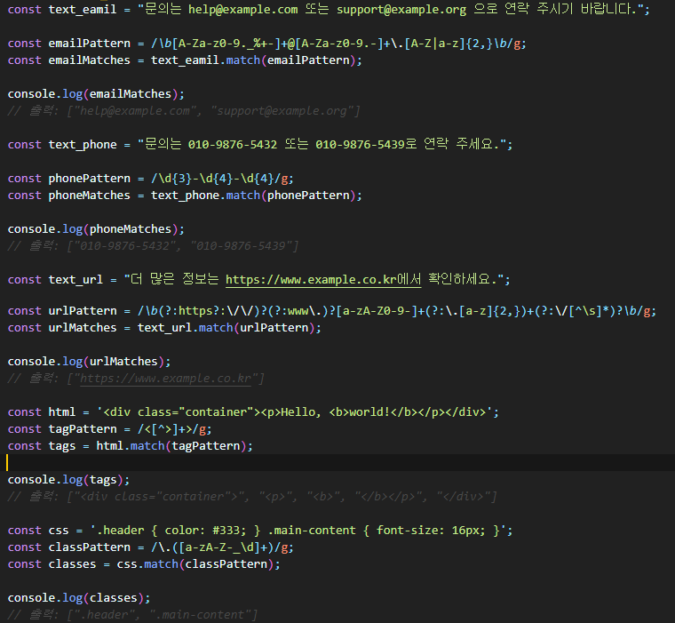

프로시저 : 명령문의 집합 Private Sub(현재 모듈에서 호출가능), Sub(프로젝트 전역에서 호출가능)
변수의 선언 : [키워드] 변수명 [As 데이터형]
• [키워드] 4종 : Dim, Static, Private, Public, 편집화면에서 파란색으로 표시된다.
- Static 변수명 As Integer : 프로시저 외부에서 선언시 에러
- Public 변수명 As Integer : 프로시저 내부에서 선언시 에러
- 키워드 : vba에서 기능이 미리 정의된, 의미 있는 단어
- Dim : (변수)프로시저 바깥에서 선언하면 모듈안의 프로시저에서 기억
- Dim : (변수)프로시저 내부에서 선언하면 프로시저 종료시 초기화
- Static(사전:정적인) : (변수)프로시저 안에서 선언, 프로시저 종료시 기억됨, 현재 프로시저에서만 해당
- Private(사전:사적인) : (프로시저) Private Sub 는 현재 모듈에서만 Call 가능
- Public(사전:공공의) : (변수)프로시저 바깥에서 선언, 프로젝트 전역에서 사용 및 기억

Dim int1, int2, int3 As Integer 라고 선언시
• int3만 Integer이고 나머진 variant형으로 선언이 되므로 주의하여야 한다.
• 모두 Integer형식으로 선언하려면 : Dim int1 As Integer, int2 As Integer, int3 As Integer
• As 데이터형 : 생략 가능, 생략시 데이터형이 Variant형으로 지정됨.
변수 이름 규칙
• 첫번째 문자는 숫자 안됨
• 밑줄(_) 이외의 특수문자(.,,,!,@,#,$,-,[,] 등)을 사용할 수 없음
• Visual Basic의 함수, 명령문, 메서드와 같은 키워드를 이름으로 사용할 수 없음.
ex : Dim dim As Integer
• 길이는 255자를 넘을 수 없음
• 같은 수준의 범위에서는 이름을 중복하여 지정할 수 없음.
• 대/소문자 구분하지 않음
- 변수명을 AbcDE 로 선언하고 사용할 때, abcde로 사용하면 자동으로 AbcDE로 변경되는데
변수명을 정확히 사용하고 있다는 것을 인지할 수 있음
VBA(Visual Basic for Applications)에서는 변수명마다 type을 지정해주어야 한다.
• Dim lastTime, nextTime, allTimes() As Date
변수형을 따로 지정하지 않으면 lastTime, nextTime은 Variant형으로 지정된다.
allTimes() As Date만 Date 타입으로 지정된다.
• vba에서 모두 Date 타입으로 변수를 선언하려면 아래와 같이
Dim lastTime As Date, nextTime As Date, allTimes() As Date
As 데이터형 종류 : ① 문자열, 숫자, 통화, Boolean ② Object ③ Variant
①
Let 변수명 = 값, 기본적으로 Let이 생략된 상태이므로 생략해도 됨②
Set 변수명 = 개체 (개체에는 여러 속성이 있을수 있다)- 개체변수명.속성명 으로 접근할 수 있다. (속성 예 : Name, Type 등등)
③
Variant (변수 대입시에 Object인지 아닌지 결정됨)- 변수대입시 결정된 변수가 Object(ex:Image개체인 경우), Set 사용 안하면 에러
• Object는 개체이고 개체의 종류는 여러가지 (Range, Worksheet, Workbook, Image, Chart, Picture 등)
변수에 값을 대입시, Let(생략 가능), Set(생략시 에러 : 개체일때 Set 생락하면 안된다는 의미)
•
ActiveSheet.Paste 이 줄에서 가끔 오류 발생. 원인 확률 1위는 •직전에 Selection 상태가 다른 대상으로 넘어감 •Cut된 객체가 존재하지 않음(이미 없어짐) •Paste 대상 Sheet가 ActiveSheet가 아니게 됨 •메모리가 바뀌어서 Paste 버퍼 소실 •Excel이 화면 업데이트 중이라 Selection이 깨짐 •즉 VBA 자체 문제라기보다 Selection, Cut, Paste 방식의 구조적 취약성입니다.
그래서 액셀에서 도형 생성 후 이동은 Paste 없이 좌표 세팅으로 처리해야 합니다.
✔️ 해결방안(추천)
아래 방식으로 바꾸면 Paste 오류 100% 사라집니다.
🔄 바꾸기 전(문제 있는 방식)
ActiveSheet.Shapes.AddShape(msoShapeOval, 10, 10, 10, 10).Select
Selection.Cut
ActiveSheet.Paste '<--- 여기서 가끔 오류
Selection.ShapeRange.ScaleWidth 1, msoFalse, msoScaleFromTopLeft
🔄 바꾼 후(안정 방식)
Dim shp As Shape
Set shp = ActiveSheet.Shapes.AddShape(msoShapeOval, 10, 10, 10, 10)
'도형 이동/사이즈 변경 (Paste 없음)
shp.Width = shp.Width * 1 '축소/확대
shp.Top = 위치
shp.Left = 위치
Paste 제거
Selection 제거
Cut 제거
화면 상태 변화 영향 없음
속도도 빨라짐
같은 도형을 4회 생성하여 각 각 다른셀에 위치시킬때 CUT/PASTE 안쓰는게 빠를까?
결론부터 말씀드리면,
✅ Cut/Paste를 안 쓰는 것이 훨씬 빠르고 안정적입니다.
4개 생성처럼 적은 수라면 속도 차이는 미세하지만,
Excel의 내부 처리 방식상 다음 이유 때문에 Cut/Paste가 더 느리고 위험합니다.
📌 비교 분석
1) Top/Left 직접이동 방식 (권장)
Set shp = ActiveSheet.Shapes.AddShape(...)
shp.Top = Range("A3").Top
shp.Left = Range("A3").Left
✔️ 빠른 이유
도형 생성 후 좌표만 변경 (내부 연산이 매우 적음)
Select가 없음
화면 갱신 영향을 받지 않음
이름 변경 없음
메모리 이동 없음
2) Cut/Paste 방식
shp.Cut
Range("A3").Select
ActiveSheet.Paste
❗ 느리고 위험한 이유
Cut 수행 → 도형 삭제
Paste 수행 → 도형 재생성
Select 호출 (UI 이벤트 발생)
Clipboard 사용 (불필요한 OS 호출)
ScreenUpdating과 관련된 렉 발생
도형 이름 변경 (추적 어려움)
→ 즉, Cut/Paste는 2단계가 아니라 5단계 이상의 내부 작업을 수행합니다.
📌 VBA 코드 (CUT/PASTE 미사용 / Top-Left 방식)
Sub 도형_4개_자동배치()
Dim shp As Shape
Dim arrCells As Variant
Dim i As Long
'도형을 놓을 셀 목록
arrCells = Array("A3", "E6", "B10", "D15")
'4개 도형 생성 반복
For i = LBound(arrCells) To UBound(arrCells)
'도형 생성
Set shp = ActiveSheet.Shapes.AddShape(msoShapeOval, 1, 1, 20, 20)
'셀 위치로 이동
With shp
.Left = Range(arrCells(i)).Left
.Top = Range(arrCells(i)).Top
End With
Next i
End Sub
Sub 도형_4개_자동배치_실무형()
Dim shp As Shape
Dim arrCells As Variant
Dim arrText As Variant
Dim arrColor As Variant
Dim i As Long
'도형 배치할 셀 위치
arrCells = Array("A3", "E6", "B10", "D15")
'도형에 넣을 텍스트
arrText = Array("1", "2", "3", "4")
'도형 색깔 (RGB값, 4종)
arrColor = Array(RGB(255, 153, 153), RGB(102, 255, 153), _
RGB(153, 204, 255), RGB(255, 255, 153))
'반복문으로 도형 생성
For i = LBound(arrCells) To UBound(arrCells)
'=== 도형 생성 ===
Set shp = ActiveSheet.Shapes.AddShape(msoShapeOval, 1, 1, 25, 25)
With shp
'=== 위치 이동 ===
.Left = Range(arrCells(i)).Left
.Top = Range(arrCells(i)).Top
'=== 이름 지정 ===
.Name = "DOT_" & (i + 1)
'=== 텍스트 표시 ===
.TextFrame.Characters.Text = arrText(i)
.TextFrame.HorizontalAlignment = xlHAlignCenter
.TextFrame.VerticalAlignment = xlVAlignCenter
.TextFrame.Characters.Font.Size = 9
'=== 색깔 지정 ===
.Fill.ForeColor.RGB = arrColor(i)
.Line.Visible = msoFalse '테두리 제거 원하면
End With
Next i
End Sub
도형은 다른시트에 생성가능.
Dim ws As Worksheet
Dim shp As Shape
Dim 주소들 as String
Set ws = Worksheets("Sheet2")
Set shp = ws.Shapes.AddShape(msoShapeOval, 1, 1, 25, 25)
UserForm_Initialize에 폼켜면 버튼컬렉션
Option Explicit
Dim 버튼들 As Collection
Private Sub UserForm_Initialize()
Dim ctl As Control
Dim btnClass As clsBtn ' clsBtn 이름의 클래스 모듈
Set 버튼들 = New Collection
For Each ctl In Me.Controls
If Left(TypeName(ctl), 7) = "Command" Then
Set btnClass = New clsBtn
Set btnClass.cBtn = ctl
버튼들.Add btnClass
End If
Next ctl
End Sub
==============================
clsBtn 이름의 클래스 모듈 내용
Option Explicit
Public WithEvents cBtn As MSForms.CommandButton
여기선 커맨드버튼인데 구체적으로 설정해야한다고 한다. 컨트롤이라고는 안되네
커맨드버튼일때 afterupdate가 없다, textbox이면 있겠지?
Private Sub cBtn_Click()
Sheets("모듈").Range("A1") = cBtn.Caption
Debug.Print "컬렉션기능"
End Sub
버튼 자체의 코드 실행후, cBtn_Click 실행
이런 기능을 할 수 있는 변수형(클래스)을 하나 만드는 것 같다.
"Dim 반복 as Byte"에서 "반복"은 0에서 255사이의 정수인데.
"Byte"부분에 "클래스모듈이름"이 온다
클래스모듈 생성하면 클래스모듈의 이름이 변수형의 이름으로 사용할수 있다.
도형을 만들때 거의 동일한 동작인데 버튼이 24개 정도 되는데 예시에서는 커맨드버튼들의 집합을
자료형 담아서 사용한다.
========== 클래스모듈 ===========
1) 클래스모듈 생성 : 결과적으로 클릭한 캐맨드버튼의 정보를 사용할 것이므로 변수 선언
Option Explicit
Public WithEvents cBtn As MSForms.CommandButton
2) 클래스모듈 내부에 cBtn(커맨드버튼)을 눌렀을때의 동작을 정의함
========== 모듈에서 클래스모듈(자료형) 사용 ===========
Dim btnClass As clsBtn ' clsBtn 이름의 클래스 모듈
Set 버튼들 = New Collection
For Each ctl In Me.Controls
If Left(TypeName(ctl), 7) = "Command" Then
Set btnClass = New clsBtn
Set btnClass.cBtn = ctl
버튼들.Add btnClass
End If
Next ctl
1) 위와 같이 폼 내의 커맨드버튼들을 클래스모듈의 이름에 담는다.
2) 하나의 커맨드버튼이 클릭되었을때 클래스모듈의 정의대로 작동한다.
Call 형식은 괄호안에 인수전달
Sub 텍스트셑팅(ByVal 주소위치 As String, ByVal 기본텍스트 As String) ... End Sub
Sub 연습(텍스트 As String, 숫자 As Byte)
MsgBox "텍스트 : " & 텍스트 & ", 숫자" & 숫자
End Sub
Sub 실행연습()
연습 "텍스트형식", 3
End Sub
Sub 실행연습()
Call 연습("텍스트형식", 3)
End Sub
Function 형식은 다른 sub 안에서 변수에 값 대입을 해야한다?
과정은 실행되니 결과
Function 도형1_FN주소추출(ByVal 시트이름 As String, _
ByVal 페이지 As Byte, _
ByVal 주소위치 As String) As Variant
'자유롭게 코딩하다가
'도형1_FN주소추출=... 형식으로 지정하면 변수에 담을때 이 결과가 담긴다.
End Function
====================
Sub 실행연습()
Dim 주소 as Boolean 'function결과가 Boolean 이었다
주소 = 도형1_FN주소추출("수산화찰", 2, "이름")
' 실행코드는 실행되고 결과가 담긴다
End Sub
Option Explicit
Public WithEvents cBtn As MSForms.CommandButton
Private Sub cBtn_Click()
Dim 시트이름 As String
시트이름 = ActiveSheet.Name
Dim 선택범위 As Range
On Error Resume Next
Set 선택범위 = Selection
On Error GoTo 0
Dim 기준셀 As Range
Set 기준셀 = Sheets("모듈").Cells.Find(What:="기준셀_화찰정보당겨오기", LookAt:=xlWhole)
Dim 페이지 As Byte
페이지 = 기준셀.Offset(2, 1)
Select Case cBtn.Name
' ───────── 시트 선택 ─────────
Case "시트이름_수산"
cls_화찰_입력_작동시트 "수산화찰"
폼버튼색칠
Case "시트이름_축산"
cls_화찰_입력_작동시트 "축산화찰"
폼버튼색칠
Case "시트이름_일반"
cls_화찰_입력_작동시트 "일반화찰"
폼버튼색칠
' ───────── 페이지 ─────────
Case "CMD_페이지"
cls_화찰폼_페이지클릭 리스트화찰폼.CMD_페이지.Caption
' ───────── 도형 버튼 (패턴 처리) ─────────
Case _
"센터도형_채움원", "센터도형_채움없는원", "센터도형_채움사각형", "센터도형_채움없는사각형", "센터도형_사각형글자만", _
"암수도형_채움원", "암수도형_채움없는원", "암수도형_채움사각형", "암수도형_채움없는사각형", "암수도형_사각형글자만", _
"암수아래도형_채움원", "암수아래도형_채움없는원", "암수아래도형_채움사각형", "암수아래도형_채움없는사각형", "암수아래도형_사각형글자만", _
"품명우측도형_채움원", "품명우측도형_채움없는원", "품명우측도형_채움사각형", "품명우측도형_채움없는사각형", "품명우측도형_사각형글자만", _
"삼오백도형_채움원", "삼오백도형_채움없는원", "삼오백도형_채움사각형", "삼오백도형_채움없는사각형", "삼오백도형_사각형글자만"
cls_도형유형클릭 cBtn.Name
폼버튼색칠
' ───────── 도형삭제 ─────────
Case "센터도형_삭제", "암수도형_삭제", "암수아래도형_삭제", "품명우측도형_삭제", "삼오백도형_삭제"
cls_화찰폼_생성위치별_도형삭제 cBtn.Name
' ───────── 도형 수정위치 ─────────
Case "수정위치_일괄", "수정위치_1", "수정위치_2", "수정위치_3", "수정위치_4"
cls_화찰폼_수정위치변경 cBtn.Name
폼버튼색칠
' ───────── 화찰가져오기 위치 ─────────
Case "CMD_가져오기_일괄", "CMD_가져오기_1", "CMD_가져오기_2", "CMD_가져오기_3", "CMD_가져오기_4"
cls_화찰폼_화찰폼가져오기위치변경 cBtn.Name
폼버튼색칠
' ───────── "선택" 클릭 ─────────
Case "선택_센터", "선택_암수", "선택_암수아래", "선택_품명우측", "선택_삼오백", "선택_삼오백좌", "선택_삼오백우"
cls_화찰폼_선택클릭 cBtn.Name
폼버튼색칠
' ───────── 선택 참고, 단계 강제 설정후 단계정보 적용 ─────────
Case "CMD_토탈변경_1글자", "CMD_토탈변경_1글자", "CMD_토탈변경_1글자", "CMD_토탈변경_1글자", "CMD_토탈변경_1글자", _
"CMD_토탈변경_P", "CMD_토탈변경_PC"
'cls_화찰폼_선택한단계로도형변경 cBtn.Name
End Select
Sheets(시트이름).Select
On Error Resume Next
선택범위.Activate
End Sub
Sub cls_화찰폼_선택클릭(선택 As String)
Dim 기준셀 As Range
Set 기준셀 = Sheets("모듈").Cells.Find(What:="기준셀_작동시트_페이지_위치", LookAt:=xlWhole)
기준셀.Offset(2, 10) = 선택 '폼의 선택정보 기본값 (C)
End Sub
Sub cls_화찰폼_화찰폼가져오기위치변경(수정위치 As String)
Dim 기준셀 As Range
Set 기준셀 = Sheets("모듈").Cells.Find(What:="기준셀_화찰정보당겨오기", LookAt:=xlWhole)
Dim 생성위치셀 As Range
Set 생성위치셀 = 기준셀.Offset(1, 0) '수정위치와 같다
If 수정위치 = "CMD_가져오기_일괄" Then
생성위치셀.Value = 0
ElseIf 수정위치 Like "CMD_가져오기_[1-4]" Then
생성위치셀.Value = CInt(Right(수정위치, 1))
End If
End Sub
Sub cls_화찰폼_수정위치변경(수정위치 As String)
Dim 기준셀 As Range
Set 기준셀 = Sheets("모듈").Cells.Find(What:="기준셀_작동시트_페이지_위치", LookAt:=xlWhole)
Dim 생성위치셀 As Range
Set 생성위치셀 = 기준셀.Offset(2, 5) '수정위치와 같다
If 수정위치 = "수정위치_일괄" Then
생성위치셀.Value = 0
ElseIf 수정위치 Like "수정위치_[1-4]" Then
생성위치셀.Value = CInt(Right(수정위치, 1))
End If
End Sub
Sub cls_화찰폼_생성위치별_삼오백도형3종삭제(삭제클릭 As String)
Dim 기준셀 As Range
Set 기준셀 = Sheets("모듈").Cells.Find(What:="기준셀_작동시트_페이지_위치", LookAt:=xlWhole)
Dim 시트이름 As String: 시트이름 = 기준셀.Offset(2, 0)
Dim 페이지 As Byte: 페이지 = 기준셀.Offset(2, 1)
Dim 생성위치 As Byte: 생성위치 = 기준셀.Offset(2, 5)
Dim 도형이름 As String
Dim 반복 As Byte
For 반복 = 1 To 4
도형이름 = 시트이름 & "_" & 페이지 & "_" & Split(삭제클릭, "_")(0) & "_" & 반복 'Split(삭제클릭, "_")(0) : 센터도형_삭제 의 센터도형
If 생성위치 = 0 Then
도형생성내부_1_특정이름도형삭제 시트이름, 도형이름
End If
If 생성위치 = 반복 Then
도형생성내부_1_특정이름도형삭제 시트이름, 도형이름
End If
Next
End Sub
Sub cls_화찰폼_생성위치별_도형삭제(삭제클릭 As String)
Dim 기준셀 As Range
Set 기준셀 = Sheets("모듈").Cells.Find(What:="기준셀_작동시트_페이지_위치", LookAt:=xlWhole)
Dim 시트이름 As String: 시트이름 = 기준셀.Offset(2, 0)
Dim 페이지 As Byte: 페이지 = 기준셀.Offset(2, 1)
Dim 생성위치 As Byte: 생성위치 = 기준셀.Offset(2, 5)
Dim 도형이름 As String
Dim 반복 As Byte
For 반복 = 1 To 4
도형이름 = 시트이름 & "_" & 페이지 & "_" & Split(삭제클릭, "_")(0) & "_" & 반복 'Split(삭제클릭, "_")(0) : 센터도형_삭제 의 센터도형
If 생성위치 = 0 Then
도형생성내부_1_특정이름도형삭제 시트이름, 도형이름
End If
If 생성위치 = 반복 Then
도형생성내부_1_특정이름도형삭제 시트이름, 도형이름
End If
Next
End Sub
Sub cls_도형유형클릭(도형정보 As String)
Dim 기준셀 As Range
Set 기준셀 = Sheets("모듈").Cells.Find(What:="기준셀_작동시트_페이지_위치", LookAt:=xlWhole)
기준셀.Offset(2, 2) = 도형정보
기준셀.Offset(2, 6) = 리스트화찰폼.Controls("T_" & Split(도형정보, "_")(0) & "텍스트").Value 'T_삼오백도형텍스트
기준셀.Offset(2, 7) = 리스트화찰폼.Controls("T_삼오백도형텍스트_우").Value
Select Case cBtn.Name
Case "센터도형_채움원", "센터도형_채움없는원", "센터도형_채움사각형", "센터도형_채움없는사각형", "센터도형_사각형글자만"
기준셀.Offset(2, 10) = "선택_센터"
Case "암수도형_채움원", "암수도형_채움없는원", "암수도형_채움사각형", "암수도형_채움없는사각형", "암수도형_사각형글자만"
기준셀.Offset(2, 10) = "선택_암수"
Case "암수아래도형_채움원", "암수아래도형_채움없는원", "암수아래도형_채움사각형", "암수아래도형_채움없는사각형", "암수아래도형_사각형글자만"
기준셀.Offset(2, 10) = "선택_암수아래"
Case "품명우측도형_채움원", "품명우측도형_채움없는원", "품명우측도형_채움사각형", "품명우측도형_채움없는사각형", "품명우측도형_사각형글자만"
기준셀.Offset(2, 10) = "선택_품명우측"
Case "삼오백도형_채움원", "삼오백도형_채움없는원", "삼오백도형_채움사각형", "삼오백도형_채움없는사각형", "삼오백도형_사각형글자만"
기준셀.Offset(2, 10) = "선택_삼오백"
'선택_삼오백좌, 선택_삼오백우 ??
End Select
Call 화찰_주소관련정보셑팅
Call 코드집합_도형생성
End Sub
Sub cls_화찰_입력_작동시트(작동시트 As String)
Dim 기준셀 As Range
Set 기준셀 = Sheets("모듈").Cells.Find(What:="기준셀_작동시트_페이지_위치", LookAt:=xlWhole)
기준셀.Offset(2, 0) = 작동시트
Call 화찰_주소관련정보셑팅
Call 리스트화찰폼_연결그림_셑팅된대로가져옴
End Sub
Sub cls_화찰폼_페이지클릭(화찰폼페이지 As Byte)
Dim 기준셀 As Range
Set 기준셀 = Sheets("모듈").Cells.Find(What:="기준셀_작동시트_페이지_위치", LookAt:=xlWhole)
Dim 작동시트 As String: 작동시트 = 기준셀.Offset(2, 0)
Dim 페이지최대값 As Byte
If 작동시트 = "일반화찰" Then 페이지최대값 = 3 Else 페이지최대값 = 2
If 화찰폼페이지 = 페이지최대값 Then 기준셀.Offset(2, 1) = 1
If 화찰폼페이지 = 페이지최대값 Then 리스트화찰폼.CMD_페이지.Caption = 1
If 화찰폼페이지 < 페이지최대값 Then 기준셀.Offset(2, 1) = 화찰폼페이지 + 1
If 화찰폼페이지 < 페이지최대값 Then 리스트화찰폼.CMD_페이지.Caption = 화찰폼페이지 + 1
Call 화찰_주소관련정보셑팅
Call 리스트화찰폼_연결그림_셑팅된대로가져옴
리스트화찰폼.CMD_페이지.Caption = 기준셀.Offset(2, 1) '결과, 위에꺼와 다를수 있음
End Sub
작동시트,페이지,주소위치 변경시 주소(vba) 주소확인Boolean 확정됨 작동시트가 "일반화찰"이 아니고 페이지가 3 이면 페이지 2로 변경 1)작동시트,페이지,주소위치는 모듈시트에 전달하는 코드로 전달한 후 2)Sub 주소관련정보셑팅( ) Sub 화찰_연결그림_셑팅된대로가져옴( ) 1) 작동시트, 페이지 변경시 후속 함수로 실행되는 경우가 많다. 도형생성 관련 1)Sub 주소관련정보셑팅( ) === 도형생성이전 ===사전에 작성되어야 하는 정보, 클래스모듈 Private Sub cBtn_Click( ) 활용=== ===버튼클릭 감지, 각각의 컨트롤에 코드 입력하지 않고...=== 도형위치가 삼오백 아닌경우 생성위치, 도형이름(ex:채움사각형), 도형위치(ex:센터), 기본텍스트 도형위치가 삼오백 생성위치, 도형이름(ex:채움사각형), 도형위치(ex:센터), 기본텍스트, 삼오백우텍스트
참고사항
• 도형의 이름(Name)이 같아도 상관없음 [index가 다름]
• Shapes(모든도형), DrawingObjects, Pictures 객체의 상위 객체는 시트(Activesheet)
• 범위.Shapes 형태로 상위 객체를 Range로 사용할 수 없다
• 도형의 Type등을 확인할 때는 도형을 의미하는 변수, 또는 도형을 의미하는 표현식이어야 한다.
- 예 : 도형을 select하였을때 selection.Type이 안되는 경우 => 도형변수.Type 형태로 사용해야?
참고사항
• ActiveSheet.Shapes(순번) : Shapes(모든도형들 중) (순번) 1부터 시작되는 순번의 도형
• ActiveSheet.Shapes.Range(배열) : Shapes(모든도형들 중) 배열에 담긴 도형들
• ActiveSheet.Shapes.Range(Array()) : () 안의 값이 숫자면 순번이고 문자열이면 Name이다
- ActiveSheet.Shapes.Range(Array(1, 3)).Select
- ActiveSheet.Shapes.Range(Array("그림 8", "그림 10")).Select
- Dim 배열(1 to 2) As String / 배열(1)="그림 8" / 배열(2)="그림 10" / ActiveSheet.Shapes.Range(Array(배열)).Select
참고사항. Shapes대신 DrawingObjects와 Pictures
• 텍스트상자만, AutoShape도형만 선택하는것은 모르겠음.
• ActiveSheet.DrawingObjects.Delete '모든 DrawingObjects 삭제 (그림, 도형, 텍스트박스 등)
• ActiveSheet.Pictures.Delete '그림만 삭제
• ActiveSheet.Shapes의 경우는 : ActiveSheet.Shapes.SelectAll로 전체선택후 Selection.Delete
- Shapes객체가 특이하다 (SelectAll로 선택하는 것과 Selection.Delete하는 것이)
도형의 종류 (ActiveSheet.Shapes.AddShape는 MsoAutoShapeType (Type번호 1)의 도형을 만드는 코드다)
• MsoShapeType이 여기서는 큰분류이며 만들때는 각각 모양에 따른 문자열(순번으로도 표현 가능)이 다르다.
'MsoShapeType
번호
이름
'MsoShapeType
번호
이름
'msoAutoShape
1
AutoShape
'msoCallout
2
Callout
'msoChart
3
Chart
'msoComment
4
Comment
'msoDiagram
21
Diagram
'msoEmbeddedOLEObject
7
Embedded OLE object
'msoFormControl
8
Form control
'msoFreeform
5
Freeform
'msoGroup
6
Group
'msoIgxGraphic
24
SmartArt graphic
'msoInk
22
Ink
'msoInkComment
23
Ink comment
'msoLine
9
Line
'msoLinkedOLEObject
10
Linked OLE object
'msoLinkedPicture
11
Linked picture
'msoMedia
16
Media
'msoOLEControlObject
12
OLE control object (ActiveX controls)
'msoPicture
13
Picture
'msoPlaceholder
14
Placeholder
'msoScriptAnchor
18
Script anchor
'msoShapeTypeMixed -
2
Mixed shape type
'msoTable
19
Table
'msoTextBox
17
Text box
'msoTextEffect
15
Text effect
'msoCanvas
20
Canvas
msoAutoShape 타입 도형(Type번호 1, 이름 AutoShape) 만들기 코드
• ActiveSheet.Shapes.AddShape(MsoAutoShapeType[타입이름문자열],Left, Top, Width, Height).Select
• MsoAutoShapeType 부분에 숫자를 넣으면 생성되는, 해당인덱스의 도형(Type 번호가 아님), 예)1~137까지 된다.

msoTextNpx 타입 도형(Type번호 17, 이름 Text Box) 만들기 코드
• ActiveSheet.Shapes.AddTextbox(msoTextOrientationHorizontal, 266.25, 57.75, 80.25, 29.25).Select
• msoTextOrientationHorizontal 부분에 숫자를 넣으면 1~6까지 된다. 모양이 같아보임
msoChart 타입 도형(Type번호 3, 이름 Chart) 만들기 코드
• ActiveSheet.Shapes.AddChart2(251, xlPie).Select
.Select 가 없으면 에러가 나는 이유?? 관련정보
- 괄호가 있을 때는 함수의 기능을 하여 반환하는 값이 발생하고, (함수가 되므로 반환하는 값을 저장할 변수가 지정되어야 함)
괄호가 없을 때는 명령으로 끝난다. (.Select : 선택하라는 명령)
• .Select 없이 변수를 사용하여 생성만하는 코드
Dim 도형 As Shape
Set 도형 = ActiveSheet.Shapes.AddShape(msoShapeRectangle, 10, 10, 10, 10) '시트에 도형이 만들어짐
• 시트에 만드는 코드 (.Select)
ActiveSheet.Shapes.AddShape(msoShapeRectangle, 34.5, 103.5, 72, 26.25).Select
Left, Top, Width, Height 지정해야하고 '.Select'
• 주요도형 (이름 : 번호 MsoShapeType) (번호=MsoShapeType) (종류에서 더 많은 정보 확인)
- Text box : 17 msoTextBox, AutoShape : 1 msoAutoShape, Picture : 13 msoPicture
도형의 종류를 Type번호 또는, MsoShapeType 으로 확인내기 (종류 참고)
MsgBox ActiveSheet.Shapes(4).Type '13 (Picture), 그림인 경우
If ActiveSheet.Shapes(4).Type = 13 Then
MsgBox "Type : " & ActiveSheet.Shapes(4).Type 'Type : 13"
End If
If ActiveSheet.Shapes(4).Type = msoPicture Then '종류 참고
MsgBox "Type : msoPicture"
End If
• 주요도형 (이름 : 번호 MsoShapeType) (번호=MsoShapeType) (종류에서 더 많은 정보 확인)
- Text box : 17 msoTextBox - AutoShape : 1 msoAutoShape - Picture : 13 msoPicture
도형의 종류를 번호로 Type번호로 확인내기
• Dim 도형 As Shape
For Each 도형 In ActiveSheet.Shapes
If 도형.Type = 17 And LEFT(도형.OnAction, 4) = LEFT(백업파일명, 4) Then 도형.Delete
'도형.OnAction은 도형에 걸린 매크로 이름(문자열)
'코드설명 : 도형.Type=17 : 도형의 종류가 글상자이고
Next
타입이름문자열 알아내기, 맞는지 확인하기 : 시트에 도형이 하나 있다고 가정함
• 그림, 텍스트상자, 챠트 등 모두 Shape 개체이므로 TypeName, TypeOf 결과는 Shape가 됨
• 글상자만듬 : ActiveSheet.Shapes.AddTextbox(msoTextOrientationHorizontal, 266.25, 57.75, 80.25, 29.25).Select
• TypeName, TypeOf Is 타입명 : True/False
MsgBox TypeName(ActiveSheet.Shapes(1)) => Shape
MsgBox TypeOf ActiveSheet.Shapes(1) Is Shape => True 또는 False 반환
If TypeOf ActiveSheet.Shapes(1) Is Shape Then => Type이 Shape라면
Dim 도형 As Shape : Set 도형 = 1개의 도형
• 안되는것 : Set 도형 = ActiveSheet.Shapes.Range(Array("그림 4")) '순번이 없으면 하나로 인식하지 않는다.
- Array() : 배열 안에 여러개가 들어갈 수 있으므로 순번을 넣어야 Array(배열)(순번) 하나로 인식함
- Activesheet(현재시트의).Shapes(모든도형들 중).Range(Array(배열))_배열안에 있는 것들
=>배열 값이 하나라도 순번을 넣어야 하나로 인식함
• 되는것 : Set 도형 = ActiveSheet.Shapes.Range(Array("그림 4"))(1)
ActiveSheet.Shapes.Range(Array()) : 순번을 지정하지 않으면 여러개일 수 있는 배열상태
• 타입이 다른게 있으면 -2 : MsgBox ActiveSheet.Shapes.Range(Array("textbox 1", "그림 4")).Type '그림=13, text box=17
• 타입이 모두 같으면 해당 타입 : MsgBox ActiveSheet.Shapes.Range(Array("그림 2", "그림 4")).Type
• 여러개 선택시 Name은 에러: MsgBox ActiveSheet.Shapes.Range(Array("그림 2", "그림 4")).Name => error!
• 하나 있을때 Name은 가능: MsgBox ActiveSheet.Shapes.Range(Array("그림 2")).Name => 그림 2
• 주요도형 (이름 : 번호 MsoShapeType) (번호=MsoShapeType) (종류에서 더 많은 정보 확인)
- Text box : 17 msoTextBox, AutoShape : 1 msoAutoShape, Picture : 13 msoPicture

도형 선택1 (변수에 담을 때는 .Select 없이)
• 인덱스 번호로 선택 : ActiveSheet.Shapes(1).Select '모든도형들 중, 첫번째 도형 선택
• Activesheet.Shapes.range(Array(배열))(1) : 모든도형들 중, 배열안의 도형들 중, 1번째 도형
• ActiveSheet.Shapes.Range(Array(1, 3)).Select '모든도형들 중, 첫번째와 세번째 도형 선택
• ActiveSheet.Shapes.Range(Array(1, 3))(2).Select '모든도형들 중, 배열안의 도형등 중,두번째도형선택
• Shapes.range(Array()) : 배열 값으로 숫자는 순번이고 이름을 직접 쓸 수도 있다.
- ActiveSheet.Shapes.Range(Array("그림 8", "그림 10")).Select
- 응용 : Dim 배열() As String / ReDim 배열(1 To 2) / 배열(1) = "그림 8" / 배열(2) = "그림 10"
ActiveSheet.Shapes.Range(배열).Select
도형 선택2 / 삭제, 도형의 이름(Name)이 같아도 상관없음 [index가 다름]
• 주요도형 : - Text box : 17 msoTextBox - AutoShape : 1 msoAutoShape - Picture : 13 msoPicture
• 텍스트상자만, AutoShape도형만 선택하는것은 모르겠음.
• ActiveSheet.Shapes의 경우는 : ActiveSheet.Shapes.SelectAll로 전체선택후 Selection.Delete
- ActiveSheet.Shapes.Delete 안됨
- Shapes객체가 특이하다 (SelectAll로 선택하는 것과 Selection.Delete하는 것이)
• ActiveSheet.DrawingObjects.Delete '모든 DrawingObjects 삭제 (그림, 도형, 텍스트박스 등)
• ActiveSheet.Pictures.Delete '그림만 삭제
도형 선택 vba 코딩 참고 (vba 한줄에 여러 명령시 명령마다 ":" 으로 구분)
Sub 그림_글상자_도형_선택예제()
Sheets("SHEET1").Select: Range("A1").Select '선택 해제
ActiveSheet.Shapes.SelectAll '모든 Shape 객체 선택됨
Range("A1").Select '선택 해제
ActiveSheet.DrawingObjects.Select '모든 DrawingObject 선택됨
Range("A1").Select '선택 해제
ActiveSheet.Pictures.Select '그림만 선택, 도형이나 글상자만 선택하는 것은 모르겠음
Range("A1").Select '선택 해제
'Shape의 순번은 확인해야 알 수 있다.
Dim 배열_그림들() As Integer, 배열_글상자들() As Integer, 배열_도형들() As Integer
Dim 그림순번 As Byte, 글상자순번 As Byte, 도형순번 As Byte
Dim 인덱스 As Byte, sh As Shape
For Each sh In ActiveSheet.Shapes
인덱스 = 인덱스 + 1 '첫도형의 인덱스 1
If sh.Type = msoPicture Then 그림순번 = 그림순번 + 1 '번호로는 13, 그림이라면
If sh.Type = msoTextBox Then 글상자순번 = 글상자순번 + 1 '번호로는 17, 글상자라면
If sh.Type = msoAutoShape Then 도형순번 = 도형순번 + 1 '번호로는 1, 글상자라면
' Name을 바꿀수 있는데 같은 이름이어도 상관이 없다.
If sh.Type = msoPicture Then 'msoPicture 대신에 13 가능, If sh.Type = 13 Then
ReDim Preserve 배열_그림들(1 To 그림순번): 배열_그림들(그림순번) = 인덱스 '인덱스 번호 누적 저장
ActiveSheet.Shapes(인덱스).Name = "그림" & 그림순번 '이름부여 예시
End If
If sh.Type = msoTextBox Then 'msoTextBox 대신에 17 가능, If sh.Type = 17 Then
ReDim Preserve 배열_글상자들(1 To 글상자순번): 배열_글상자들(글상자순번) = 인덱스
ActiveSheet.Shapes(인덱스).Name = "글상자" & 글상자순번 '이름부여 예시
End If
If sh.Type = msoAutoShape Then 'msoAutoShape 대신에 1 가능, If sh.Type = 1 Then
ReDim Preserve 배열_도형들(1 To 도형순번): 배열_도형들(도형순번) = 인덱스 '인덱스 번호 누적 저장
ActiveSheet.Shapes(인덱스).Name = "도형" & 도형순번 '이름부여 예시
End If
Next
MsgBox "그림개수 : " & UBound(배열_그림들, 1) - LBound(배열_그림들, 1) + 1 & "개, " & _
"글상자개수 : " & UBound(배열_글상자들, 1) - LBound(배열_글상자들, 1) + 1 & "개, " & _
"도형개수 : " & UBound(배열_도형들, 1) - LBound(배열_도형들, 1) + 1 & "개"
ActiveSheet.Shapes.Range(배열_그림들).Select '그림 3개 선택됨
Range("A1").Select '선택 해제
ActiveSheet.Shapes.Range(배열_그림들)(1).Select (False) '그림 1개 선택됨
ActiveSheet.Shapes.Range(배열_그림들)(2).Select (False) '그림 2개 선택됨
ActiveSheet.Shapes.Range(배열_그림들)(3).Select (False) '그림 3개 선택됨
Range("A1").Select '선택 해제
ActiveSheet.Shapes.Range(Array("그림1")).Select '도형이름="그림1" 선택됨
ActiveSheet.Shapes.Range(Array("그림2")).Select '도형이름="그림2" 선택됨
ActiveSheet.Shapes.Range(Array("그림3")).Select '도형이름="그림3" 선택됨
Range("A1").Select '선택 해제
ActiveSheet.Shapes.Range(배열_그림들).Select (False) '그림 3개 선택됨
ActiveSheet.Shapes.Range(배열_도형들).Select (False) '그림 3개 + 도형 3개 선택됨
End Sub
선택한범위 안의 도형 선택. select는 이전 선택 해제됨. 다중선택은 select (False)
- 범위안에 도형이 완전히 들어가 있을때 선택됨.
Sub 도형선택()
Dim shp As Shape
Dim cellRange As Range
Set cellRange = Selection ' 현재 선택된 셀 범위
For Each shp In ActiveSheet.Shapes ' 모든 도형을 검사
' 도형이 선택된 셀 범위 안에 있는지 확인
If Not Intersect(shp.TopLeftCell, cellRange) Is Nothing _
And Not Intersect(shp.BottomRightCell, cellRange) Is Nothing Then
shp.Select (False) ' 도형 선택 false가 다중 선택을 의미
End If
Next shp
End Sub
출처: https://han8849.tistory.com/124 [90년대생의 직장생활:티스토리]
도형 위치 확인 (참고:도형의 시작위치는 셀편집화면기준, 폼은 다르다)
• 선택한 범위안에 도형위치를 '셀'로 확인 (셀범위 선택상태에서 사용)
- TopLeftCell : 그림이 차지하는 범위중 왼쪽 최상단 셀.
- BottomRightCell : 그림이 차지하는 범위중 오른쪽 최하단 셀.
- 사용 예 : Range(Pic.TopLeftCell.Address, Pic.BottomRightCell.Address).Select
- 사용 예 : Range(Pic.TopLeftCell, Pic.BottomRightCell).Select
• 엑셀창에서 도형 자체의 위치를 '좌표값'으로 확인. 컴퓨터 화면 기준이 아님.
- TopLeft, BottomRight, Top, Right, Bottom, Left
자동 매크로 기록으로 텍스트상자 만들기 예시
• Sub 매크로9()
ActiveSheet.DrawingObjects.Delete
'1.가로텍스트상자 만들기
ActiveSheet.Shapes.AddTextbox(msoTextOrientationHorizontal, 215.25, 102, 180.75, 32.25).Select
'2.내용기록 : "가로텍스트상자"
Selection.ShapeRange(1).TextFrame2.TextRange.Characters.Text = "가로텍스트상자"
'3.Characters.Text는 글자 입력이고, 들여쓰기(양수/음수)는 Characters(시작, 글자수) 시작 첫번째는 1
Selection.ShapeRange(1).TextFrame2.TextRange.Characters(1, 7).ParagraphFormat.FirstLineIndent = 2
'4. 세번째 글자부터 글자3개를 글자크기 크게(18), 굵게
Selection.ShapeRange(1).TextFrame2.TextRange.Characters(3, 3).Font.Size = 18
Selection.ShapeRange(1).TextFrame2.TextRange.Characters(3, 3).Font.Bold = msoTrue
'※ TextFrame구체적인 예: 문자의 색상을 설정하려면 TextFrame을 사용해야 하지만
' 간격을 설정하려면 TextFrame2를 사용해야 하는 것 같습니다. 샘플 코드:
' pptShape.TextFrame.TextRange.Characters(i, 1).Font.Color = vbRed
' pptShape.TextFrame2.TextRange.Characters(i, 1).Font.Spacing = -1
'6. 개체가 아래 셀에 연결되는 방식을 나타내는 XlPlacement 값을 반환하거나 설정합니다 .
' 속성에서 "위치만 변함" 선택하였음.
Selection.Placement = xlMove
'7. 텍스트상자
With Selection.ShapeRange.TextFrame2
.VerticalAnchor = msoAnchorMiddle '세로맞춤=중간
.HorizontalAnchor = msoAnchorNone '가로맞춤=설정안함
End With
' 채우기 Fill..Visible = msoTrue 먼저(색상, 투명도 등)
With Selection.ShapeRange.Fill
.Visible = msoTrue
.ForeColor.RGB = RGB(255, 255, 0) '노란색 색상
.Transparency = 0.6399999857 '투명도
.Solid '균일한 색상으로
End With
' 테두리
With Selection.ShapeRange.Line
.Visible = msoTrue
.ForeColor.ObjectThemeColor = msoThemeColorText1 '라인 테두리 형식
.ForeColor.TintAndShade = 0
.ForeColor.Brightness = 0
.Transparency = 0
.Weight = 2 '두께
End With
' 텍스트상자 외부에서 선택하여 가운데 정렬(내부 텍스트 가운데 정렬)
Selection.ShapeRange.TextFrame2.TextRange.ParagraphFormat.Alignment = msoAlignCenter
End Sub
도형과 폼의 위치 확인 (참고:도형의 시작위치는 셀편집화면기준, 폼은 다르다)
• 도형 : TOP=0 => A1셀의 TOP, LEFT=0 => A1셀의 LEFT
• 도형의 경우 특정셀 기준으로 위치를 잡기가 쉽다.
엑셀 전체창 / 부분창일때, Application.TOP(LEFT), ActiveWindow.TOP(LEFT)
• 폼의 위치를 LEFT=0, TOP=0 으로 지정하였다.
• LEFT 시작값은 -5, TOP 시작값은 Application=-6, ActiveWindow=-5(테두리 제외 값인 듯)
★ 폼의 위치는 화면기준으로 생각하면 되겠다.

폼의 위치를 셀기준 상대위치로 지정하고 싶을때 참고 코드
Private Sub UserForm_Activate()
Sheets("SHEET1").Select: Dim 기준셀 As Range: Set 기준셀 = Range("T10")
Dim 전체화면탭표시높이 As Double, 전체화면탭및명령표시높이 As Double, 전체화면LEFT보정 As Double
전체화면탭표시높이 = 99.5: 전체화면탭및명령표시높이 = 164.5: 전체화면LEFT보정 = 28.5
Dim 부분창화면탭표시높이 As Double, 부분창화면탭및명령표시높이 As Double, 부분창화면LEFT보정 As Double
부분창화면탭표시높이 = 99.5 - 3: 부분창화면탭및명령표시높이 = 164.5 - 3: 부분창화면LEFT보정 = 28.5 - 5.5
Dim 보정종류 As String
'보정종류 = "전체화면탭표시"
'보정종류 = "전체화면탭및명령표시"
'보정종류 = "부분창화면탭표시"
보정종류 = "부분창화면탭및명령표시"
If 보정종류 = "전체화면탭표시" Then
Me.TOP = ActiveWindow.TOP + 기준셀.TOP + 전체화면탭표시높이
Me.LEFT = ActiveWindow.LEFT + 기준셀.LEFT + 전체화면LEFT보정
End If
If 보정종류 = "전체화면탭및명령표시" Then
Me.TOP = ActiveWindow.TOP + 기준셀.TOP + 전체화면탭및명령표시높이
Me.LEFT = ActiveWindow.LEFT + 기준셀.LEFT + 전체화면LEFT보정
End If
If 보정종류 = "부분창화면탭표시" Then
Me.TOP = ActiveWindow.TOP + 기준셀.TOP + 부분창화면탭표시높이
Me.LEFT = ActiveWindow.LEFT + 기준셀.LEFT + 부분창화면LEFT보정
End If
If 보정종류 = "부분창화면탭및명령표시" Then
Me.TOP = ActiveWindow.TOP + 기준셀.TOP + 부분창화면탭및명령표시높이
Me.LEFT = ActiveWindow.LEFT + 기준셀.LEFT + 부분창화면LEFT보정
End If
End Sub
UserForm은 이름이 아니라 UserForm, 다른 컨트롤은 (부여된)이름. 고유이벤트 보라색칠, 이벤트이름 클릭시 : 같은 이름 '노랑 색칠' 및 설명 생성
UserForm
Activate
AddControl
BeforeDragOver
BeforeDropOrPaste
Click
DbClick
Deactivate
Error
Initialize
KeyDown
KeyPress
KeyUp
Layout
MouseDown
MouseMove
MouseUp
QueryClose
RemoveControl
Resize
Scroll
Terminate
Zoom
Frame1
AddControl
BeforeDragOver
BeforeDropOrPaste
Click
DbClick
Enter
Error
Exit
KeyDown
KeyPress
KeyUp
Layout
MouseDown
MouseMove
MouseUp
RemoveControl
Scroll
Zoom
MultiPage1
AddControl
BeforeDragOver
BeforeDropOrPaste
Change
Click
DbClick
Enter
Error
Exit
KeyDown
KeyPress
KeyUp
Layout
MouseDown
MouseMove
MouseUp
RemoveControl
Scroll
Zoom
명령단추_1
BeforeDragOver
BeforeDropOrPaste
Click
DbClick
Enter
Error
Exit
KeyDown
KeyPress
KeyUp
MouseDown
MouseMove
MouseUp
스핀단추_1
AfterUpdate
BeforeDragOver
BeforeDropOrPaste
BeforeUpdate
Change
Enter
Error
Exit
KeyDown
KeyPress
KeyUp
SpinDown
SpinUp
스크롤막대_1
AfterUpdate
BeforeDragOver
BeforeDropOrPaste
BeforeUpdate
Change
Enter
Error
Exit
KeyDown
KeyPress
KeyUp
Scroll
LABEL_1
BeforeDragOver
BeforeDropOrPaste
Click
DbClick
Error
MouseDown
MouseMove
MouseUp
폼내_T1
AfterUpdate
BeforeDragOver
BeforeDropOrPaste
BeforeUpdate
Change
DbClick
DropButtonClick
Enter
Error
Exit
KeyDown
KeyPress
KeyUp
MouseDown
MouseMove
MouseUp
콤보박스_1
AfterUpdate
BeforeDragOver
BeforeDropOrPaste
BeforeUpdate
Change
Click
DbClick
DropButtonClick
Enter
Error
Exit
KeyDown
KeyPress
KeyUp
MouseDown
MouseMove
MouseUp
목록상자_1
AfterUpdate
BeforeDragOver
BeforeDropOrPaste
BeforeUpdate
Change
Click
DbClick
Enter
Error
Exit
KeyDown
KeyPress
KeyUp
MouseDown
MouseMove
MouseUp
이미지_1
BeforeDragOver
BeforeDropOrPaste
Click
DbClick
Error
MouseDown
MouseMove
MouseUp
체크박스_1
AfterUpdate
BeforeDragOver
BeforeDropOrPaste
BeforeUpdate
Change
Click
DbClick
Enter
Error
Exit
KeyDown
KeyPress
KeyUp
MouseDown
MouseMove
MouseUp
옵션버튼_1
AfterUpdate
BeforeDragOver
BeforeDropOrPaste
BeforeUpdate
Change
Click
DbClick
Enter
Error
Exit
KeyDown
KeyPress
KeyUp
MouseDown
MouseMove
MouseUp
• UserFrom 고유 : Activate : 폼이 Activate 상태가 된 후 실행, 폼이 나타날 위치 변경할 때 등
- 폼이 1개이면 처음 켜질때 Activate 실행.
- 폼을 2개 켜는 상황에서. 상태가 상호 변경되는 상황에서 실행됨. '상태가 변경되는 것이 실행된다??'
1) 첫 폼을 켜면 첫 폼의 Actviate 실행
2) 이후 다른 폼을 '켜거나 닫거나 선택하면'
- 이전폼(첫째폼)이 Activate 상태라면, 이전폼(첫째폼)의 Deactivate 실행 (켜지는 폼의 Activate는 실행 안됨)
- 이전폼(첫째폼)이 Deactivate 상태라면, 켜지는 폼의 Activate 실행
3) 두개의 폼을 번갈아 클릭, 이미 선택되어 있는 폼의 Deactivate가 실행됨. 클릭하는 폼의 Activate가 아님. 1)의 의미
• UserFrom, Frame, MultiPage : AddControl : 폼에 컨트롤이 추가될때마다 실행되는 코드 (Initialize 에서도 작동)
- Occurs when a control is inserted onto a form, a Frame, or a Page of a MultiPage.
Private Sub UserForm_AddControl(ByVal Control As MSForms.Control)
Set ctl = me.Controls.Add(ControlClass, Name, Visible) '컨트롤 추가 코딩
1) ctl은 Control을 뜻하며, "TextBox, Label, CheckBox, CommandButton, ListBox" 등이 될 수 있다.
2) 정해져 있는 ControlClass
Forms.CheckBox.1
Forms.ComboBox.1
Forms.Frame.1
Forms.Image.1
Forms.Label.1
Forms.ListBox.1
Forms.MultiPage.1
Forms.OptionButton.1
Forms.ScrollBar.1
Forms.SpinButton.1
Forms.TabStrip.1
Forms.ToggleButton.1
3) Name은 ctl(object)의 이름을 뜻하고 유일한 이름이어야 한다.
이름을 생략할 수 있으며, 생략하게 되면 기본적으로 'TextBox1" 이런 형태로 이름이 부여된다.
4) Visible 속성은 True와 False인 Boolean 값이고 생략 가능하며, 기본은 True이다.
Control 추가 코드 예시
Dim 명령버튼 As MSForms.CommandButton
Set 명령버튼 = Me.Controls.Add("Forms.CommandButton.1", "명령버튼이름") 'control이 생성됨
With 명령버튼
.TOP = 25: .LEFT = 10: .HEIGHT = 15: .WIDTH = 120
End With
Dim 라벨 As MSForms.Label
Set 라벨 = Me.Controls.Add("Forms.Label.1", "라벨이름") 'control이 생성됨
With 라벨
.TOP = 10: .LEFT = 10: .HEIGHT = 15: .WIDTH = 120
End With
라벨.Caption = "Foo"
Dim 텍스트박스 As MSForms.TextBox
Set 텍스트박스 = Me.Controls.Add("Forms.TextBox.1") '이름 설정 안하면 알아서 이름 지정됨
With 텍스트박스
.TOP = 40: .LEFT = 10: .HEIGHT = 15: .WIDTH = 120
End With
텍스트박스 = "텍스트박스.Value와 같다" '텍스트박스.Value와 같다
• AfterUpdate
• BeforeUpdate
• 모두포함 3종 : BeforeDragOver : 리스트박스1의 1개목록 클릭하여 드래그하여 리스트박스2에 올렸을때 (마우스 버튼 떼기 전)
아래 BeforeDragOver, BeforeDropOrPaste 코딩 예제 참고
Private Sub ListBox2_BeforeDragOver(ByVal Cancel As MSForms.ReturnBoolean, ByVal Data As MSForms.DataObject,
ByVal X As Single, ByVal Y As Single, ByVal DragState As Long, ByVal Effect As MSForms.ReturnEffect,
ByVal Shift As Integer)
※ 변수들
- Cancel As MSForms.ReturnBoolean : Cancel 기본값 0 (False), 다른 숫자면(Ture=무시하라), 문자열이면 Error
- Data As MSForms.DataObject : Object이므로 Range("a1")=Data ==>에러, 하나의 값인지 배열도 되는지 도형도 되는지 모름
Data.Clear :
Data.GetFromat :
Data.GetFromClipboard
Data.GetText : ListBox2 클릭했다면, Data.SetText Listbox2.value 상태인듯 (멀티선택 속성시 에러)
Data.PutInClipboard :
Data.SetText : Data.SetText "아무 문자열 된다."
Data.StartDrag :
- Userform에서는 변수가 하나 더 있다 : Control As MSForms.Control
- X As Single : 해당 리스트박스 안의 가로좌표값 (왼쪽 시작점이면 0)
- Y As Single : 해당 리스트박스 안의 세로좌표값 (위쪽 시작점이면 0)
- DragState As Long :
- Effect As MSForms.ReturnEffect : 숫자인 듯, 1 이 특정상황인듯.
- Shift As Integer : shift 누른상태면 1, 아니면 0
• 모두포함 3종 : BeforeDropOrPaste : 리스트박스1의 1개목록 클릭하여 드래그하여 리스트박스2에 올린후 마우스 버튼 뗏을때
아래 BeforeDragOver, BeforeDropOrPaste 코딩 예제 참고
Private Sub ListBox2_BeforeDropOrPaste(ByVal Cancel As MSForms.ReturnBoolean, ByVal Action As Long,
ByVal Data As MSForms.DataObject, ByVal X As Single, ByVal Y As Single, ByVal Effect As MSForms.ReturnEffect,
ByVal Shift As Integer)
- Userform에서는 변수가 하나 더 있다 : Control As MSForms.Control
※ BeforeDragOver 변수가 다 있고 추가변수 1개 있음
- Action As MSForms.fmAction :
★ BeforeDragOver, BeforeDropOrPaste 코딩 예제. MouseMove - BeforeDragOver - BeforeDropOrPaste 순서로 작동
★ ListBox1 의 목록을 클릭and드래그하여 ListBox2에 끌어다 놓으면 ListBox2에 추가되는 코드


• Change : 텍스트박스의 경우 자판 하나마다
• Click : Private Sub UserForm_Click()
• UserFrom 고유 : Deactivate : Deactivate 상태가 된 후
The Deactivate event occurs when a form loses the focus to a Table, Query, Form, Report, Macro,
or Module window, or to the Database window.
비활성화 이벤트 는 폼의 포커스가 테이블, 쿼리, 폼, 보고서, 매크로
또는 모듈 창이나 데이터베이스 창으로 옮길 때 발생합니다.
ex) 폼을 두개 켰을때 다름폼을 클릭했을때, 이전 폼이 Deactivate 상태가 된다.
(단순히 시트의 셀이나 도형을 선택하는 경우가 아님)
• DropButtonClick : 콤보박스에서 ▼ 부분클릭했을때, ▼ 부분클릭해서 나온 목록중 선택했을때
Private Sub ComboBox1_DropButtonClick()
• DbClick : Private Sub UserForm_DblClick(ByVal Cancel As MSForms.ReturnBoolean)
• Enter : Private Sub ListBox1_Enter() => 마우스 3종 중 클릭했을때 (ActiveControl이 됨)
Enter는 컨트롤이 같은 폼의 컨트롤에서 실제로 포커스를 받기 전에 발생합니다.
추가설명 : 체크박스는 클릭시마다 체그/체크해제 되는데, Enter 이벤트 걸면 Enter이벤트만 실행됨
Enter이벤트로 ActiveControl이 된 상태에서, 다시 눌렀을때는 Enter이벤트가 발생하지 않는다.
• 모두포함 3종 : Error
Private Sub ComboBox1_Error(ByVal Number As Integer, ByVal Description As MSForms.ReturnString,
ByVal SCode As Long, ByVal Source As String, ByVal HelpFile As String, ByVal HelpContext As Long,
ByVal CancelDisplay As MSForms.ReturnBoolean)
• Exit : Private Sub ListBox2_Exit(ByVal Cancel As MSForms.ReturnBoolean)
Exit는 컨트롤이 같은 폼의 다른 컨트롤에 포커스를 잃기 직전에 발생합니다.
Frame이나 Form의 바탕부분이나 Image 컨트롤 클릭시에는 동작하지 않는다.
• UserFrom 고유 : Initialize : 폼이 켜지기 전에 실행, 컨트롤의 속성이나 값 등을 셑팅, 그 밖에 자유로운 코딩
• KeyDown : Private Sub ListBox2_KeyDown(ByVal KeyCode As MSForms.ReturnInteger, ByVal Shift As Integer)
- KeyCode : 마우스로 선택시는 해당사항 없고, 자판누를때
- 사용 예 : If KeyCode = 27 Then MsgBox "KeyCode=27, Esc 누름"
- 자판 누르면, KeyDown작동 후 KeyPress작동.
★ KeyDown, KeyPress, KeyUp 설명.
컨트롤의 이벤트를 살펴보면, KeyDown, KeyPress, KeyUp이라는 이벤트가 있습니다.
이 이벤트들을 통해서, 특정 키를 입력할 때 실행되도록 만들 수 있습니다.
각각 누른다, 누른다, 뗀다 정도로 번역할 수 있을 거 같은데요.
이벤트가 발생하는 순서를 보면, KeyDown → KeyPress → KeyUp 순서로 실행됩니다.
KeyDown과 KeyPress는 유사한 혹은 똑같은 이벤트로 생각할 수 있지만, 키보드의 허용범위가 다릅니다.
KeyPress는 탭, 엔터, 화살표 등에는 이벤트가 발생하지 않으므로, KeyDown 이벤트를 사용하도록 하겠습니다.
설명 출처 : https://stat-and-news-by-daragon9.tistory.com/entry/엑셀VBA-텍스트-박스에-숫자만-입력되도록-하기
• KeyPress : Private Sub ListBox2_KeyPress(ByVal KeyAscii As MSForms.ReturnInteger)
• KeyUp : Private Sub ListBox2_KeyUp(ByVal KeyCode As MSForms.ReturnInteger, ByVal Shift As Integer)
예) 텍스트박스에 1 을 누른 상태로 있으면 1 이 계속 입력되는데 뗄 때 작동
• UserForm, Frame, MultiPage : Layout
• MouseDown : Private Sub ListBox2_MouseDown(ByVal Button As Integer, ByVal Shift As Integer,
ByVal X As Single, ByVal Y As Single)
- 마우스 3종 버튼 중, 눌렀을 때
• MouseMove : Private Sub ListBox1_MouseMove(ByVal Button As Integer, ByVal Shift As Integer,
ByVal X As Single, ByVal Y As Single)
- 마우스 포인터가 해당 컨트롤 위에 놓여졌을때
MouseDown, MouseMove, MouseUp 3종 모두 매개변수가 같다.
3종동시 : 가만있으면 Move가 계속동작한다고본다. Down하면 Down후 Move상태, Up하며 Up후 Move상태
- MsgBox "Button : " & Button '마우스버튼 : 안누름 0, 왼쪽 1, 중간 4, 오른쪽 2
- MsgBox "Shift : " & Shift 'shift 누른상태면 1, 아니면 0
- MsgBox "X : " & X '해당 리스트박스 안의 가로좌표값 (왼쪽 시작점이면 0)
- MsgBox "Y : " & Y '해당 리스트박스 안의 세로좌표값 (위쪽 시작점이면 0)
• MouseUp : Private Sub ListBox2_KeyUp(ByVal KeyCode As MSForms.ReturnInteger, ByVal Shift As Integer)
- 마우스 3종 버튼 중, 눌렀다가 뗄 때
• UserFrom 고유 : QueryClose : 폼에서 X(끄기 버튼)을 눌렀을때 또는 Unload Me 실행시 실행됨. (X로 끄는거 방지 등)
- Cancel 기본값 0 (False) : 0 일때 누르면 닫히고, 다른 숫자면(Ture) 안닫힌다. 문자열이면 Error
- CloseMode : Unload 메뉴로 넘어오면 vbFormCode (정수값=1), x 버튼으로 넘어오면 vbFormControlMenu (정수값=0)
Private Sub UserForm_QueryClose(Cancel As Integer, CloseMode As Integer)
'X로 닫든지, Unload Me로 닫든지 이곳을 거치게 된다. 이곳에서 코딩하는게 포인트
If CloseMode = vbFormControlMenu Then 'X로 닫는 상황일때
Cancel = 1 '안닫힌다. 0 이 아닌 정수 또는 True
MsgBox "X로 닫을때. Cancel=1, 0 이 아닌 정수 또는 False로 설정시 안닫힘" & vbLf & vbLf & _
"CloseMode 값 : " & CloseMode
End If
If CloseMode = vbFormCode Then 'Unload Me로 닫는 상황일때
Cancel = 0 '닫힌다. 0 또는 False
MsgBox "Unload Me로 닫을때. Cancel=0 또는 True 설정시 닫힘" & vbLf & vbLf & _
"CloseMode 값 : " & CloseMode
End If
End Sub
'Exit 버튼 닫기 코드 예 : Unload Me
• UserFrom 고유 : Resize : Me.width=Me.width + 50 등으로 사이즈가 조정되는 경우
• UserForm, Frame, MultiPage : RemoveControl
• UserForm, Frame, MultiPage, 스크롤막대 : Scroll
• 스핀단추 고유 : SpinDown : SpinDown 부분을 클릭했을때
• 스핀단추 고유 : SpinUp : SpinUp 부분을 클릭했을때
• UserFrom 고유 : Terminate : 폼이 종료된 후 실행
• UserForm, Frame, MultiPage : Zoom
폼 내 Control (폼 안의 것들) For Each 컨트롤 In Me.Controls => 프레임 안의 컨트롤도 돈다.(모두)
• vba project 창 - 보기 - 도구상자 : 컨트롤의 종류 확인
- 아이콘 클릭(선택) - 폼 안에서 드래그하여 크기조정하면 생성됨

★★ TypeName 확인
Dim 컨트롤 As Control
For Each 컨트롤 In Me.Controls
MsgBox TypeName(컨트롤)
Next
폼은 Form, Form 안에 것은 Control이다. Control 속성 확인 : vba project 창 - 보기 - 속성 창(W) 클릭
• vba project 창 왼쪽에 속성 보기 창이 뜬다.
• Control 마다 속성이 같은것도 있고 다르다.

안되는 것
• 안됨 : 시트에 그림삽입 후 - 복사 - vba projext에서 Image Control 선택후 - 붙여넣기
• 안됨 : 시트범위를 그림으로 복사 붙여넣은것을 - 복사하여 - vba projext에서 Image Control 선택후 붙여넣기
Image 컨트롤에 이미지 고정

vba 코딩으로 Image Control에 LoadPicture(파일경로) 활용하여 Load 하기
• Image1.Picture = LoadPicture(ThisWorkbook.Path & Application.PathSeparator & "챠트.jpg")
• ThisWorkbook.Path : C:\Users\COM\Desktop\계산중심180130, Application.PathSeparator : \
Image Control에 PNG파일이 Load 안되는 것은?

• 처음 png파일이었고 확장자만 다른것으로 바꿈 => 안됨
• 처음 png파일이 아닌경우 확장자만 png로 바꿈 => 됨
• 결론 : 만들때 형식을 인식하고, png파일은 안된다는 이야기?
★ 엑셀에서 export 하는 파일을 png확장자로 저장하여도 Load되는 것은 그림형식이 png는 아닌듯

• T1=TextBox 이름 예시
WordWrap, MultiLine (폼내 줄바꿈, Ctrl 또는 Shift + Enter)
• WordWrap : T1내 글자가 길어서 폭을 넘길때 자동줄바꿈(True), 줄바꿈없음(False)
• WordWrap : MultiLine=Ture일때만 작동, MultiLine=False인 경우 줄바꿈 안됨
• T1.WordWrap = False: T1.MultiLine = True '줄바꿈시 두개 적용
IMEMode : 한글/영문모드, 숫자 또는 문자열로 적용
• T1.IMEMode = fmIMEModeAlphaFull
또는 T1.IMEMode = 7
• T1을 한글상태에서 시작하고 싶으면
IMEMode = 10
• T1을 영문상태에서 시작하고 싶으면
T1.IMEMode = 8
• Image컨트롤 속성창에서 직접 수정하거나
Image컨트롤에서 한/영상태 변경
• 한글쪽에서 SpaceBar 폭이 다름
TextAlign : 정렬, Value = 또는 그냥 = : 값 적용
Enabled = False : 글자가 흐릿하게 되면서, 선택 및 편집불가
Locked = False : 선택 되지만 편집불가
ControlTipText : 마우스 올렸을때 설명 나타남
MaxLength : 글자수 제한, MultiLine 상태에서 엔터는 1글자
• 제한이 없으려면 0
• 코딩으로 값 변경시 제한이 없음. 편집중에 제한됨.
Visible : 기본 True, False 하면 폼을 켜면 해당 Conrol은 보이지 않는다.
• Appearance : xlScreen(화면에 표시된대로), xlPrinter(미리보기에 표시된대로, 형식선택 없고 xlPicture로 지정됨)
• Format : xlPicture(그림 형식), xlBitmap(비트맵 형식)
• Selection.CopyPicture Appearance:=xlScreen, Format:=xlPicture '(추천)화면에 표시된대로, 그림 형식
• Selection.CopyPicture Appearance:=xlScreen, Format:=xlBitmap '화면에 표시된대로, 비트맵 형식
• Selection.CopyPicture Appearance:=xlPrinter, Format:=xlPicture '미리보기에 표시된대로, 형식선택 없이 그림 형식
폼의 Image 컨트롤의 테두리가 없이, 미리보기에 표시된대로, 그림형식 추천!!

• 시트에 그림 삽입 : ActiveSheet.Pictures.Insert(파일경로 & 파일이름) : 바탕화면에 있는 사진 예, 경로 모두 설정
- 파일경로 : "C:\Users\COM\Desktop\" '\ = Application.PathSeparator
- ActiveSheet.Pictures.Insert("C:\Users\COM\Desktop\000_무역선노템_생활랩.png").Select
• 현재 워크북이 있는 경로에 파일이 있는 경우 경로부분 표현
- ThisWorkbook.Path & Application.PathSeparator & "챠트.jpg"
• 폼 내, Image 컨트롤(이름:Image1) 안에 사진 로드(Load) : Image1.Picture = LoadPicture(파일경로)
- Image1.Picture = LoadPicture(ThisWorkbook.Path & Application.PathSeparator & "챠트.jpg")
• 범위를 사진으로 내보낼때 챠트에 담아 그림으로 내보낼 수 있다.
vba 코딩 활용 : Call 범위를_그림형식으로_현재폴더에_저장
• 다른시트의 범위 참고 : Selection 은 단독으로만 사용 가능??, Sheets("리스트").Selection(x), ActiveSheet.Selection(x)
Sheets("리스트").Range("F1:H12").CopyPicture Appearance:=xlScreen, Format:=xlPicture
ActiveSheet.Paste
Sub 범위를_그림형식으로_현재폴더에_저장()
Sheets("엑셀삽입메뉴의도형").Select
Dim 범위 As Range
Set 범위 = Range("F2:H6")
범위.Select
Selection.CopyPicture Appearance:=xlScreen, Format:=xlPicture '복사된 상태이며 Paste 사용 가능
' Selection.CopyPicture Appearance:=xlScreen, Format:=xlPicture '화면에 표시된대로, 그림 형식
' Selection.CopyPicture Appearance:=xlScreen, Format:=xlBitmap '화면에 표시된대로, 비트맵 형식
' Selection.CopyPicture Appearance:=xlPrinter, Format:=xlPicture '미리보기에 표시된대로, 형식선택 없이 그림 형식
Dim 파일경로 As String
Dim 파일이름 As String
파일경로 = ThisWorkbook.Path & Application.PathSeparator
파일이름 = "챠트.jpg"
Dim 챠트 As ChartObject
Set 챠트 = ActiveSheet.ChartObjects.Add(0, 0, WIDTH:=범위.WIDTH, HEIGHT:=범위.HEIGHT)
챠트.Select
챠트.Chart.Paste ''복사상태의 범위가 그림형식으로 챠트안으로 들어간다.
챠트.Chart.Export Filename:=ThisWorkbook.Path & Application.PathSeparator & "챠트.jpg"
챠트.Delete
Image1.Picture = LoadPicture(ThisWorkbook.Path & Application.PathSeparator & "챠트.jpg")
Set 챠트 = Nothing
Kill ThisWorkbook.Path & Application.PathSeparator & "챠트.jpg"
End Sub
• 매크로 실행전 화면
• 매크로 실행과정

카피 : ActiveSheet.Paste '모두(셀선택상태로, PasteSpecial의 초기값, 모두_연산없음_빈셀도복사_행열바꿈없음)
카피 : Selection.PasteSpecial xlPasteFormats '서식만
카피 : Selection.PasteSpecial xlPasteValues '값만
카피 : Selection.PasteSpecial xlPasteValuesAndNumberFormats '값 및 표시 형식
copy(cut은 확장범위 붙여넣기는 안됨)
• Range("T1:T2").Copy Destination:=Range("U2") 'Destination은 목적지 셀 하나가 기본
• Range("T1:T2").Copy (Destination:=Range("U2")) '()안에 매개변수 넣을 때는 매개변수 써야 함
• Range("T1:T2").Copy (Range("U2")) '이거는 에러난다. 매개변수에 개체변수가 들어가면 안됨...
• Range("T1:T2").Copy Destination:=Range("U2:V5") 'Destination을 하나이상의 셀로 지정하면 반복되었을때 딱맞는 범위가
지정되지 않으면 첫셀 하나가 지정된 것으로 간주되고 딱맞으면 반복적으로 채워준다.
• Range("T1:T2").Copy Range("U2") 'Destination:= 생략 가능
• 동작 후 Application.CutCopyMode = False 상태가 된다. (카피 상태 해제)
현재시트에서 다른시트로 copy 가능. 시트이동 없음.
• Range("b2:c3").Copy Sheets("sheet2").Range("p11")
다른시트 범위를 copy 하여 현재시트로 가져오기 가능. 시트이동 없음.
• sheets("sheet1").range("b2:c3").Copy Sheets("sheet2").Range("p1")
ActiveSheet.Paste는 선택하여 붙여넣기의 기본값이다.
• 매개변수 : Selection.PasteSpecial Paste:=xlPasteValues, Operation:=xlNone, SkipBlanks:=False, Transpose:=False
• Paste:=xlPasteValues : 모두 붙여넣기, Paste:= 생략하여 xlPasteValues 형식으로 입력 가능
• Operation:=xlNone : 연산 없음, Operation:= 생략하여 xlNone 형식으로 입력 가능
• SkipBlanks:=False : 빈셀 건너뜀 하지 않음, SkipBlanks:= 생략하여 false 형식으로 입력 가능
• Transpose:=False : 행열바꿈 하지 않음, Transpose:= 생략하여 false 형식으로 입력 가능
★ 매개변수(Transpose:=) 지정시 순서 상관없음. 지정하지 않으면 순서맞춰야함
★ 매개변수 지정하지 않을때 사이에 값을 지정하지 않을경우 쉼표(,)로 구분해야함
선택하여 붙여넣기(PasteSpecial)
Range("t1").Select
Selection.Copy
Range("v2").Select
Selection.PasteSpecial Paste:=xlPasteValues, Operation:=xlNone, SkipBlanks:=False, Transpose:=False
Application.CutCopyMode = False
엑셀에서 셀카피 후 목적지 셀 클릭하고 우클릭하면 다음 메뉴가 나온다.

• 큰따옴표를 문자열로 전달할때 : Chr(34)
- vba로 전달할 문자열 예시 : =COUNTIFS(완료!$C:$C,$U5,완료!$I:$I,">=" & DATE($Q$4,W$4,1))
- Chr()함수 사용한 표현 : "=COUNTIFS(완료!$C:$C,$U5,완료!$I:$I," & Chr(34) & ">=" & Chr(34) & "DATE($Q$4,W$4,1))"
- 전체문자열을 vba 코딩시 큰따옴표로 감싸기때문에 전달할문자열의 ">=" 부분의 큰따옴표를 Chr()함수로 전달한다
- ">=" 부분에서 큰따옴표를 Chr()함수로 표현하면 : Chr(34) & ">=" & Chr(34)
• 엔터를 문자열로 전달할때 : Chr(10)
Range("A5") = "수" & Chr(10) & "산" & Chr(10) & "물"
• Msgbox "문자열" 형식으로 전달할때 줄바꿈 할 때 : vblf
find로 찾지못한 변수는 Nothing 상태이다.
• If Not 변수 Is Nothing Then : 변수가 Nothing이 아니라면 => 설정이 되었다면(찾았다면)
• If 변수 Is Nothing Then : 변수가 Nothing이라면 => 설정이 안되었다면(찾지 못했다면)
• ★ Nothing상태의 변수를 사용(선택 또는 접근 등)하면 에러가 난다.
카피 : Set C = ActiveSheet.Range("H:H").Find(What:=name, LookIn:=xlValues, Lookat:=xlWhole) 'Lookat:=xlPart
카피 : Set C = range개체.FindNext(C) 'AFTER:=C, 현재조건대로 다음찾기, 여러번 반복할때 C가 재설정되어야 함
카피 : Cells.Find(what:="찾을값", AFTER:=ActiveCell, LookIn:=xlValues, LookAt:=xlWhole) 'Lookat:=xlPart
find 참고. 괄호가 있는것 주의.(기본:LookIn:=xlFormulas, 코드내부에서는 유효, 나오면 다시 기본으로)
Dim 찾기결과 As Range
Set 찾기결과 = Cells.Find(what:="찾는값", After:=ActiveCell, LookIn:=xlFormulas, LookAt:= _
xlPart, SearchOrder:=xlByRows, SearchDirection:=xlNext, MatchCase:=False _
, MatchByte:=False, SearchFormat:=False)
• what:="찾는값" => "찾*":'찾'으로 시작되는 것. "찾?":'찾'으로 시작되는 두글자
• After:=ActiveCell '설정된 셀 제외한 다음부터 찾기, 결과가 없으면 ActiveCell이후 끝까지 찾고 처음부터 다시찾는다.
• LookIn:=xlFormulas
- C3셀의 수식이 '=IF(1=1,"true","false")'이면 C3셀에 표시되는 결과는 'TRUE'이다
- LookIn:=xlFormulas : 수식에서 찾는다면 'true', 'false', 'IF' 등 모두 찾아진다.
- LookIn:=xlValues : 값에서 'flase'를 찾으면 찾지 못한다.
- LookIn:=xlComments : 메모에서 찾는다.
• LookAt:=xlPart : 부분일치 또는 전체일치(xlWhole)
• SearchOrder:=xlByRows : 검색할 순서 - 행 또는 열(xlByColumns)
• SearchDirection:=xlNext : 검색할 방향 - 순방향 또는 역방향(xlPrevious)
• MatchCase:=False : 대소문자 구분 여부
• MatchByte:=False : 더블 바이트 문자 지원을 설치한 경우에만 사용(예: 중국어)
• SearchFormat:=False
바꿀범위.Replace what:="바꿀값", replacement:="결과값" '괄호가 없는것 주의
• LookIn:=xlValues, LookIn:=xlFormulas : 엑셀 또는 VAB에서 설정하였다면 (vba에서)나와도 바뀐 설정대로 간다.
- 코드 내부에서 LookIn:=xlValues, LookIn:=xlFormulas 선택하여 설정이 필요하다.
• LookIn:=xlValues : ★ 화면에 보이는 값대로 찾을때 설정해 주어야 함.
• 범위.Activate하면, 범위.Select와 같다(이전 Select해제)
• Find 결과를 AFTER:="찾을값" 에 활용할때, Select 또는 Activate 해 주어야 하는지 체크. 그렇지 않으면 선택되지 않는다.
- AFTER:=Find 결과(변수) 또는
- Find 결과를 Select 또는 Activate 해 주고 AFTER:=Activecell 형식으로 활용한다.
find : vba코드 참고
Sub 매크로2() 반복횟수 = 10
Dim 반복 As Integer Set 찾은셀 = Range("a1") '초기값
Dim 반복횟수 As Integer Set 찾을범위 = Cells
Dim 찾을값 As String 찾을값 = "임시"
Dim 찾은셀 As Range
Dim 찾을범위 As Range
For 반복 = 1 To 반복횟수
Set 찾은셀 = 찾을범위.Find(what:=찾을값, AFTER:=찾은셀, LookIn:=xlValues, LookAt:=xlWhole)
'LookIn:=xlFormulas, LookAt:=xlPart
'찾은셀 활용 코드
Next
'찾지 못했을때 에러방지 방법1 : 건너뛰는 방법
'Set 찾은셀 : 찾지못했을때(찾은셀 Is Nothing) 변수지정시는 에러가 안나고
'Set 찾은셀 : 찾았을때(Not 찾은셀 Is Nothing)
'Nothing 상태의 변수를 활용(선택 등)할 때 에러가 난다.
If 찾은셀 Is Nothing Then GoTo 찾지못했을때 'GoTo 찾지못했을때 => '찾지못했을때'코드로 건너뜀
'찾았을때 코드
찾지못했을때:
'찾지 못했을때 에러방지 방법2 : If로 감싸는 방법
If Not 찾은셀 Is Nothing Then
'찾았을때 코드
column 숨기기/보기, 폭 지정하기 (셀 하나만 지정해도 된다)
• Range("a1").EntireColumn.Hidden = True
Range("a1").EntireColumn.Hidden = False
Range("a1").ColumnWidth = 0
Range("a1").ColumnWidth = 8.38
셀값 참조하여 columwidth 적용방법 및 참고 (+ Split 적용법)
Range("a2:f2") 6개 셀에 각각 5,5,5,2,2,2 를 기록한 상태에서 h~m열의 columnwidth 변경 예시.
• Range("H2:M2").ColumnWidth = Range("A2:F2") → 범위로 전달 : 마지막셀값(f2) 값이 일괄 적용됨. ★잘못된 사용
• Range("H2:M2").ColumnWidth = Range("A2:F2").value → 범위.value로 전달 : 각각 적용됨. ★올바른 사용
• 공통적으로
1. 범위로 지정된 곳에 공백이 있으면 "0"으로 지정됨
2. 범위로 지정된 곳에 공백이나 숫자가 아니면(문자일때) 에러!!
• Range("H2:M2").ColumnWidth = Split("5,5,5,2,2,2", ",")
배열을 columwidth 적용방법 및 참고
Sub 매크로2()
Dim range배열() As Variant
range배열 = Range("a2:f2")
'Range("H2:M2") = Range("A2:F2") '값을 뿌릴때
'Range("H2:M2") = range배열 '값을 뿌릴때
Range("H2:M2").ColumnWidth = range배열
End Sub
Dim 배열 As Variant 'Variant!!
배열 = Array(2, 12, 2, 12, 2, 12)
MsgBox Join(배열, ":") '=> 2:12:2:12:2:12
MsgBox Join(배열) '=> 2 12 2 12 2 12 '공백으로 설정됨
MsgBox Split(Join(배열, ":"), ":")(1) '=> 2
'고정된 배열일때만 사용
join, split, array (1차원배열))
• range는 2차원배열이고, 범위.value도 1차원배열이 아니다.
• 1차원배열은 join과 split을 사용할 수 있다.
• 1차원배열은 Array(값1, 값2, ..., 값10) 형태로 표현할 수 있다. '배열번호 0 부터
Sub 매크로2()
Dim 배열() As String
ReDim 배열(2)
배열(0) = Array(1, 2, 3)(0) '배열(0)=1
배열(1) = Array(1, 2, 3)(1) '배열(0)=2
배열(2) = Array(1, 2, 3)(2) '배열(0)=3
MsgBox 배열(1) '=> 2
End Sub
Sub 매크로2()
Dim 배열 As Variant 'Variant!!
배열 = Array(1, 2, 3, 4)
MsgBox 배열(1) '=> 2
End Sub
Array 사용방법
• Dim 방향 As Variant '변수에 배열을 담을때는 변수형을 Varant로 한다?
방향=Array("부산", "대구", "광주", "목포") '--방향(1)=부산, ..., 방향(4)="목포"
다차원의 배열 차수는 콤마(,)로 구분, 배열크기 알아내기(Ubound, Lbound) count안됨
• Dim 방향(1 To 10) As String '1차원배열을 셀에 뿌리면 가로로 뿌려짐
• Dim 방향(1 To 10, 3 To 8) As String '2차원배열의 가로는 마지막 차수
• Ubound(방향,1) : 방향 배열의 첫번째 차수(1 To 10)의 최대값, 10
• Lbound(방향,1) : 방향 배열의 첫번째 차수(1 To 10)의 최소값, 1
• Ubound(방향,2) : 방향 배열의 두번째 차수(3 To 8)의 최대값, 10
• Lbound(방향,2) : 방향 배열의 두번째 차수(3 To 8)의 최소값, 1
• 차수의 값 개수 : Ubound(배열,차수) - Lbound(배열,차수) + 1, 음수가 있어도 상관없음
배열선언 방법1 : 배열의 크기를 지정하여 선언하는 2가지 방법
• Type1 : Dim 배열변수(배열크기) As 데이터형 '배열크기는 상수, 정수이며 음수가능 1단위 증감
- Dim 배열변수(3) as String
- Option Base 1 을 선언하지 않으면 '0' 부터 시작
- ex : Option Base 1 미설정 => 배열개수=0,1,2,3 4개
- ex : Option Base 1 설정 => 배열개수=1,2,3 3개
• Type2 : Dim 배열변수(시작 To 끝) As 데이터형
- ex : Dim 배열변수(1 To 10) As String
- ex : Dim 배열변수(1 To 10, -3 To 2) As String
- ex : Dim 배열변수(1 To 가로) As String '값이 정해진 변수 사용 가능
- ex : Dim 배열변수(1 To 가로, -3 To 세로) As String '값이 정해진 변수 사용 가능
• Type1, Type2로 배열크기를 지정한 경우(빈배열 선언이 아닌 경우) Redim사용 안됨.
• 공통 : 데이터형을 선언하였다면 바꿀수 없음. Redim시에도 데이터형 표시 안하는것 주의.
배열선언 방법2 : 빈 배열 선언후, 코드 과정에서 배열크기 지정, Redim
• 순서 : 빈배열 선언, Redim으로 크기지정(값이 정해진 변수 사용 가능), Redim하면 기존 값 없어짐
- Dim 배열변수() As String
Redim 배열변수(1 To 10, 3 To 8) '변수값이 정해졌을때는, Redim 배열변수(1 To 세로개수, 3 To 가로개수) 형식으로 사용
배열선언 방법3 : 기존값 보존(Preserve)하면서 배열크기 변경, Redim Preserve
• 순서 : 빈배열 선언, Redim Preserve로 크기변경, 새로운 크기 내의 저장된 값 사라지지 않음
- Dim 배열변수() As String '★ 1차수를 수정하면 에러남(1 To 10), 2차수는 증가 감소 가능
Redim 배열변수(1 To 10, 3 To 8) '변수값이 정해졌을때는, Redim 배열변수(1 To 세로개수, 3 To 가로개수) 형식으로 사용
Raneg범위를 배열에 담기(가로 한줄 셀범위라도 2차원 배열이다), ★ 변수형을 Variant로 지정해야 된다
• Dim 배열() As Variant
배열 = Range("A1:B4") '배열(1 To 4, 1 To 2)
• 첫셀 좌표는 배열(1,1) 이다. 1개셀은 안담긴다. 1Area만 담긴다.(여러범위라도 첫범위만)
• Join 안됨(한개행이라도 2차원 배열이다)
Transpose 예시
• 타겟.Resize(UBound(배열, 2), UBound(배열, 1)) = Application.Transpose(배열)
• 마지막 차수가 오른쪽으로 확장되고, transpose 결과범위를 왼쪽에 설정해두고 Application.Transpose(배열)
Union(범위, 범위,... ,범위)
• 동일 Sheet의 범위에서만 적용이 된다. union적용범위.areas(1)=첫번째범위
• 선택까지는 이상이 없지만, 복사와 붙여넣기와 값 옮기기 할 때 제약이 있다.
• union 적용범위에서, 복사와 붙여넣기와 값 옮기기가 가능한 상태 예시
1. 가로부분에 여러범위인 경우 : 높이 같아야함 and 동일한 row이여야함. ★가로로 붙여짐
2. 세로부분에 여러범위인 경우 : 폭이 같아야함 and 동일한 column이어야함. ★세로로 붙여짐
Split함수 결과를 배열에 담기, ★1차원 배열이다.
• Dim 문자열 As String
문자열 = "a,b,c,d,e,f"
Dim 배열() As String
배열 = Split(문자열, ",")
MsgBox 배열(0) '=> a, 0부터 지정됨
MsgBox UBound(Split(문자열, ","), 1) '5 (0부터 시작되어 0~5 = 6개)
MsgBox LBound(Split(문자열, ","), 1) '0 (0부터 시작되어 0~5 = 6개)
1차원배열은 Join 사용 가능
• Dim 배열() As String
Dim 문자열 As String
배열 = Split("a,b,c,d,e,f", ",")
문자열 = Join(배열, ":")
MsgBox 문자열 'a:b:c:d:e:f
배열 초기값 (String은 공백, Byte는 0)
• Dim 문자열(1 TO 10) As String '담기지 않은곳은 공백. COUNTIF 안되는 공백.(""아님)
• Dim 숫자(1 TO 10) AS Byte '담기지 않은곳은 0.
배열은 Range에서 어떻게 표식되는지? : Vba 예시 코드
Sub 매크로2()
Sheets("sheet2").Select
Range("A1:F20").ClearContents
Range("A1") = "배열의 범위를 벗어나는 Range에는 '#N/A'(not available : 해당사항 없음) 표시."
Dim 이차원배열(1 To 3, 1 To 5) As String
Dim 반복 As Byte
Dim 내부반복 As Byte
For 반복 = 1 To 3
For 내부반복 = 1 To 5
이차원배열(반복, 내부반복) = "1차수 (" & 반복 & ") , 2차수 (" & 내부반복 & ")"
Next
Next
Range("A2:F6") = 이차원배열
'정보가 추가될때마다 오른쪽으로 확장되는데 => 결과를 아래로 확장되는 정보로 표시하고 싶을때 Transpose사용
Range("A8") = "Resize(세로폭, 가로폭), 가로로 확장하는 마지막차수(2차수)의 최대값 UBound(이차원배열, 2), 정보개수가 아닐수 있음을 주의"
Range("A9").Resize(UBound(이차원배열, 2), UBound(이차원배열, 1)) = Application.Transpose(이차원배열)
'★마지막차수는 셀에서 가로로 확장된다. 마지막차수만 Redim Preserve할 수 있다.
Dim 일차원배열(1 To 4) As String
For 반복 = 1 To 4
일차원배열(반복) = "마지막(1차수)의 (" & 반복 & ")"
Next
Range("A16:F17") = 일차원배열
End Sub
Vba 코딩 결과 참고.
• 배열의 범위를 벗어나는 Range에는 '#N/A'(not available : 해당사항 없음) 표시.
• 가로 한줄짜리 배열만!!?? Range가 세로로 여러줄인 경우 반복된다.
엑셀 vba 요청url 완성 예시 : https://unipass.customs.go.kr:38010/ext/rest/cargCsclPrgsInfoQry/retrieveCargCsclPrgsInfo?crkyCn=XXXX&hblNo=KHHBUS2511007&blYy=2025
유니패스 오픈API 신청, 가이드 정보 통관정보 조회, 개인통관고유부호 검증
네트워크-REST-API란-REST-RESTful이란
REST 방식 : 제공하는 URL에서 기능에 접근하여 자료요청하여 받아서 사용한다
1. OPEN API 제공하는 곳에서 인증키 발급받아 사용한다.
2. 관세청 OPEN API 에서 필요한 기능에 대해 "인증키" 발급 받기
- 서비스정보 : 통관진행정보(HBL,MBL,년도)
- 서비스정보 : 컨테이너내역(화물관리번호)
4. 요청 url 완성 예
a) 서비스 url
https://unipass.customs.go.kr:38010/ext/rest/cargCsclPrgsInfoQry
b) 서비스 정보 (예:화물통관진행정보)
/retrieveCargCsclPrgsInfo (retrieve는 검색하다는 뜻)
c) 발급받은 서비스인증키 :
?crkyCn= & "XXXX"
d) houseBL 전달, masterBL 전달
&"hblNo="" & "bl번호", &"mblNo=" & "bl번호"
e) BL발급년도 전달 :
&"blYy=" & 2025
5. 요청 url 완성 예시는 a,b,c,d,e를 합친 정보이다.
6. ★ vba에서 자료요청 : a)요청객체생성, b)요청방법, c)응답정보를 노드
가끔 실시간 아닌듯 반영이 한참 느린 경우도 있었다.
Const 화물진행정보_승인키 As String = "XXXX"
Dim http As Object '== 전송객체
Dim xmlDoc As Object '== 응답객체가 xml인경우 xml을 DOM객체에 담을 객체
Set http = CreateObject("MSXML2.XMLHTTP") '요청하는 객체
Set xmlDoc = CreateObject("MSXML2.DOMDocument") '응답받은정보 객체(DOM객체)
Dim url As String
Dim BL번호 As String
Dim 년도 As String
Dim 서비스url As String
Dim 서비스명 As String
Dim 전달항목_승인키 As String
Dim 승인키 As String
Dim isHBL As Boolean 'mblNo또는 hblNo 중 하나를 전달하기 위한 변수
'=== 화물통관 진행정보 조회에서 항목은 4개이다. hblNo, mblNo, cargMtNo(화물관리번호),blYy(발급년도)
'=== BL번호와 년도만 사용할 것이다.
'=== hblNo인 경우 여러 하우스BL이 나올수 있다
'bl분할 :ONEYRICFHA975600 분할되면 ONEYRICFHA975600 - ONEYRICFHA975600 + 관리번호 추가
'HASLS21251102033 - NSGS82512016
'A66FX05797 house bl, master bl 같음
'KHHBUS2511004 : house bl, 바다사랑 7대, 이것의 mbl은ONEYTPEF83544700(house bl 1건)
'HDMUSGNA17207600 : master bl, 1대
BL번호 = "HDMUSGNA17207600" 'hblNo인지 mblNo인지 아직 모르는 상태
isHBL = False 'false는 mblNo에 전달, true는 hblNo에 전달
년도 = Year(Date) '현재년도와 년도-1 정보를 활용할 것이다.
서비스url = "https://unipass.customs.go.kr:38010/ext/rest/cargCsclPrgsInfoQry"
서비스명 = "/retrieveCargCsclPrgsInfo" '화물통관진행정보, 서브스명은 / 로 접근하므로 / 을 붙였음
전달항목_승인키 = "?crkyCn="
승인키 = 화물진행정보_승인키
'====== mblNo 하나를 기본체크용으로 연습, IIf(isHBL, "&hblNo=", "&mblNo=")
'====== 1.현재 서비스명에 전달값은 : & + 전달항목이름 + = 전달항목값 형태이다, "&mblNo=" & BL번호
'====== 2.현재 서비스명에 여러전달값은 1.의 형태로 계속 붙이면 된다. and 조건이 될것이다.
url = 서비스url & 서비스명 & 전달항목_승인키 & 화물진행정보_승인키 & IIf(isHBL, "&hblNo=", "&mblNo=") & BL번호 _
& "&blYy=" & 년도
http.Open "GET", url, False '전송준비 : 전송값 셑팅
http.send '전송준비 값으로, 실제 전송
xmlDoc.LoadXML http.responseText '응답(XML)을 DOM으로 변환
'===== 설명 : http.Open "GET", url, False =====
' 이 코드는 **HTTP 통신을 시작하기 위한 “요청 설정 단계”**입니다.
' 아직 서버로 데이터를 보내지는 않았고, 어떤 방식으로 요청할지 준비만 해두는 단계입니다.
' http.Open Method, URL, Async
' Method 요청 방식 ("GET", "POST" 등), 현재 코드처럼 조회 API에는 거의 항상 GET 사용
' "GET" 데이터 조회만 할 때 적합
' URL 요청할 전체 주소
' Async 비동기 여부 (True / False)
' False 이 값은 동기 / 비동기 통신 여부를 결정합니다.
' False = 동기(Synchronous) 요청을 보내고 응답이 올 때까지 코드가 멈춤 응답을 받은 뒤 다음 줄 실행
' True 엑셀 VBA에서는 거의 사용 안 함
'다음 줄의 http.send에서 실제 전송이 됩니다.
7. 결과문서 (노드를 공부해야하나?, 처음 보고 적는것)
xmlDoc.LoadXML http.responseText '=== 응답받은 xml파일을 DOM객체에 담는다
응답결과가 xml이고 xmlDoc에 담겨 DOM객체가 되었다고 가정하고
If http.Status <> 200 Then Exit Function '조회실패시
xmlDoc 구조 예시
<?xml version="1.0" encoding="UTF-8" standalone="yes"?> '==xml파일이라는 표시이고 childNode.length 에는 포함된다'
<cargCsclPrgsInfoQryRtnVo> '=== 모든 결과가 여기에 담긴다'
<cargCsclPrgsInfoQryVo> 주요정보 <cargCsclPrgsInfoQryVo>
<tCnt>0</tCnt>
'====== tCmt 1 이면 적하목록제출, 진행단계 숫자이다 ======
<cargCsclPrgsInfoDtlQryVo>진행단계만큼 있고, 내부에 태그가 있다 </cargCsclPrgsInfoDtlQryVo>
</cargCsclPrgsInfoQryRtnVo>
'====== 노드찾기 및 표현 ======'
노드.NodeType : element 1, 텍스트노드 3, 주석 8, <?xml ...?> 7 처리명령
xmlDoc.childNode.length : xmlDoc 객체의 첫번째 자식 노드의 개수
Dim child As Object
For Each child In xmlDoc.ChildNodes
Debug.Print child.nodeName
Debug.Print child.text '----- 모든 자손의 text가 합쳐진다, 하나의 노드인 경우만 단일노드값
Next
child.Text ' 👉 자손의 모든 텍스트를 합쳐서 출력, 텍스트노드에 접근되지 않는다
텍스트노드(공백, 줄바꿈), 주석노드(comment)에 접근하려면 child.ChildNodes 사용
순회하면서 type확인하여 사용
ex) 공백으로 시작했다고하면 : <tCnt> </tCnt> , 노드.firstChild가 text노드, 그냥 노드.text는 자손의 모든 text
노드.nodeValue '해당 텍스트 노드만 출력, <tCnt></tCnt>처럼 비어있으면 null
★cargCsclPrgsInfoQryRtnVo★안에 <tCnt>-1</tCnt> : 조회조건 안맞을때 -1
★cargCsclPrgsInfoQryRtnVo★안에 <tCnt>0</tCnt> : 조회결과 없을때 0
★cargCsclPrgsInfoQryRtnVo★안에 <tCnt>1</tCnt> : 조회결과 있을때 1은 적하목록제출 단계가 늘수록 + 됨
'===== SelectSingleNode : 찾지못하면 Nothing ===='
Dim 찾는노드 As Object
Set 찾는노드 = xmlDoc.SelectSingleNode(xPath) : 자손(어디에 있던)중 만나는 첫번째꺼
If Not node Is Nothing Then : Nothing이 아니면, 있다는 뜻
'===== SelectNodes : 찾지못하면 Nothing이 아니고 length가 0 이고, 0 인경우 첫번째꺼에 접근하면 에러난다 ===='
'===== xPath 는 경로 문자열 =====
Dim node As Object
1)//노드이름 : 자손(어디에 있던)중 노드이름을 찾는다
Set node xmlDoc.SelectSingleNode("//tCnt") '여러개이면 첫번째로 나오는것
2)노드이름 또는 /노드이름 : 첫번째 자식에서 노드이름을 찾는다
Set node xmlDoc.SelectSingleNode("/tCnt") '첫번째 자식에 위치한 tCnt노드를 찾는다
Set node xmlDoc.SelectSingleNode("tCnt") '첫번째 자식에 위치한 tCnt노드를 찾는다
3)노드이름/노드이름2 : 첫번째 자식의 자식에서 노드이름2를 찾는다
Set node xmlDoc.SelectSingleNode("노드이름/노드이름2")
4)노드이름//노드이름2 : 첫번째 자식의 자손에서 노드이름2를 찾는다
Set node xmlDoc.SelectSingleNode("노드이름//노드이름2")
======= 조건 적용(덩어리) : 노드이름1[노드이름2='문자열'] =======.
======= SelectNodes로 찾아야되는듯? SelectSingleNode 사용시 뭐라하는데 잘 모르겠다. 잘 안된다 이거는.=======
1)노드이름1[노드이름2='문자열'] : 노드이름1의 자식중에 노드이름2의 값이 '문자열'인 노드
2)'문자열' 사용 예시 : '*보세*'', '보세'라는 단어가 포함된 노드
3) 어딘지 알수 없지만 rlbrCn 노드의 값이 "보세운송 반출"인 것 :
Set 노드=xmlDoc.SelectSingleNode("//cargCsclPrgsInfoDtlQryVo[rlbrCn='보세운송 반출']")
4) 바로 "//[rlbrCn='보세운송 반출']" 이거는 안된다. 규칙에 어긋난다.
XPath의 기본 규칙은:
축(axis) / 노드선택자 [조건]
xmlDoc.SelectSingleNode("//cargCsclPrgsInfoDtlQryVo[rlbrCn='보세운송 반출']")
5) 3)의 요소의 자식 rlbrDttm 접근
xmlDoc.SelectSingleNode("//cargCsclPrgsInfoDtlQryVo[rlbrCn='보세운송 반출']/rlbrBssNo"
또는 3)의 노드의 ChildNodes를 순회하여 nodename 값 확인해도 됨
Sub 매크로1()
Dim http As Object, xmlDoc As Object
Set http = CreateObject("MSXML2.XMLHTTP")
Set xmlDoc = CreateObject("MSXML2.DOMDocument")
Dim url As String
url = "https://unipass.customs.go.kr:38010/ext/rest/cargCsclPrgsInfoQry/" _
& "retrieveCargCsclPrgsInfo?crkyCn=XXXX&mblNo=SGN501734600&blYy=2025"
http.Open "GET", url, False
http.send
xmlDoc.LoadXML http.responseText
If http.Status <> 200 Then Exit Sub
Dim child As Object
Dim 내부child As Object
Debug.Print "xmlDoc.ChildNodes.Length : " & xmlDoc.ChildNodes.Length
For Each child In xmlDoc.ChildNodes
Debug.Print "child.nodename : " & child.nodename & ", child.childNodes.Length : " & child.ChildNodes.Length
For Each 내부child In child.ChildNodes
Debug.Print "내부child.ChildNodes.length : " & 내부child.ChildNodes.Length & ", nodename : " _
& 내부child.nodename & ", type : " & 내부child.NodeType
Debug.Print 내부child.Text
Next
Next
End Sub
아래 VBA 매크로의 기능을 JavaScript로 그대로 옮기면 핵심은 다음 3가지입니다.
HTTP GET 요청, XML 문자열 파싱, 노드 순회하며 nodename / childNodes / text 출력
1️⃣ VBA 매크로가 하는 일 요약
- 관세청 UNIPASS API에 GET 요청
- XML 응답 수신
- XML DOM으로 파싱
- 최상위 노드 → 하위 노드 반복 순회
- nodename, childNodes.Length, Text 출력
4️⃣ VBA ↔ JavaScript 1:1 대응표
VBA JavaScript
MSXML2.XMLHTTP fetch / axios
DOMDocument DOMParser
LoadXML parseFromString
ChildNodes childNodes
NodeName nodeName
NodeType nodeType
Text textContent
Debug.Print console.log
2️⃣ 브라우저 JavaScript 구현 (Fetch + DOMParser)
<script>
async function 매크로1_JS() {
const url =
"https://unipass.customs.go.kr:38010/ext/rest/cargCsclPrgsInfoQry/" +
"retrieveCargCsclPrgsInfo?crkyCn=XXXX&mblNo=SGN501734600&blYy=2025";
try {
const response = await fetch(url);
if (!response.ok) return;
const xmlText = await response.text();
// XML 파싱
const parser = new DOMParser();
const xmlDoc = parser.parseFromString(xmlText, "text/xml");
console.log("xmlDoc.childNodes.length :", xmlDoc.childNodes.length);
xmlDoc.childNodes.forEach(child => {
console.log(
`child.nodename : ${child.nodeName}, child.childNodes.length : ${child.childNodes.length}`
);
child.childNodes.forEach(innerChild => {
console.log(
`내부child.ChildNodes.length : ${innerChild.childNodes.length}, nodename : ${innerChild.nodeName}, type : ${innerChild.nodeType}`
);
console.log(innerChild.textContent);
});
});
} catch (e) {
console.error(e);
}
}
매크로1_JS();
</script>
📌 VBA의 Debug.Print → JS에서는 console.log
📌 NodeType 값은 VBA와 동일
Git, 나무위키

▢ git 프로그램을 설치하고, 우클릭하면 'Git Bash'를 실행하는 메뉴가 생긴다.
▢ 'Git Bash' 프로그램으로 로컬깃폴더(로컬저장소)와 원격저장소(gitHub 레포지터리)를 관리한다.
▢ 'Git Bash'를 실행하고, 실행창에서 명령어 실행할 수 있다.
▢ git으로 관리할 폴더로 설정하기 (원격저장소 연결은 별개이다)
1. git 기본 설명
▸ 로컬의 원격저장소 이름이 'master'인데 'main'으로(다른이름도 된다) 바꾸려면
'Git Bash' 실행창에서 : git remote rename <기존 이름> <변경할 이름>을 입력, git remote rename master main

2. git 설치후 "git bash" 명령창 사용하여 이름과 이메일 등록은 한번만 하면된다.
▸ global user.name 등록 명령어
$ git config --global user.name "ycy2000"
▸ user.name 확인 명령어
$ git config --global user.name ==> 등록된 것 없다면 공백, 있다면 ycy2000
▸ user.email 등록 명령어
$ git config --global user.email "ycy2000@naver.com"
▸ user.email 확인 명령어
$ git config --global user.email ==> ==> 등록된 것 없다면 공백, 있다면 ycy2000@naver.com

GitHub에서 계정 생성하기 [링크]
1. ID : XXX2XXX@naver.com, PW : dXXXXXXXX8
원격저장소(레포지터리) 만들기 (파일용, 블로그용 중 블로그용)
▸ REDEME 파일 만들지 않고 만들면 비어있는 저장소가 되어, 컴퓨터에서 full로 땡기지 않아도 된다.
▸ 연결할 원격저장소 주소는 : 만들고 난 후에 확인 가능

원격저장소(레포지터리) 주소확인
▸ 만들어진 레포지터리 클릭
▸ 원격저장소 주소(https://github.com/ycy2000.github.io.git)와 홈페이지이동 주소는 별개다
▸ 홈페이지 주소는 : ycy2000.github.io 입력하면, https://ycy2000.github.io 입력한 것과 같이 된다.
index.html이 있으면, ycy2000.github.io/index.html, 또는 https://ycy2000.github.io/index.html 로 입력한 것과 같다.
html파일이름을 알고 있다면 index.html 대신 파일이름을 입력하면 이동한다.
▸ 원격저장소 주소확인 (Git Bash 실행창에서 연결할 때 : git remote add origin "https://github.com/ycy2000.github.io.git")
※ 끝에 점git (.git)이 있다.
① Code 클릭, ② Local 클릭
③ 주소부분 : 끝부분이 숨겨져 있을수가 있으니 주의
④ 클릭하면 주소가 복사되고, ctrl+v로 붙여넣을수 있는 상태가 된다.

-- 깃허브 원격저장소와, 로컬컴퓨터의 깃폴더 연동시키기, [처음 연결작업] --
1. 로컬에 정보 있음 - 원격저장소에 정보없음
2. 로컬에 정보 없음 - 원격저장소에 정보없음
4. git 시작, 로컬폴더와 gitHub 원격저장소 연결, 정보 올리기. gitHub 원격저장소가 비어있을때 예시.
A. git init (해당 폴더를 git을 활용해서 관리하겠다는 선언), 한번만 하면된다. 해제하려면 숨김폴더 .git을 삭제하면 된다.
Git Bash에서 원격 저장소 삭제 명령 : git remote remove <저장소 이름>

B. 원격저장소 연결. 연결확인 방법. 연결해제 방법.

깃 설치방법 링크
Git, 나무위키
깃-커밋-규칙
entry/git깃허브-저장소-초기화init-커밋commit-머지merge-과정-한-번에-살펴보기
Git & GitHub, 원리부터 차근차근 - 근본깃
fetch, pull 명령어,
fetch, pull 차이점, merge
git 명령 취소(되돌리기)
브랜치 전략 수립을 위한 전문가의 조언들
소스 프리징 현상
$ git clone "https://github.com/ycy2000/exer.git"
※ 순서도 click
1. 처음 셑팅 : git 프로그램 컴퓨터에 설치하기. gitHub와 연동은 나중에. git 프로그램 컴퓨터에 설치하기 링크
2. 처음 셑팅 : gitHub 가입하기, 레포지터리 생성(블로그용)
3. 처음 셑팅 : git 프로그램에서 컴퓨터와 gitHub 원격저장소 레포지터리(원격저장소) 연동설정
4. 처음 셑팅 : 여러가지 에디터 중에서, Visual Studio Code 설치 (vsCode), 프러그인 프로그램들
5. 주요명령어 : add, commit, push, pull 사용법
6. 두대의 컴퓨터에 같은 레포지터리(원격저장소) 연동방법
7. clone 복사본 가져오기, gitHub에서 레포지터리(원격저장소) 삭제하기
8. 발생할 수 있는 여러 경우들 대처방법
9. 기타 : 주요명령어 외에는 이해가 안된다.
1. 처음 셑팅 : git 프로그램 컴퓨터에 설치하기. gitHub와 연동은 나중에.
a) 다운로드 사이트 이동 : 구글에서 'GIT'으로 검색하면 다운로드 사이트 주소 : https://git-scm.com
▢ git 프로그램을 설치하고, 우클릭하면 'Git Bash'를 실행하는 메뉴가 생긴다.
▢ 'Git Bash'를 실행하고, 실행창에서 명령어 실행할 수 있다.
1. git 기본 설명
▸ 로컬의 원격저장소 이름이 'master'인데 'main'으로(다른이름도 된다) 바꾸려면
'Git Bash' 실행창에서 : git remote rename <기존 이름> <변경할 이름>을 입력, git remote rename master main
2. git 설치후 "git bash" 명령창 사용하여 이름과 이메일 등록은 한번만 하면된다.
▸ global user.name 등록 명령어
$ git config --global user.name "ycy2000"
▸ user.name 확인 명령어
$ git config --global user.name ==> 등록된 것 없다면 공백, 있다면 ycy2000
▸ user.email 등록 명령어
$ git config --global user.email "ycy2000@naver.com"
▸ user.email 확인 명령어
$ git config --global user.email ==> ==> 등록된 것 없다면 공백, 있다면 ycy2000@naver.com
4. git 시작, 로컬폴더와 gitHub 원격저장소 연결, 정보 올리기. gitHub 원격저장소가 비어있을때 예시.
A. git init (해당 폴더를 git을 활용해서 관리하겠다는 선언), 한번만 하면된다. 해제하려면 숨김폴더 .git을 삭제하면 된다.
Git Bash에서 원격 저장소 삭제 명령 : git remote remove <저장소 이름>
B. 원격저장소 연결. 연결확인 방법. 연결해제 방법.
C. 정보 주고 받기, add, commit, push

5. clone
$ git clone "https://github.com/ycy2000/exer.git"
그러면 현재폴더에 원격저장소이름의 폴더가 생기면서 그 폴더 안에 깃폴더와 내용물이 담겨있다."
폴더안에 폴더가 깃폴더인데.... 하나더 루트폴더에서 git init없이 clone 하면되는건가??
git add . ==> git commit -m "메세지" ==> git push origin master : 로컬에서 원격에 올리기
로컬 빈폴더 git init, git remote add origin "https://github.com/ycy2000/ycy2000.github.io.git",
git pull origin master : 가지고오기
document.body.offsetWidth : 화면넓이 갤탭s7fe 1205 >> 1210보다 작아지면?
document.body.clientWidth : 화면넓이
document.body.scrollWidth : 화면보다 넓은 것이 있을때 넓이
부트스트랩 오프캔버스 스크롤 : data-bs-scroll="true"
AI 플랫폼은 머신러닝 모델을 개발하고 학습, 실행하기 위한 통합 기술 모음으로, 데이터 분석, 예측, 자동화 기능 등을 제공합니다.
이러한 플랫폼을 통해 기업이나 개발자는 AI 기술을 활용한 제품 및 서비스를 더 쉽고 빠르게 만들 수 있으며,
대표적인 예로는 마이크로소프트의 Azure, IBM 왓슨, 구글의 Vertex AI 등이 있습니다.
국내에서는 한국지능정보사회진흥원(NIA)이 운영하는 **AI 허브**와 같이 연구자와 개발자에게 AI 인프라를 제공하는 플랫폼도 있습니다.
AI 플랫폼의 주요 기능 및 종류
머신러닝 및 AI 모델 개발: 지식 근로자가 AI 플랫폼 도구를 사용해 데이터를 더 빠르고 정확하게 분석하고 예측 모델을 만들 수 있습니다.
MLOps(머신러닝 운영): 모델의 개발부터 배포, 운영까지 전 과정을 관리하는 기술이 통합되어 있습니다.
다양한 서비스: 자연어 처리, 이미지 인식 등 특정 AI 기술을 활용한 제품이나 서비스를 개발하는 데 필요한 도구를 제공합니다.
기업용 플랫폼: 기업 맞춤 AI 지식 관리, 에이전트, 차트 분석 등 폐쇄된 보안 환경에서 다양한 기능을 제공하는 기업용 플랫폼이 등장하고 있습니다.
산업용 플랫폼: 산업 현장의 데이터를 수집하고 AI로 분석하여 이상 감지, 고장 예측 등을 수행하는 데 활용됩니다.
엣지 AI 플랫폼: 사물 인터넷(IoT) 장치나 엣지 디바이스에서 AI를 실행하기 위한 플랫폼으로, Armv9과 같은 엣지 AI 플랫폼이 대표적입니다.
국내 AI 플랫폼 사례
AI 허브: 과학기술정보통신부와 한국지능정보사회진흥원이 운영하며, AI 데이터, API, 컴퓨팅 자원 등을 제공하여
국민 누구나 활용할 수 있도록 지원합니다.
카카오 AI 에이전트 플랫폼: 카카오는 행정안전부와 협력하여 카카오톡 내 'AI 국민비서' 같은 공공 서비스 혁신을 위한 플랫폼을 선보일 계획입니다.
다글로: AI를 활용해 음성 및 텍스트를 자동으로 수집, 변환해주는 서비스로, PC와 모바일 환경 모두 지원합니다.
에이아이플랫폼: 블록체인·빅데이터 기반의 인공지능 응용 소프트웨어를 개발하는 기업입니다.
언제든 최고의 Gemini
Google Gemini
https://www.gemini.google
Google AI 최대한 활용하기 — Google AI를 최대한 활용해 소프트웨어 개발, 콘텐츠 제작, 조사에 혁신을 이루어보세요.
2.5 Pro와 Deep Research에 최고 수준으로 액세스하고 Veo 3.1로 동영상을 생성해 보세요.
최상급 2.5 Pro 액세스 · 가장 강력한 AI 모델 사용하기 · Gemini for Business | Google
• 캔버스_개별카테고리_h6의title과id순서 필요성
1-1. 캔버스에서 id와 연결된 h6의 위치 : .캔버스관련모두감싸기 > .캔버스 > .개별카테고리 > div > h6
1-2. 1-1 중에서 title을 가진 요소
2. .모든id모음위치자유 > [id] : 첫번째 자식요소중 id가 있는 요소
•
html에서 id추출, 오른쪽의 title과 연결안된것은 노랑색 표시,
노랑색칠은 카테고리내 h6 안에 title에 없다는 것.
id개수 :
노랑색칠은 카테고리내 h6 안에 title에 없다는 것.
id개수 :
왼쪽의 id와 연결안된것은 노랑색 표시,
html의 순서대로 기록되는 듯
title개수 :
html의 순서대로 기록되는 듯
title개수 :
• onclick 함수 없다고 가정할때

• onclick 함수 작동 설명, image 폴더 안에는 .png, .txt, .pdf 등의 파일이 있다. 기타 모둔 파일 이름을 추출한다.
1. 폴더 선택하기 전에, 'onclick함수' 실행됨
2. '폴더선택 후 업로드 한 결과 발생시' 함수 내부에 이벤트리스너를 등록해 두면 'change'로 감지한다.
3. 다음 정보를 'change' 함수에서 사용한다.
a) 인풋요소(change 감지 확인요소) : const fileInput = document.querySelector('#file_input');
b) 모든 파일리스트(배열) : const selectedDirectories = fileInput.files;
c) 하나씩 확인하며 코딩 : for (const file of selectedDirectories) {...코딩}
• .png 파일은 html에서 등록할때 : <img src=" 로 시작하고 " 로 끝나는곳 안에 src값이 들어간다.
• .txt 파일과 .pdf 파일은 html에서 등록할때 : <embed src=" 로 시작하고 " 로 끝나는곳 안에 src값이 들어간다.
• 공통적으로 src=" 로 시작하고 " 로 끝나는곳에 안에 src값이 들어간다.
• 그러한 값들의 출현횟수를 정규식으로 표현하면 ==> var 출현횟수 = 원본정보text.match(/src="*"/ig).length;
• 문자열이 하나이상인 것을 표현하면 ==> 원본정보text.match(/src="?*"/ig).length;
• '사용된html' 은 function 사용된html하나씩확인() : html전부 textarea에 붙여넣고 실행. 현황파악의 src 값 대조하여 html 이름 기록
• '미사용개수' 는 html 안에 src로 기록되어 있지만 파일이 없는 경우이다. 클릭하면 리스트를 볼수 있다.(d-none 클래스 toggle)
• function textarea정보에서html파일이름추출() 에서 특정 src(처음꺼 한번만)가 2회 기록되어서 [0] 배열 무시하도록 코딩했음
• 아래는 src[0], src[1]의 값이 기록되도록 했음. 같으면 안되는데 같이 나온다....
• 찾은src들[0] :
• 찾은src들[1] :
결과표 파악된 html 리스트 :
function image폴더클릭_파일사용현황파악()
_
원본정보
html파일
값있는src개수
사용중개수
미사용개수
src=""
X
현재html
_
_
_
_
_
_
원본정보
html파일
값있는src개수
사용중개수
미사용개수
src=""
sdfsdfsdfsdf
textarea
_
_
_
_
_
_
원본정보
html파일
값있는src개수
사용중개수
미사용개수
src=""
textarea
_
_
_
_
_
_
원본정보
html파일
값있는src개수
사용중개수
미사용개수
src=""
textarea
_
_
_
_
_
_
원본정보
html파일
값있는src개수
사용중개수
미사용개수
src=""
textarea
_
_
_
_
_
_
원본정보
html파일
값있는src개수
사용중개수
미사용개수
src=""
textarea
_
_
_
_
_
ⓐ ⓑ ⓒ ⓓ ⓔ ⓕ ⓖ ⓗ ⓘ ⓙ ① ② ③ ④ ⑤ ⑥ ⑦ ⑧ ⑨ ⑩ ⑪ ⑫ ⑬ ⑭ ⑮
※ ★ ● • ▢ ( < - < )( > - > ) ▸ ☞ \ Ø 「 」

출처 : https://pracon.tistory.com/154


자바 : document.querySelector('#html파일이름').innerHtml
j쿼리 : $('#html파일이름').html() => html() 빈 소괄호
•
1. 순서대로 읽되 script 만났을때, 에러코드 이후 실행 안되고 새롭게.

2. 함수안의 변수가 script에 기본실행 변수이면 위치에 상관없이 인식됨.
3. script파일 읽어올때 실행되는 동작 (project ul 높이 변경)

4. script파일 이벤트리스너 실행 과정
• 레거시코드 : 오래된 코드에 오류가 있지만 수정이 불가능하게 된 것.
개념을 이해하려고할때 오류가 있을때 레거시코드라고 이해하고 넘어가자.
하나의 값을 가지는 원시타입 자료인 null 이, typeof(null) ==> object 인 것은 레거시 코드.
변수
1. let 변수이름; 변수를 선언만 하면 자료형 중 하나인 'undefined'를 프로그램에서 자동으로 대입시킨다.
let 변수이름 = undefined; typeof(undefined) ==> undefined
2. 변수에 정하지 못하는 값을 넣으면 자료형 중 하나인 'null'을 프로그램에서 자동으로 대입시킨다.
let 변수이름 = document.querySelector('#없는아이디'); let 변수이름 = null; typeof(null) ==> object
typeof 자료 : 자료에 '함수 호출'문을 전달하면 자료형이 무엇이 될지는 함수의 return값에 따른다.
1. 함수 코드를 실행한다. 2. 코드를 다 실행했는데 return값이 없다 ==> 값으로 undefined 설정됨
3. return 1; ==> number, return { }; ==> object, return [ ]; ==> object, return 함수명; ==> function, return '문자; ==> string
내장객체는 함수이고 return값(인스턴스)이 있다. Object : { }, Array : [ ],...
1. 만약 함수이자 (내장)객체인 Object가, 호출 Object() 하였을때 return 값이 '문자'라면 typeof 결과는 string 이었을 것이다.
함수 호출 방법, 함수명과 괄호를 같이 전달 : 함수명 () 또는 함수명 (파라미터1, 파라미터2,,,)
★중요★ 내장객체인 Object, Array, String, 등은 함수의 이름이다. 함수이름이기 때문에
typeof(Object) ==> function 이 된다.
★중요★ 내장객체인 Object 함수의 호출문은 new Object() 인데, 함수의 return값이 { }로 정의되어 있기때문에
리턴값이 대입되어, typeof( { } ) ==> object, typeof(Object()) ==> object 가 된다.
리턴값에 따른것이고, 다른 값을 리턴하면 다르게 될수도 있었겠다.
------ 내장객체는 함수인데 주요 return값 예시 ------
※ 객체를 생성하여 반환한다고 하여 생성자 함수라고 한다. ※ 생성자함수 표현식은 : new 내장객체(); 이다.
※ 이렇게 생성된 객체를 '인스턴스'라고 한다.
1) let 리터럴객체 = new Object(); console.log(리터럴객체) ==> { }, console.log(typeof(리터럴객체)) ==> object
2) let 배열객체 = new Array(); console.log(배열객체) ==> [ ], console.log(typeof(배열객체)) ==> object
3) class 와 Function 은 따로 설명하겠다. console.log(typeof(함수객체)) ==> function
---- 실제로는, 1) let 객체리터럴 = { }; 2) let 배열객체 = [ ]; 형식을 사용한다. ------
※ 내부적으로 생성자함수를 사용하여 객체를 생성하는 동작을 하게 된다.
※ 생성자 함수의 또다른 중요한 동작은, 생성자객체의 기능을 만들어지는 인스턴스에 상속한다.
ex) Object 객체의 prototype 속성(기능)에 접근할 수 있는 링크를 인스턴스에 생성 [[prototype]] 부분
typeof(변수) 또는 typeof 변수 ==> 변수의 데이터타입을 알려줌.
1. 자바스크립트에서 데이터타입은 8종이다.
- 기본형(원시형) 6종 : 단일값. number, string, boolean, null, undefined, symbol
- 객체형 2종 : 속성을 가질수 있다. object, function (function은 object로 표시되어야 맞는것같지만 레거시코드이다)
결과가 function ==> 함수이름만, 클래스이름만, function () {}, class C__ {}
결과가 object ==> 일반 객체 { }, 배열 [ ], Date, RegExp, Map, Set 등
- function 으로 표시되어서 오히려 더 편리하다.
- 객체형은 속성과 메서드를 가질수 있다는 큰 특징을 이해하고, 기본객체의 표현식(객체리터럴)과 함수표현식을 알아두자.
- 새로생긴 class 문법은 함수표현식을 정비한 것이다.
자료typeof 자료
undefinedundefined
''string
1number
NaNnumber
Infinitynumber
trueboolean
비고
원시값(Primitive)
불변(immutable) 값,
하나의 값만 저장
함수이름만 전달할때도 같다.
class이름만 전달할때도 같다.
자료typeof 자료
nullobject
[]object
{}object
new Date()object
Mathobject
/test/iobject
documentobject
버튼태그object
function () {}function
class C__ {}function
new String()object
new Number()object
object와 function
여러 값, (프로퍼티, 메서드)을
묶어 저장, 참조 타입
함수이름만 전달 ==> function
function 객체에
(프로퍼티, 메서드)을 추가할 수
있다는 것을 확인할 것.
{}과 방식이 다름
래퍼객체 원시형인 숫자, 문자를 그대로
사용하지 않고 배열처럼 다뤄야할때
기능을 활용하기 위하여 자료형 변환
--------------- 함수 정의 방법 두가지 ---------------
1) function 함수1 () { 실행할 코드; };
2) let 함수2 = function () { '코드' };
--------------- 함수의 '이름만' 전달할때 ------------
1) 함수의 이름만 넣으면 실행은 되지 않고, 문자열을 반환한다.
console.log(함수2) ==> f () {'코드'}
2) 함수의 이름만 넣으면 typeof(함수명) ==> function 이다.
함수는 객체이고 자료형은 function 으로 표시된다.
------ 함수명() : 함수명과 함께 괄호를 넣으면 함수가 호출되어 코드가 실행된다. ------
1) 함수안에 return 값이 없으면, 코드만 실행하게 되는 것이다.
이 경우 typeof(함수2()) ==> undefined 가 된다.
2) 함수안에 return문으로 함수의 결과를 리턴할 수 있다.
이 경우 typeof(함수2()) ==> return 값에 따름.
------ 함수의 리턴값 예시 ------
1) function 리턴1 () {return Function}; typeof(리턴1()) ==> function
2) function 리턴2 () {return '문자열'}; typeof(리턴2()) ==> string
원시형 자료(null, undefined, number, string, boolean, bigint, symbol)와 달리 객체형 자료(typeof 자료 ==> object, functoin)는 속성을 가질수 있다는 특징이 있다.
• key와 value의 쌍에서, 1) value에 함수가 오면 key와 value의 쌍을 '메소드'라하고,
2) value가 함수가 아니면 key와 value의 쌍을 '프러퍼티'라한다.
3) key와 value의 쌍을 '속성', key를 '속성명', value를 '속성값'이라 한다.
• value에는 모든 자료형이 가능하기 때문에 '객체형'자료가 오는경우 또다시 '속성명'에 접근 할 수 있다.
자료형 object, 기본객체(객체리터럴) 생성방법 : { key1:value1, key2:value2,..., }
• key:vlaue 의 쌍을 속성(프러퍼티)이라 한다.
• vlaue 에 함수가 오면 속성을 다른이름으로 메소드라 한다.
• key 부분 : 속성명, value부분 : 속성값
• key 부분 : 속성명
1. "name"처럼 문자열로 기록하는게 원칙이지만 따옴표를 생략할 수 있다.
2. 따옴표를 꼭 해야하는 경우
- 숫자로 시작되는 경우,
- 문자열 사이에 공백이 있는 경우,
- 문자열에 하이픈 - 이 있는 경우 등
• { } Object 객체는 new Object() 함수에 의해 생성되는 인스턴스이다.
• 인스턴스 자신을 생성한 객체는 무엇인가?
- console.log(Object.prototype.toString.call(user)); ==> [object Object]
• 인스턴스 user 자신의 속성 보기.
• Object.getOwnPropertyNames(user) : 자신의 속성이름을 배열형태로 반환;
(12) ['name', '공 백', '123t', '_밑줄', 'age', 'isAdmin', '하이-픈',
'hobbies', 'address', '함수이름', 'greet', '밖에서추가']
- 인스턴스에서 직접 정의한 속성들만 나온다.
객체형의 특징인 '속성을 가질수 있다'는 점을 확인
user.name 으로 접근할때 let 변수='name'; 설정후
user.변수 이렇게는 안되고,
user[변수] 이렇게 하면 name이 적용된다.
const user = {
name: "홍길동", "공 백": "공백", "123t": 35, _밑줄: '_밑줄', age: 30, isAdmin: false, "하이-픈": "하이-픈",
hobbies: ["reading", "traveling"],
// 객체 속성 (중첩 객체)
address: { city: "서울", zipCode: "12345"},
// 함수(메서드) 속성, 함수이름 : function () {...}
함수이름: function () { console.log('함수이름 : function() {}')},
// 함수(메서드) 속성 단축표기
greet () {console.log(`안녕하세요, 저는 ${this.name}입니다.`);},
};
user.밖에서추가 = function () { console.log('밖에서 추가') };
// 속성 접근
console.log(user); // { 전체 코드 }
console.log(user.name); // 홍길동
console.log(user["공 백"]); // 공백
console.log(user["123t"]); // 35
console.log(user._밑줄); // 밑줄
console.log(user["하이-픈"]); // 하이-픈
console.log(user.age); // 35
console.log(user.isAdmin); // false
console.log(user.hobbies); // (2) ['reading', 'traveling']
console.log(user.address); // {city: '서울', zipCode: '12345'}
console.log(user.address.city); // 서울
console.log(user.밖에서추가); // ƒ () { console.log('밖에서 추가') }
user.greet(); // 안녕하세요, 저는 홍길동입니다.
user.밖에서추가(); // 밖에서 추가
console.log(user.함수이름) // ƒ () { console.log('함수이름 : function() {}')}
console.log(user.greet); // ƒ greet () {console.log(`안녕하세요, 저는 ${this.name}입니다.`);}
(구조분해 할당) let 변수이름 = '값'; ==> 객체리터럴에 변수이름을 전달하면, key(속성이름), 값을 값으로 분리할 수 있다.
let 성 = '홍'; let 이름 = '길동'; let 배열 = [ ]; 배열.push({성,이름}); 배열.push({성,이름}); 배열.push({성,이름});
console.log(배열); // (3) [ {성: '홍', 이름: '길동'}, {성: '홍', 이름: '길동'}, {성: '홍', 이름: '길동'}]
let 성1 = '홍'; let 이름1 = '길동'; let 성2 = '홍'; let 이름2 = '길동';
let 객체 = {성,이름}; let 객체2 = {성2,이름2,성2,이름2,성2,성2,이름2};
console.log(객체); // {성1: '홍', 이름1: '길동'} console.log(객체2); // {성2: '홍', 이름2: '길동'}
// 객체리터럴 내부에 같은 속성명이 있으면 하나만 표시됨 (마지막꺼로 설정됨)
• 객체리터럴 { } 반복문 : Object 객체는 iterable(열거 가능한) 속성이 아니므로 for ... of 문을 사용할 수 없다.
for (let key in 객체)
// 객체의 key(속성이름)를 순회한다.
let 객체 = { 속성1:'값1', 속성2:'값2',속성1:'값3',속성2:'값4' };
for (let key in 객체) { // 반복하기 전에 같은 속성이름은 마지막꺼로 결정된다.
console.log(key); // 속성1, 속성2 // 같은 속성이름은 마지막꺼만 순회한다
console.log(객체[key]); // 값3, 값4, // 변수일때 [ 대괄호 ] 접근법 사용
}
내장객체 Object의 기능 활용하여 iterable(열거가능한 값을 가져와) for .. of 반복문 사용하기
let 객체 = { key1: '값1', key2: '값2', key3: '값3', };
console.log(Object.keys(객체)); //(3) ['key1', 'key2', 'key3']
console.log(Object.values(객체)); //(3) ['값1', '값2', '값3']
console.log(Object.entries(객체)); //(3) [ ['key1', '값1'], ['key1', '값1'], ['key1', '값1'] ]
// 결과값이 배열이다. entries는 배열안에 값으로 배열 [key, 값] 이다.
for (let key of Object.keys(객체)) { }
for (let value of Object.values(객체)) { }
for (let [key, value] of Object.entries(객체)) { }
for (let 배열 of Object.entries(객체)) { console.log(배열) } // ['key1', '값1'] ['key2', '값2'] ['key3', '값3']
Object.entries(객체).forEach ( e => console.log(e[0]));
// (엔트리) => 엔트리[0] 부분 : 맵핑, 반복값에 대해 => 첫번째값만 배열에 다시 담은 결과물로 재설정함
let key만 = Array.from( Object.entries(객체), (엔트리) => 엔트리[0]);
console.log(key만); //(3) ['key1', 'key2', 'key3']
원시형 자료(null, undefined, number, string, boolean, bigint, symbol)와 달리 객체형 자료(typeof 자료 ==> object, functoin)는 속성을 가질수 있다는 특징이 있다.
함수형 객체 생성방법, 생성자함수 중 function 객체 사용 : 새로생긴 class 문법은 이 방식을 다듬은 것.
객체형의 특징인 '속성을 가질수 있다'는 점을 확인
• 함수 내부에 실행문은 무엇이든 가능하니, 함수에 속성을 만들수 있는지 알아본다.
1. 함수 자체에 속성 부여하기. 함수이름.속성이름 = 값
[주의 : 함수가 호출되어야 코드가 실행되어 설정이 된다]
function 연습1() {연습1.정적속성= '함수 자체 속성'}
console.log(연습1.정적속성); // undefined
----------------------------------------------------
function 연습1() {연습1.정적속성= '함수 자체 속성'}
연습1(); // 또는 그냥 호출함. 코드가 실행되면서 속성이 정의됨
console.log(연습1.정적속성); // '함수 자체 속성'
----------------------------------------------------
function 연습1() { }
연습1.정적속성= '함수 자체 속성'
//함수 선언후 외부에서 속성 정의하면 호출 안해도 된다
console.log(연습1.정적속성); // '함수 자체 속성'
2. 인스턴스에서 사용될 속성 정의하기 : this.속성명
- 생성자함수의 속성이 아님
- this는 함수스코프 안에서 사용해야한다.
function Person(name, age) {
this.name = name;
this.age = age;
this.sayHello = function() {
console.log(`안녕하세요, 저는 ${this.name}입니다.`);
};
console.log('생성자함수코드');
// 인스턴스 생성시 코드를 실행한다는 것을 확인하기 위한 코드
}
// 생성자함수가 호출되면서 코드를 실행하면서 속성이 설정된다
const person1 = new Person("영희", 25);
//console.log('생성자함수코드'); 실행됨
const person2 = new Person("철수", 30);
//console.log('생성자함수코드'); 실행됨
console.log(person1.name); // "영희"
console.log(person2.age); // 30
person1.sayHello(); // "안녕하세요, 저는 영희입니다."
class 문법은 이 방식을 다듬은 것.
객체형의 특징인 '속성을 가질수 있다'는 점을 확인
• 함수형 객체 생성방법과 비교
• ?? 파라미터를 constructor 에서 설정하면서는 this를 사용하는데?? [함수형 객체 생성방법과 같음]
• 속성 설정은 this를 사용하지 않는다. '속성 = 값' 형식으로 생성.
class Person {
constructor(name, age) {
this.name = name;
this.age = age;
}
속성이름만 = '속성이름만';
sayHello() {
console.log(`안녕하세요, 저는 ${this.name}입니다.`);
}
sayHello2 = function () {
console.log(`안녕하세요, 저는 ${this.name + '2'}입니다.`);
}
}
const person = new Person("영희", 25);
person.sayHello(); // 안녕하세요, 저는 영희입니다.
person.sayHello2(); // 안녕하세요, 저는 영희2입니다.
console.log(person.속성이름만); // 속성이름만
1. Object.keys : 속성의 key값들을 배열에 담아준다. 2. Object.values : 속성의 value값들을 배열에 담아준다. 3. Object.entries : [key, value] 형식으로 값을 배열에 담아준다. 각 값들은 값이 2개인 배열이다.
기본객체 Object, 객체리터럴 { } 내부에서 속성지정
let 객체이름 = {
속성1: '값1', 속성2: '값2', 속성1: '값3', 속성2: '값4',
}
console.log(객체이름); // {속성1: '값3', 속성2: '값4'}
기본객체 Object, 객체리터럴 { } 외부에서 속성지정
let 객체이름 = { };
객체이름.속성1 = '값1';
객체이름.속성2 = '값1';
객체이름.속성1 = '값3';
객체이름.속성2 = '값4';
console.log(객체이름); // {속성1: '값3', 속성2: '값4'}
기본객체 Object, 속성이름이 같을때는 속성값을 새롭게 지정하는 것과 같다
Object.keys(자료) : 속성의 key값들을 배열로 돌려줌.
Object.values(자료) : 속성의 value값들을 배열로 돌려줌.
Object.entries(자료) : 속성의 [key, value]들을 배열로 돌려줌.
Object.keys(자료).length : 같은속성은 하나만 카운트
Object.values(자료).length : 같은속성은 하나만 카운트
Object.entries(자료).length : 같은속성은 하나만 카운트
console.log(객체이름); // {속성1: '값3', 속성2: '값4'}
- 생성자 함수 Object가 정리해서 결과 나타내 주는듯 하다.
• 함수객체 function 내부에서 속성지정
- 함수가 호출되지 않으면 속성이 부여되지 않는 것을 확인
let 함수이름 = function () {
함수이름.속성1 = '값1';
함수이름.속성2 = '값2';
함수이름.속성1 = '값3';
함수이름.속성2 = '값4';
}
console.log(함수이름.속성1); // undefined
console.log(Object.keys(함수이름)); // [ ]
console.log(Object.values(함수이름)); // [ ]
console.log(Object.entries(함수이름)); // [ ]
• 함수객체 function 외부에서 속성지정
- 외부에서 속성을 지정하면 반영이 된다는 것을 확인
let 함수이름 = function () { };
함수이름.속성1 = '값1';
함수이름.속성2 = '값2';
함수이름.속성1 = '값3';
함수이름.속성2 = '값4';
console.log(함수이름.속성1); // 값3
console.log(Object.keys(함수이름)); // ['속성1', '속성2']
console.log(Object.values(함수이름)); // ['값3', '값4']
console.log(Object.entries(함수이름)); // [ ['속성1', '값3'], ['속성2', '값4'] ]
• 함수객체 function 내부에서 지정한 속성을 부여하려면 함수를 호출하여야 한다.
• 함수 외부에서 지정한 속성은 지정이 되지만,
• 함수 내부의 내용은 함수가 호출되어야 읽으면서 지정된다.
• 함수이름(), new Object(), 함수이름과 함께 괄호를 전달하면 함수를 호출하는 것이다.
let 함수이름 = function () { 함수이름.속성1 = '값1'; 함수이름.속성2 = '값2'; };
함수이름(); // 함수를 호출함. 내부코드 읽으면서 내부의 속성 지정됨.
console.log(함수이름.속성1); // 속성3
console.log(Object.keys(함수이름)); // ['속성1', '속성2']
console.log(Object.values(함수이름)); // ['값3', '값4']
console.log(Object.entries(함수이름)); // [ ['속성1', '값3'], ['속성2', '값4'] ]
• new를 통하여 인스턴스를 만들때, 인스턴스의 속성
• 생성자함수 내부의 코드에서 인스턴스의 속성으로 사용될 것의 표현식
- 함수이름.속성명 대신에, this.속성명
- 내부에서 정의하고, 생성자 함수 호출시 코드를 읽으면서 적용됨.
let 생성자함수이름 = function (성, 이름) {
생성자함수이름.속성1 = '값1'; // 내부속성
생성자함수이름.속성2 = '값2'; // 내부속성
this.인스턴스속성1 = 성; //'인스턴스속성1'은 속성명으로 문자열이다.
this.인스턴스속성2 = 이름;
this.인사 = function () {
console.log('저는 ' + this.인스턴스속성1 + ' ' + this.인스턴스속성2 + '입니다.')}
// ★ 파라미터가 아닌, 속성이름을 써야한다 ★
};
let 홍길동 = new 생성자함수이름('홍','길동');
console.log(생성자함수이름.속성1); // 값1 (생성자함수이름 함수의 속성이다.)
console.log(홍길동.속성1); // undefined (생성자함수이름 함수의 속성이다.)
console.log(홍길동.인스턴스속성1); // 홍
홍길동.인사(); // 저는 홍 길동입니다.
console.log(Object.keys(홍길동)); // ['인스턴스속성1', '인스턴스속성2', '인사']
console.log(Object.values(홍길동)); // ['홍', '길동', ƒ]
console.log(Object.entries(홍길동));
// (3) [ ['인스턴스속성1', '홍'], ['인스턴스속성2', '길동'], ['인사', ƒ] ]
----------------- 파라미터에 변수를 전달하는 방식 예시 ------------------------------
let 성변수 = '홍'; let 이름변수 = '길동';
let 홍길동2 = new 생성자함수이름(성변수,이름변수);
홍길동2.인사(); // 저는 홍 길동입니다.
• Object.prototype.toString.call(Array) 의미
- 인스턴스가 생성자함수에 의해서 prototype을 상속받은 객체의 이름
- 자체로써 생성자객체인 경우도 같다.
• Array 객체는 내장객체로써 함수이다.
- typeof(Array) // function, 함수이므로
- Object.prototype.toString.call(Array) // [object Function]
- 함수는 Function 객체의 prototype을 상속받는다.
• Array() : 함수를 실행하면 배열을 반환한다 [ ]
- typeof(Array()) // object, 함수실행결과가 [ ] 생성이므로
- typeof( [ ] ) // object
- Object.prototype.toString.call(Array()) // [object Array]
- Object.prototype.toString.call( [ ] ) // [object Array]
- Array함수 실행결과인 배열객체 [ ]는 Array객체의 prototype을 상속받는다.
• Array 객체의 속성 : Object.getOwnPropertyNames(Array)
console.log(Object.getOwnPropertyNames(Array)); (7) ['length', 'name', 'prototype', 'isArray', 'from', 'fromAsync', 'of'] 0: "length" // 1 1: "name" // Array
2: "prototype" // [at: ƒ, concat: ƒ, copyWithin: ƒ, fill: ƒ, find: ƒ, …]
3: "isArray" // f isArray() { [native code] }
4: "from" // f from() { [native code] }
5: "fromAsync" // f fromAsync() { [native code] }
6: "of" // f of() { [native code] }
length: 7
[[Prototype]]: Array(0)
• Array객체의 인스턴스 생성, let 배열 = new Array(); 또는 let 배열 = [ ];
- let 배열 = [ ]; 이렇게들 쓴다. 생성자 함수를 실행하는 동작이 안보일 뿐이다.
- Array 생성자 함수의 "인스턴스" 는
Array객체의 prototype속성 내부에 정의된 속성들을
인스턴스 자신의 속성처럼 사용할 수 있다. (prototype 상속)
• let 배열 = [ ]; 배열.자체속성1 = '자체값1'; 배열.자체속성2 = '자체값2';
console.log(배열.자체속성1); // 자체값1
console.log(배열.자체속성2); // 자체값2
------ Array의 인스턴스는, 상속받은 Array.prototype의 속성을 자신의 속성처럼 사용 ------
배열.push('사과');
배열.push(12);
배열.push('배');
배열.push('12');
배열.자체속성3='자체값3'
console.log(배열); // (4) ['사과', 12, '배', '12', 자체속성1: '자체값1', 자체속성2: '자체값2']
★ '사과'의 key는 0, 12의 key는 1, 자체값1의 key는 자체속성1,
length는 key가 숫자인것만 카운트한다.
------ 살펴보기 ------
(4) ['사과', 12, '배', '12', 자체속성1: '자체값1', 자체속성2: '자체값2', 자체속성3: '자체값3']
0: "사과"
1: 12
2: "배"
3: "12"
자체속성1: "자체값1"
자체속성2: "자체값2"
자체속성3: "자체값3"
length: 4
[[Prototype]]: Array(0)
console.log(Object.getOwnPropertyNames(배열));
// (8) ['0', '1', '2', '3', 'length', '자체속성1', '자체속성2', '자체속성3']
console.log(Object.keys(배열));
// (7) ['0', '1', '2', '3', '자체속성1', '자체속성2', '자체속성3']
console.log(Object.values(배열));
// (7) ['사과', 12, '배', '12', '자체값1', '자체값2', '자체값3']
console.log(Object.entries(배열));
// (7) [ ['0', '사과'], ['1', 12],... ]
• Array.prototype 에 정의된 속성들. Array객체의 속성도 알아둘것. form, isArray, 맵핑함수
• console.log(Object.getOwnPropertyNames(Array.prototype));
- 속성들의 이름이 배열로 담겨 반환된다. 속성들을 나열한 것이다.
- 대부분은 '배열인스턴스.속성' 형태로 쓰는 함수들이다.
• 예제 : let 배열 = [ '사과', '배', '바나나', 1, '12' ]; let 배열2 = [ 'A', 'B' ]; 변수 '배열', '배열2'는 Array객체의 인스턴스.
- 아래는 console.log(Array.prototype); 아래에서 [ ]는 생략가능, 콜백(callback)은 '(ele) => 실행문' 실행문이 여러줄이면 { 코드; 코드; }, 판단문이면 { } 괄호 쓰면 안되는듯. true, false
배열.at(-1) : '12' 마지막값 , 배열.at(1) : '배' 두번째꺼
배열.concat(배열2,'직접') : (8) ['사과', '배', '바나나', 1, '12', 'A', 'B', '직접'] 배열이면 안의 값들, 값이면 값을 기본배열에 추가
배열.constructor : ƒ Array() { [native code] }, 본인(인스턴스)를 만들 생성자함수 객체
array.copyWithin(target, start, end) : target(0부터) - 붙여넣기할 위치, start(0부터) - 복사 시작위치, 포함 O, 기본값:0,
--- 덮어쓰기 (쓸일이 없을듯) end(1부터) - 복사종료 위치, 포함 X, 기본값:arr.length.
배열.copyWithin(1,3,5) : 3,5 = 1, '12' 1위치(배)부터 1, '12'로 덮어쓰고 남은 1, '12' 그대로 둔다 [ '사과', 1, '12', 1, '12' ]
for (let ele of 배열.entries()) {console.log(ele)} 출력 [0, '사과'], 출력 [1, '배'], 출력 [2, '바나나'], 출력 [3, 1], 출력 [4, '12']
for (let [key, value] of 배열.entries()) { 코딩 }
콜백함수로 true false 전달받는다. 모든요소가 조건을 충족하는지 검사.
let 모두맞는지확인 = 배열.every( value => typeof(value)=='string' ); // false
let 모두맞는지확인2 = 배열2.every( value => typeof(value)=='string' ); // true
arr.fill(value[, start[, end]]). 같은값으로 채우기, 지정하지 않으면 0 으로 채움.
arr.filter(callback(element[, index[, array]])[, thisArg]) -- element - 배열의 현재 요소, index(Optional) - 배열의 현재 요소의 인덱스, array(Optional)
- 호출한 배열, thisArg(Optional) - callback함수를 실행할때 this로 사용되는 값
배열을 순서대로 불러 각 요소에 대해 callback 함수을 실행하고 결과가 true인 요소들만으로 이루어진 새로운 배열을 반환합니다.
let 필터링결과 = 배열.filter( (ele) => ele.length==2 ); //(2) ['사과', '12'] { ele.length==2 }처럼 중괄호 하지 말것. 조건판단.
arr.find(callbackFn[, thisArg]) : 배열의 find() 함수는 배열에서 콜백 함수의 조건을 만족하는 첫 번째 요소를 반환합니다. 없으면 undefined
let 찾은요소 = 배열.find( ele => typeof(ele)=='number') // 1, 찾은요소 = 배열.find( ele => typeof(ele)=='function') // undefined
find 대신에 findIndex : 찾으면 index == 3, 못찾으면 -1 출력
역순으로 값을 찾는다.
역순으로 찾아서 인덱스를 출력한다.
배열 평탄화하기. flat() 은 브라우저에 최적화가 되있지 않은 상태이므로, [].concat() 을 사용하는 것이 속도면에서 더 유리하다.
ƒ
forEach(callbackFn) / forEach(callbackFn, thisArg) / 배열.forEach( (요소) => { console.log(요소);} ); // 요소마다 코드를 한번씩 실핸한다. true false 판단 아님
배열.includes('없다') : false, includes 메서드는 배열이나 문자열에 특정한 값을 포함하는지 여부를 확인하는 메서드다. boolean 타입의 값을 리턴한다.
배열.indexOf('없다') : 없으면 -1, 있으면 첫번째값 인덱스 출력.
arr.join(), arr.join(separator), separator없으면 join(',')처럼 작동.
let 배열= [1,2]; 배열.추가='추가';
Object객체의 자체기능을 사용하면 일반배열로 출력된다. console.log(Object.keys(배열)); // (3) ['0', '1', '추가']
Array객체의 console.log(배열.keys()); // Array Iterator {}, 반복가능한 객체로 표시되고 for .. of 구문으로 확인해야한다.
for (let key of 배열.keys()) {console.log(key)} // 0, 1 (push로 추가된 것만 나온다)
없으면 -1, 있으면 마지맊값 인덱스 출력.
ƒ
map(callbackFn) / map(callbackFn, thisArg) / 링크 : https://developer.mozilla.org/ko/docs/Web/JavaScript/Reference/Global_Objects/Array/map
배열 끝에 값 제거 : let 배열pop = 배열.pop(); console.log(배열pop); => 12, console.log(배열); => (4) ['사과', '배', '바나나', 1]
배열 끝에 값 추가 : 배열.push('푸쉬'); console.log(배열); => (6) ['사과', '배', '바나나', 1, '12', '푸쉬']
arr.reduce(<콜백 함수>, <초기값>); 자바스크립트 배열의 reduce() 사용법 링크 https://www.daleseo.com/js-array-reduce/
콜백 함수에는 총 4개의 인자가 넘어오는데, 대부분의 경우에는 첫 2개의 인자만 필요합니다.
accumulator: 이전 요소를 상대로 콜백 함수를 실행한 결과 (누적자)
currentValue: 현재 요소의 값
currentIndex: 현재 요소의 인덱스
array: reduce() 메서드를 호출하는 배열
ƒ
arr.reverse(); 역순으로 정렬
배열 첫 값 제거 : 끝에 값 제거하는 pop 참고
(원본은 유지) arr.slice([begin[, end]]), begin:0부터, end:1부터, (2)=end값 부터 끝까지, (-1):끝에서부터 한개, (-2):끝에서부터 두개
every 참고, 하나라도 참이면 true.
arr.sort([compareFunction]); arr.sort((a, b) => a - b); https://developer.mozilla.org/ko/docs/Web/JavaScript/Reference/Global_Objects/Array/sort
★원본배열이 정렬되어 버린다. 내부적으로 문자열로 변환하여 비교한다. 값이 { } 이면 [object Object]가 출력된다....
원본변경. arr.splice(start[, deleteCount[, item1[, item2[, ...]]]]) https://developer.mozilla.org/ko/docs/Web/JavaScript/Reference/Global_Objects/Array/splice
start:0부터, deleteCount:삭제할개수, ietm1(추가할꺼), item2(추가할꺼)...
deleteCount=0이면 삭제없이 item 추가 가능. ? 원하는 위치꺼 삭제 또는 삭제 안하고 그자리에 삽입할 수 있다
ƒ
console.log([1, , 3].toReversed()); // [3, undefined, 1], toReversed()의 반환 값은 절대 희소 배열이 아닙니다. 빈 슬롯은 반환된 배열에서 undefined가 됩니다.
원본은 변경되지 않는다. https://www.daleseo.com/js-sort-to-sorted/
원본은 변경되지 않는다.
문자열로 변환.
unshift(추가할요소); 맨 처음 위치에 요소삽입, push와 반대개념
Iterator반환(반복가능한것), let 배열=[1,3,2]; for (let 요소 of 배열.values()) {console.log(요소)} // 1,3,2
배열값중 하나 변경? https://developer.mozilla.org/ko/docs/Web/JavaScript/Reference/Global_Objects/Array/with
ƒ
at: ƒ at()
concat: ƒ concat()
constructor: ƒ Array()
copyWithin: ƒ copyWithin()
entries: ƒ entries()
every: ƒ every()
fill: ƒ fill()
filter: ƒ filter()
find: ƒ find()
findIndex: ƒ findIndex()
findLast: ƒ findLast()
findLastIndex: ƒ findLastIndex()
flat: ƒ flat()
flatMap: ƒ flatMap()
forEach: ƒ forEach()
includes: ƒ includes()
indexOf: ƒ indexOf()
join: ƒ join()
keys: ƒ keys()
lastIndexOf: ƒ lastIndexOf()
length: 0
map: ƒ map()
pop: ƒ pop()
push: ƒ push()
reduce: ƒ reduce()
reduceRight: ƒ reduceRight()
reverse: ƒ reverse()
shift: ƒ shift()
slice: ƒ slice()
some: ƒ some()
sort: ƒ sort() ★★
splice: ƒ splice()
toLocaleString: ƒ toLocaleString()
toReversed: ƒ toReversed()
toSorted: ƒ toSorted()
toSpliced: ƒ toSpliced()
toString: ƒ toString()
unshift: ƒ unshift()
values: ƒ values()
with: ƒ with()
Symbol(Symbol.iterator): ƒ values()
Symbol(Symbol.unscopables): {at: true, copyWithin: true, entries: true, fill: true, find: true, …}
[[Prototype]]: Object
• Object.prototype.toString.call(Array) 의미
- 인스턴스가 생성자함수에 의해서 prototype을 상속받은 객체의 이름
- 자체로써 생성자객체인 경우도 같다.
• Object 객체는 내장객체로써 함수이다.
- typeof(Object) // function, 함수이므로
- Object.prototype.toString.call(Object) // [object Function]
- Object객체는 Object 객체의 prototype을 상속받는다.
• Object() : 함수를 실행하면 객체을 반환한다 { }
- typeof(Object()) // object, 함수실행결과가 { } 생성이므로
- typeof( { } ) // object
- Object.prototype.toString.call(Object()) // [object Object]
- Object.prototype.toString.call( { } ) // [object Object]
- Object함수 실행결과인 객체 { }는 Object객체의 prototype을 상속받는다.
• Object 객체의 속성 : Object.getOwnPropertyNames(Object)
1
Object
ƒ
const copiedObj = Object.assign({}, obj); obj의 카피본 생성. let 연습 = { a:1, b:{내부:'내부'}}; let 카피=Object.assign({},연습);
카피.b.내부='내부변경'; console.log(연습); console.log(카피); 연습,카피 둘다 : {내부: '내부변경'} 으로 바뀜. 첫 속성 변경은 따로됨.
Symbol 제외, Object.getOwnPropertyDescriptor(자료, 속성이름); 하나의 속성의 설명만 반환
let 객체 = {속성1:'값'}; console.log(Object.getOwnPropertyDescriptor(객체, '속성1')); {value: '값', writable: true, enumerable: true, configurable: true}
Symbol 제외, Object.getOwnPropertyDescriptors(자료); 가지고 있는 모든 속성들의 설명자를 반환받고 싶은 객체, 속성의 설명 반환
예시 하나만) assign: {writable: true, enumerable: false, configurable: true, value: ƒ}
Symbol 제외, Object.getOwnPropertyNames(자료); 자료(객체)의 속성리스트 배열에 담아 반환.
심볼 기회되면 알아보자
Object.hasOwn(obj, prop); 속성이 있나없나. console.log(Object.hasOwn(Object, 'hasOwn')); true, 없으면 false
Object.is(자료1, 자료2); 일치여부 true false, 일치여부가 또 파고들면 어렵다. 1. 엄격한 등호 ( 흔히 우리가 아는 === ) 2. 느슨한 등호 ( 흔히 우리가 아는 == ) 3. 그리고 Object.is()
Object.preventExtensions(객체); 객체의 속성추가 안되게 함. 속성의 값에 있는 속성은 가능. 속성의 삭제는 가능
Object.seal(객체) 메서드는 객체를 밀봉합니다. 객체를 밀봉하면 그 객체에는 새로운 속성을 추가할 수 없고, 현재 존재하는 모든 속성을 설정 불가능 상태로 만들어줍니다.
하지만 쓰기 가능한 속성의 값은 밀봉 후에도 변경할 수 있습니다(역자 주 : 바로 이 점이 Object.freeze()와의 차이라고 할 수 있습니다).
ƒ
ƒ
ƒ
ƒ
console.log(Object.getPrototypeOf(Object())); Object(function) 말고 { }, [ ], '문자', 12 같은 object 전달.(문자와 숫자는 객체로 변환됨)
ƒ
ƒ
ƒ
ƒ
{key:value} 객체에서 key값만 배열에 담아 반환. let 객체 = { 성:'홍', 이름:'길동'}; console.log(Object.keys(객체)); (2) ['성', '이름']
객체에서 key:value ==> [key,value] 형태로 배열에 담아 반환. let 객체 = { 성:'홍', 이름:'길동'};
console.log(Object.entries(객체)); (2) [Array(2), Array(2)] == [ ['성', '홍'], ['이름', '길동'] ]
ƒ
{key:value} 객체에서 value값만 배열에 담아 반환.
keys, values, entries : ['홍','길동'] 같은 배열에서 key는 index, value는 '홍','길동'
ƒ
0: "length" 1: "name"
2: "prototype"
3: "assign" 4: "getOwnPropertyDescriptor" 5: "getOwnPropertyDescriptors"
6: "getOwnPropertyNames"
7: "getOwnPropertySymbols" 8: "hasOwn" 9: "is" 10: "preventExtensions" 11: "seal" 12: "create" 13: "defineProperties" 14: "defineProperty" 15: "freeze" 16: "getPrototypeOf" 17: "setPrototypeOf" 18: "isExtensible" 19: "isFrozen" 20: "isSealed"
21: "keys"
22: "entries"
23: "fromEntries"
24: "values"
25: "groupBy" length: 26 [[Prototype]]: Array(0)
• Object.prototype 에 정의된 속성들.
• console.log(Object.getOwnPropertyNames(Object.prototype));
- 속성들의 이름이 배열로 담겨 반환된다. 속성들을 나열한 것이다.
ƒ Object()
constructor:
hasOwnProperty: ƒ hasOwnProperty()
isPrototypeOf: ƒ isPrototypeOf()
propertyIsEnumerable: ƒ propertyIsEnumerable()
toLocaleString: ƒ toLocaleString()
toString: ƒ toString()
valueOf: ƒ valueOf()
__defineGetter__: ƒ __defineGetter__()
__defineSetter__: ƒ __defineSetter__()
__lookupGetter__: ƒ __lookupGetter__()
__lookupSetter__: ƒ __lookupSetter__()
__proto__: (...)
get __proto__: ƒ __proto__()
set __proto__: ƒ __proto__()
• 생성자함수 중에서 Array함수에 대해서만 이해해보자. 함수도 객체이다.
1) 생성자 함수에 의해서 만들어진 객체를 '인스턴스'라 부른다.
2) 다음 두가지의 결과는 같다. [1,2,3]을 변수에 담으면 '배열1'처럼 생성자 함수에 의해 인스턴스가 생성된다.
let 배열1 = new Array(1,2,3); console.log(배열1); // (3) [1, 2, 3] let 배열2 = [1,2,3]; console.log(배열2); //(3) [1, 2, 3]
3) 인스턴스가 되면 자신을 생성한 생상자함수(여기선 Array함수 객체)의 속성중에,
prototype에 정의된 속성(기능))들을 자신의 속성처럼 쓸 수 있다. (forEach, filter, map,..등등)
4) (이해를 돕는 표현일뿐) 배열 [1,2,3]을 객체리터럴(key:value)로 표현하면, { 0:1, 1:2, 2:3, length:3 }
배열 내부의 1,2,3은 값(value)이고 속성은 0,1,2 이다. 세번째 값에 접근하려면, 배열[2] => 속성이 숫자이므로 점(.)표기법이 아닌 대괄호 [ ]접근법을 사용하는 것이다.
5) 객체의 속성을 배열에 담아 반환하는 Object.getOwnPropertyNames(자료)
console.log(Object.getOwnPropertyNames(Array));
//(7) ['length', 'name', 'prototype', 'isArray', 'from', 'fromAsync', 'of']
5-1) 배열인스턴스에 적용해보면
console.log(Object.getOwnPropertyNames([1,2,3]));
(4) ['0', '1', '2', 'length']
5-2) 속성의 정보를 알려주는 Object.getOwnPropertyDescriptor(객체,'속성명')
console.log(Object.getOwnPropertyDescriptor(Array,'prototype'));
// {value: Array(0), writable: false, enumerable: false, configurable: false}
console.log(Object.getOwnPropertyDescriptor([1,2,3],'0'));
// {value: 1, writable: true, enumerable: true, configurable: true}
console.log(Object.getOwnPropertyDescriptor([,,3],'0')); // undefined
console.log(Object.getOwnPropertyDescriptor([1,2,3],'length'));
// {value: 3, writable: true, enumerable: false, configurable: false}
6) (열거가능)enumerable:true 인것만 반복문에서 불러온다.
5-1) 에서 [1,2,3]의 속성은 [0,1,2,length] 네가지인데 length 는 enumerable: false이므로
• 이터러블과 유사 배열
1) 비슷해 보이지만 아주 다른 용어 두 가지가 있습니다. 헷갈리지 않으려면 두 용어를 잘 이해하고 있어야 합니다.
2) 배열이 아닌 객체가 있는데, 이 객체가 어떤 것들의 컬렉션(목록, 집합 등)을 나타내고 있는 경우
이터러블(iterable) 은 위에서 설명한 바와 같이 메서드 Symbol.iterator가 구현된 객체입니다.
3) 유사 배열(array-like) 은 인덱스와 length 프로퍼티가 있어서 배열처럼 보이는 객체입니다.
• 결론 : 반복문에서는 자신의 속성중에서 열거가능(enumerable)인 것만 불러온다.
• 결론 : 인스턴스는 자신을 생성한 생성자함수의 prototype의 속성을 자신의 속성처럼 접근할 수가 있지만 자신의 속성은 아니다.
• 객체 { } 반복문, 속성이름 받아옴 : for (let 속성명 in 객체) { 코드 }
const 객체 = {
name: "Alice",
age: new String('new S'),
greet: function() { console.log("Hi!");},
객체값: { 내부1: '내부1', 내부2: '내부2'},
};
for (let 속성명 in 객체) {
console.log(속성명, ', ',
Object.prototype.toString.call(객체[속성명]), ', ',
typeof(객체[속성명]), ', ', ' : ', 객체[속성명]
);
} // 객체[속성명], 변수이므로 .접근이 안됨. [ ]접근법
출력1 : name , [object String] , string , : Alice
출력2 : age , [object String] , object , : String {'new S'}
출력3 : greet , [object Function] , function , : ƒ () { console.log("Hi!");}
출력4 : 객체값 , [object Object] , object , : {내부1: '내부1', 내부2: '내부2'}
console.log에서 객체를 + 연산자로 연결시 [object Object]로 표시되는 것 설명
console.log(객체['객체값']); // {내부1: '내부1', 내부2: '내부2'}
console.log('' + 객체['객체값']); // [object Object]
+ 연산자는 문자열 연결을 수행하므로, 오른쪽의 값이 객체일 경우
자동으로 문자열로 변환하려고 합니다.
자바스크립트에서 객체가 문자열로 변환될 때는 toString() 메서드를 호출하는데,
기본 객체(Object)의 toString() 기본 구현은 "[object Object]"를 반환합니다
이 값은 객체 타입이므로 문자열 연결 시 toString() → "[object Object]"로 변환되는 것입니다.
객체를 문자열로 변환할 때 JSON 포맷 등을 사용하면 됩니다.
console.log(속성명 + ' : ' + JSON.stringify(객체2[속성명]));
또는 여러 값을 ,로 나눠 console.log에 직접 전달하면
문자열 변환이 강제되지 않아서 원본 객체가 그대로 출력됩니다.
console.log(속성명, ':', 객체2[속성명]);
- 모두 함수인데, 표현방식에 따라 다르게 부른다. -
• 선언적함수(함수선언문, 함수표현식), 익명함수(함수표현식), 화살표함수
1. 선언적함수(함수선언문) : function 함수이름( ) { '코드' };
[출처] : https://velog.io/@boyeon_jeong/자바스크립트-함수
- 매개변수(파라미터, 인자) : 함수 정의할때, 인수 : 함수 호출할때
- 함수의 매개변수(파라미터)도 변수이므로 모든값이 올 수 있다.
2. 선언적함수(함수표현식) : let 함수이름 = function ( ) { '코드' };
- 변수이름에 함수이름을 적고... = 다음에 함수이름이 없다.
- function ( ) { '코드' } 처럼 함수이름이 없는것을 '익명함수'라 한다.
3. 화살표함수 : 최근에 만들어진 익명함수 표현식
- function ( ) { '코드' }; 을 다음과 같이 표현할 수 있다.
- ( ) => { '코드' };
- ( ) => 한줄코드; // 코드가 한줄일때는 { } 생략 가능.
4. 세가지 같은 결과 예시
function 함수선언_콘솔출력 () {console.log('함수선언_콘솔출력')};
함수선언_콘솔출력();
let 변수_콘솔출력 = function () {console.log('변수_콘솔출력')};
변수_콘솔출력();
// 화살표함수 : () => {console.log('화살표함수_콘솔출력')}
// 화살표함수 리터럴을 괄호로 감싸고 ( )로 실행
(() => {console.log('화살표함수_콘솔출력')})();
- 콜백함수 : 함수가 매개변수에 위치할때 '콜백함수'라 한다. -
1) 구문을 보면 mapFn, callbackFn 이라는 것이 보이는데
함수의 파라미터(매개변수)에 위치하는 함수이므로 콜백함수를 뜻한다.
2) mapFn : return 값을 생성하는 함수, 매핑용도, 매핑함수
3) callbackFn : 실행할 함수, 실행 용도, 콜백함수
4) mapFn(매핑함수) 예시 : Array.from(arrayLike, mapFn, thisArg)
※ 배열객체가 되어 배열 메소드를 모두 사용할수 있게 된다.
Array객체의 속성인 from은 함수이고 매개변수를 3개까지 가질수 있다.
a) 첫번째 매개변수(생략불가) : arrayLike
b) 두번째 매개변수(생략가능) : mapFn (함수 : 매개변수에 있으니 콜백함수)
c) thisArg(생략가능) : mapFn 실행 시에 this로 사용할 값.
d) Array.from([1,2,3]) ==> [1,2,3] 배열이 된다.
e) Array.from([1,2,3], (ele, index, arr) => ele*2) ==> [2,4,6] 배열이 된다.
- mapFn위치에 '(ele, index, arr) => ele*2'가 왔다.
- 가. 화살표함수이며 한줄코드이므로 { }가 생략되었다.
- 가.의 경우 결과값은 return 값이 된다.
- { ele*2 } 로 입력하면 [undefined, undefined, undefined] 배열이 된다.
- { return ele*2 } 로 입력하면 [2,4,6] 배열이 된다.
f) Array.form 의 매개변수로 오는 콜백함수는 3개의 매개변수를 가질수 있다.
- ele:순회중인 값, index:순회중인 index, arr:배열 자체
g) 매핑함수 mapFn 이 있는 경우 return 값을 담은 새로운 배열이 된다.
ex) 사용예시 : 여러 코드 실행후 return 값 설정.
6) callbackFn(콜백함수) 예시 : [1,2,3].forEach(callbackFn, thisArg)
- callbackFn : (ele, index, arr) => { ..코드.. }
- 배열은 그대로 두고, 반복요소마다 정의된 코드를 돌린다는 의미.
- mapFn위치에 '(ele, index, arr) => ele*2'가 왔다.
- 가. 화살표함수이며 한줄코드이므로 { }가 생략되었다.
- 가.의 경우 결과값은 return 값이 된다.
- { ele*2 } 로 입력하면 [undefined, undefined, undefined] 배열이 된다.
- { return ele*2 } 로 입력하면 [2,4,6] 배열이 된다.
f) Array.form 의 매개변수로 오는 콜백함수는 3개의 매개변수를 가질수 있다.
- ele:순회중인 값, index:순회중인 index, arr:배열 자체
g) 매핑함수 mapFn 이 있는 경우 return 값을 담은 새로운 배열이 된다.
ex) 사용예시 : 여러 코드 실행후 return 값 설정.
6) callbackFn(콜백함수) 예시 : [1,2,3].forEach(callbackFn, thisArg)
- callbackFn : (ele, index, arr) => { ..코드.. }
- 배열은 그대로 두고, 반복요소마다 정의된 코드를 돌린다는 의미.
• 맵핑에서 리턴값 : 배열에 담을 새로운 값
let 배열 = [1,2,3]; let 새로운배열 = Array.from( 배열, (val, index, arr) => val*2); // 중괄호 { }없는 한줄코드는 return값으로 취급한다. console.log(새로운배열); // (3) [2, 4, 6] 새로운배열 = Array.from( 배열, (val, index, arr) => val>1); // 중괄호 { }없는 한줄코드는 return값으로 취급한다. console.log(새로운배열); // (3) [false, true, true] // 코드를 중괄호로 묶으면 { } : 코드의 실행일뿐 return 값이 아니다. 새로운배열 = Array.from( 배열, (val, index, arr) => {val>1}); console.log(새로운배열); // (3) [undefined, undefined, undefined] // 중괄호 { } 안에서 return값 명시 새로운배열 = Array.from( 배열, (val, index, arr) => {return val>1}); console.log(새로운배열); // (3) [false, true, true] 새로운배열 = Array.from( 배열, (val, index, arr) => {return val*2}); console.log(새로운배열); // (3) [2, 4, 6]
• return 값!! 예시
function 임시 () {return '임시'};
let 임시함수를_실행한후_return값 = 임시();
console.log(임시함수를_실행한후_return값); // 임시
※ arraylike : 1) 배열 [ ], 2) Set객체, 3) Map객체, 4) 유사배열객체, 5) NodeList 등 + 유사배열객체
※ 기본적으로 forEach 메소드는 가지고 있어서 사용가능
※ 'length' 또는 'size' 속성이 있어서, Array.from(arraylike) 실행시 length로 쓰인다.
※ Array.form(arraylike) 메소드로 배열로 변환하면 Array 메소드를 사용할 수 있다.
• 상속받는 prototype 확인 : Object.prototype.toString.call(자료)
let 배열=[1,2,3];
console.log('배열 : ',Object.prototype.toString.call(배열), ' ',배열);
let Set객체=new Set([2,2,3,1,1]);
console.log('Set객체 : ',Object.prototype.toString.call(Set객체), ' ',Set객체);
let Map객체 = new Map([ ['a',1], ['a1',2], ['b',3] ]) // 2차원 key, value 형태의 배열
console.log('Map객체 : ',Object.prototype.toString.call(Map객체), ' ',Map객체);
let 요소의children=document.querySelector('#arrayLike예시').children;
console.log('요소의children : ',Object.prototype.toString.call(요소의children), ' ',요소의children);
let nodeList=document.querySelectorAll('#arrayLike예시 span');
console.log('nodeList : ',Object.prototype.toString.call(nodeList), ' ',nodeList);
-- console.log 결과 모음 --
배열 : [object Array] (3) [1, 2, 3]
Set객체 : [object Set] Set(3) {2, 3, 1}
Map객체 : [object Map] Map(3) {'a' => 1, 'a1' => 2, 'b' => 3}
요소의children : [object HTMLCollection] HTMLCollection(3) [span, span, span]
nodeList : [object NodeList] NodeList(3) [span, span, span]
-- console.log 결과 모음 끝--
console.log(Object.getOwnPropertyNames(Array.prototype));
(40) ['length', 'constructor', 'at', 'concat', 'copyWithin', 'fill', 'find', 'findIndex', 'findLast', 'findLastIndex', 'lastIndexOf', 'pop', 'push',
'reverse', 'shift', 'unshift', 'slice', 'sort', 'splice', 'includes', 'indexOf', 'join', 'keys', 'entries', 'values', 'forEach', 'filter', 'flat',
'flatMap', 'map', 'every', 'some', 'reduce', 'reduceRight', 'toReversed', 'toSorted', 'toSpliced', 'with', 'toLocaleString', 'toString']
console.log(Object.getOwnPropertyNames(Set.prototype));
(17) ['constructor', 'has', 'add', 'delete', 'difference', 'clear', 'entries', 'forEach', 'intersection', 'isSubsetOf', 'isSupersetOf',
'isDisjointFrom', 'size', 'symmetricDifference', 'union', 'values', 'keys']
console.log(Object.getOwnPropertyNames(Map.prototype));
(11) ['constructor', 'get', 'set', 'has', 'delete', 'clear', 'entries', 'forEach', 'keys', 'size', 'values']
console.log(Object.getOwnPropertyNames(HTMLCollection.prototype));
(4) ['length', 'item', 'namedItem', 'constructor']
console.log(Object.getOwnPropertyNames(NodeList.prototype));
(7) ['entries', 'keys', 'values', 'forEach', 'length', 'item', 'constructor']
• 먼저 Array객체의 메소드 중 forEach : arr.forEach(callbackFn)
값이 비어있으면 callbackFn(콜백함수)를 실행하지 않고 건너뛴다.
[,,2].forEach( (ele,index,arr) => console.log(ele) ) // 2 (한번만 출력됨)
1) undefined 값이 있으면 값이 있는것이다.
[undefined,undefined,2].forEach( (ele,index,arr) => console.log(ele) ) // undefined, undefined, 2
2) null 값이 있으면 값이 있는것이다.
[null,null,2].forEach( (ele,index,arr) => console.log(ele) ) // null, null, 2
• 유사배열 객체(array-like objects) : length 프로퍼티(속성이 있고)와 인덱스 된 요소(key값이 0,1,2,...형태)를 가지고 있는 객체
- 유사배열(Map, Set, NodeList 등)과 달리 객체리터럴(Object객체)이므로 forEach속성도 없다.
- 예시 { 3:"사과", 0:"바나나", 종류:"과일", length:5 }
- 중요한 것은 length:5 부분이다. 배열로 변환하는 Array.from(arrayLike) 메소드에 대입하면
1) length 만큼 반복하여 key값을 찾는데 찾을 key값은 0,1,2,3... 순서다. length가 5이므로, 0,1,2,3,4를 찾게 된다.
2) 배열로 변환해보자 : Array.from( { 3:"사과", 0:"바나나", 종류:"과일", length:5 } )
3) 다음과 같은 배열이 반환된다 : ['바나나', undefined, undefined, '사과', undefined]
4) Set객체, Map객체, HTMLCollection, NodeList등이 배열로 변환될때도 위와 같이
length(size) 만큼 0,1,2 순서대로 배열에 담아서 반환한다고 이해하면 되겠다.
• Array.form(배열), Array.form(arrayLike)를 사용하면,
1) 배열로 변환하여 배열의 메소드를 유용하게 사용할 수 있다.
2) 배열에 빈값을 만들지 않으므로(비었으면 undefined로 채워줌) forEach 의 콜백함수를 건너뛰는 일이 없어진다. (결과 예상 가능)
• mapFn(맵핑함수) 부분이 유용하다. 새로운 배열을 반환할 수 있다.
• Array.from(arrayLike) : 배열자체 반환
Array.from(arrayLike, mapFn) : mapFn결과를 담아 반환
Array.from(arrayLike, mapFn, thisArg) : mapFn결과를 담아 반환
- arrayLike : 배열이든, 배열처럼 반복가능한 객체. 유사배열 객체
- mapFn : 함수가 와야한다. 보통 화살표함수가온다.(함수이름도 가능은하다)
return 값이 있는 함수가 와야 한다는 뜻이다.
function 임시 () {return 3};
let 변수 = Array.from([1,2,3], 임시)
console.log(변수); // (3) [3, 3, 3]
mapFn : (ele, index, arr) => { ..코드.. }
mapFn 함수를 요소반복마다 실행한다. 함수의 경우 ( ) 없이 이름을 넣어야함.
ele, index, arr 이름은 임의로 바꿔도 된다.
★구문에서 약속된 매개변수 순서, ele : 반복되어 셑팅된 현재요소, index : 순번값, arr : arrayLike
<div id="예시"> <span title="span1">첫번째span.innerHTML</span> <span title="span2">두번째span.innerHTML</span> <span title="span3">세번째span.innerHTML</span> </div>
첫번째span.innerHTML
두번째span.innerHTML
세번째span.innerHTML
• 맵핑예시 : return값을 새로운 배열에 담아 반환. Array.from(arrayLike, mapFn), mapFn : (ele, index, arr) => { ..코드.. }
1) 한줄코드인 경우, { }생략할 수 있고, return값이 된다. 'title'만 따로 담은 배열을 반환 받는 코드, 화살표 함수 사용
let 배열 = Array.from( document.querySelector('#예시').children, (e) => e.title );
console.log(배열); // (3) ['span1', 'span2', 'span3']
2) return 사용하여.'title'만 따로 담은 배열을 반환 받는 코드 (return은 { } 안에서 사용 가능), 화살표 함수 사용
let 배열 = Array.from( document.querySelector('#예시').children, (e) => { return e.title } );
console.log(배열); // (3) ['span1', 'span2', 'span3']
3) 콜백함수에 익명함수 사용 예
let 배열 = Array.from( document.querySelector('#예시').children, function (e) { return e.title} );
console.log(배열); // (3) ['span1', 'span2', 'span3']
4) 콜백함수에 함수선언문 사용 예 (구문에 따라 이름이 있든 없든 실행되는 것이다)
let 배열 = Array.from( document.querySelector('#예시').children, function 아무이름 (e) { return e.title} );
console.log(배열); // (3) ['span1', 'span2', 'span3']
4) mapFn(매핑함수) 예시 : Array.from(arrayLike, mapFn, thisArg)
※ 배열객체가 되어 배열 메소드를 모두 사용할수 있게 된다.
Array객체의 속성인 from은 함수이고 매개변수를 3개까지 가질수 있다.
a) 첫번째 매개변수(생략불가) : arrayLike
b) 두번째 매개변수(생략가능) : mapFn (함수 : 매개변수에 있으니 콜백함수)
c) thisArg(생략가능) : mapFn 실행 시에 this로 사용할 값.
d) Array.from([1,2,3]) ==> [1,2,3] 배열이 된다.
e) Array.from([1,2,3], (ele, index, arr) => ele*2) ==> [2,4,6] 배열이 된다.
- mapFn위치에 '(ele, index, arr) => ele*2'가 왔다.
- 가. 화살표함수이며 한줄코드이므로 { }가 생략되었다.
- 가.의 경우 결과값은 return 값이 된다.
- { ele*2 } 로 입력하면 [undefined, undefined, undefined] 배열이 된다.
- { return ele*2 } 로 입력하면 [2,4,6] 배열이 된다.
f) Array.form 의 매개변수로 오는 콜백함수는 3개의 매개변수를 가질수 있다.
- ele:순회중인 값, index:순회중인 index, arr:배열 자체
g) 매핑함수 mapFn 이 있는 경우 return 값을 담은 새로운 배열이 된다.
ex) 사용예시 : 여러 코드 실행후 return 값 설정.
- mapFn위치에 '(ele, index, arr) => ele*2'가 왔다.
- 가. 화살표함수이며 한줄코드이므로 { }가 생략되었다.
- 가.의 경우 결과값은 return 값이 된다.
- { ele*2 } 로 입력하면 [undefined, undefined, undefined] 배열이 된다.
- { return ele*2 } 로 입력하면 [2,4,6] 배열이 된다.
f) Array.form 의 매개변수로 오는 콜백함수는 3개의 매개변수를 가질수 있다.
- ele:순회중인 값, index:순회중인 index, arr:배열 자체
g) 매핑함수 mapFn 이 있는 경우 return 값을 담은 새로운 배열이 된다.
ex) 사용예시 : 여러 코드 실행후 return 값 설정.
※ 예시에 사용할 변수 두개를 설정한다. : let 성 = '홍'; let 이름 = '길동';
1) Object객체의 key:value쌍 대신에 변수이름만 대입 해보자.
let 객체 = { 성, 이름 };
console.log(객체); // {성: '홍', 이름: '길동'}
※ '변수명'은 key, '값'은 value와 같다. : 객체리터럴 내부의 구조에 맞게 풀어진다.
2) Array객체 내부에 변수이름을 대입 해보자.
let 배열 = [ 성, 이름 ];
console.log(배열); // (2) ['홍', '길동']
※ 변수에 대입된 값(value)이 들어간다 : 배열 내부의 구조에 맞게 value값
※ 반복문 : 1) for ( let 속성명 in 객체리터럴 ) { 코드 }; // 객체 { } 의 key 순회,
객체리터럴 { }은 iterable(순회가능) 객체가 아니다.
※ 반복문 : 2) for ( let 값 of iterable객체) { 코드 };
iterable(순회가능) 객체의 값 순회
객체리터럴 { }을 for of 구문에 넣으면 에러메세지 : not iterable 이라는 메세지
※ 반복문 : 3) for ( let i=0; i<10; i++ ) { 코드 }; // 반복횟수 지정, 기타 반복문
※ for ( let 값 of iterable객체) { 코드 }
유사배열(arraylike)에 사용가능한 것을 확인하였음.
Map객체, Set객체, NodeList, HTMLCollection 등
1) Set객체 : let Set객체=new Set([2,2,3,1,1]); [object Set] Set(3) {2, 3, 1}
2) Map객체 : let Map객체 = new Map([ ['a',1], ['a1',2], ['b',3] ]);
[object Map] Map(3) {'a' => 1, 'a1' => 2, 'b' => 3}
3) HTMLCollection객체
let 요소의children=document.querySelector('#예시').children;
[object HTMLCollection] HTMLCollection(3) [span, span, span]
4) NodeList객체 : let nodeList=document.querySelectorAll('#예시 span');
[object NodeList] NodeList(3) [span, span, span]
• for (let 변수 of iterable객체)에서, 변수 위치에 모든 자료가 가능하다.
• 예제1
let 배열속에객체 = [ { 순번: 1, 값: 'A'}, [1,2], { 값: 'AB'}, 12 ]
1) 객체의 값을 그대로 받을때,
for (let value of 배열속에객체) {console.log(value)};
- { 순번: 1, 값: 'A'}
- [1,2]
- { 값: 'AB'}
- 12
2) 구조를 표현하였을때 : 객체의 속성이 {'값'}인 것만 받아옴.
속성이름을 정확히 입력해야한다, 없으면 undefined.
★ 구조가 다른 배열 [ ], 값 12 를 받아도 에러는 안난다.
for (let {값} of 배열속에객체) {console.log(값)};
- A // { 순번: 1, 값: 'A'}에서 값: 'A'부분 있음
- undefined // [1,2] key=index다. key값이 '값'인것 없음.
- AB // { 값: 'AB'}
- undefined // 12
3-1) 구조를 표현하였을때 : 받는값을 배열 [ ]로 지정하였을때는
구조가 안맞는 정보(배열이 아닌경우)를 받았을 경우 에러난다.
for (let [첫번째값, 두번째값, 세번째값] of 배열속에객체) {console.log(값)};
- Uncaught TypeError: .for is not iterable // { 순번: 1, 값: 'A'}에서 에러
- 만약 [1,2]를 가장먼저 만나면 코드가 실행된다.
- [ ], [,두번째] 이렇게 값을 안넣으면 에러난다.
3-2) 받는값이 모두 배열 [ ]일때는, 해당 위치에 값이 없으면 undefined
- [1] 하나가 담긴 배열인데 세번째값을 표현하면 undefined
--------------------------------------------------------------------------
• forEach와 달리, for - of 반복문은 빈 값을 받아도 코드가 실행된다.
let 배열=[,,3];
배열.forEach( (e) => { console.log(e)} ); // 3 한번만 출력됨
for (let i of 배열) {
console.log(i, ', i==null : ', i==null, ', i==undefined : ', i==undefined )
} // 세번 모두 출력됨
// 1) undefined ', i==null : ' true ', i==undefined : ' true
// 2) undefined ', i==null : ' true ', i==undefined : ' true
// 3) 3 ', i==null : ' false ', i==undefined : ' false
정답은 [2,3,4,5] 이다. 숫자일치는 위치가 불일치한 숫자 위치일치는 위치가 일치하는 숫자 기회1 ~ 10까지 최대 10개 있을수 있고, 예시로 3개가 있다고 한다면 기회1 : { 기회숫자 : [0,1,2,3], 숫자일치 : 2, 위치일치 : 0 } 기회2 : { 기회숫자 : [6,7,8,9], 숫자일치 : 0, 위치일치 : 0 } 기회3 : { 기회숫자 : [8,9,5,4], 숫자일치 : 2, 위치일치 : 0 } 기회4 : { 기회숫자 : [3,2,5,4], 숫자일치 : 4, 위치일치 : 0 } 4가지가 변수 '기회들'에 담긴다. let 기회들 = [ { 기회숫자 : [0,1,2,3], 숫자일치 : 2, 위치일치 : 0 }, { 기회숫자 : [6,7,8,9], 숫자일치 : 0, 위치일치 : 0 }, { 기회숫자 : [8,9,5,4], 숫자일치 : 2, 위치일치 : 0 } , { 기회숫자 : [3,2,5,4], 숫자일치 : 4, 위치일치 : 0 } ]
1) for (let value of 기회들) { 코드 } 구문 예시
for (let value of 기회들) {
console.log(value);
console.log('기회숫자 : ', value.기회숫자 );
console.log('숫자일치 : ', value.숫자일치 );
console.log('위치일치 : ', value.위치일치 );
}
--------- 출력 예시 ---------
{기회숫자: Array(4), 숫자일치: 2, 위치일치: 2}
기회숫자 : (4) [0, 1, 2, 3]
숫자일치 : 2
위치일치 : 0
{기회숫자: Array(4), 숫자일치: 0, 위치일치: 0}
기회숫자 : (4) [6, 7, 8, 9]
숫자일치 : 0
위치일치 : 0
{기회숫자: Array(4), 숫자일치: 0, 위치일치: 0}
기회숫자 : (4) [8, 9, 5, 4]
숫자일치 : 2
위치일치 : 0
{기회숫자: Array(4), 숫자일치: 4, 위치일치: 0}
기회숫자 : (4) [3, 2, 5, 4]
숫자일치 : 0
위치일치 : 2
2) for (let { 기회숫자, 숫자일치, 위치일치 } of 기회들) { 코드 }
'기회숫자, 숫자일치, 위치일치'를 변수로 사용함
구조분해 사용함. 오른쪽 코드 참고
• 정답이 있으면 기회i의 숫자일치, 위치일치를 정답과 비교하여 자동 기록. 정답이 없으면 기회i의 숫자일치, 위치일치 수동으로기록함.
※ 모든조합.length : 5040가지인데 4가지만 검토해보자.
[0, 1, 2, 3], [4, 5, 0, 1], [5, 4, 3, 2], [2, 3, 4, 5]
※ 4가지 기회 정보에 따라, 모든조합 5040개에 기회i와 같은지 검사한다.
모든 기회(여기서는 기회1,기회2,기회3)가 일치하면 결과배열에 담는다.
※ 모든조합[0] : [0,1,2,3]에 대해서, 기회들과 비교하면,
1) 모든조합 [0,1,2,3]은 기회1에서 탈락됨 (이유)
기회1 [0,1,2,3]이 숫자일치:2, 위치일치:0 인데,
기회1 [0,1,2,3]과 비교하였을때
모든조합 [0,1,2,3]은 숫자일치:4, 위치일치:0 이므로 false
2) 모든조합 [4,5,0,1]은 기회3에서 탈락됨 (이유)
기회1 [0,1,2,3]이 숫자일치:2, 위치일치:0 인데,
기회1 [0,1,2,3]과 비교하였을때
모든조합 [4,5,0,1]은 숫자일치:2, 위치일치:0 이므로 ture
기회2 [6,7,8,9]는 숫자일치:0, 위치일치:0 인데,
기회2 [6,7,8,9]와 비교하였을때
모든조합 [4,5,0,1]은 숫자일치:0, 위치일치:0 이므로 ture
기회3 [8,9,5,4]는 숫자일치:0, 위치일치:2 인데,
기회3 [8,9,5,4]와 비교하였을때
모든조합 [5,4,3,2]은 숫자일치:2, 위치일치:0 이므로 false
3) 모든조합 [5,4,3,2]는 모두 통과 (이유)
기회1 [0,1,2,3]이 숫자일치:2, 위치일치:0 인데,
기회1 [0,1,2,3]과 비교하였을때
모든조합 [5,4,3,2]는 숫자일치:2, 위치일치:0 이므로 ture
기회2 [6,7,8,9]는 숫자일치:0, 위치일치:0 인데,
기회2 [6,7,8,9]와 비교하였을때
모든조합 [5,4,3,2]는 숫자일치:0, 위치일치:0 이므로 ture
기회3 [8,9,5,4]는 숫자일치:2, 위치일치:0 인데,
기회3 [8,9,5,4]와 비교하였을때
모든조합 [5,4,3,2]는 숫자일치:2, 위치일치:0 이므로 true
기회4 [3,2,5,4]는 숫자일치:4, 위치일치:0 인데,
기회4 [3,2,5,4]와 비교하였을때
모든조합 [5,4,3,2]는 숫자일치:4, 위치일치:0 이므로 true
4) 모든조합 [2,3,4,5]는 모두 통과 (이유)
기회1 [0,1,2,3]이 숫자일치:2, 위치일치:0 인데,
기회1 [0,1,2,3]과 비교하였을때
모든조합 [2,3,4,5]는 숫자일치:2, 위치일치:0 이므로 ture
기회2 [6,7,8,9]는 숫자일치:0, 위치일치:0 인데,
기회2 [6,7,8,9]와 비교하였을때
모든조합 [2,3,4,5]는 숫자일치:0, 위치일치:0 이므로 ture
기회3 [8,9,5,4]는 숫자일치:2, 위치일치:0 인데,
기회3 [8,9,5,4]와 비교하였을때
모든조합 [2,3,4,5]는 숫자일치:2, 위치일치:0 이므로 true
기회4 [3,2,5,4]는 숫자일치:4, 위치일치:0 인데,
기회4 [3,2,5,4]와 비교하였을때
모든조합 [2,3,4,5]는 숫자일치:4, 위치일치:0 이므로 true
야구코드 1) 변수 '기회들'은 배열이고, 값으로 a) 객체리터럴(기회숫자), b) 숫자(숫자일치), c) 숫자(위치일치)를 담는다.
function 계산() {
랜덤번호맞추기모드확인( )
결과=[ ];
//1.기회정보 정의 : {기회번호, 숫자일치, 위치일치}, parseInt(), 값이 없거나 문자열로 시작되면 NaN
var 기회들=[ ], 기회숫자=[ ], 숫자일치, 위치일치;
for (var i=0; i <document.querySelectorAll('.기회').length; i++) {
var 기회=document.querySelectorAll(`#기회${i} *`);
if (기회[0].innerHTML=='' || 기회[1].innerHTML=='' || 기회[2].innerHTML=='' || 기회[3].innerHTML=='') {continue;} else {}
for (var m=0; m <기회.length; m++) {
기회숫자=[parseInt(기회[0].innerHTML, 10),parseInt(기회[1].innerHTML, 10),
parseInt(기회[2].innerHTML, 10),parseInt(기회[3].innerHTML, 10)]
숫자일치=parseInt(기회[4].innerHTML ? 기회[4].innerHTML : 0); //''이거나 0 이면 0,
위치일치=parseInt(기회[5].innerHTML ? 기회[5].innerHTML : 0); //''이거나 0 이면 0,
}
기회들.push({기회숫자,숫자일치,위치일치})
}
---------- 위 코드는, 배열 '기회들'안에 값을 담는 작업 -------------------
야구코드 2) for { 기회숫자, 숫자일치,, 위치일치 } of 기회들 { 코드 }; // 값 대신에 구조 { 기회숫자, 숫자일치,, 위치일치 }를 가져옴
모든조합.forEach(조합 => {
let 유효 = true;
for (const { 기회숫자, 숫자일치, 위치일치 } of 기회들) {
let 위치일치수 = 0;
let 숫자일치수 = 0;
// 위치와 값이 모두 일치하는 개수
for (let i = 0; i < 4; i++) {if (조합[i] == 기회숫자[i]) {위치일치수++;}}
// 숫자만 일치하는 개수
const 조합복사 = [...조합]; //-1값 넣어 변경되니까 복사본 사용
const 기회복사 = [...기회숫자]; //-1값 넣어 변경되니까 복사본 사용
for (let i = 0; i < 4; i++) {if (조합[i] == 기회숫자[i]) {조합복사[i] = -1; /*일치한 위치는 제외*/기회복사[i] = -1;}}
숫자일치수 = 조합복사.filter(num => num !== -1 && 기회복사.includes(num)).length;
// 조건 불일치 시 필터링
if (위치일치수 != 위치일치 || 숫자일치수 != 숫자일치) {유효 = false;break;} //break는 for 문 나오는것
}
if (유효) 결과.push(조합);
})
}
---------- 위 코드는, for ~ of 구문에서 값이 아닌 구조를 가지고 오는 코드 -------------------
구조 분해 할당 (Destructuring Assignment), '반복문에서 구조분해 맛보기' 참고
구조 분해 할당은 배열이나 객체에서 필요한 값을 쉽게 추출하여 변수에 할당하는 문법입니다.
챗지피티 : 구조분해할당
• 배열의 구조 분해 할당에서는 대괄호 [] 를 사용합니다.
배열은 원본객체의 순서와 같아야 할당되고, 할당하는 속성이름은 자유롭게 정하면 된다.
const numbers = [1, 2, 3]; // 구조 분해 할당 const [a, b, c] = numbers;
console.log(a); // 1, console.log(b); // 2, console.log(c); // 3
변수를 3개 설정한것과 같다. let a=1, let b=2, let c=3
const numbers = [10, 20, 30, 40, 50]; const [first, , third] = numbers;
console.log(first); // 10, console.log(third); // 30
원하는 위치를 가지고 올수 있음, 쉼표(,)로 건너뛸수 있음
const numbers = [1, 2, 3, 4, 5]; const [first, second, ...rest] = numbers;
console.log(first); // 1, console.log(second); // 2, console.log(rest); // [3, 4, 5]
나머지 요소 할당 rest연산자(...), ...변수명
• 객체(Object) 구조 분해 할당. 객체의 구조 분해 할당에서는 중괄호 { } 를 사용합니다.
객체는 원본객체의 속성이름과 할당하려는 속성이름이 같아야한다. 순서는 상관없다.
기본예제
const user = { name: "Alice", age: 25, city: "Seoul" };
const { name, age, city } = user;
console.log(name); // Alice
console.log(age); // 25
console.log(city); // Seoul
만약 객체에 해당 속성이 없을 경우, 기본값을 설정할 수 있음.
const user = { name: "Charlie" };
const { name, age = 20 } = user;
console.log(name); // Charlie
console.log(age); // 20 (user 객체에 없어서 기본값 사용)
함수에서 구조 분해 할당 사용
함수의 매개변수에서도 구조 분해 할당을 사용할 수 있습니다.
function printUser({ name, age }) {
console.log(`이름: ${name}, 나이: ${age}`);}const user = { name: "Emma", age: 28 };
printUser(user);
✅ 함수 내부에서 user.name, user.age를 직접 접근하는 대신,
✅ 바로 구조 분해 가능.
변수 이름 변경 (별칭 설정) (속성명: 새 변수명)
const user = { name: "Bob", age: 30 };
const { name: userName, age: userAge } = user;
console.log(userName); // Bob
console.log(userAge); // 30
중첩 객체 구조 분해, 객체 안에 객체가 있을 경우,
중첩 구조 분해를 사용할 수 있습니다.
const person = {
name: "David",
address: {
city: "New York",
zip: "10001"
}
};
// 중첩 구조 분해 할당
const { name, address: { city, zip } } = person;
console.log(name); // David
console.log(city); // New York
console.log(zip); // 10001
✅ address 자체는 할당되지 않음.
✅ 최 말단의 속성이 할당 된다??
• 빽틱을 사용하는 표을 '템플릿 리터럴'이라고 부른다.
• 코딩시, 큰따옴표 작은따옴표와 달리 빽틱 안에는 '띄어쓰기, 줄바꿈' 등이 그대로 전달
• 코딩시, 빽틱 안에서 딸러기호와 변수를 사용할 수 있다.
let 이름 = '길동'; let 문자열 = `이름은 ${이름} 입니다.`
• 빽틱 안에서 ${ } : ${ }안에는 변수, 삼항연산자가 가능하다.
let 변수 = ( 1 > 0 ) ? '맞다' : '아니다';
let 빽틱 = `가부판단 : ${변수}`;
console.log(빽틱); // 가부판단 : 맞다
빽틱=`딸라안에 직접 삼항연산자 : ${( 1 > 0 ) ? '맞다' : '아니다'}`
console.log(빽틱); // 딸라안에 직접 삼항연산자 : 맞다
• 삼항연산자 (Ternary Operator)
- (Condition) ? True일때 리턴값 : False일때 리턴값;
- 값으로 쓸 수 있다. 삼항연산자의 Condition에 삼항연산자 가능.
- Condition에 if 구문 안되고, 값 또는 조건 가능
• 삼항연산자와 if (Condition) 에서 false가 되는 falsy한 Condition 값
-false, null, NaN, 0, 비어있는 문자열 (""), 그리고 undefined가 있습니다.
or조건 : || (and 조건 : && 은 생략)
- Condition : (null || 3>0), 왼쪽값이 false이면 오른쪽 값을 사용한다.
- 왼쪽값이 true이면 왼쪽값을 사용한다.
- 왼쪽값이 false이면 오른쪽 값을 사용한다.
- 왼쪽값을 false로 판단하는 경우는, null, undefiend, false, 0, ''(빈문자열)
무효화 합체(Nullish Coalescing) ??
- || 의 내용과 같지만 false로 판단하는 경우가 다르다.
- 왼쪽값을 false로 판단하는 경우는, null, undefiend
- Condition : (0 || 3>0) : || 에서 0은 false판단.
- Condition : (0 ?? 3>0) : ?? 에서 0은 true판단.
• 선택적 연결(Optional Chaining) : 물음표 점 ?. (Condition에 활용 가능)
- 참조값이 null 이나 undefined 이면, error발생 대신, undefined를 return한다.
- let 결과=document.querySelector('#없는아이디'); // 해당 아이디가 없으면
console.log(결과); // null
console.log(결과.innerHTML); // 에러가 나는데
console.log(결과?.innerHTML); // ?. 으로 접근하면 undefined 리턴됨
여기 괜찮을지도
JavaScript는 흔히 프로토타입 기반 언어(prototype-based language)라 불립니다.
프로토타입의 기본 개념과 사용법
[JavaScript] 프로토타입 쓰는 이유, 목적 그리고 사용법
프로토타입 기반 언어?
프로토타입의 장점은 무엇일까?
new 연산자와 생성자 함수
[JS] 프로토타입(Prototype) 개념 완전 정복
생성자 함수
객체 생성
객체생성 2
객체 생성의 마법: 자바스크립트 Class 정리
1. 변수, 변수에 담긴 값의 자료형(8종), typeof 자료, 또는 typeof(자료), 객체형은 자료형 중에 하나 (object, function)
자바스크립트에서는 8가지의 자료형을 사용한다. 변수에는 모든 자료형을 담을수 있다.
보기/숨기기, 자료형 typeof 자료, Object.prototype.toString.call(자료) ==> 어떤 생성자 함수의 인스턴스인지 확인
자료Object.prototype.toString.call(자료)typeof 자료
let 자료 = class C__ {};[object Function]function
let 자료 = '';[object String]string
let 자료 = new String();[object String]object
let 자료 = 1;[object Number]number
let 자료 = new Number();[object Number]object
let 자료 = NaN;[object Number]number
let 자료 = Infinity;[object Number]number
let 자료 = true;[object Boolean]boolean
let 자료 = undefined;[object Undefined]undefined
let 자료 = null;[object Null]object
객체(Object) 는 속성(Property)과, 값 및 메서드(Method)를 포함하는 데이터의 집합.
let 자료 = [];[object Array]object
let 자료 = {};[object Object]object
let 자료 = new Date();[object Date]object
let 자료 = Math;[object Math]object
let 자료 = /test/i;[object RegExp]object
let 자료 = function () {};[object Function]function
let 자료 = document;[object HTMLDocument]object
let 자료 = document.querySelector('button');[object HTMLButtonElement]object

3. 자료형. 확인 : typeof 자료, 또는 typeof(자료)
객체형을 제외한 다른 자료형은 문자열이든 숫자든 한 가지만 표현할 수 있기 때문에 원시(primitive) 자료형이라 부릅니다.
원시자료형은 그대로 쓸 수 있고, 객체형 자료는 미리 정의된 객체의 기능을 상속받은 객체(인스턴스)를 생성하여 사용한다.
숫자형 : 숫자형엔 일반적인 숫자 외에 Infinity, -Infinity, NaN같은 '특수 숫자 값(special numeric value)'이 포함됩니다.
BigInt : 큰숫자, 문자형, 불린형, null값, undefined값
객체와 심볼
typeof undefined // "undefined", typeof 0 // "number", typeof 10n // "bigint", typeof true // "boolean"
typeof "foo" // "string", typeof Symbol("id") // "symbol"
typeof Math // "object" (1), typeof null // "object" (2), typeof alert // "function" (3)
(1), (2), (3) 마지막 세 줄은 약간의 설명이 필요해 보이네요.
typeof는 피연산자가 함수면 "function"을 반환합니다. 그러므로 typeof alert는 "function"을 출력해줍니다.
그런데 '함수’형은 따로 없습니다. 함수는 객체형에 속합니다. 이런 동작 방식이 형식적으론 잘못되긴 했지만,
아주 오래전에 만들어진 규칙이었기 때문에 하위 호환성 유지를 위해 남겨진 상태입니다.
한편, 실무에선 이런 특징이 매우 유용하게 사용되기도 합니다.
============= 내장객체의 prototype(기능들) 속성, prototype의 상속, 프로토타입 체인의 내용 들어가기 전에 =============
4. (Object 기본객체, 최상위객체) 객체의 표현 구조 : {key1:value1, key2:value2,...}, 속성에 접근하는 방법
value에는 모든 자료형이 올수 있으므로 Object형 자료나 Function형 자료도 올 수 있다.
a) key와 value의 쌍을 프러퍼티(속성)라 한다.
b) key를 속성명이라 한다.
c) value를 속성값이라한다. value에 함수가오면 속성값이라는 명칭 대신에 메소드라 한다. 부르는 명칭의 차이이다.
d) 객체 정의후, 속성의 추가 : 객체명.새로운속성 = 새로운속성의값;
e) 객체 정의후, 속성의 삭제(정의후 추가된 것도 같다) : delete 객체명.지울속성
console.log(Object.getOwnPropertyNames(자료)); //자료: Object, Object.prototype, 변수 ==> 자료 자신의 속성 리스트
내장객체의 속성들이 '셀수있음?'속성이 false로 되어 있지만 볼수있게 해 준다.
객체라고 할때, 나는 프로그램에 미리 정의된 객체(주로 내장객체)라는 의미로 사용하겠다.
프로그램에 미리 정의된 객체 : 내장객체는 prototype 속성에 미리 정의된 기능들이 있고.을 상속받아 사용할 수 있다.
객체라는 단어는 개념적 단어이고, 영어의 번역에서 객체의 한 종류인 Object(최상위 객체)와 혼동되기도 한다.
자바스크립트 내장객체
(Built-in Objects) class 문법이 생김(Function으로 분류됨)
기본 객체 : Object, Function, Date, RegExp, Error 등
수학 및 숫자 관련 객체 : Math, Number, BigInt
문자열 및 문자 관련 객체 : String
데이터 유형 관련 객체 : Boolean, Symbol, JSON
타입 변환 관련 객체 : Promise, WeakMap, WeakSet
브라우저 객체 모델
(BOM, Browser Object Model)
window (최상위 객체)
navigator (브라우저 정보)
screen (디스플레이 정보)
location (URL 정보)
history (방문 기록)
문서 객체 모델
(DOM, Document Object Model
document (HTML 문서 객체)
Element, Node, NodeList
Event, EventTarget
_
_
사용자 정의 객체 (User-Defined Object)
사용자가 직접 정의한 객체로, class 또는 function을 사용하여 생성할 수 있습니다.
===================== 내장객체의 prototype(기능들) 속성, prototype의 상속, 프로토타입 체인 =====================
5. 세가지 변수를 선언해보았다. 하이라이트 부분의 Array, Object, Number 는 내장객체의 이름이다.
a) 변수에 대입시킨 값은 자료형을 가지게 되는데, typeof(변수)로 확인하면,
자료형을 확인할 수 있다. 자료형이 'function'이나 'object'이면 '객체형' 자료이다. (반대는 원시형)
---- b) 이하, 객체형 자료에 대하여 이야기한다 (정확하지 않다 이해하고 넘어가기 위함) ----
내장객체에 생성자가 있다면 Object() 생성자 함수 실행 - 기능 상속 - 인스턴스는 변수.기능 으로 사용한다.
값을 확인하니 Object 객체에 담아야겠네 - Object(값) 함수 실행 - Object.prototype에 정의된 기능을 사용할수 있도록 셑팅
인스턴스는 Object의 prototype속성 안에 정의된 속성(기능)에 접근하려면
변수.속성 형식으로 접근한다..
b) Object.prototype.toString.call(변수)로 확인하면,
Object, Array, String, Function 등이 나오는데, 변수의 자료형을 인식한 후,
내장객체에 정의해 놓은 기능들을 상속받아 사용할수 있게
c) Object.prototype, Array.prototype ... 에서, prototype은 함수객체의 속성 중 하나이다.
a)
5. 내장객체는 4.의 객체리터럴 {key1:value1, key2:value2,... } 방식으로 속성(key와 value의 쌍)을 정의해 놓았다.
Object, Array, String 등등 내장객체는 모두 객체형식(객체리터럴, {key1:value1, key2:value2,... }) 으로 정의되어 있다.
내장객체 중에서 Object 객체 예시 : 'prototype 속성이 있다'는 점 확인
내장객체는 console.log(Object) ==> ƒ Object() { [native code] } 로 표시된다. ==> 함수형 객체라는 의미.
console.log()
5. 자바스크립트는 내장객체를 미리 정의해 놓았고 생성가능한 객체(인스턴스)는 내장객체를 통하여 만들어진다.
6. 사용자가 직접만든 Object 객체는, 객체이름.속성, 객체이름.메소드() 형식으로 사용이 가능하다.
let 자료 = {순번1:'사과', 순번2:230, 순번3:'바나나'};
console.log(typeof(자료)): ==> object
console.log(Object.prototype.toString.call(자료)); ==> [object Object]
a) 객체가 만들어졌다면 그 객체는 내장객체를 통해 만들어진 인스턴스라는 말과 같다.
b) 예시처럼, 객체리터럴 { } 을 사용하여 만든 객체라면, 다음과 같은 순서로 인스턴스가 생성된다.
6. 시스템에 미리 만들어 놓은 내장객체는 prototype 이라는 속성을 가지고 있고 그 내부에 기능들을 정의해 놓았다.
a) 객체형 자료중 Array 객체를 정의(변수에 담기)할때 작동과정 예시
let 배열형식 = new Array(); // '배열형식'이라는 빈 Array 객체를 생성한다. '배열형식'은 인스턴스이다.
// Array.prototype에 정의된 기능을 사용할 수 있다.
// Array.prototype.push() 기능을 사용하여 값을 추가해보자
// ★ Array.prototype == '인스턴스이름' 이고 '인스턴스이름.속성'으로 사용한다.
배열형식.push('사과'); 배열형식.push(12); 배열형식.push({내부1:'내부1값',내부2:'내부2값'});
console.log(배열형식); ==> (3) ['사과', 12, {내부1:'내부1값', 내부2:'내부2값'}]
b) let 배열 = ['사과', 12, {내부1:'내부1값', 내부2:'내부2값'}]; // a)의 결과와 같아진다.
변수의 자료형을 자동으로 인식하므로 b)의 형식으로 사용하면 된다.
객체형식의 객체를 생성할때 인스턴스 생성과정을 설명한 것이다.
인스턴스 생성과정 == 객체의 prototype(기능)을 상속받은 새로운 객체
6. 내장객체의 정의된 속성(속성중 하나인 prototype) : 최상위 객체인 Object를 예로 한다.
7. 인스턴스 생성 방법(내부적 생성 로직?), 인스턴스 == 객체를 통해 만들어진 객체, 인스턴스도 객체이다
8. 프로토타입, 인스턴스, 프로토타입 상속
[object Array]에서 Array만 추출할때 : Object.prototype.toString.call(자료).slice(8, -1);
자료Object.prototype.toString.call(자료)typeof 자료
class C__ {}[object Function]function
''[object String]string
new String()[object String]object
1[object Number]number
new Number()[object Number]object
NaN[object Number]number
Infinity[object Number]number
true[object Boolean]boolean
undefined[object Undefined]undefined
null[object Null]object
객체(Object) 는 속성(Property)과, 값 및 메서드(Method)를 포함하는 데이터의 집합.
[][object Array]object
{}[object Object]object
new Date()[object Date]object
Math[object Math]object
/test/i[object RegExp]object
function () {}[object Function]function
document[object HTMLDocument]object
버튼태그[object HTMLButtonElement]object
document.querySelectorAll('div')[object NodeList]object
document.querySelectorAll('div')[0].children[object HTMLCollection]object
document.querySelectorAll('#js설명_객체변수자료형 h6')[object NodeList]object
document.querySelector('#js설명_객체변수자료형')[object HTMLDivElement]object
document.querySelector('#js설명_객체변수자료형').children[object HTMLCollection]object
1) 변수는 어느객체의 prototype을 상속받거나 null(정의되지 않은 상태)이다. 상속받는다는 것은 기능을 이용 및 접근할수 있다는 것.
var 변수=1; Object.prototype.toString.call(변수) ==> [object Number], Object.getOwnPropertyNames(변수) ==> [] (빈 배열)
a) 일단 Object.prototype.toString.call(변수) 자체로 상위객체의 기능을 사용하였다.
b) [object Number] : 담아보니 Number 형식의 객체이다 ==> Number 객체로 정의됨 ==> Number.prototype 기능 상속함.
c) [] (빈 배열) : 변수 자체에 정의된 기능은 없다.
d) ★ var 변수=new Number(1); new를 통하여 객체를 생성하면 변수는 [object Number], Number.prototype 기능 상속함.
var 변수=1; 여기서 내부적으로 new Number(1);가 작동함.
Number 객체를 사용한 또다른 객체의 생성이고 이렇게 생성된 객체를 인스턴스라고 부른다.
2) 객체를 통해 생성된 객체를 인스턴스라고 한다. 변수도 { }, [ ]등의 객체를 가리키면 객체이다.
3) prototype 체인의 이해. 객체는 자신의 정보와 기능을 prototype 속성에 담는다.
자바스크립트의 내장객체 중 최상위 객체는 Object이고, 하위 객체는 상위객체의 prototype(정의된 기능)도 상속받는다.
4) Object 객체의 속성 예시. 6),7)활용
console.log(Object.prototype.toString.call(Object)); ==> [object Function]
객체 자체는 함수유형이다? 객체의 prototype은 Object 유형이다?
console.log(Object.getOwnPropertyNames(Object));
(26) ['length', 'name', 'prototype', 'assign', 'getOwnPropertyDescriptor', 'getOwnPropertyDescriptors',
'getOwnPropertyNames', 'getOwnPropertySymbols', 'hasOwn', 'is', 'preventExtensions', 'seal', 'create',
'defineProperties', 'defineProperty', 'freeze', 'getPrototypeOf', 'setPrototypeOf', 'isExtensible', 'isFrozen',
'isSealed', 'keys', 'entries', 'fromEntries', 'values', 'groupBy']
5) Object 객체의 속성중 하나인 prototype의 속성 예시. 6),7)활용
console.log(Object.prototype.toString.call(Object.prototype)); ==> [object Object]
객체 자체는 함수유형이다? 객체의 prototype은 Object 유형이다?
console.log(Object.getOwnPropertyNames(Object.prototype));
(12) ['constructor', '__defineGetter__', '__defineSetter__', 'hasOwnProperty', '__lookupGetter__', '__lookupSetter__',
'isPrototypeOf', 'propertyIsEnumerable', 'toString', 'valueOf', '__proto__', 'toLocaleString']
6) 객체의 이름 확인 : Object.prototype.toString.call(자료).slice(8, -1);
a) Object. ==> 객체의 속성에 접근한다(. 점)
b) prototype. ==> 속성 중 하나인 prototype 객체의 속성에 접근한다(. 점)
c) toString. ==> prototype 객체의 속성중 toString 속성에 접근한다(. 점)
d) call. ==> toString 속성의 속성중 하나인 call 속성에 접근한다 (. 점. 동작은 메소드라고 부른다.)
e) (자료) ==> 자료는 객체를 넣는곳이다. 자료의 유형을 문자열로 출력한다.
f) slice(8,-1) ==> 배열이면 [object Array] 형태로 나오는데 Array 부분만 추출
7) 객체의 prototype 속성 확인 : Object.getOwnPropertyNames(자료); 자료 예 : Array.prototype
속성의 이름들이 배열에 담긴형태로 반환된다.
1. 클래스 기반 언어는 객체 지향 프로그래밍(OOP)의 한 스타일로
a) 클래스는 동작과 속성을 정의해 놓은 설계도같은 것이고, 객체를 만드는 기계같은 것이다.
b) 클래스는 통해서 만들어진 객체는 인스턴스(instance)라고 부른다.
c) 인스턴스(instance)는 자신을 만든 클래스에 정의된 동작과 속성을 상속한다.
d) 자바스크립트에서 어떤 객체에 정의된 속성과 동작들의 집합을 prototype 이라고 한다.
e) 상속에 대해서 '프로토타입 체인'에서 설명하고 있고, 정의 되어있는 객체와 그 속성과 동작을 알아보자.
2. 변수나 인스턴스는 거의 대부분 어떤 객체의 prototype(정의된 동작 및 속성)을 상속받게 되는데
★ 변수.속성, 변수.메소드, 인스턴스.속성, 인스턴스.메소드, 형식으로 사용하게 된다.★
정확한 의미를 구분하는게 중요하지만, 변수와 인스턴스도 객체(객체의 prototype을 상속함)라고 해도 무방하다.
변수와 인스턴스에서 변수.__proto__(밑줄 두개씩) 으로 확인하면 상속한 객체의 prototype을 확인할 수 있다.
3. 객체의 구조 (Object, Array 등 정의된 객체의 구조... { 속성:값, 속성:값,...} 값은 원시값이나 메서드 객체 모두 가능)
리터럴 객체 { } 의, key:value 에서 key에 접근 : 점(.)표기법, 대괄호([ ]) 표기법
★ "name": "Alice" => key는 문자열로 인식하는데 따옴표를 생략해도 인식한다. (따옴표 입력의 불편 해소를 위해서)
★ key값의 제한사항
- "공 백 " : 공백이 있으면 반드시 따옴표로 감싸야한다. - "123t" : 숫자로 시작하면 반드시 따옴표로 감싸야한다.
1) value에 함수 : const 리터럴 = {함수 : function 콘솔() {console.log('함수 콘솔')}} => 리터럴.함수(); or 리터럴['함수']();
2) vlaue에 변수 : function 콘솔() {console.log('함수 콘솔')}; const 리터럴 = {함수 : 콘솔} => 리터럴.함수(); or 리터럴['함수']();
3) 속성(key:value)에 메서드 : const 리터럴 = {함수() {console.log('함수 콘솔')}} => 리터럴.함수(); or 리터럴['함수']();
4) function과 메서드 둘다 console.log(리터럴.함수) => ƒ 함수() {console.log('함수 콘솔')}
★ 콘솔메서드의 값으로 동작을 넣으면 console.log(리터럴.함수()) => 값으로 전달된 동작을 실행하고, undefined 출력됨
객체.속성 을 통해서 value 값에 접근하는 방법 (key에 변수 사용할때 [변수명]:value = 계산된 속성명)
1) 점(.)표기법 : key에 따옴표가 없어도 되는 속성이름일때 사용가능
- 객체.key : 따옴표 없이 key값만 전달 => 따옴표 있어야되는것은 안된다는 의미
2) 대괄호([ ])표기법 : 다 된다.
- 따옴표를 넣어야 된다. 객체["key이름"].
- 문자열인 변수를 넣어도 된다.
- const person = {name: "Alice"}; var 문자열="name"; console.log(person[문자열]); // Alice
Array 객체 [ ] 는, 대괄호([ ]) 표기법만 가능 (??숫자로 시작해서??)
1) 배열 = [1, 2, {name:"Alice"}] 안은 value값이다 value에는 객체, 함수도 가능하다.
2) 1)을 보면 key값이 없다. key값에 해당하는 것이 index이고 내부적으로 관리된다.
3) 참고로 배열[1] 대신에 배열["1"]도 된다. => key는 문자열이라는??
★ Alice : 배열[2].name => Alice, 배열[2](3번째값이 리터럴 객체 { }) 의 key인 name에 접근 : 점(.) 표기법
★ Alice : 배열[2]["name"] => Alice, 배열[2](3번째값이 리터럴 객체 { }) 의 key인 name에 접근 : 대괄호[ ] 표기법
객체.메서드 => 메서드의 문자열, 객체.메서드() => 메서드를 실행한 결과
value 에 함수는 '함수전체' 또는 '함수이름' 가능.
1) const person = [1, 2, {name:'Alice'},function 콘솔() {console.log('함수 콘솔')} ]
2) function 콘솔() {console.log('함수 콘솔')}; const person = [1, 2, {name:'Alice'},콘솔 ]
★ value에 함수전체코드 들어갈수 있고, 외부에서 정의한 함수이름(이름만)으로 들어갈수있다.
3) console.log(person[3]) // ƒ 콘솔() {console.log('함수 콘솔')}
4) person[3]() // 함수 콘솔
★ 배열의 key는 index이므로 person['콘솔']()은 사용할 수 없다.
3. 정의되어 있는 객체의 종류, 정의된 내용은 console.log(객체.prototype) 으로 확인 가능.
객체의 이름 확인 : Object.prototype.toString.call(자료) ==> [object Function] 형태로 나오게 되는데
'Function' 만 추출하려면 Object.prototype.toString.call(자료).slice(8, -1);
변수나 인스턴스인 경우, 상속받은 객체의 객체이름이 출력된다. 거의 모두 정의된 객체 중 하나에 속하게 된다.
최상위 객체는 Object(오브젝트)이다. {....}
자료Object.prototype.toString.call(자료)typeof 자료
class C__ {}[object Function]function
''[object String]string
new String()[object String]object
1[object Number]number
new Number()[object Number]object
NaN[object Number]number
Infinity[object Number]number
true[object Boolean]boolean
undefined[object Undefined]undefined
null[object Null]object
객체(Object) 는 속성(Property)과, 값 및 메서드(Method)를 포함하는 데이터의 집합.
[][object Array]object
{}[object Object]object
new Date()[object Date]object
Math[object Math]object
/test/i[object RegExp]object
function () {}[object Function]function
document[object HTMLDocument]object
버튼태그[object HTMLButtonElement]object
4. prototype의 속성들은 Array객체에 정의된 속성중 하나인 forEach 등에서 나타나지 않는다.
비열거(enumerable: false) 속성을 가지고 있다. Object.getOwnPropertyNames(자료) 메서드는 비열거 속성 반환.
Object.getOwnPropertyNames(자료) ==> 결과 : 배열에 속성이름이 담김.
console.log(Object.getOwnPropertyNames(Array.prototype));
5. Array객체의 prototype 예시 Object 객체의 prototype 예시
console.log(Object.getOwnPropertyNames(Object.prototype));
(성,이름,나이) 3개의 인수를 받아 '홍길동 : 34세'
4. 사용자정의 함수(class, function) 또는 생성자(new) 통해 생성된 객체는 '인스턴스'라고 한다.
a) 이 경우 Function 객체에 정의된 prototype을 상속받는다.(정의된 기능 사용 가능)
b) 인스턴스이름.__proto__(밑줄 두개씩) == Function.prototype
2. 객체의 '프로토타입'은 정의된 객체의 이름을 말한다. (Object[최상위 객체], Function, Array, String, Math)
a) Function.prototype, Object.prototype..... 모든 종류의 객체를 object라고도 한다.
3. Function 형식은 아니지만, 클래스도 정의되어 있는 객체이며 Function 객체이다.
4. 클래스는 Function 이고, 클래스를 통해 생성된 객체는 instance이다. 와 생성자 키워드인 new를 사용하여 객체를 만들면
1) 객체의 종류별로 prototype 속성이 있고, 그 안에 미리 정의해 놓은 속성과 값(메소드)가 있다.
join : 배열.join(구분자) => 문자열이 됨.
1) join은 배열.join 으로 사용해야한다
2) 배열의 empty 처리 : 배열.join(',') 결과 값
- [1,2] : 1,2
- [1,] : 1
- [1,,] : 1,
2) empty : var join결과=[1,].join(',');
- length : 0
var join결과=['값하나'].join(',') : join결과 : 값하나, join결과.length : 1, join결과[0] : '값하나', join결과[1] : undefined
split
split는 문자열.split로 사용해야한다
var split결과=''.split(',') : split결과 : , split결과.length : 1, split결과[0] : , split결과[1] : undefined
split는 빈문자열인경우에도(또는 구분문자 없는 문자열이 있는경우에도) length는 1이다.
★ length=1 && split결과[0]='' ==> 결과가 없는 경우
str.slice(beginIndex[, endIndex])
1) 0과 양수 : 처음부터 시작, 0부터
2) 음수 : 끝에서부터 시작, -1부터
3) beginIndex만 있으면 : 인덱스 위치부터 끝까지
- 양수, 음수 같다.
- 예시 : 'abcde'.slice(-4,3); // 'bcd'
시작이 -4 이고 음수이므로 끝에서 세면 b,
끝이 3 이고 처음부터 세면 0부터면 4번째 d
•
•
•

"예제아이디의 문자열", "예제아이디 내, span태그의 문자열"
1) console.log(document.querySelector('#예제아이디').innerText);
- "예제아이디의 문자열", "예제아이디 내, span태그의 문자열"
2) console.log(document.querySelector('#예제아이디').innerHTML);
- "예제아이디의 문자열", <span style="color:blueviolet">"예제아이디 내, span태그의 문자열"
3) console.log(document.querySelector('#예제아이디').outerHTML);
예제에서 > onclick="연습()" 부분은 span 부분 클릭시에도 작동함.
예제에서 > 클릭이벤트시 span부분 클릭하면 id="예제아이디"의 클릭이벤트는 실행이 안된다.
• 요소의 클릭이벤트시에, 클릭한 요소가 이벤트 걸어놓은 요소가 아니라 내부 요소일수도 있다.
• 작동이 되게 하려면 : 부모요소를 거슬러 올라가면서 id="예제아이디" 요소가 있는지 확인
• 부모요소의 tagName(결과는 대문자)이 BODY 이면 => 부모요소 검색 제한
•
•
if (선택이벤트설명요소) {
선택이벤트설명요소.classList.add('선택이벤트설명요소색칠');
var 절대좌표 = window.scrollY + 선택이벤트설명요소.getBoundingClientRect().top;
var fix높이=getComputedStyle(document.querySelector('header')).height
fix높이=fix높이.replace('/[^0-9]/g', ''); //숫자형식만 남기기
fix높이 = parseInt(fix높이); //숫자형식으로 변환
window.scrollTo({ left: 0, top: 절대좌표 - fix높이, behavior: "smooth" });
}
•
https://gent.tistory.com/467
문자열.search(regexp) : 없을때 -1, 시작 0, 대/소문자 구분.
• match : https://codingeverybody.kr/자바스크립트-문자열-match-함수-개념-정리-및-사용-예제/
- 문자열.split('구분문자').length : 구분문자의 개수는 결과-1 (구분문자 없을때 결과가 1 이므로)
문자열.indexOf(searchValue[, fromIndex]), 문자열.lastIndexOf(searchValue[, fromIndex])
• 대소문자 구분없이 검색하려면 : 문자열.toLowerCase().indexOf('찾는문자열소문자');
•
문자열.split('구분문자') : 구분문자가 있으면 구분문자 제외하여 각각 배열에 담는다.
★ 대/소문자 구별
1)구분문자가 없으면 : 전체문자열이 문자열.split('구분문자')[0] 에 담긴다. length=1
2)구분문자가 1개이고 구분문자가 전체문자열과 같으면 : length=2 ([0],[1])
- var 문자열='예제문자열' // 전체문자열이 구분문자열이면 두개배열, 좌우로 1개씩
console.log(문자열.split('예제문자열').length) // 2
console.log(문자열.split('예제문자열')[0].length) // 0
console.log(문자열.split('예제문자열')[0]) // 빈문자열
console.log(문자열.split('예제문자열')[0].length) // 0
console.log(문자열.split('예제문자열')[1]) // 빈문자열
3)구분문자가 1개이고 구분문자가 전체문자열의 일부이면 : length=2 ([0],[1])
- var 문자열='예제문자열' // 전체문자열이 구분문자열이면 두개배열, 좌우로 1개씩
console.log(문자열.split('문자열').length) // 2
console.log(문자열.split('문자열')[0].length) // 2
console.log(문자열.split('문자열')[0]) // 예제
console.log(문자열.split('문자열')[0].length) // 0
console.log(문자열.split('문자열')[1]) // 빈문자열, 구분문자가 '예제'이면 결과는 length는 3, 값은 '문자열'
4)2),3)에 따라 구분문자열이 1개인 경우 2개 배열 (좌우가 비어도 하나씩 배열에 담긴다)
5)구분문자의 개수는, 문자열.split('문자열').length - 1
6)정규식으로 입력받는다. 마침표(.) \\., 탭 : \t, 줄바꿈 : \n, => 엑셀 범위 복붙 자료에 활용
•
•
str.match(regexp);
주어진 정규 표현식 패턴을 사용하여 매치(match, 일치)되는 첫 번째 부분을 찾아내는 함수입니다.
• 자료 출처 : https://codingeverybody.kr/자바스크립트-문자열-match-함수-개념-정리-및-사용-예제/
• regexp가 문자열 또는 숫자이면 내부적으로 new RegExp(regexp)를 사용하여 자동으로 정규 표현식 객체로 변환합니다.
- 정규식이 아닌 경우 그대로 찾는데 내부적으로는 정규식으로 변환한다
• 대소문자 구분
• 일치하는 부분이 발견되면 해당 부분을 포함하는 배열을 반환하며,
• 일치하는 부분이 없으면 null 을 반환합니다.
• match() 함수의 매개변수가 없을 경우, 다시 말해 아무런 인자를 전달하지 않을 경우 배열에 빈 문자열("")을 반환합니다.
• 이메일 주소, 전화번호, URL과 같은 특정 패턴의 문자열을 검사할 때 유용합니다.
• 있나 없나 확인, 플래그g로 모두 찾으면 몇 개 있나 확인 가능
• 바꾸기 : console.log(문자열.replace(문자패턴,'오렌지'));
정규 표현식 링크 match정보 참고 줄바꿈(\n)과 모든 공백(\s*), \s 정확히 모든 공백 문자 (탭, 띄어쓰기 등)
출처: https://inpa.tistory.com/entry/JS-📚-정규식-RegExp-누구나-이해하기-쉽게-정리 [Inpa Dev 👨💻:티스토리]
정규식 Regular Expression, 문자열에서 특정 문자 조합을 찾기 위한 패턴, 정규식도 객체다
• 정규식도 객채로서, RegExp의 exec()와 test() 매서드를 사용할 수 있습니다.
• String 의 match(), replace(), search(), split() 메서드와도 함께 사용할 수 있습니다.
• 정규식을 사용하는 방법으로는 test, exec, match 등이 있습니다.
("문자열").match(/정규표현식/플래그) : "문자열"에서 "정규표현식"에 매칭되는 항목들을 배열로 반환
("문자열").replace(/정규표현식/, "대체문자열") : "정규표현식"에 매칭되는 항목을 "대체문자열"로 변환
("문자열").split(정규표현식) : "문자열"을 "정규표현식"에 매칭되는 항목으로 쪼개어 배열로 반환
(정규표현식).test("문자열") : "문자열"이 "정규표현식"과 매칭되면 true, 아니면 false반환
(정규표현식).exec("문자열") : match메서드와 유사(단, 무조건 첫번째 매칭 결과만 반환)
플래그부분 : i(대소문자구분없음), g(모두찾기), m(여러줄이 있는 경우 모두 찾기)
• var 문자열='abc12_abc123_abc1234'
var 문자패턴=/aBc\d{3}/i '설명 : \d=숫자, {3}=3개, i플래그=대소문자구분없음
문자패턴 설명 : aBc로 시작되고(플래그i로 대소문자 구분이 없이), 연속으로 숫자 3개가 있는 문자열
• m : 뒤에서 배울 입력 시작(^) 앵커나 입력 종료($) 앵커는 전체 문자열이 아닌 각 줄 별로 대응되게 만들어졌기 때문에,
만일 여러줄을 검색해야 한다면 m 플래그를 사용한다고 보면 된다
var 찾을문자열 = /abc/ ; var 찾을문자열 = new RegEXP("abc"); var 찾을문자열 = new RegEXP(/abc/);
var 찾을문자열 = new RegEXP('abc', 'g'); var 찾을문자열 = new RegEXP(/abc/, 'g');
• new RegEXP 사용시 정규식(//로 전달 또는,문자열의 경우//제외하고 따옴표로 감싼다, 플래그(따옴표로 감싼다) 전달방법 주의,
• 정규식에 문자열 전달시 내부적으로 자동으로 / /로 감싸게되니 / /를 넣지않도록 한다.
변수사용 방법 : new RegEXP('문자열', '플래그')

/regexr/i : ①/(시작,종료기호) ②regexr(패턴표현) ③/(시작,종료기호) ④i(플래그)

• emailPattern : /\b[A-Za-z0-9._%+-]+@[A-Za-z0-9.-]+\.[A-Z|a-z]{2,}\b/g;
• phonePattern : /\d{3}-\d{4}-\d{4}/g;
• urlPattern : /\b(?:https?:\/\/)?(?:www\.)?[a-zA-Z0-9-]+(?:\.[a-z]{2,})+(?:\/[^\s]*)?\b/g;
• tagPattern : /<[^>]+>/g;
• classPattern : /\.([a-zA-Z-_\d]+)/g;
•
•
• \d : 숫자, \D : 숫자 아닌것, {개수}, 패턴아닌 문자는 문자 그대로. 플래그 g : 모두.
- 전화번호패턴 010-1234-5678: /\d{3}-\d{4}-\d{4}/g;
• ^문자열 : 문자열로 시작되는, 대괄호 안의 ^ ([^문자열]) : 각각의 문자열로 시작되지 않는 것 (제외)
ex : [^abc] : a 또는 b 또는 c 로 시작되지 않는 것, + : 앞에꺼(한글자 또는 그룹된것) 최소 한개 or 여러개
? : 없거나 or 최대 한개만, ^abc : abc로 시작되는
- html태그패턴 : /<[^>]+>/g; => <img src="" alt="이미지없음">
< 로 시작되고 > 가 아닌거 최소한글자 후 > 로 끝나는것 플래그 g 모두
• \특수기호 : 특수기호 \* \^ \& \! \? 등, . 도 특수기호?, 대괄호 안은 or 의미 [abc] : "a" 또는 "b" 또는 "c" 를 포함하는
대괄호는 or, a-zA-Z 또는 A-z: 영어 알파벳 대소문자 모두 또는 _ 하이픈 또는 \d 숫자
잘모르겠다 : + : 최소한개 or 여러개
플래그 g 모두
- html클래스패턴 : /\.([a-zA-Z-_\d]+)/g;
.(점)으로 시작되고,
- email패턴 : /\b[A-Za-z0-9._%+-]+@[A-Za-z0-9.-]+\.[A-Z|a-z]{2,}\b/g;
- url패턴 : /\b(?:https?:\/\/)?(?:www\.)?[a-zA-Z0-9-]+(?:\.[a-z]{2,})+(?:\/[^\s]*)?\b/g;
정규식, 아닌것 : ?!
출처: https://bba-jin.tistory.com/14
• (?![^<]*?<\/span>) : *=없거나 있거나, ?=없거나 or 최대 한개만, span태그 통째로 제외
• \/span 에서 /가 정규식에 쓰이는 문자열이므로 문자열이라는 표시로 \/ 으로 표현됨
• (?![^<]*?$>) : 시작태그 아닌것, (?![^<]*?<\/*?$>) : 닫는태그 아닌것
• (?![^&]*;)
★★ 내부의 여는태그부분과, 닫는태그부분만 제외하고 '찾기' 문자열에 클래스 부여
연습
시작1찾기,
child span1 찾기,
span 안의 span 찾기,
child span2찾기,
시작2찾기

• html태그패턴 : /<[^>]+>/g; : 태그 형식 추출

• html태그패턴 아닌것 : /(?![^<]*>)찾기/g; : 태그 형식 무시하고, '찾기' 추출
- [^<]부분을 [ ] 제외하면 안됨. 잘 모르겠다.
- '찾기' 부분 변수사용 방법 : 정규식을 객체로 사용
•
•
•
•
https://gent.tistory.com/467
concat, join, +, trim, replace, replaceAll, slice, substr, substring, slice
• concat : 문자열.concat(문자1, 문자2,...) 인수는 1개 이상.
''.concat('a','b') : 빈문자열 ''을 사용할 수 있다.
• join : 배열.join() 구분자 넣지 않으면 쉼표(,)를 구분자로 한 것과 같다.
1차원 배열 속 문자열을 합친다.
• + : 문자열 + 문자열
• 오른쪽과 왼쪽의(내부 아님) 공백제거 : 문자열.trim();
• 공백제거는 replace 활용 : 문자열.replace(정규식,'바꿀값'); 정규식으로 모든문자 지정(플래그 g) 안하면 하나만 바뀐다.
- var str = str.replace(/^\s+|\s+$/gm, '');
^\s+ : ^문자열 = 문자열로 시작하는, 공백(\s = space 공백, \S = 공백이 아닌것), + = 최소 한개 or 여러개
한개나 여러개의 공백으로 시작하거나, | = or 의미
\s+$ : $ --로 끝나는, \s+$ = 최소 한개 or 여러개의 공백으로 끝나는 (좌우 공백만)
- 플래그 g : 모두, 플래그 m : 여러줄 모두
• 모든 공백제거 : 문자열.replace(/(\s*)/gm, ''); -- (\s*) 그룹, * = 없거나 or 있거나(여러개)
• 모든 공백제거 : 문자열.replace(/(\s)/gm, ''); 플래그 g 없으면 에러
• 모든 공백제거 : 문자열.replaceAll(' ','');
• slice, substr, substring, 대괄호([]) 부분은 생략이 가능하며, 생략할 경우 시작 위치부터 문자열 끝까지 자른다.
• 문자열.substr(start[, length]) : 시작부분부터 length개수만큼 자른다. 인덱스 0 부터
• 문자열.slice(beginIndex[, endIndex]) : beginIndex은 0 부터, endIndex는 1 부터
- '01234'.slice(1,3) : 결과 12
- 음수인자일때 주의
• 문자열.substring(indexStart[, indexEnd]) : 시작부분부터 indexEnd 위치까지 자른다. 인덱스 0 부터
- 음수인자일때 주의
검색단어 결과 참고사항. 요소 안에서 검색하더라도, 요소안의 태그 내의 문자열일 수도 있다.
1) innerText 로 검색하면 요소안의 태그 내용은 검색이 안된다.
innerHTML 로 검색하면 요소안의 태그 내용도 검색된다. 이것 활용!! 위치정보 활용하기 위함
2) innerHTML을 변경하여 사용해야하고, 바꿀값은 태그내의 내용을 제외하고 싶다면, 정규식활용
시작부분텍스트(없으면 노드가 없음),
span텍스트
스팬 안에 a 태그, a 태그 내부에 내용없는 span태그 하나 있음,
끝부분텍스트
• getElementsByTagName : 하나의 요소.getElementsByTagName, querySelectorAll 은 에러
• 참고 : 1) document.querySelector('.클래스').getElementsByTagName('*').length : 모든 태그를 도는데
2) 돌고 있는 Tag 의 previousSibling(이전 형제 노드, #comment, #text 포함) 의
nodeNme='#text' 이면 앞쪽에 문자열이 있다는 의미.
3) 1), 2) 반복하면서 text 작업. 마지막 태그일때 nextSibling 의 nodeName='#text'이면 마지막 부분에 문자열이 있다
※ innerHTML로 쓸 정보를 배열에 담아둔다, 변경한배열을 합친다. innerHTML을 변경한다.
• 참고 : 2) innerText를 변경하면 'innerHTML = 변경된 innerText'
변수사용 참고
방법결정 : 태그 안의 내용은 그냥 두고, text부분만 변경 replace(/정규식/igm,'바꿀값')
• 플래그 i : 대소문자 구분없음, 플래그 g : 모두, 플래그 m : 행이 바뀌더라도 검색 계속
• 정규식, 태그내용 : /<[^>]+>/g
• 정규식, 태그내용 제외하고 '찾기'를 찾는다 : /(?![^<]*>)찾기/g
• '찾기'를 다른문자열 사용할 수 있게 변수로 넣기 : 위 '변수사용 참고' 부분 참고
• 제외 정규식 출처 : https://bba-jin.tistory.com/14
•
선긋기, 그리기 (캔버스)
• 요소.offsetX, 요소.offsetY : 마우스 좌표, 요소.offsetLeft, 요소.offsetTop : position:relative 기준
• var 좌표정보 = 요소.getBoundingClientRect; // clientLeft 없는듯(client...)
• 요소.clientLeft, 요소.clientTop, 요소.clientHeight : 화면기준
canvas 태그 기본크기 : 너비 300, 높이 150, scale조정 js코드 적용하여 크기는 보정되었지만 선명하지 않다. (가로910, 세로350)
※ 다음은 기본 canvas : 너비 300, 높이 150, 선명하다.
그리기.lineCap = '';
그리기.lineJoin = '';
원, 원호(원의 일부);
부채꼴(원,원호에서);
이미지객체.onload
점선 : setLineDash
투명도:globalAlpha
두 직선사이의 호 : arcTo(x1, y1, x2, y2, radius)
베지어(Bezier) 곡선과 이차(Quadratic )곡선 (캔버스 큰원은 의미 없음, 점선은 참고용)
그리기 준비 : 캔버스와 캔버스안에서 그리기 객체, 필요시 서식 등
그림이 그려지는 영역은 '캔버스 요소'에 그려지는 영역을 정의하는 변수를 생성하고 '변수에 동작 명령'으로 그려지게 됨
var 캔버스 = document.querySelector('#전체대체 #선긋기와위치');
var 그리기 = 캔버스.getContext("2d"); //2d그림객체생성
getContext 사용가능 여부 확인 : if (캔버스.getContext)
canvas 태그의 기본값 : 너비 300, 높이 150
그려진 것을 초기화하는 것은 '지우는 동작'으로 한다 : 그리기.clearRect(0,0,캔버스.width,캔버스.height);
캔버스 크기가 작을때는 괜찮은데 크게 설정한 경우, 확대된 비율만큼 그리기 결과가 확대되어 흐리게 나타남
※ ex) stroke는 그리다, fill은 채우다 뜻. 포함한 명령어와 그렇지 않은 명령어.
stroke를 포함한 명령어 : 그리기.strokeRect(5,5,200,40); (x,y,width,height)
사각형 테두리 그리기, 동작이 완료, 임시 저장중인 변수가 없음.
stroke를 포함하지 않은 명령어 : 그리기.rect(5,5,200,40); (x,y,width,height)
사각형 테두리 그리기, 그린 후 변수에 임시 저장되어 있음. 그리기.fill(); 함수 등 사용 가능
※ fill(); 명령 : 그리기.beginPath(); 명령 이후에 생성된 변수에 담기는 그리기에 모두 채워진다.
※ 그리기.beginPath(); : fill() 등은 저장된 변수에 작동하는데 변수를 초기화한다.
※ 서식1
그리기.font = "Arial bold 12px Arial, sans-serif"; //italic Arial서체 없을 경우, sans-serif 적용
그리기.font = "20pt '맑은 고딕'" // 크기와 글꼴, 또는 스타일(bold)과 크기와 글꼴, 까지 넣어야 됨
순서 지켜야함. '맑은 고딕' 안감싸도 됨, 굴림. ex:'보통 20px 굴림', '굵게 20px 굴림', 'italic 20px 굴림'
그리기.font = "bold 20pt '맑은 고딕'"
그리기.fillStyle = 'yellow'; // 채우는 형식 색깔. fillText 결과텍스트, fill()
그리기.fillStyle = '#99CCFF';
그리기.fillStyle = 'black';
그리기.fillStyle = 'rgb(0,255,255)';
그리기.textAlign = 'center'; // fillText 결과텍스트
그리기.strokeStyle='yellow'; // 선 색상, 그리기.rect 사각형 테두리, line명령어 결과 선 색상.
그리기.lineWidth='1'; // 선 두께
※ 좌표를 이동하며 연속으로 이어지는 선 그리기
1) 좌표이동만, 2) 다시 이동할 좌표설정 및 이전 좌표에서 선을 긋는다.
3) 선택사항 : 좌표가 3개 이상이 되었을때 처음과 마지막을 연결하는 선을 긋는다.
4) stroke(); 명령을 실행하면 선이 그어진다. 선, 도형 및 모든 동작정보 함께 그린다.
'ㄷ' 형식의 선을 긋는다면
그리기.beginPath(); 그리기.moveTo(100,0); 그리기.lineTo(0,0); 그리기.lineTo(0,100);
그리기.lineTo(100,100); 그리기.stroke();
'ㄷ' 형식의 선을 긋는데 처음과 마지막을 연결하려면 (결과는 'ㅁ'형태가 된다)
그리기.stroke(); 명령 직전에, 그리기.closePath(); 명령을 추가한다.
※ 서식 : 선 끝부분 처리, 그리기.lineCap = "butt" // butt, square, round 중 1개
그리기.stroke(); 로 실행되는 line 에만 해당됨
스타일을 바꾸려면. 그리기.beginPath(); 해주고 바꿔야함.
miter : 꺽이는 좌표에 선두께의 1/2이 튀어나옴 (미사용과 같은듯?)
bebel : 꺽이는 좌표에 선두께의 1/2이 튀어나오지 않게 잘라냄
round : 꺽이는 좌표에 선두께의 1/2이 둥글게 튀어나옴.
※ 서식 : 선 꺾이는 부분 처리, 그리기.lineJoin = "miter" // miter (디폴트), bevel, round 중 1개
그리기.stroke(); 로 실행되는 line 에만 해당됨
※ 호나 원 : arc(x, y, radius, startAngle, endAngle, anticlockwise)
arc(x, y, 반지름, 시작각도, 종료각도, anticlockwise)
anticlockwise : 시계 반대방향, 기본값 false, true=시계방향
180도=Math.Pl, 360도=2*Math.Pl(원만들때 종료각도), 라디안 : 반지름과 호의 길이가 같아지는 1 라디안은 57.3도
(x, y) 위치에 원점을 두면서, 반지름 radius을 가지고, startAngle 에서 시작하여
endAngle 에서 끝나며 주어진 anticlockwise 방향으로 향하는 (기본값은 시계방향 회전) 호를 그리게 됩니다.
※ 각도부분 : startAngle, endAngle
1 입력시 1라디안임(57.29577..도). 각도로 입력하려면. Math.PI=3.14...(파이값)이고, 1라디안은 180/Math.PI
30도를 표현할때 라디안 부분에 입력할 값은 : 30(각도) / (180/Math.PI)
※ 호나 원 : arcTo(x1, y1, x2, y2, radius)
주어진 제어점들과 반지름으로 호를 그리고, 이전 점과 직선으로 연결합니다.
※ arc 메소드의 여섯개의 매개변수에 대하여 좀 더 자세하게 알아봅시다:
x 와 y는 호를 그릴 때 필요한 원점 좌표입니다. 반지름(radius) 은 말 그대로 호의 반지름을 뜻합니다.
startAngle 및 endAngle 매개 변수는 원의 커브를 따라 호의 시작점과 끝점을 라디안 단위로 정의합니다.
이 변수들은 x축을 기준으로 계산됩니다. Boolean 값을 가지는 anticlockwise 변수는 true일 때
호를 반시계 방향으로 그리게 되며, 그렇지 않을 경우에는 시계 방향으로 그리게 됩니다.
※ 참고: arc 함수에서 각도는 각이 아닌 라디안 값을 사용합니다. 각도를 라디안으로 바꾸려면
다음의 JavaScript(JavaScript) 코드를 사용하실 수 있습니다: radians = (Math.PI/180)*degrees.
※ 이미지 넣기. 다음 코드는 두번 실행해야 이미지가 나온다.
var 이미지객체=new Image();
이미지객체.src='portal/images/문서연결_엑셀VBA/원호.png';
그리기.drawImage(이미지객체,0,0,100,100); //(이미지객체,x,y,width,height), 너비와 폭 생략 가능
※ 이미지 넣기
var 이미지객체=new Image();
이미지객체.src='portal/images/문서연결_엑셀VBA/원호.png';
이미지객체.onload=function() {그리기.drawImage(이미지객체,0,0);}
※ 베지어(Bezier) 곡선과 이차(Quadratic )곡선
• 앞서 시작점을 설정한다 : 그리기.moveTo(x,y);
• 이차(Quadratic )곡선 : quadraticCurveTo(cp1x, cp1y, x, y)
cp1x 및 cp1y로 지정된 제어점을 사용하여 현재 펜의 위치에서 x와 y로 지정된 끝점까지
이차 베지어 곡선을 그립니다.
• 베지어(Bezier) 곡선(3차곡선) : bezierCurveTo(cp1x, cp1y, cp2x, cp2y, x, y)
(cp1x, cp1y) 및 (cp2x, cp2y)로 지정된 제어점을 사용하여
현재 펜 위치에서 x 및 y로 지정된 끝점까지 삼차 베지어 곡선을 그립니다.
※ ctx.translate(150, 150); // 오른쪽으로 150, 아래쪽으로 150 이동
• canvas 태그 만들면 기본크기가, 너비 300, 높이 150 ==> 인라인 스타일로 크기 크게 변경하면 확대되어 보이게 됨.
• 기본너비보다 작을때는 자동으로 보정된다. 커질때가 문제이다.
• 캔버스크기를 기본값보다 크게 인라인스타일로 지정한 경우 보정하는 코드.
var 캔버스 = document.querySelector('#전체대체 #선긋기와위치');
var 그리기 = 캔버스.getContext("2d"); //2d그림객체생성
// DPR 정보 가져오기
var dpr = window.devicePixelRatio;
// 캔버스 요소의 크기 가져오기
var rect = 캔버스.getBoundingClientRect();
캔버스.width = rect.width * dpr;
캔버스.height = rect.height * dpr;
// scale() 함수를 사용하여 캔버스 유닛 크기 보정
그리기.scale(dpr, dpr);
Sibling_Node_Element_tagName은대문자_TARGET순번확인
1. 공백이나 spacebar, 엔터가 있으면 text노드가 있는것이다.
2. Siblings are "brothers" and "sisters". : 같은 부모를 가졌다.
3. section에 엔터, div사이의 엔터에 text노드가 있는것이다.
4. parenNode는 무조건 element이고 최상위 element는 html이다.
5 .nextSibling, previousSibling : 주석노드나 텍스트노드인 경우가 있다.
6 .nextElementSibling, previousElementSibling : element만 다룬다
7. childNodes : childNode[0] 형식으로 선택한다. Text노드, 주석노드 포함
8. children : children[0] 형식으로 선택한다. Element만 다룬다.
★첫번째div안에 p가 하나인데 tagName을 확인하기
console.log(document.querySelector('#연습').children[0].children[0].tagName);
★첫번째div안에 p가 하나인데 다음(없는) sibling을 지정하면 error
console.log(document.querySelector('#연습').children[0].children[1].tagName);
console.log(document.querySelector('#연습').children[0].children[1].nextElementSibling.tagName);
요소.childNodes ==> 첫번째 자식들만, 주석노드, text노드, element노드
(엔터 또는 스페이스바 또는 텍스트=text 노드, 태그사이에 스페이스바나 엔터가 있으면 text로 인식된다.)
• console.log(document.querySelector('#S1_해역사진').childNodes);
NodeList(8) [text, div, comment, text, div, text, div, text]

0 : text ==> 첫번째는 text노드, 다음 div사이의 엔터
1 : div ==> 두번째는 div이다
2 : comment ==> 세번째 주석노드 : <!-- fixed -->부분
3 : text ==> 네번째는 text노드 : 엔터가 있다.
4 : div ==> 다섯번째는 div이다
5 : text ==> 여섯번째는 text노드 : 엔터가 있다.
6 : div ==> 일곱번째는 div이다
7 : text ==> 여덟번째는 text노드 : 닫는 div 앞에 엔터가 있다.
length=8;
tagName은 대문자! 예)태그이름이 input인경우 (★스크립트는 대소문자 구분!)
var 태그이름=document.querySelector('#연습').tagName);
console.log(태그이름); ==> 'INPUT'
if (태그이름=='INPUT') ==> true
if (태그이름=='input') ==> false
target 순번확인 : target표시 > parentNode올라가서 children 순회하여 표시 찾기
▢ 참고_오버레이_이미지사진띄우기_각도_드래곤
zip파일 다운로드 ==> 풀기, SD.exe 실행, 우클릭 메뉴 활용
[클릭시 img 토글]kim.html > 메모div내_집구조전체(e) > preventDefault() 작동하지 않는이유

마우스이벤트 종류
1. click(이전에 mousedown 이벤트 발생) : element를 클릭했을 때(버튼을 눌렀다가 떼었을 때)
2. mousedown : element에 마우스 버튼을 눌렀을 때
3. mouseup(다음에 click 이벤트 발생) : element에 눌렀던 마우스 버튼을 떼었을 때
4. dbclick :
5. mousemove : element에서 움직였을 때 (리스너로 등록된 element)
6. mouseover : 리스너 등록된 요소 밖에 있다가 안으로 옮겼을 때
7. mouseenter : mouseover와 같다. 버블링이 발생하지 않는다.??
8. mouseout : 리스너 등록된 요소 안에 있다가 벗어났을 때
9. mouseleave : mouseout과 같다. 버블링이 발생하지 않는다.??
10. contextmenu : 마우스 오른쪽 버튼을 눌렀을 때. mousedown-mouseup 발생후 contextmemu 이벤트 발생
11. dbclick : mousedown-mouseup-click-mousedown-mouseup-click 후에 dbclick 실행
※ 주의
- 버블링 : 자식의 이벤트가 부모에도 전달되는 것.(자식이벤트발생-부모이벤트발생...)
- 요소 안에서 누르고(mousedown발생), 요소 밖으로 드래그하여 떼면 'mouseup과 click 발생하지 않음'
- 요소 밖에서 누르고(mousedown과 click 발생하지 않음), 요소 안으로 드래그하여 떼면 mouseup 이벤트만 발생함'
- mouseover, mouseout와 mouseenter, mouseleave의 차이는 element가 겹쳐있을 때 나타난다.
mouseenter, mouseleave는 바깥요소에서만 이벤트 발생. mouseover, mouseout은 개별적으로 발생.
좌표, 위치 (clientX, clientY, pageX, pageY, offsetX, offsetY)
1. e.clientX, e.clientY : 화면기준(스크롤 되었더라도 보이는 화면 기준) 마우스 포인터 위치
모바일에서는 다르다, touchstart, touchend, touchmove 등
• 모바일에서 click : touch up & down, mouse up & down 이 실행된다.
• touch(모바일만) : display를 touch 했을때, up, down, move 등이 이벤트
1. 움직이고자 하는 요소에 이벤트리스너 걸고, mousedown 함수 등록한다.
2. 1.의 함수 안에, 윈도우에 리스너 걸고, mousemove시 좌표변화에 따라 새로운 좌표로 변경하는 동작
2. 1.의 함수 안에, 윈도우에 리스너 걸고, mouseup시 1의 함수안에 등록한 2종의 리스너 해제하는 동작
※ 이유 : 다른곳 눌르고 드래그하여 해당 요소에 마우스 포인터가 이동하게 되면
mousemove이벤트 상태가 감지되고, mouseup도 동작하게 된다
append와 appendChild 차이점, 요소생성 createElement, 텍스트넣기, 텍스트노드 넣기...
1. 둘 다, 부모노드에서 자식노드를 추가하는 메서드이다.
2. append 메서드는, ⓐ 노드객체(Node object)나 ⓑ DOMString(text)를 사용할 수 있음.
또한 ⓒ 한번에 여러개의 자식요소를 설정할 수 있다.
ⓐ Node object 사용 예시
var 부모=document.createElement('div'); // div 요소 변수에 담는다.
var 자식=document.createElement('p'); // p 요소 변수에 담는다.
부모.append(자식); // 결과(부모 div 요소 안에 자식 p 요소 생성) : <div><p></p></div>
ⓑ DOMString(문자열) 사용 예시 (다른방법 : 요소.textcontent='입력할 문자열')
var 부모=document.createElement('div'); // div 요소 변수에 담는다.
부모.append('append 예시'); // 결과(부모 div 요소 '문자열' 입력) : <div>append 예시;/div>
ⓒ 한번에 여러개의 자식요소를 설정
var div요소=document.createElement('div'); // div 요소 변수에 담는다.
var span요소=document.createElement('span'); // span 요소 변수에 담는다.
var p요소=document.createElement('p'); // p 요소 변수에 담는다.
document.body.append(div요소, '텍스트', span, p); // 결과 아래
<body>
<div><div>
텍스트
<span><span>
<p><p>
</body>
3. appendChild는 위의, ⓐ Node object 사용 예시 형식으로만 사용 됨. 문자열을 넣을 수 없음.
•
요소에 속성 추가하기, element.setAttribute(속성명, 속성값); : 속성명 아무거나 써도 됨
var 요소=document.createElement('div');
요소.textcontent='텍스트기록';
요소.setAttribute('id','임시아이디');
console.log(요소.outerHTML); ==> <div id="임시아이디">텍스트기록</div>
[2020.07.11] Element.style 속성과 getComputedStyle() 메소드의 차이
1. Element.style : HTML에 기록된 style
getComputedStyle 사용법, 예제:div에 아이디 적용, div 안에 embed 있음
1. alert(예제버튼.style.cssText), (예제버튼.style.style은 엄청 많다. 인라인에 없는것은 기본값으로 나옴)
2. cssText="font-size: 40px;" ==> 사이즈 빼고 나머지 모드 초기값으로 됨, cssText로 전달시 모두 써야함
3. 적용예, style.fontSize='40px' 글자크기만 새로 적용, cssText에 반영됨.;
4. 인라인 style에 top -50px 적용, 예제버튼.style.top='-50px'
5. 인라인 style에 top이 없는데, 예제버튼.style.top => 공백, top 적용후(4번) 확인가능
5-1. 인라인 style에 없어도 getComputedStyle()에서는 정보가 있음. [window.]getComputedStyle(예제버튼).top
1. 변수 설정
var 예제버튼=document.querySelector('#전체대체 #예제버튼');
a) var 요소정보=요소.getComputedStyle();
a) var 요소정보=요소.getComputedStyle(); b) var 요소정보=window.getComputedStyle(요소);
a) var 요소정보=요소.getComputedStyle(); b) var 요소정보=window.getComputedStyle(요소);
a) var 요소정보=요소.getComputedStyle(); b) var 요소정보=window.getComputedStyle(요소);
[클릭시 메모장 토글] 속성관련 메모 몇개
1. setAttribute() : 속성을 정한다. getAttribute() : 속성을 가져온다. (style 아님!!)
element.setAttribute( 'attributename', 'attributevalue' )
attributename에는 속성 이름을, attributevalue에는 속성값을 넣습니다.
예를 들어
document.getElementById( 'xyz' ).setAttribute( 'title', 'This is title' )
id 값이 xyz인 요소의 title 속성을 This is title로 정합니다.
만약 이미 속성값이 존재한다면 그 값을 지우고 새 값을 적용합니다.
사용 예
document.getElementById( 'abc' ).setAttribute( 'href', 'https://www.codingfactory.net' );
element.getAttribute( 'attributename' )
예를 들어
var jb = document.getElementById( 'xyz' ).getAttribute( 'title' );
id의 값이 xyz인 요소의 title 속성 값을 변수 jb에 저장합니다.
2. [인라인]style(CSS) 속성값을 변경하고 확인 해보기
▢ 확인하는것은 inline(html에 기록되어 있거나 코드로 등록된) style만 되고 적용하는 것은 된다.
A. 속성값 추가하기
[ style.css속성명 ]은 (개별적으로) 기존 정의 된 style에서 새로운 속성 추가(또는 덮어씀)된다.
var 변수 = document.querySelector('#결과');
console.log('추가전' + 변수.style.color); // 공백, 에러는 아님, 변수자체가 없으면 에러
변수.style.color='black'; // 추가는 언제든 가능.
console.log('추가후' + 변수.style.color); ==> black // 추가되면 확인 가능.
B. CSS 속성 여러개 추가하기 [인라인 스타일 모두 사라지고 대체됨]
element.style.cssText
ex)id="결과" style="color:black;display:block;height:200px;
var 변수 = document.querySelector('#결과');
console.log(변수.style.cssText); ==> color:black;display:block;height:200px;
inline스타일이 없는경우 ==> 공백. 에러는 아님.
변수.style.cssText="color:black;" //inline의 내용이 이것으로 대체됨
console.log(변수.style.cssText); ==> color:black;
3. getComputedStyle( )으로 속성값 가져오기
▢ 사용법
var 변수 = document.getElementById('결과');
var 스타일정보=getComputedStyle(변수); ==> 이곳에 모든 상태정보가 담겨 있다.
스타일정보.height; 또는 스타일정보.width; 확인 가능.
1. 이해를 쉽게 하기 위해서 ** 노드 **에 대해서 간단히 보고오길 추천.
2. 이해를 쉽게 하기 위해서 ** 선택자, 선택연습 ** 에 대해서 간단히 보고오길 추천
3. 메소드중 : 단일노드요소 선택, 노드요소의집합 선택 구분
4. querySelector(요소노드), querySelectorAll(요소노드들) 차이
var 변수=document.querySelectorAll('#결과'); 형식으로 변수를 지정하였을때. 배열로 들어간다.
console.log(변수.length); ==> 1
console.log(변수(1)); ==> 에러나고 다음코드 취소됨.
console.log(변수[0]); ==> 요소 반환
var 변수=document.querySelector('#결과'); 형식으로 변수를 지정하였을때. 요소반환일때
console.log(변수.length); ==> undefined (에러는 아님)
console.log(변수(1)); ==> 에러나고 다음코드 취소됨.
console.log(변수[0]); ==> undefined (에러는 아님)
object.onclick = "function() { myScript };"
1.javascript는 한줄씩 실행된다? 이것저것

2. if (변수 !== null) {}
1. null과 undefined
A. 어떤사람자체가 존재하지 않을때 null,
B. 사람은 있지만 키라는 항목이 없을때 null
C. 사람은 있지만 키가 안적혀 있을때 undefined
※ text-align: center; ==> 내가품고 있는 요소중 text(인라인속성)요소들을 가운데 정렬한다
2. 나(블록)의 가운데정렬 {margin: 0 auto;},
블록속성이 폭이 정해지고 좌우여백이 있다면 가운데정렬이 된다.
※ 0부분 보충설명
▸ 20px 10px 15px 10px 형식으로 쓰면 위-우측-아래-왼쪽의 폭순서이고.
▸ 10px 하나만쓰면 위+아래 의미, 10px 20px 두개쓰면 위아래 10px, 좌우 20px라는 의미
▸ 20px 10px 15px 형식으로 3개만쓰는경우는 왼쪽이 빠져있는 상태이고 오른쪽 오른쪽설정값(두번째꺼)을 따라간다.
{margin: 10px auto;} : 위아래 마진을 10px 준다는 의미.
margin-top, margin-bottom을 따로 다음순서에 설정해줘도 된다.
O : {margin:10px auto} 위아래 마진을 10px 준다는 의미
O : {margin:0 auto; margin-top: 10px;} 위 마진만 줄 경우, 따로 다음위치에 써주면 된다.
O : {margin:auto; margin-top: 10px;} 위 마진만 줄 경우, 따로 다음위치에 써주면 된다.
X : {margin:10px 300px auto} 위 10px, 왼쪽 300px 띄우기만 한다.
참고로 {margin:10px 300px;} => 상하10px, 좌우300px씩 마진준다는 뜻.
왼쪽마진을 나중에 줘보니 안된다. {margin:0 auto;margin-left: 50px;}
※ 좌우에 해당하는 곳에는 마진이 지정되면 가운데정렬이 꺠지는 듯하다.
3. length (querySelector, querySelectorAll 사용시 특징)
'abce'.length => 4 , ''.length : 0
※ querySelectorAll은 length값으로 선택된 요소들의 개수를 가진다. 없을때 0, 1개일때1, 3개일때 3, ...
※ querySelector는 length값이 없다. null을 반환하고 코드는 진행된다.
※ null과 undefined, 어떤사람의 키를 적어놨다라고할때
A. 어떤사람자체가 존재하지 않을때 null,
B. 사람은 있지만 키라는 항목이 없을때 null
C. 사람은 있지만 키가 안적혀 있을때 undefined
document.querySelector('#결과')는 하나의 요소를 가리킨다. 요소의 집합이 아니다.
해당요소를 찾을수 없을때 length 값 : 0 반환
console.log(변수.length); 단독요소일때 All사용시 1
console.log(변수.length); All사용시 없을때 0
console.log(변수.className); 공백(없을때)
console.log(변수.className.length); 0 (없을때)
console.log(변수.style.width); inline에 없으면 공백
console.log(변수.style.width); inline에 width:20px면 20px
console.log(변수.style.width.length); inline에 없으면 0
console.log(변수.style.width.length); inline에 width:20px면 4 (문자길이)
4. getComputedStyle() 사용법
var 변수 = document.querySelector('#content_편집중');
var 변수의스타일정보 = getComputedStyle(변수);
변수의스타일정보.style.속성명 으로 현재상태를 확인할 수 있다.
인라인 스타일이 아닌 현재상태라는 것을 참고
project에 getComputedStyle()
A. 맨위로 스크롤해야되는 요소의 위치값을 숫자로 알아야 했다.
B. 같은 id가 두개였고 두번째꺼 [1] 의 위치값을 알아야 했다.
C. 결과가 문자열이었기 때문에 추출한 숫자형식문자열을 숫자로 변환하여 비교한 후에 마지막 결과에 px를 추가하여 전달.
D. header가 높이(fix높이)를 차지하지 않고 있어서 보이는 header 높이(fix높이)값 만큼 아래로 더 이동해야 함.
var 스크롤요소들=document.querySelectorAll(아이디); //2개
if (스크롤요소들[1]) { //두번째가 있다면.
var target = 스크롤요소들[1];
//window.scrollY 문서의 최상단 위치값(요소의 위치값에 더해야함?)
var 절대좌표 = window.scrollY + 스크롤요소들[1].getBoundingClientRect().top; //현재위치
var fix높이 = getComputedStyle(document.querySelector('header')).height
fix높이 = fix높이.replace('/[^0-9]/g', ''); //숫자형식만 남기기
fix높이 = parseInt(fix높이); //숫자형식으로 변환
//아래코드는 절대좌표 - fix높이의 위치를 맨위로 스크롤하라는 의미.
window.scrollTo({ left: 0, top: 절대좌표 - fix높이, behavior: "smooth" });
}
5. project 스크롤이동 사용 코드
var 스크롤요소들=document.querySelectorAll(아이디); //2개
if (스크롤요소들[1]) { //두번째가 있다면.
var target = 스크롤요소들[1];
//window.scrollY 문서의 최상단 위치값
var 절대좌표 = window.scrollY + 스크롤요소들[1].getBoundingClientRect().top; //현재위치
var fix높이=getComputedStyle(document.querySelector('header')).height
fix높이=fix높이.replace('/[^0-9]/g', ''); //숫자형식만 남기기
fix높이 = parseInt(fix높이); //숫자형식으로 변환
//아래코드는 절대좌표 - fix높이의 위치를 맨위로 스크롤하라는 의미.
window.scrollTo({ left: 0, top: 절대좌표 - fix높이, behavior: "smooth" });
}
return;
return true;
return false;
return x;
return x + y / 3;
count === 5 : 값과 형식이 모두 일치
count == 5 : 값이 일치
count = 5 : 새로운 값을 대입
function exer() {
for (var count=1; count++) { //무한반복
console.log(count + 'A'); // 1 2 3 4 5
if(count === 5) {
return; // 멈춤
} // (1) count === 5 END
console.log(count + 'B'); // 1 2 3 4
} // (2) for() END
console.log(count + 'C'); // for문 끝났으므로 절대 나타나지 않는다.
} // (3) counter() END
counter(); 1A 1B 2A 2B 3A 3B 4A 4B 5A
★ 숫자를 더할 경우 숫자로 표현되도록 바꾸어야한다.
★ typeof 요소또는 값 : value에 '1'로 문자열 숫자를 전달하든,
1 처럼 숫자를 전달하든 value의 type은 ★string★이다.
document.querySelectorAll('#차감input들 button')[0].innerHTML='1';
alert(typeof document.querySelectorAll('#차감input들 button')[0].innerHTML);
document.querySelectorAll('#차감input들 button')[0].innerHTML=1;
alert(typeof document.querySelectorAll('#차감input들 button')[0].innerHTML);
▢ 공백[여러공백]일때 : 공백일때 0으로 인식, 1을곱하면 0, 1을 곱하면 숫자로 인식, 안곱해도 숫자 0으로 인식.
▢ 많은 공백중 숫자한번 : 숫자로 인식. ==> ★ 공백일때 굳이 0 으로 설정하는 코딩이 필요없을듯.
▢ 많은 공백중 숫자 두번 : 문자로 인식. ==> ★ isNaN(표현)이 숫자가 아닐때가 true, 숫자이면 false
▢ 문자열에 곱하기해도 에러는 아니고 NaN으로 설정됨
▢ 조건 : 아닐때 !조건, or 조건 || 조건 (||는 shift ￦), and 조건 && 조건, 보다크다 >=, 보다 작다 <=,< /h6>
▢ 더하기는 문자열 더하기도 포함한다는것 : 결과+=더할값 ==> 기존 결과에 우측에 더하여 붙인다.
★ input 초기값, 한글 영문, ie에서 나왔고 크롬과 엣지에서 안된다네요.
• 한글과 영문 가능 : <input type='text' style="ime-mode:auto;">
• 영문만 가능 : <input type='text' style="ime-mode:disabled;"
• 한글 우선 영문 가능 : <input type='text' style="ime-mode:active;"
• 영문 우선 한글 가능 : <input type='text' style="ime-mode:inactive;"
▢ 인라인에 onclick동작있을때 이벤트리스너 동작은?
이벤트리스너 걸어놓으거 먼저 동작후, 버튼에 걸려있는 onclick동작
▢ 같은 element에 각각 다른 이벤트를 걸수있다. ex)click, dbclick, change
★★ 클릭한 요소의 순서 : e.target.classList.add해주고 찾는형식??
▢ 이벤트리스너 이벤트 종류

• 찾을값이 포함된 문자열과 찾을값을 모두 대문자로 바꿔서 search, find 사용
var 검색할문자열=document.querySelector('#전체검색input').value.toUpperCase();
• search : 없으면 -1, 첫번째면 0, 대소문자 구분.
if (검색할버튼클래스들[i].innerHTML.search(검색할문자)>-1) {
내부html+=검색할버튼클래스들[i].outerHTML;
}
• find : 배열안에 찾을값이 있는지 확인. arr.find(callback(element, index, array), thisArg)
• 대소문자 구분, 전체일치.
find 함수는 배열의 요소를 순차적으로 순회하면서 조건에 일치하는 요소의 값을 즉시 반환합니다.
조건을 일치하는 경우가 없다면, undefined를 반환합니다.
arr : 순회하고자 하는 배열, element : 현재배열의 요소, index(생략 가능) : 현재 배열 요소의 index,
array(생략 가능) : filter 함수를 호출한 배열, thisArg(생략 가능) : callback을 실행할 때
this로 사용되는 값(=map 함수에서 사용될 this값)
필요할때 다시 공부하고, 현재 사용해본 형식에 대한 설명이다.
var 배열=[];//빈배열 선언, 또는 미리 만들어도 됨 ['문자열1','문자열2','문자열3',....]
배열.push('문자열1');//배열값 추가
배열.push('문자열2');//배열값 추가
배열.push('문자열3');//배열값 추가
var 찾을값='문자열2';
var 결과;
if (배열.find(element => element==찾을값)) {//element:현재 배열값.
결과="찾았음";
console.log(배열.find(element => element==찾을값));// 문자열2
// 찾을값을 없는문자열로 지정하였다면...
console.log(배열.find(element => element==찾을값));// undefined
}
정확히 일치하는 값이 있으면 '해당 문자열'이 반환되고, true 조건으로 활용가능.
• match : 1.대소문자구분, 2.대소문자구분없이 "i"
대소문자 구분 : "i" 부분이 대소문자 구분하지 않는다는 조건이다. searchVariable=찾을문자열
String.match(new RegExp(searchVariable, "i"));
대소문자 구분. searchVariable=찾을문자열
String.match(new RegExp(searchVariable));
• match 예시 : 문자열.match(찾을 단어)
?? let reg = [/\w+java\w+/g, /java\w+/] : 정규식 나중에... 모르겠다.
let str = 'hello world';
console.log(str.match('hello'));
console.log(str.match('HELLO'));//==> null
console.log(str.match('rld'));
console.log(str.match('llo'));
-콘솔결과창(배열) : ['hello', index: 0, input: 'hello world', groups: undefined]
-★ length=1 이고==> 배열이 하나이므로 str.match('hello')[0]만 표시가능하다
-★ index(찾은곳 순번, 0부터시작), input(문자열 전체), groups는 정보인듯.
-console.log(str.match('HELLO'));//==> null
-콘솔결과창(배열) : ['rld', index: 8, input: 'hello world', groups: undefined]
-콘솔결과창(배열) : ['llo', index: 2, input: 'hello world', groups: undefined]
• 활용 : 위 정보에서
console.log(str.match('rld')); // ==> ['rld', index: 8, input: 'hello world', groups: undefined]
※결과는 하나의 배열을 가진다. index와 input은 속성처럼 접근가능하다.
활용가능 : console.log(str.match('rld'))[0]; // ==> rld
console.log(str.match('rld'))[1]; // ==> undefined
console.log(str.match('rld'))[2]; // ==> undefined
console.log(str.match('rld'))[3]; // ==> undefined
활용가능 : console.log(str.match('rld').index); // ==> 8
활용가능 : console.log(str.match('rld').input); // ==> hello world
• 어떻게 활용 가능한가 : 요소의 innerText를 담으면 하위의 하위 요소의 모든 문자열을 합친 하나의 문자열이다.
▢ 문자열 안에 \n (줄바꿈) 있으니 활용 가능.
1.if (문자열.search(검색할문자)>-1) {...}
2.find는 완전일치, 일부일치 확인은 search와 match, search가 가벼울듯.
• 세 가지 함수의 인수 중 대괄호([]) 부분은 생략이 가능하며, 생략할 경우 시작 위치부터 문자열 끝까지 자른다.
• str.substr(start[, length]) : 시작위치에서, 몇글자를 자른다.
var str = '자바스크립트';
var result1 = str.substr(0, 2); // 결과 : "자바"
var result2 = str.substr(2, 4); // 결과 : "스크립트"
var result3 = str.substr(2); // 결과 : "스크립트"
• str.substring(indexStart[, indexEnd]) : 왼쪽은 0부터시작, 오른쪽은 1부터시작, 시작위치부터 끝위치까지
var str = '자바스크립트';
var result1 = str.substring(0, 2); // 결과 : "자바"
var result2 = str.substring(2, 5); // 결과 : "스크립"
var result3 = str.substring(2, 6); // 결과 : "스크립트"
var result4 = str.substring(2); // 결과 : "스크립트"
• str.slice(beginIndex[, endIndex])문자열을 뒤에서부터 자르기 위해서는 slice() 함수를 사용하면 효율적이며
타 언어의 Right 함수와 비슷하다고 생각하면 된다.
var str = '자바스크립트';
var result1 = str.slice(0, 2); // 결과 : "자바"
var result2 = str.slice(2, 6); // 결과 : "스크립트"
var result3 = str.slice(2); // 결과 : "스크립트"
/************************************/
var result4 = str.slice(-4); // 결과 : "스크립트" == 이것만 이해하자
var result3 = str.slice(2); // 결과 : "스크립트"
var result5 = str.slice(-4, 5); // 결과 : "스크립"
var result6 = str.slice(2, -1); // 결과 : "스크립"
1. 스크립트에 사용한 코드. 정리필요
// 시작하면 바로 실행됨 !!!! ul_height_change
var con = document.querySelectorAll('[title="버튼과ul"]');
var ul들 = document.querySelectorAll('[title="버튼과ul"] ul');
var arr_ul들 = [];
var 버튼높이=0;
var 가로개수=0;
var 서너개ul높이=[];
var 서너개ul적용높이=0;
var 적용개수=0;
for (var i=0 ; i < ul들.length; i++) {
//현재 높이 숫자로 담는동작
if (i == 0) {
메세지 = (i+1) + '번째ul높이 : ' + getComputedStyle(ul들[i]).height + '\n';
arr_ul들[i]=parseFloat(getComputedStyle(ul들[i]).height);
}
if (i !== 0) {
메세지 += (i+1) + '번째ul높이 : ' + getComputedStyle(ul들[i]).height + '\n';
arr_ul들[i]=parseFloat(getComputedStyle(ul들[i]).height);
}
//시작시 버튼높이 다르니 줄수 1추가로 시작.
if (버튼높이!==con[i].getBoundingClientRect().top) {
서너개ul높이=[];
// 가로개수만큼의 정보에서 최대값을 구해야됨
if (i!==0) {
for (var j=1; j < 가로개수; j++) {
서너개ul높이.push(arr_ul들[i-가로개수+j])
}
서너개ul적용높이=Math.max(...서너개ul높이);
for (var j=1; j < 가로개수; j++) {
arr_ul들[i-j]=서너개ul적용높이;
}
적용개수=적용개수+서너개ul높이.length;
}
가로개수=1 //달라지자마자자
버튼높이=con[i].getBoundingClientRect().top;
}
if (버튼높이==con[i].getBoundingClientRect().top) {
가로개수=가로개수+1
}
}
//for문끝나고 ul들.length < ul들.length일때 마지막 작업
if (ul들.length > 적용개수) {
서너개ul높이=[];
for (var k=적용개수; k < ul들.length; k++) {
서너개ul높이.push(arr_ul들[k]);
}
서너개ul적용높이=Math.max(...서너개ul높이);
for (k=적용개수; k < ul들.length; k++) {
arr_ul들[k]=서너개ul적용높이;
}
적용개수=적용개수+서너개ul높이.length;
}
for (var i=0 ; i < ul들.length; i++) {
ul들[i].style.height=arr_ul들[i] + 'px'
}
2. 설명
① 변수들 기본 3가지.
▸ var con = document.querySelectorAll('[title="버튼과ul"]');
버튼과ul이 묶어져 있는 것. 상단에 맞춤 정렬 해놨기 때문에
높이(getComputedStyle(ul들[i]).height)가 다르면 다른 줄로 인식하면 되겠다.
▸ var ul들 = document.querySelectorAll('[title="버튼과ul"] ul');
버튼 말고 ul만!! 이것의 높이를 조정하는 작업이다.
▸ var arr_ul들=[];
높이 조정하려는 모든 ul들의 높이를 담아두고
가로줄마다 최대높이를 구해서 최대높이로 바꿔줄 것이다.
담을 때와 변경할 때는 숫자로 하고, 최종 적용시 'px' 추가.
② 버튼높이 달라지면 작업해야할 유기적으로 엮여 있는 변수들
※ 버튼높이, 가로개수, 서너개ul높이[], 서너개ul적용높이
※ 과정 설명
가. 버튼높이 초기값 0, 버튼높이가 이전높이와 같을 때와 다를 때,
▸ 버튼높이 달리질 때 코드가 먼저 나오고, 같을 때 코드가 나중에 나온다.
처음 시작할 때 버튼높이 초기값이 0이므로 바로 달라지는데
달라질 때는 달라지기 전의 개수를 파악해서 높이를 조정해주는 작업을 하게 된다.
처음 시작할 때 배열순번[0]일때는 이 작업이 필요 없으므로 조건이 'i!==0 이다'
달라질 때 달라지기 전의 개수를 파악해 높이를 조정한 후에 '가로개수=1'로 지정
▸ 버튼높이 같을 때는 '가로개수=가로개수+1'해준다. 이코드가 나중에 나온다.
나. 높이가 달라지면 '서너개ul높이=[]' 배열을 초기화 해주고,
▸ '가로개수만큼 ul의 높이를 '서너개ul높이=[]' 배열에 추가'
'서너개ul높이=[]' 배열에 담은값의 최대값 구하기.
서너개ul적용높이=Math.max(...서너개ul높이);
최대값을 해당 순번의 arr_ul들[i-가로개수+j] 배열에 넣기(변경하기)
적용한 개수를 파악해둔다.'적용개수=적용개수+서너개ul높이.length;'
가로개수를 1로 지정하기. 버튼높이 지정하기. 순서이다.
다. 버튼높이가 같다면 '가로개수=가로개수+1'만 하면 된다.
③ 마지막 줄 작업은 따로 해줘야한다.
가. 코드를 보면 바로 이해할 수 있들 듯.
④ 담아둔 ul 높이들을 적용하면 끝.
some

링크
Set 함수를 사용하여 배열의 중복을 제거하는 방법
• const dupArr = [1, 2, 3, 1, 2]; const set = new Set(dupArr); const uniqueArr = [...set];
• dupArr => 중복있는배열
• set = new Set(dupArr) => 중복값이 있는 배열을 Set 객체로 만들어서 중복을 제거한 후
• uniqueArr = [...set] => Spread Operator(전개연산자)를 사용하여 Set 객체를 다시 배열로 변환하였습니다.
※ 전개(펼치다) 구문은 배열이나 객체 앞에 점 3개(...)를 붙여주면 된다. 배열 : ...[]; 객체 : ...{ }; arr1.push(...arr2);
Set과 Map 그리고 배열과 객체와의 차이점 링크
•
let 셑 = new Set([1,1,2,2,3,3,4]);
console.log(셑); // // Set(4) {1, 2, 3, 4}
console.log(typeof 셑); // object
console.log(Object.prototype.toString.call(셑)); // [object Set]
console.log(셑.length); // undefined
for (let val of 셑) {console.log(val)} // 1, 2, 3, 4 ... for (let val in 셑) 안됨
let 배열로 = [...셑];
console.log(배열로); [1,2,3,4]
셑.forEach((v1, v2, set) => {console.log(v1, v2, set)}); // forEach 된다.
셑.add(1).add(10); // 값 추가, 하나 또는 여러개 한번에
console.log(셑); // Set(5) {1, 2, 3, 4, 10}, 있는거 무시됨(1)
셑.add([1]).add([1]); // 원시값이 아니면 [ ]등, 유일한 값으로 취급
console.log(셑); // Set(7) {1, 2, 3, 4, 10, [1], [1]}
let 추가 = [2];
셑.add(추가).add(추가).add(추가); // 살아있는 변수를 계속 추가하면 하나만 인정
console.log(셑); // Set(8) {1, 2, 3, 4, 10, [1], [1], [2]}
// 변수가 새로 지정되므로 유일한 값으로 인정
let 초기값 = 0; let 셑 = new Set();
for (let i=0; i<4; i++) {셑.add(초기값);초기값+=1;}
console.log(셑); // Set(4) {0, 1, 2, 3}
// delete
let 변수1='a'; 변수2='b';
let 셑 = new Set([1,2,[3],변수1,변수2]);
// 셑.delete(1).delete(2); 이거 안됨
console.log(셑.delete(1));
console.log(셑.delete(2));
console.log(셑.delete([3])); // false
console.log(셑.delete(변수1)); // 변수1 대신에 'a'가능
console.log(셑.delete(변수2)); // 변수2 대신에 'b'가능
console.log(셑);
console.log(셑.has(1)); // true
console.log(셑.has([3])); // false
console.log(셑.size); // 5
let set = new Set(["oranges", "apples", "bananas"]);
1.for(let value of set) {alert(value);}
2.for(let key of set.keys()) {alert(key);}
3.for(let value of set.values()) {alert(value);}
4.for(let entry of set.entries()) {alert(entry);} // [value, value]
// 짝을 맞추기 위함인 듯
1. let 셑 = new Set([1,1,2,2,3,3,4]); 배열의 중복을 제거한 Set 객체
- 반복문 : for (let val of 셑) { 코드 }
- 배열처럼 접근 안됨. ex) 셑[0]
2. 전개연산자(...)로 다시 배열로 변환후 사용한다.
- let 배열로 = [...셑]; // [1,2,3,4]
3. 셑.forEach((v1, v2, set) => {console.log(v1, v2, set)});
- forEach가 되는데 보통은 ( val, index, arr )인데
짝을 맞추기 위함인듯, 매개변수가 ( v1, v2, set )이다.
v1과 v2는 같은 값이다.
3. 추가 : 셑.add(1).add(10); // 값 추가, 하나 또는 여러개 한번에
- console.log(셑); // Set(5) {1, 2, 3, 4, 10}, 있는거 무시됨(1)
- 셑.add([1]).add([1]); // 원시값이 아니면 [ ]등, 유일한 값으로 취급
console.log(셑); // Set(5) {1, 2, 3, 4, 10, [1], [1]}
- let 추가 = [2];
- 셑.add(추가).add(추가).add(추가); // 살아있는 변수를 계속 추가하면 하나만 인정
console.log(셑); // Set(8) {1, 2, 3, 4, 10, [1], [1], [2]}
- 변수가 새로 지정되면 유일한 값으로 인정
let 초기값 = 0; let 셑 = new Set();
for (let i=0; i<4; i++) { 셑.add(초기값); 초기값+=1; }
console.log(셑); // Set(4) {0, 1, 2, 3}
4. 모두삭제는 set.clear(), 하나삭제(delete), has(형식일치), size : 왼쪽 참조
★ 교집할, 차집합, 합집합 구할수 있고 결과를 배열로 변환하여 활용할 수 있다.
1. 교집합 : setA.intersection
const setA = new Set([1, 2, 3, 4]); const setB = new Set([2, 4]);
console.log(setA.intersection(setB)); // Set(2) {2, 4}
2. 합집합 : setA.union(setB)
console.log(setA.union(setB)); // Set(4) {1, 2, 3, 4}
3. 차집합 : setA.difference(setB)
console.log(setA.difference(setB)); // Set(2) {1, 3}
4. setA는 setB를 모두 포함하는가 : setA.isSuperset(setB)
const setA = new Set([1, 2, 3, 4]); const setB = new Set([2, 4]);
// setA가 setB의 상위 집합인지 확인한다. setA가 setB를 모두 포함하는가?
console.log(setA.isSuperset(setB)); // true
// setB가 setA의 상위 집합인지 확인한다. setB가 setA를 모두 포함하는가?
console.log(setB.isSuperset(setA)); // false
★ 모두 단일 값을 가진 집합일때만 비교 가능함.
★ 배열속의 값이 '배열 [ ]같은 단일값이 아닌것은', 모두 다르게 인식함.
요소id="좌표예제"
position:absolute;
style="border:10px solid black;
display:inline-block;width:300px;
height:145px;padding:0px 5px;"
position:absolute;
style="border:10px solid black;
display:inline-block;width:300px;
height:145px;padding:0px 5px;"
getComputedStyle(document.querySelector('header')).height // 44px
요소의 맨 위를 클릭했다면,
e.screenY : 128 (테두리 맨 위의 위치)
e.pageY : 54 (테두리 맨 위의 위치 : 스크롤이 있다면 변경될 것이다.)
e.clientY : 54 (테두리 맨 위의 위치 : 스크롤이 있다면 변경될 것이다.)
e.offsetY : -10 (content기준 : content보다 위를 클릭했으므로 -10)
요소의 맨 위를 클릭했다면,
e.screenY : 128 (테두리 맨 위의 위치)
e.pageY : 54 (테두리 맨 위의 위치 : 스크롤이 있다면 변경될 것이다.)
e.clientY : 54 (테두리 맨 위의 위치 : 스크롤이 있다면 변경될 것이다.)
e.offsetY : -10 (content기준 : content보다 위를 클릭했으므로 -10)
좌표
• scrollX/Y 는 window 객체의 속성이다. window.scrollY
• 마우스 이벤트에서 변수로 받은 e 의 정보중 좌표에 관한 정보에는 screenX/Y, pageX/Y, clientX/Y, offsetX/Y 가 있다.
※ e.target은 요소일 것인데 요소의 속성은 아니다.
• 요소의 좌표(e.target) : let 요소좌표=document.querySelector('#좌표예제').getBoundingClientRect(); 창 기준(screen)
※ 스크롤이 있다면 영향을 받을 것이다.
요소.bottom : 199
요소.height : 145
요소.left : 20 "전체대체의 margin-left:10px" + 요소의 margin-left:10px
요소.right : 320
요소.top : 54 -- header 높이 : 44px, margin : 10px, 합계 : 54px
요소.width : 300
요소.x : 20 "전체대체의 margin-left:10px" + 요소의 margin-left:10px
요소.y : 54
자바스크립트에서 좌표는 웹 요소의 위치를 지정하거나, 마우스 이벤트를 처리하는 등 다양하게 활용됩니다.
주요 좌표 체계로는 **화면 기준(window-relative)**과 **문서 기준(document-relative)**이 있으며,
요소의 위치를 얻기 위해 getBoundingClientRect()와 같은 메서드를 사용합니다.
주요 좌표 체계
화면 기준(window-relative): 브라우저 창의 왼쪽 상단 모서리를 기준 $(0,0)$으로 하여 좌표를 계산합니다.
clientX, clientY 속성으로 사용할 수 있습니다.
문서 기준(document-relative): 문서의 가장 왼쪽 상단 모서리를 기준 $(0,0)$으로 하여 계산합니다.
pageX, pageY 속성으로 사용할 수 있으며, 스크롤을 해도 값이 변하지 않습니다.
모니터 기준(screen-relative): 사용자의 모니터 전체 화면의 왼쪽 상단 모서리를 기준 $(0,0)$으로 하여 계산합니다.
screenX, screenY 속성으로 사용할 수 있습니다.
요소의 위치 좌표 구하기
getBoundingClientRect(): 특정 요소의 위치와 크기를 창 기준으로 반환합니다.
반환값(DOMRect 객체)의 top, left, right, bottom, width, height 속성을 통해 좌표와 크기를 얻을 수 있습니다.
스크롤이 포함된 절대 위치 구하기
window.scrollX 또는 window.scrollY: 현재 스크롤된 양을 가져옵니다.
pageX = element.getBoundingClientRect().left + window.scrollX
pageY = element.getBoundingClientRect().top + window.scrollY
getBoundingClientRect()로 얻은 창 기준 좌표에 현재 스크롤 값을 더하면 전체 문서에서의 절대 위치를 구할 수 있습니다.
[요소를 드래그하여 움직이게하려면]
1) 요소는 position:absolute(position:relative 상태의 부모요소가 기준점이다) 상태에서 top과 left로 위치조정
2) mousedown으로 시작한 후 - mousedown과 연결된 함수안에서, mousemove와 mouseup 이벤트리스너를 등록한다.
-
• 이벤트의 핸들러와 리스너, 이벤트를 '마우스의 동작 또는 상태'라고 쉽게 생각하자.
1) 이벤트 핸들러
리스너와 달리, 이벤트가 e.target과 버블링(거품처럼 올라온다) 단계에서만 실행됨
- 하나의 요소에 하나의 이벤트 처리 가능.
a) HTML태그에 설정하거나
<input onclick="파일리스트_연습();"
b) js코드에서
let 좌표예제=document.querySelector('#좌표예제');
좌표예제.onclick = 예제함수();
좌표예제.onclick = 예제함수2(); // 마지막꺼만 실행됨.
function 예제함수() { console.log('예제'); }
function 예제함수2() { console.log('예제2'); }
2) 이벤트 리스너 : addEventListener 메서드 사용
- 구문 : target.addEventListener(type, listner, useCapture);
target : 객체, 노드, 요소
type : onclick에서 on 제외 ==> 'click'
기존 이벤트 처리기 이름에서 on을 생략할 것
listner : 함수이름
useCapture : 생략시 default값 false
true : 캡쳐링 단계에서 이벤트 발생 (부모)
false : 버블링 단계에서 이벤트 발생 (최 말단 요소, e.target)
- target.target == 3)에서 span, 최말단 요소
3) div 요소 안에 p 요소 안에 span 요소가 있다고 할때, span요소를 클릭하면
- div, p, span에 각각 onclick 이벤트가 등록되었다고 한다면
- span > p > div 에 등록된 순서대로 함수가 실행된다.(버블링, 이벤트 핸들러)
- 반대로 div > p > span 순서대로 함수가 실행된다면.(캡쳐링)
• 버블링, 캡쳐링은 이벤트 어떤 순서로 전파되는지 설명하는 것이다.
[이벤트리스너 등록시 중첩(등록되 함수를 2회,3회,... 반복해서 수행하는것)]
※ 따라서 필요시 이벤트리스너를 지워줄 필요가 있다.
window.removeEventListener('click',함수이름) 메소드
1) 이벤트 핸들러와 달리 이벤트리스너는 하나의 이벤트에 여러함수를 등록할수있다.
- 이벤트핸들러는 마지막꺼만 실행되지만 이벤트리스너는 모두 실행된다.
let 임시이벤트=document.querySelector('#임시이벤트');
function 임시이벤트함수1(e) {console.log('임시1')}
function 임시이벤트함수2(e) {console.log('임시2')}
function 임시이벤트함수3(e) {console.log('임시3')}
임시이벤트.addEventListener('click', 임시이벤트함수1); // 실행됨. 중첩예시 참고
임시이벤트.addEventListener('click', 임시이벤트함수2); // 실행됨. 중첩예시 참고
임시이벤트.addEventListener('click', 임시이벤트함수3); // 실행됨. 중첩예시 참고
※ js에서 전역 위치에 등록하면 문제가 없다. (중첩은 없다, 등록이 한번만 되었으므로)
ex) click이벤트에 등록된 함수 내부에서 이벤트리스너 등록이 있는 경우
2) click이벤트에 등록된 함수내부에 다음과 같이 이벤트리스너를 추가한다면,
let 임시이벤트=document.querySelector('#임시이벤트');
function 임시이벤트함수1(e) {
console.log('임시1');
function 내부의이벤트에등록된함수() {console.log('내부의이벤트에등록된함수()')}
e.target.addEventListener('click',내부의이벤트에등록된함수);
//첫회차에서는 등록만되는것이고 2회차부터 실행되면서 누적된다.
//1)의 예시처럼 리스너등록이 1개씩 누적되어 누적된 만큼 실행되는 것이다.
//remove가 없다면 다음의 리스너가 추가된다는 뜻.
//2회차시 : e.target.addEventListener('click',내부의이벤트에등록된함수);
//3회차시 : e.target.addEventListener('click',내부의이벤트에등록된함수);
내부의이벤트에등록된함수();
//다음처럼 remove해주면 중첩방지
e.target.removeEventListener('click',내부의이벤트에등록된함수);
}
임시이벤트.addEventListener('click', 임시이벤트함수1);
※ function 내부의이벤트에등록된함수(), 이 함수의 실행횟수가 1,2,3,4.. 늘어난다.
2) 의 경우는 '요소를 마우스로 드래그하여 이동하는 경우'에 필요하다.
- mousedown에 등록된 함수 안에, mousemove, mouseup이벤트가 등록되고 .
해당 이벤트 remove가 있어야한다. isDragging(드래깅 중인가)
이벤트의 모든것 이벤트리스너 다루기 이벤트리스너 제거, 한번만 실행방법
• js파일 script에 연결을 head에 하면 리스너 등록이 안된다?
- 순서대로 읽으므로 body를 읽지않은 상태.
- js파일을 body 맨 마지막에 링크걸기
• 객체.addEventListener('click',실행할함수);
- 자체로써 실행문이고 같은 실행문을 여러번 만나면, 여러번 실행된다.
- 이벤트 핸들러(onclick)은 마지막꺼만 실행된다.
- 따라서 window.removeEventListener 메소드로 지워줘야하는 경우가 생긴다.
그런 경우 예시 : 요소를 마우스로 드래그하는 기능 구현시
• 요소를 마우스 드래그로 이동, position:absolute지정후 top,left값 변경으로 이동
- mousedown : 마우스를 눌렀을때
- mousemove : 마우스를 움직일때
- mousedup : 마우스를 뗏을때
• id="요소마우스드래그" div 안에 3개의 position:absolute 상자(빨강, 노랑, 블루)
1) mousedown시 체크사항 전역영역에 한번
a) 색깔상자를 클릭했는지 (드래그 이동할 요소를 클릭했는지)
function 요소마우스드래그_리스너등록() { // ※ 이거는 한번, #전체대체에 복사본을 가져오는데 복사본은 등록되지 않았으므로 지워지는거나 마찬가지다
console.log('요소마우스드래그_리스너등록()');
let 요소마우스드래그=document.querySelector('#요소마우스드래그'); // 1) mousedonw 등록
function 요소마우스드래그_mousedown(e) { // 1) mousedonw 등록
console.log('요소마우스드래그_mousedown(e)');
}
요소마우스드래그.addEventListener('mousedown',요소마우스드래그_mousedown); // 1) mousedonw 등록
}
매개변수(파라미터)도 변수이므로 모든값이 올 수 있다.
let 배열=[1,1,2,2,3,4];
let 중복제거배열 = (배열) => Array.from(new Set(배열));
let 곱하기2 = Array.from(중복제거배열(배열),(e) => e*2);
console.log(곱하기2); // [2,4,6,8]
• true*1=1, true+true=2, false*1=0, false+false=0
• arr.sort([compareFunction]) : compareFunction는 비교함수.
• arr.sort( ) : 비교수식이 없을때 유니코드 순서대로 정렬한다.
- 숫자는 문자열로 변환하여 비교하기때문에 '2' > '1111' = true다
- 음수기호(-)는 특수기호이다. '-1'은 특수기호 다음에 1일 뿐이다.
- 특수문자, 숫자, 영문대소문자, 한글 순서대로 정렬한다.
- 비교결과 리턴값 : true는 return 1; 같으면 return 0; false면 return -1;
- 비교결과가 양수일때(true의 1 또는 숫자일때는 양수) 두 값의 순서를 바군다.
• 숫자에만 해당하는 arr.sort((a,b) => a-b) : 숫자 오름차순 정렬
• 숫자에만 해당하는 arr.sort((a,b) => b-a) : 숫자 내림차순 정렬
- 음수기호(-)붙은 숫자를 음수로 '111'은 '백십일'로 숫자로 정의한 후 비교한다.
- 숫자만 비교하는데, 숫자를 만난부분부터 숫자를 모두 몰아주는 듯 하다.
let 배열=['나',3,2,'가',-1,0];
console.log(배열.sort((a,b)=>a-b)); // (6) ['나', -1, 0, 2, 3, '가']
• 음수기호 숫자, 음수기호 문자열, 문자열, 숫자 등이 섞여 있으면 생각대로 안될수도.
let 배열=['-나',-3,-2,'-가',-1,0];
console.log(배열.sort()); //(6) [-1, -2, -3, '-가', '-나', 0]
배열=['-나',-2,-3,'-가',-1,0];
console.log(배열.sort((a,b)=>a-b)); //(6) ['-나', -3, -2, '-가', -1, 0]
배열=['-나',3,2,'-가',-1,0];
console.log(배열.sort((a,b)=>a-b)); //(6) ['-나', -1, 0, 2, 3, '-가']
배열= [-1, '-가', '-나', 0, 2, 3]
console.log(배열.sort((a,b)=>a-b)); //(6) [-1, '-가', '-나', 0, 2, 3]
배열= [1, '-가', '-나', 0, 2, 3]
console.log(배열.sort((a,b)=>a-b)); //(6) [1, '-가', '-나', 0, 2, 3]
• 기본정렬+숫자정렬은 : arr.sort().sort((a,b) => a-b)
• 대소문자 구별없이 정렬할때 비교수식 예시(return값)
let 배열=['a','b','c','A','B','C'];
console.log(배열.sort()); // (6) ['A', 'B', 'C', 'a', 'b', 'c']
배열=['a','b','c','A','B','C'];
console.log(배열.sort((a,b) => {
let _1st=a.toUpperCase();
let _2st=b.toUpperCase();
if (_1st > _2st) {return 1}
//if (_1st == _2st) {return 0} // 생략 가능
if (_1st < _2st) {return -1}
})); //(6) ['a', 'A', 'b', 'B', 'c', 'C']
• arr.filter(callbackFn[, thisArg]), callbackFn(element[, index[, array]])
• filter((element[, index[, array]]) => { /* … */ })
- { /* … */ } 형식이면 내부에서 return해야하며,
- 한줄구문인경우 { }생략할 수 있음.
• callbackFn 콜백함수는 true 또는 false를 리턴하도록 작성.
• 조건에 맞는 요소를 담은 새로운 배열 반환
let 배열=['a','b','c','A','B','C'];
let 필터=배열.filter( (ele,index,arr) => ele > 'a');
console.log(필터); // (2) ['b', 'c']
필터=배열.filter( (ele,index,arr) => {
return ele.toUpperCase() > 'A';
});
console.log(필터); // (4) ['b', 'c', 'B', 'C']
시작부분텍스트(없으면 노드가 없음),
span텍스트
스팬 안에 a 태그, a 태그 내부에 내용없는 span태그 하나 있음,
끝부분텍스트
childNodes : 주석노드, 텍스트노드 포함, 첫번째 자식들만(첫번째 자식들 내부의 노드는 해당없음).
• document.querySelector('.클래스').childNodes[i].nodeName : 내부텍스트
childNodes : 첫번째 자식들. 자식들 내부의 노드는 제외됨. (children은 element요소만 해당)
nodeName : #text => innetText 안됨, textContent
nodeName : SPAN => innetText, textContent
children : 주석노드X, 텍스트노드 X, 첫번째 자식들만(첫번째 자식들 내부의 노드는 해당없음).
getElementsByTagName('*') : 주석노드X, 텍스트노드 X, 모든 태그(태그 내부의 태그 포함)
• 힌트 : document.querySelector('.클래스').getElementsByTagName('*').length
힌트 : document.querySelector('.클래스').getElementsByTagName('*')[i].parentNode.nodeName
기타 노드
• parentNode: 부모 노드
• firstChild: 첫번째 자식 노드
• firstElementChild: 첫번째 자식 요소 노드 (처음 등장하는 요소)
• lastChild: 마지막 자식 노드
• nextSibling: 다음 형제 노드, #comment, #text 포함
• previousSibling: 이전 형제 노드, #comment, #text 포함
• nextElementSibling: 다음 형제 노드, element만
• previousElementSibling: 이전 형제 노드, element만
•
노드.nodeName 결과
• 주석 : #comment, 텍스트 : #text, 다른 노드 : 대문자 ex) DIV, LI, A, SPAN,,,,
노드.nodeValue 결과
• innerText와 같다고 본다, 단, #comment, #text 의 내부 텍스트도 nodeVlaue 로 확인 가능
console.log(document.querySelector('.임시클래스').childNodes[0].nodeValue)
• 요소 자체는 nodeValue로 접근이 안된다. null 반환, document.querySelector('.임시클래스').nodeValue
• 같은 레벨에 text노드 - 요소 - text노드 형식이면 text노드는 각각 구분된다.
InStr([Start], String1, String2, [Compare]) : 문자열에서 부분 문자열 위치 찾기
- [Start]: 선택적 매개변수로, 문자열을 검색할 시작 위치를 나타내는 정수입니다. 기본값은 1로, 문자열의 시작부터 검색
- [String1]: 검색 대상 문자열입니다.
- [String2]: 검색할 부분 문자열입니다.
- [Compare]: 기본값은 vbBinaryCompare로 대소문자를 구분합니다. 구분안함은 vbTextCompare
•
• margin 값은 공통적으로 포함하지 않는다.
• clientHeight : content영역 + padding 영역, border 제외, scroll 아래 제외
• offsetHeight : content영역 + padding 영역 + border 영역, , scroll 아래 제외
• scrollHeight : content영역 + padding 영역 + border 영역 + 숨겨져 있어도 scroll 전체 포함
• offsetHeight : CSS로 요소의 높이를 지정할 때 정해지는 높이입니다.
패딩과 테두리가 포함되며, "box-sizing" 모델 속성 값에 따라 패딩과 테두리 값이 제외될 수 있으므로 주의해야 합니다.
요소가 감춤 상태인 경우 offsetHeight는 0을 반환합니다.
분석자료 - 번호추출
• 분석자료 - 번호추출
•
추출된번호 - 필터링조건표
•
•
•
• [CSS 기초] 06. CSS 테이블 꾸미기 (Table)
• 부트스트랩 : 가로칸 td 여러개일때 안의 글자수?에 따라 폭이 자동 조정되는듯
- table-bordered(선) border-primary(선색) : 내용만큼 폭 차지, 내용없는곳 최소폭
- table : padding, 폭 100%에서 flex 적용되는듯, flex로 인해서 폭조정을 잘 못함(실력부족)
- table-active : 색깔, thead에 넣으면 한줄 전체, td에 넣으면 해당 td만
- col-1 같은 클래스로 폭 조정, 4칸짜리에 모두 col-1을 주면 결과적으로 3/12씩 차지, 하나만 col-1 주면 나머지 3칸 나눠가짐
• 부트스트랩 없이 table 자체
- 가로두칸 차지 : <td colspan="2">, 세로두칸 차지 : <td rowspan="2">
- width="100%", colspan="2", rowspan="2", border="1"(선 두께),
• table table-bordered border-primary : table를 넣은상태
| sdfsfdsdfsdfsdfsdfsd | |||
• table table-bordered border-primary : table를 넣은상태, thead에 table-active를 뺀상태
| sdfsfd | |||
|
1
1
|
|||
|
|
|||
| 한글품명(정보 클릭시 pdf자료 나타남, default.css .td폭조정) | 전산신청품명(한글/영문)[title] | 영문품명(스티커) | 학명 |
|
2019.07.25 : 냉동 각시가자미 (KVN-044, 베트남)
|
*냉동가자미(각시가자미),FROZEN YELLOWFIN SOLE | FROZEN YELLOW FIN SOLE | ㄴㄴㄴㄴㄴㄴㄴㄴㄴㄴㄴㄴㄴㄴㄴㄴㄴㄴㄴㄴㄴㄴㄴㄴㄴㄴㄴㄴㄴㄴㄴㄴㄴㄴ |
|
2024.03.27 : 냉동 유럽물레고둥 (KP-034, 중국)
중국에서 통보된 위험분석 면제품목에 열거되어 있지 않은 학명 |
*냉동고둥살(골뱅이),FROZEN WHELK MEAT | FROZEN RAW WHELK MEAT | BUCCINUM UNDATUM |
|
2024.05.28 : 냉동 고등어 (KVN-044, 베트남)
|
*냉동고등어,FROZEN MACKEREL | FROZEN WHOLE ROUND MACKEREL |
•
학명 부분에 글자가 없으면 좁아짐.. 글자의 가로만큼 폭이 정해짐..
| 한글품명(정보 클릭시 pdf자료 나타남, default.css .td폭조정) | 전산신청품명(한글/영문)[title] | 영문품명(스티커) | 학명 |
|
2019.07.25 : 냉동 각시가자미 (KVN-044, 베트남)
|
*냉동가자미(각시가자미),FROZEN YELLOWFIN SOLE | FROZEN YELLOW FIN SOLE | ㄴㄴㄴㄴㄴㄴㄴㄴㄴㄴㄴㄴㄴㄴㄴㄴㄴㄴㄴㄴㄴㄴㄴㄴㄴㄴㄴㄴㄴㄴㄴㄴㄴㄴ |
|
2024.03.27 : 냉동 유럽물레고둥 (KP-034, 중국)
중국에서 통보된 위험분석 면제품목에 열거되어 있지 않은 학명 |
*냉동고둥살(골뱅이),FROZEN WHELK MEAT | FROZEN RAW WHELK MEAT | BUCCINUM UNDATUM |
|
2024.05.28 : 냉동 고등어 (KVN-044, 베트남)
|
*냉동고등어,FROZEN MACKEREL | FROZEN WHOLE ROUND MACKEREL |
박스모델, box-sizing, dispaly, position
boxsizing 예제, 부모에 display:table + 자식에 display:table-cell
CSS > 줄바꿈_wordBreak_overflow_nowarp_whitespace_aligntop
★ flex, align, text-align등실습
:nth, css
CSS > background-color, background-image, background-repeat
[메모] text-indent : 상속됨
[메모] 탭으로분리 split("\t"), 줄바꿈 된 것 split('\n')
[메모] 태그, 아이디, 클래스 클릭후, ctrl 누르면, 스타일 적용이 있는경우 밑줄표시됨, vsCode기능 깔면..
파일제목 규칙, 줄바꿈, 코딩(변수)합의
CSS > 속성선택자
요소(태그), 속성, 선택자
CSS_이미지_배경에서_일부분만.txt
** 선택자, 선택연습 **
Set은 클래스중 하나, class란? 함수와 유사한듯, 엑셀로 치면 사용자지정함수?
table, 표
정렬은 자식요소에 영향을 미치는 것인데 자식요소에 적용하는 실수를 많이 하는것 같다.
div요소에 display:inline 설정하면 width나 height를 지정하여도 무시된다.
세로 가운데 정렬1, text와 관련된 속성과 vertical-align(수직정렬 아님)
스타일 : text- =>
나의 textcontent부분의 내용들에 관한 설정
(자식이 inline속성인 경우도 글자[text]로 취급)
• span은 글자처럼 취급되므로 확인이 쉽게 span을 사용하여 예시 작성함
• text-shadow : 그림자 효과 : /* <offset-x> | <offset-y> | <blur-radius> | <color> */ 중첩시 콤마(,)로 구분
offset-x : 그림자가 세로로 얼마나 가는가, blur-radius : 흐려지는 효과 범위
SPAN
1. 박스모델, box-sizing

2. dispaly


3. position


• box-sizing: content-box(기본값); ==> content 영역 외곽으로 적용됨 (커질수 있음)
기본 content-box
기본 + border
• box-sizing: border-box; ==> border, padding이 안쪽으로 적용됨, 예시는 height 20px
- content 영역은 좌,상에 적용된 만큼 오른쪽, 아래로 밀려남 (content가 밀려난 공간은 차지 안함 [겹침주의])
1) padding, border 합이 height 보다 작을때
border-box
border 10px
위15px, 아래2px
2) border 합이 height를 초과할때
높이25px
위25px, 아래10px
위10px, 아래25px
위10px, 아래35px
3) border 합이 height를 초과할때 + padding 10px 적용
높이25px
위25px, 아래10px
위10px, 아래25px
위10px, 아래35px
• 부모요소의 width를 100px로 하려고할때는 box-sizing:content-box 지정할 것 (기본값)
• 부모요소의 width를 150px안에 75px자식 두개
=>자식은 box-sizing: border-box + 패딩과 보더값이 height초과하지 않게 지정
1) 자식이 content-box이면 border 1px때문에 초과되어 줄바꿈,
75px;
75px;
2) 1)자식요소에 margin조정해보았다. box-sizing:content-box
75px;
75px;
75px;
75px;
75px;
75px;
마진 -4px 일때 올라옴 => 공백이 2px인듯
3) 1)의 부모에 white-space:nowarp 적용하면 부모폭을 벗어나 줄바꿈 하지 않는다.
75px;
75px;
4) 자식이 border-box이면 정확히 들어감, 그러나 코딩시 div 사이에 공백이 있으면 오바됨
- 처음과 끝은 공백적용 안되는듯
- 내부의 요소들 사이에 적용되는듯
- 태그사이에 공백있을때, 마진 -4px 일때 올라오는데 딱 맞지 않음
- 결론 : 내부의 요소들의 태그사이에 공백을 없애주고 한줄로 작성해야되는듯
75px;
75px;
75px;
75px;
• table-layout:auto(기본값) : width가 지정된 상태에서, 콘텐츠 내용일 길어질때 너비가 달라짐
• table-layout:fixed : width가 지정된 상태에서, 셀 너비를 고정
• 부모에 display:table + table-layout:fixed / table-layout:auto(기본값), 자식에 display:table-cell
• table-layout:auto(기본값) : 자식의 width가 글자수 등에 따라 비율로 자동 조정됨
부모의 넓이에 자식이 배분됨. 부모넓이 지정 필요. display:table;;width:100%;
지정하지 않음
1
2
3
4
부모에 display:table 만
자식들에 영향없음
1
2
3
4
+ 자식에 display:table-cell
자식이 1개요소면 100%차지
1
+ 자식에 display:table-cell
자식이 여러개면 글자수에 따라
비율이 정해짐. 조정이 안됨
1
22222
3
4
+ 자식에 display:table-cell
자식의 width를 20%로하면
content가 숫자면 조정안됨
1
22222222
3
4
+ 자식에 display:table-cell
자식의 width를 20%로하면
content가 문자열이면 조정됨
1
1213444ㄴ22문자열22222222222222222222222222222222문자열
3
4
• content 길이가 초과되면 부모의 크기를 벗어남.
• 아니면 각 컨텐트의 비율을 계산하여 적용됨 (글자수)
• 숫자와 문자열 섞여있으면 숫자는 줄바꿈이 안됨?? 예상치 않은 결과가 있겠다.
• table-layout:fixed 지정시: width가 지정된 상태에서, 셀 너비를 고정
+ 자식에 display:table-cell
자식이 여러개면 글자수에 따라
비율이 정해짐. 조정이 안됨
1
22222
3
4
+ 자식에 display:table-cell
자식의 width를 20%로하면
content가 숫자면 조정안됨
1
22222222
3
4
+ 자식에 display:table-cell
자식의 width를 20%로하면
content가 문자열이면 조정됨
1
3
4
• 참고 : 1. white-space:nowrap으로 줄바꿈 하지 않게하고, 2. overflow:hidden으로 넘침을 숨기고,
• 참고 : 3. [선택]text-overflow:ellipsis 넘치는 텍스트를 ...으로 처리한다.
[CSS]display:table속성 링크
• display:table; table 태그처럼 사용, display:table-row; tr 태그처럼 사용, display:table-cell; td 태그처럼 사용
• table-layout:auto; cell 내용에 따라 너비가 정해짐
• border-collapse:collapse; table,cells의 테두리 겹침(합침) [부모에 지정 - 자식에 모두 적용됨]
- table에서는 셀간(가로) margin 적용이 안됨
• table-row(가로 줄)을 겹쳐 하나의 선으로 보이게 하려면 border_bottom 조정(각각 줄마다 지정)
• vertical-align:middle; 셀 내부를 수직 정렬할 수 있다. inline, table-clee 박스 요소에만 적용된다.
• white-space:nowrap; 줄바꿈 없음. 셀 내부의 텍스트가 다음 라인으로 개행되서 수직으로 나오는 것을 방지.

★ innerText 를 기준으로 하면 탭과 줄바꿈이 모두 없어진다. length=1 ★ => innerHTML 로 할것!!
★ vsCode에서 탭을 누르면 두칸 공백(실제 탭이 들어가지는 않음), 엑셀범위 복붙하면 가로 셀과 셀사이에 탭(\t)이 들어감.
1. span태그 inline 속성, inline-block 속성 : \t 분리. \n 분리. (\r\n 분리안됨 : 일단 안씀)
- \n 개별값을 \t 로 split할수 있고, 하나의 배열에 넣으려면 \n을 \t로 변경한 후에 split 하면 된다.
텍스트.replace(/\n/gim,'\t').split('\t') :
g플래그 없으면 하나만 바뀜. g모두 i 대소문자 구분안함, m 여러행 검색
- 좌우 공백 제거하려면, map함수 사용(배열이 각 요소를 순회하여 콜백함수를 적용한 결과를 모아 새로운 배열을 반환하는 함수)
★EXCEL 셀범위 복사 붙여넣기시, \t(탭), \n(줄바꿈)★..... ★click, copy 브라우저 text 가공★
[#예시 : 엑셀범위 2칸 X 2칸, 1_1, 1_2, 2_1, 2_2 텍스트가 담긴 범위를 복붙했을때 예시]
★ 화면에 복붙하면 요소.innerHTML, 또는 요소.value에 대입시키지 않으면 변화가 없다.
★ textarea 의 경우 화면에 보이는 값은 value다.
★ textarea value값을 innerHTML에 넣고 사용하려면, (요소.innerHTML=요소.value)로 대입시키기.
★ textarea : resize:none
★ 브라우저의 textarea, input : 자체로 붙여넣을수 있는 상태, 안되는 요소는 contenteditable 속성 추가해주면 됨
★ spellcheck="false" =========== 맞춤법 검사 안함(물결무늬 안생김)
spellcheck="false"★ vsCode에서 직접 div안에 복붙하면 편집화면의 공백으로, 공백 length가 추가된다. 결과.trim() 으로 좌우공백을 지워주자.
1. <textarea id="user-comment" rows="6" cols="22" placeholder="textarea"></textarea>
2. <input type="text" value="입력값"> : <input value="입력값"> : <input>
- input 화면에서 복붙해도 줄바꿈이 공백하나로 인식됨
- 탭(\t)으로 split 하면 마지막 문자열과 다음줄 첫문자열이 하나의 배열로 잡힌다.
※ 탭으로 분리된 것 : split("\t"), 탭문자 자체를 넣어도 됨 [excel에서 범위복사후 vsCode에 붙여넣었을때 가로]
※ 줄바꿈 된 것 : split("\n"), [excel에서 범위복사후 vsCode에 붙여넣었을때 세로]
※ var 줄바꿈배열=문자열.split('\n') : 줄바꿈 배열로 분리 후 => 줄바꿈배열[0].split('\t')[1] : 탭으로분리된것 두번째꺼
<div contenteditable> : 편집 가능하게 됨. span 등
PANCON BRIDGE SMLMBKK5A0716100
INFERRO HDMUBKKA29602801
참고 : vsCode편집중 탭을 누르면 \t 가 아니라 공백이 들어간다(탭 누를때 공백 몇칸 넣을지 설정된대로)
1. innerHTML, textContent : 모든 공백 length로 계산됨, 줄바꿈도 문자열 하나로 계산
2. 문자열.trim() : 좌우의 공백과 줄바꿈문자열을 지워준다.
참고 : 엑셀 범위 복붙하면 가로는 탭(\t)이 삽입되고, 세로는 줄바꿈(\n)이 삽입된다. 탭과 줄바꿈 문자열이 들어있다.★이 경우★
1. 태그에서 한줄 엔터치고 넣으면 줄바꿈이 들어간 상태.
2. 엑셀범위 붙여넣으면 태그에서 엔터쳤을때 기본위치에 배치되는데 왼쪽에 공백이 있음
3. ★문자열.trim()★ 해주면 좌우에 있는 공백과 줄바꿈문자열을 없애준다.
참고 : 탭으로 분리, 연습.innerHTML.split('\t')[1].length : 28 분석
- SMLMBKK5A0716100(16) + 줄바꿈(1) + 공백(4) + INFERRO(7)
[JavaScript] innerHTML, innerText, textContent 차이 배열값으로는 별 차이 없다.
1. innerHTML은 태그까지 같이 나온다는것 빼고 TEXT값만 있을때는 배열값에는 차이 없다.
• innerHTML 사용시 JS스크립트 코드 전달이 가능하여 악의적인 접근시 위험할 수 있다.
• innerText 는 display:none 등의 속성의 영향을 받아 계산할 것이 많다고 한다.
• textContent 는 문자열만 다루므로 가볍다고 한다.
• textContent, innerText로는, 요소.innerText='<p>innerText로 이렇게 전달가능</p>'
- innerHTML로 확인해보면 정규식 표현 문자열로 표현되어 있다.
- 해당값을 innerHTML 전달하면 p태그안의 문장만 보인다.

화살표 함수 (Arrow Function)는 ES6 (ECMAScript 2015)에서 도입된 새로운 함수 선언 방식이다.
기존의 함수 선언 방식인 function 키워드 대신 화살표 (=>)를 사용하여 더 짧고 간결하게 함수를 정의할 수 있다.
자바스크립트 화살표 함수 사용법 총정리
부모의 width 그리고 자식의 width 차지 (ex : 줄바꿈 금지할 경우)
1. 부모의 width가 100px (또는 inline-block 속성), 자식이 block 속성일때 width가 100px 된다.
2. block속성도 width 지정 가능. 단지 오른쪽에 다른 div등이 오지 못한다. (줄바꿈 된다)
3. style="display:inline-block;width:100px; border:1px solid black;"
첫번째 두번쨰는 기본 => width 초과시 줄바꿈 됨 // 세번째는 white-space:nowrap;vertical-align: top;
마지막은 자식의 70px 부분에 white-space:nowrap;
70px
70px
120px
70px
120px
100px
50px
줄바꿈_배분정렬과wordBreak_overflow_nowarp_whitespace_aligntop_요소내줄간격
1. p등 문장 길어질때 처리. ★본인과 자식에게 모두 적용됨.
넘김 ==> white-space:normal; 넘기지 않음 ==> white-space:nowrap;
normal인 경우, inline-block 일때 여러줄이면 아래로 커지니, height를 지정해주어야함.
2. 넘기지 않을때 넘치는 부분 처리
넘치는곳 숨김 ==> overflow:hidden; 가로한줄일때 숨김은 inline-block 후에 overflow:hidden;
넘치는곳 숨김 + ... 처리 ==> overflow:hidden; text-overflow:ellipsis;
3. 문장정렬 text-align ==> left,right,center,justify양쪽정렬,start,end
줄바꿈 기준이 단어이기 때문에 균등분할시 길이가 큰 단어가 넘어갈때 공백이 커진다.(보통 영문의 경우)
4. 줄바꿈 기준 : word-break, 기본값 normal, 상속 yes
CJK(Chinese - Japanese - Korean, 중국·일본·한국)는 일본어, 한국어, 중국어를 통틀어 이르는 말
normal : CJK 문자는 글자 기준(break-all)으로, CJK 이외의 문자는 단어 기준으로 줄바꿈합니다.
• 단어기준 keep-all과 글자기준 break-all 예시 : 한글 기본값이 글자기준이라고 했는데 예시예시예시예시예시예시긴단어가걸릴때확연히알수있다 (이것은 keep-all : 단어기준)
• 단어기준 keep-all과 글자기준 break-all 예시 : 한글 기본값이 글자기준이라고 했는데 예시예시예시예시예시예시긴단어가걸릴때확연히알수있다 (이것은 keep-all : 단어기준)(추가로 배분정렬 적용 : text-align:justify; 양끝단을 맞추며 공백이 늘어남)
• 단어기준 keep-all과 글자기준 break-all 예시 : 한글 기본값이 글자기준이라고 했는데 예시예시예시예시예시예시긴단어가걸릴때확연히알수있다 (이것은 break-all : 글자기준)
• 단어기준 keep-all과 글자기준 break-all 예시 : 한글 기본값이 글자기준이라고 했는데 예시예시예시예시예시예시긴단어가걸릴때확연히알수있다 (이것은 break-all : 글자기준)(추가로 배분정렬 적용 : text-align:justify; 양끝단을 맞추며 공백이 늘어남)
break-all : 글자 기준으로 줄바꿈합니다.
keep-all : 단어 기준으로 줄바꿈합니다.
initial : 기본값으로 설정합니다.
inherit : 부모 요소의 속성값을 상속받습니다.
5. 한 줄에 inline-block, inline 요소가 여러개 있을때 맨 윗단 정렬 ==> vertical-align:top;
6. 요소내 줄간격 ==> line-height:20px; 아래 20px와 30px 예시, 줄과 줄사이의 거리
• 단어기준 keep-all과 글자기준 break-all 예시 : 한글 기본값이 글자기준이라고 했는데 예시예시예시예시예시예시긴단어가걸릴때확연히알수있다 (line-height:20px;)
• 단어기준 keep-all과 글자기준 break-all 예시 : 한글 기본값이 글자기준이라고 했는데 예시예시예시예시예시예시긴단어가걸릴때확연히알수있다 (line-height:30px;)
점수가 높은것이 적용된다?
!important : 무한대
인라인 선언 방식 : 1000점
id 선택자 : 100점
class 선택자 : 10점
태그선택자 : 1점
전체선택자 * : 0점
부정선택자 :not(p) : 0점
#예제아이디 {background-color:red}
.예제클래스 {background-color:yellow} 순서와 관계없이 점수차이가 난다.
#예제아이디 {background-color:red}
.예제클래스 {background-color:yellow !important} !imporant는 인라인보다 우선하여 적용
점수 매기기 연습
.list li.item
이 선택자는 list 클래스의 하위 요소인 li중 클래스 이름이 item인 요소를 가리킵니다.
점수는 클래스 + 태그 + 클래스 = 10 + 1 + 10 = 21 점입니다.
.list li:hover
이 선택자는 list 클래스의 하위 요소인 li에 가상 클래스 hover를 부여한 요소를 가리킵니다.
이때 가상 클래스 hover도 클래스와 동일한 점수를 가집니다.
점수는 클래스 + 태그 + 클래스 = 10 + 1 + 10 = 21 점입니다.
.box::before
이 선택자는 box 클래스에 가상 요소 before를 가리킵니다.
일반적으로 요소는 태그로 취급하여 태그와 동일한 점수를 가집니다.
점수는 클래스 + 태그 = 10 + 1 = 11 점입니다.
#submit span
이 선택자는 id가 submit인 요소의 하위 요소 중 span 태그를 가리킵니다.
점수는 id + 태그 = 100 + 1 = 101 점입니다.
header .menu li:nth-child(2)
이 선택자는 header 태그의 하위 요소이면서, menu 클래스의 하위 요소 중
li 태그의 가상 클래스 nth-child를 가리킵니다.
nth-child 역시 가상 클래스이기 때문에 클래스와 동일한 점수를 가집니다.
점수는 태그 + 클래스 + 태그 + 클래스 = 1 + 10 + 1 + 10 = 22 점입니다.
:not(.box)
부정 선택자는 점수로 계산하지 않습니다. 즉, 0점이라고 계산해도 무방합니다.
점수는 부정 + 클래스 = 0 + 10 = 10 점입니다.
<div id="예제아이디">
<div class="예제클래스노랑"></div>
</div>
.예제클래스노랑 {background-color: yellow;}
#예제아이디 {display:inline-block;width:150px;height:150px;border:1px solid black}
#예제아이디 > div {background-color: red;display:inline-block;width:100px;height:100px;}
.예제클래스노랑 이 적용되지 않은 이유는?
#예제아이디 > div : 아이디 태그 점수 101점
클래스 단독점수 10점 ==> 점수가 밀린다
#예제아이디 > div에 background-color가 없으면 .예제클래스노랑 이 적용된다.
틀을 숙지하고!!
1. 외곽에서는 내부에서 적용을 변경하지 않는것을 적용할것
- 테두리, 높이 등
2. 내부를 작성하는 경우 '.외곽 > .내부 형식이 아니라
- 독릭적이게 작성할것 (.내부), 외부표시는 메모로 할것
3. 검토시 하나씩 집중할 수 있도록 하기 위함 (유지 보수)
:nth-of-type(), :nth-child(), :first-child, :last-child
• .클래스:nth-of-type(1), div:nth-of-type(1)
- 순번은 해당 자식들 클래스, 아이디, 태그, 구분없는 순번!!
- 해당순번이 div일때, 클래스일때 작동함!!
• ex : 11개의 자식이 있고 처음 자식이 div, 나머지 자식은 p 일때
- 세번째 자식 = 두번째 p 요소
• ex : div > p:nth-child(3) 의 의미는
- 1.세번째 자식을 확인한다, 2.p태그이면 적용한다. "p태그중 세번째 p태그 아님!!!"
• HTML의 구조에 따라 예상치 않게 적용될 수 있으니 참고바람.
• 검색어 : 배경색, rgb, rgba, 그라데이션, 회전, 그림, 색상, 색깔
색상 표현방법 : 1.이름(147개), 2.16진수, 3.rgb 또는 rgba, 4.hsl 또는 hsla
- 16진수 예)#00FF99, 숫자는 Red, Green, Blue 순서 (FF는 10진수 255) : #으로 시작하고 두자리씩 3개의 16진수로 색상표현
- rgb(Red, Green, Blue) : Red, Green, Blue는 0~255 숫자, vs code 색깔부분 커서 올리면 rgb 확인 가능
- rgba(Red, Green, Blue, 불투명도) : 불투명도 1 = 완전 진하게, 불투명도 0 = 흰색
aqua
bisque
beige
blueviolet
blanchedalmond
cornflowerblue
chartreuse
chocolate
hotpink
rgba(138,43,226,1)
rgba(138,43,226,0)
rgba(138,43,226,0.5)
background
• background-image : url만, 그라데이션과 url같이는 쉼표(,)로 전달
background-image:linear-gradient(rgba(0,0,255,0.5), rgba(0,0,255,0.5)), url(portal/images/문서연결_kim/소파.png)
• background-repeat: no-repeat; 기본은 빈곳 반복, repeat, repeat-x, repeat-y, round, space
background-repeat: repeat
background-repeat: repeat-x
가로로만 반복, repeat-y는 세로로만 반복
원본그림 비율 유지
가로로만 반복, repeat-y는 세로로만 반복
원본그림 비율 유지
background-repeat: round
div폭=그림폭
가로폭만큼 그림이 꽉차도록 할때.
세로는 반복됨
가로와 세로비율이 변할수 있음
폭이나 높이가 원본의 1.5이면 그림이 2개가 들어감. 그리고 여분은
그림을 늘리거나 줄여서 채움
div폭=그림폭
가로폭만큼 그림이 꽉차도록 할때.
세로는 반복됨
가로와 세로비율이 변할수 있음
폭이나 높이가 원본의 1.5이면 그림이 2개가 들어감. 그리고 여분은
그림을 늘리거나 줄여서 채움
background-repeat: space
글자처럼 취급되어
배분정렬처럼 된다
세로도 배분정렬처럼 된다.
원본그림 비율 유지
폭이나 높이가 1.5이면 그림이 추가되지 않고 원본유지
글자처럼 취급되어
배분정렬처럼 된다
세로도 배분정렬처럼 된다.
원본그림 비율 유지
폭이나 높이가 1.5이면 그림이 추가되지 않고 원본유지
background-repeat: space
글자처럼 취급되어, 배분정렬처럼 된다,
세로도 배분정렬처럼 된다.
원본그림 비율 유지
폭이나 높이가 1.5이면 그림이 추가되지 않고 원본유지
글자처럼 취급되어, 배분정렬처럼 된다,
세로도 배분정렬처럼 된다.
원본그림 비율 유지
폭이나 높이가 1.5이면 그림이 추가되지 않고 원본유지
• background-size : 1)auto 2)contain 3)cover 4)100px 100px 4)70% 70%
1)auto : 원본유지, 요소가 작다면 그림의 일부가 보이게 됨.
2)contain : 그림이 모두 들어오게 되는 size. 원본비율 유지
3)cover : 채워지지 않는 부분이 없도록 가로 또는 세로의 폭을 채움, 원본지율 유지
4)크기 지정 : 요소 안에 들어갈 그림 크기 지정. 원본의 비율이 달라짐
5)비율 지정 : 요소의 폭, 높이의 지정된 %만큼의 크기로 들어감. 원본의 비율이 달라짐
그림 회전 방법 (요소)
1)transform속성은 요소를 변형할때 사용되며, rotate()함수를 사용하여 요소를 회전할 수 있다.
-transform: rotate(90deg); 양수는 시계방향, 음수를 시계반대방향, 현상태에서 회전
2)회전중심점 지정 : transform-origin: top left;
background-repeat:
no-repeat
no-repeat
background-repeat:
no-repeat
transform:rotate(40deg);
no-repeat
transform:rotate(40deg);
background-repeat:
no-repeat
transform:rotate(40deg);
top left
no-repeat
transform:rotate(40deg);
top left
background-repeat:
no-repeat
transform:rotate(90deg);
top left
no-repeat
transform:rotate(90deg);
top left
1. 순번_제목 순서로 계속 부여
01_project_01_파일제목 (여기까지 파일이름 표시하는 기본, 세부적 내용이 많으면 다음 참고)
2. css 클래스 아이디 이름부여 방식
3. script 변수이름 지정방식
var blue_book; //맞는 문법
var blue-book//틀린 문법
var _babya;
var $nightball;
JavaScript 변수명 금지 단어 예약어
JavaScript 변수명 표기법
변수명의 표기법은 규칙은 아닙니다.
하지만 변수명을 잘 작성하면 가독성과 나중에 수정에 유리하기 때문에 몇 가지 통용되는 표기법이 있습니다.
Underscore 언더바(_) 표기법
변수명에 왜 언더바(_) 기호가 허용될까요? 변수명을 두 가지 이상의 단어로 설정해야 될 때 유용하기 때문입니다.
변수명의 단어를 언더바(_)로 이어서 표시할 수 있습니다.
var red_bear;
var big_money;
var F_22
Upper Camel Case
Camel Case란 마치 낙타의 등처럼 대문자와 소문자를 섞어서 쓰는 표기법을 말합니다.
Upper Camel Case는 둘 이상의 단어로 변수명을 정할 때 각각의 첫 단어를 대문자로 표시해서 구분하는 방식입니다.
JavaScript-Camelcase
var GoRush
var RedZerg
Lower Camel Case
var newMoon
var appleWatch
Lower Camel Case는 변수명의 첫 단어만 소문자로 입력하고 두 번째 단어부터 대문자로 입력하는 표기법입니다.
4. script 줄바꿈, vsCode 단축키와 기능키
vsCode : 빈 html에 ! 치고 tab 누르면 기본 html 골격이 완성됨.
태그만 입력하고 엔터 => 열고 닫는 태그 완성
div 엔터 => <div></div>
태그*개수 입력하고 엔터 => 개수만큼 열고 닫는 태그 완성
div*3 엔터 =>
<div></div>
<div></div>
<div></div>
선택자형식으로 : div>li[class="연습"]*3 을 입력하고 엔터치면
div 안에 (클래스가 "연습")자식li 3개 완성됨
<div>
<li class="연습"></li>
<li class="연습"></li>
<li class="연습"></li>
</div>
script : alert나, console.log의 화면출력되는 텍스트 줄바꿈 => '텍스트\n' 처럼 텍스트안에 '\n'을 텍스트값으로 전달
script : 코드가 길어서 줄바꿈 => 엔터 치고 다음줄에서 + 로 연결.
html,css,script : 선택줄 또는 범위 주석으로 감싸거나 생성 => ctrl + /
선택줄 한줄 정보 지우기 => shift + delete
범위선택안하고 => ctrl + c => 한줄 복사됨. 한줄은 드래그 안해도 됨.
"예제아이디의 문자열", "예제아이디 내, span태그의 문자열"
1) console.log(document.querySelector('#예제아이디').innerText);
- "예제아이디의 문자열", "예제아이디 내, span태그의 문자열"
2) console.log(document.querySelector('#예제아이디').innerHTML);
- "예제아이디의 문자열", <span style="color:blueviolet">"예제아이디 내, span태그의 문자열"
3) console.log(document.querySelector('#예제아이디').outerHTML);
예제에서 > onclick="연습()" 부분은 span 부분 클릭시에도 작동함.
예제에서 > 클릭이벤트시 span부분 클릭하면 id="예제아이디"의 클릭이벤트는 실행이 안된다.
• 요소의 클릭이벤트시에, 클릭한 요소가 이벤트 걸어놓은 요소가 아니라 내부 요소일수도 있다.
• 작동이 되게 하려면 : 부모요소를 거슬러 올라가면서 id="예제아이디" 요소가 있는지 확인
• 부모요소의 tagName(결과는 대문자)이 BODY 이면 => 부모요소 검색 제한
•
•
1.html요소(태그) 구조
1.querySelectorAll(선택자표현), querySelector(선택자표현)으로 사용된다.
2.후손,자손,형제, 선택자 종류 및 표현방법

3.후손(공백)과 자손(>) 선택 예제
4.같은레벨 형제(+, ~) 선택 예제
5.속성 선택자. [속성명], [속성명="속성값"]


▢ project 선택자 사용 참고
A. document.querySelector('#결과 > div > div:not(:nth-first-child) > #스크롤이동3');
B. '스크롤이동3'을 변수로 받아야 하는 경우
var 앞에문자열='#결과 > div > div:not(:nth-first-child) > ';
var 아이디='#' + event.target.id;
var 최종전달문자=앞에문자열 + 아이디;
var 스크롤요소=document.querySelector(최종전달문자);
또는
var 아이디='#' + event.target.id;
var 스크롤요소 = document.querySelector('#결과 > div > div:not(:nth-first-child) > ' + 아이디);
• [CSS 기초] 06. CSS 테이블 꾸미기 (Table)
• 부트스트랩 : 가로칸 td 여러개일때 안의 글자수?에 따라 폭이 자동 조정되는듯
- table-bordered(선) border-primary(선색) : 내용만큼 폭 차지, 내용없는곳 최소폭
- table : padding, 폭 100%에서 flex 적용되는듯, flex로 인해서 폭조정을 잘 못함(실력부족)
- table-active : 색깔, thead에 넣으면 한줄 전체, td에 넣으면 해당 td만
- col-1 같은 클래스로 폭 조정, 4칸짜리에 모두 col-1을 주면 결과적으로 3/12씩 차지, 하나만 col-1 주면 나머지 3칸 나눠가짐
• 부트스트랩 없이 table 자체
- 가로두칸 차지 : <td colspan="2">, 세로두칸 차지 : <td rowspan="2">
- width="100%", colspan="2", rowspan="2", border="1"(선 두께),
• table table-bordered border-primary : table를 넣은상태
| sdfsfdsdfsdfsdfsdfsd | |||
• table table-bordered border-primary : table를 넣은상태, thead에 table-active를 뺀상태
| sdfsfd | |||
|
1
1
|
|||
|
|
|||
| 한글품명(정보 클릭시 pdf자료 나타남, default.css .td폭조정) | 전산신청품명(한글/영문)[title] | 영문품명(스티커) | 학명 |
|
2019.07.25 : 냉동 각시가자미 (KVN-044, 베트남)
|
*냉동가자미(각시가자미),FROZEN YELLOWFIN SOLE | FROZEN YELLOW FIN SOLE | ㄴㄴㄴㄴㄴㄴㄴㄴㄴㄴㄴㄴㄴㄴㄴㄴㄴㄴㄴㄴㄴㄴㄴㄴㄴㄴㄴㄴㄴㄴㄴㄴㄴㄴ |
|
2024.03.27 : 냉동 유럽물레고둥 (KP-034, 중국)
중국에서 통보된 위험분석 면제품목에 열거되어 있지 않은 학명 |
*냉동고둥살(골뱅이),FROZEN WHELK MEAT | FROZEN RAW WHELK MEAT | BUCCINUM UNDATUM |
|
2024.05.28 : 냉동 고등어 (KVN-044, 베트남)
|
*냉동고등어,FROZEN MACKEREL | FROZEN WHOLE ROUND MACKEREL |
•
학명 부분에 글자가 없으면 좁아짐.. 글자의 가로만큼 폭이 정해짐..
| 한글품명(정보 클릭시 pdf자료 나타남, default.css .td폭조정) | 전산신청품명(한글/영문)[title] | 영문품명(스티커) | 학명 |
|
2019.07.25 : 냉동 각시가자미 (KVN-044, 베트남)
|
*냉동가자미(각시가자미),FROZEN YELLOWFIN SOLE | FROZEN YELLOW FIN SOLE | ㄴㄴㄴㄴㄴㄴㄴㄴㄴㄴㄴㄴㄴㄴㄴㄴㄴㄴㄴㄴㄴㄴㄴㄴㄴㄴㄴㄴㄴㄴㄴㄴㄴㄴ |
|
2024.03.27 : 냉동 유럽물레고둥 (KP-034, 중국)
중국에서 통보된 위험분석 면제품목에 열거되어 있지 않은 학명 |
*냉동고둥살(골뱅이),FROZEN WHELK MEAT | FROZEN RAW WHELK MEAT | BUCCINUM UNDATUM |
|
2024.05.28 : 냉동 고등어 (KVN-044, 베트남)
|
*냉동고등어,FROZEN MACKEREL | FROZEN WHOLE ROUND MACKEREL |

CORS(Cross-Origin Resource Sharing)를 알아야 하는 이유
1️⃣ CORS는 언제만 적용되는가?
CORS는 브라우저 전용 보안 정책입니다.
실행 환경 CORS 적용 여부
브라우저 (Chrome, Edge, Safari) ✅ 적용
Node.js ❌ 미적용
Excel VBA ❌ 미적용
Postman ❌ 미적용
Python requests ❌ 미적용
👉 서버 / 네이티브 환경에는 CORS 개념 자체가 없음
✅ 공공기관 REST API → 브라우저 직접 호출 차단이 의도
4️⃣ VBA는 왜 되는가?
환경 CORS 적용, Excel VBA ❌, Postman ❌, Node.js ❌, 브라우저 ✅
1️⃣ 왜 관세청 사이트에서는 브라우저 호출이 되는가?
(자신의 정보를 보여줌)
관세청 UNIPASS 화면에서 조회할 때 흐름은 보통 이렇습니다.
https://unipass.customs.go.kr
↓
(같은 도메인, 같은 포트)
↓
/ext/rest/...
✔ 이게 중요한 이유
브라우저 CORS 규칙의 핵심:
Same Origin 요청에는 CORS 검사를 하지 않는다
Same Origin 조건 3가지
항목 관세청
Protocol https
Domain unipass.customs.go.kr
Port 38010
CORS를 접하는 이유 : 엑셀VBA에서 되던 관세청 API를 활용이
자바스크립트에서는 CROS정책으로 안됨
★ 엑셀 vba는 CORS와 관련이 없다? LOCAL 서버를 통해서 통신이 이루저진다?
브라우저에서 요청이 서버에서 서버로 요청하는게 아니기 때문인가?
검색해보니 Node.js 깔고 Node.js로 요청하여 값을 받는 코드가 필요한듯
CORS(Cross-Origin Resource Sharing), 출처가 다른 리소스 공유
1. '같은 출처 정책'은 웹 브라우저가 동일 출처(같은 프로토콜, 호스트, 포트를 사용)에서만
리소스를 불러오도록 제한하는 보안 정책입니다.
2. CORS는 이 정책의 엄격함을 완화하여, 안전한 방식으로 '출처가 다른 리소스'와의
상호작용을 가능하게 합니다.
3. 예를 들어, https://example.com에서 서비스되는 웹페이지가
https://api.example.com에서 데이터를 가져오려 할 때,
두 URL의 도메인이 다르기 때문에 기본적으로 이러한 요청이 불가능합니다.
CORS는 이러한 제한을 우회할 수 있는 방법을 제공합니다.
4. 완화하는 설정
Access-Control-Allow-Origin : 서버가 허용하는 도메인을 명시(특정한 곳 풀어줌?)
Access-Control-Allow-Methods : 서버가 허용하는 메소드(예:GET, POST)를 명시
Access-Control-Allow-Headers : 서버가 허용하는 헤더를 명시
Access-Control-Allow-Credentials : 쿠키나 HTTP 인증정보 등을 사용한 요청 허용 여부
2️⃣ Node.js는 왜 “서버 호출”로 취급되는가?
Node.js는:브라우저가 아님
Same Origin 정책 없음
즉 : Node.js HTTP 요청 = 서버 간 통신(Server-to-Server)
서버 간 통신에는:Origin 검사 ❌, CORS 검사 ❌, preflight ❌
3️⃣ 관세청 입장에서 보면, 브라우저인지 확인, 브라우저이면 CORS 적용
1. 자바스크립트에서 Node.js를 통해 요청하는 경우 브라우저가 아닌 서버 환경에서
요청하는 것이 된다.
자바스크립트에서는 Node.js를 통해 응답받은 값을 받아서 사용하는 것이다.
2. 헷갈리지 말고, 관세청 사이트에서 기능을 사용하는 것은
Same Origin 조건 3가지가 같은 상태에서의 상호작용이다
항목 관세청
Protocol https
Domain unipass.customs.go.kr
Port 38010
2️⃣ Node.js 설치 → 자바스크립트에서 사용
7️⃣ 한 문장 요약
fetch는 “브라우저에서 CORS 허용된 리소스”를 읽기 위한 도구이고,
서버 간 통신에는 Node.js/axios를 사용한다.
5️⃣ fetch는 언제 쓰는 게 적절한가?
상황 fetch 사용
내부 API 호출 ⭕
공개 API (CORS 허용) ⭕
같은 서버 리소스 ⭕
공공기관 REST API (CORS 없음) ❌
사내 시스템 ⭕
“빌드(Build)”와 “배포(Deploy)” 관점으로 풀어서 정리해볼게요.
(Render를 처음 쓰는 분들이 가장 헷갈리는 부분이기도 해요)
1️⃣ 빌드(Build)란 무엇인가?
빌드는
👉 *“내가 작성한 코드를 서버에서 실행할 수 있는 상태로 준비하는 과정”*입니다.
Render에서의 빌드 의미
GitHub 등에 있는 코드를 Render 서버가 가져와서 다음과 같은 일을 합니다.
예시 (Node / Express 기준):
npm install 실행
→ package.json에 적힌 라이브러리 설치
(있다면)
TypeScript → JavaScript로 변환
프론트엔드 코드 → 정적 파일로 묶기 (npm run build)
실행에 필요한 파일 구조 완성
📌 아직 외부에서 접근 가능한 상태는 아님
→ “준비 단계”가 바로 빌드입니다.
요약
빌드 =
소스 코드 → 실행 가능한 형태로 만드는 과정
6️⃣ 올바른 역할 분리 (정답 구조)
구분 역할
GitHub Pages 화면 제공
Render API 서버
Express 요청 처리
Node.js 서버 실행
브라우저 요청 시작
✅ 올바른 설정 (Express 기본)
Build Command:
npm install
Start Command:
node index.js
5️⃣ 포트 관련 핵심 규칙 (중요 ⚠️)
Express 코드에서는 반드시:
const PORT = process.env.PORT || 3000;
app.listen(PORT);
📌 Render가 정해준 포트를 써야 함
📌 하드코딩 ❌
6️⃣ 한 문장으로 끝내기
Build Command는 “설치·준비”,
Start Command는 “서버 실행”이다.
이걸 정확히 이해하셨다면
Render 배포 실패의 80%는 이미 피하신 겁니다 👍
2️⃣ 배포(Deploy)란 무엇인가?
배포는
👉 *“빌드가 끝난 결과물을 실제 서버에 올려서 외부에서 접근 가능하게 만드는 것”*입니다.
Render에서의 배포 의미
빌드가 성공하면 Render가 자동으로:
서버 인스턴스를 생성
Express 서버 실행 (node index.js, npm start 등)
공인 URL 부여
예:
https://my-api.onrender.com
인터넷에서 요청 가능 상태로 만듦
📌 이때부터:
브라우저에서 접속 가능
GitHub Pages / 프론트엔드에서 API 호출 가능
요약
배포 =
빌드된 앱을 서버에 실행시켜 외부에 공개하는 과정
3️⃣ “자동화된 빌드 및 배포”를 문장별로 풀면
“GitHub에 커밋/푸시 → 자동으로 빌드 및 배포”
이 말은 실제로 아래 순서예요 👇
1. 내가 로컬에서 코드 수정
2. git push (GitHub)
3. Render가 변경 감지
4. 🔨 빌드 자동 실행
5. 🚀 배포 자동 실행
6. 새 코드가 반영된 서버가 바로 동작
👉 버튼 누를 필요 없음
👉 서버에 직접 접속할 필요도 없음
이게 바로 CI/CD의 핵심입니다.
4️⃣ 한 줄로 정리하면
빌드(Build)
👉 “코드를 서버에서 실행 가능하게 준비”
배포(Deploy)
👉 “준비된 앱을 실제 서버에 올려서 공개”
5️⃣ Render 기준 초간단 비유
단계 비유
빌드 요리 재료 손질 & 조리
배포 완성된 요리를 식당에 내놓음
URL 식당 주소
[엑셀에서는 CORS 적용X, 승인키유출 위험] Dim http As Object, xmlDoc As Object Set http = CreateObject("MSXML2.XMLHTTP") Set xmlDoc = CreateObject("MSXML2.DOMDocument") Dim url As String url = "https://unipass.customs.go.kr:38010/ext/rest/ _ & cntrQryBrkdQry/retrieveCntrQryBrkd" _ & "?crkyCn=" & 컨테이너내역_승인키 _ & "&cargMtNo=" & cargNo http.Open "GET", url, False http.send xmlDoc.LoadXML http.responseText Debug.Print http.responseText [관세청 공공API는 브라우저에서 요청시 CORS적용] [깃허브사이트는 자바스크립트로 작성된 브라우저이므로 서버로 직접 요청 안됨] [서버와 서버간의 통신에서는 CORS적용 X] Node.js는 1. 서버측에서 자바스크립트 코드를 쓸수 있게 해주는 기능 2. Node.js설치후 npm(많은 기능 패키지)에서 설치하는 express는 서버관련 설정을 간편하게 해주는 프로그램이다. 2-1. 요청은 브라우저에서, express는 서버의 응답을 받을 준비를 하는 것. 3. 프로젝트는 보통 하나이고, (확인필요) 기능(승인키)별러 js파일 만들어서 node js파일 형태로 실행하는듯 브라우저에서 요청 → render에서 공공 서버주소(https://my-api.onrender.com) 만들었다면 이 주소가 Express 서버의 공개 주소 render서버에서 관세청 공공API호출(통신) 이때 API 승인키는 Render 환경변수 → 응답은 express로 설정된 포트로 온다.
AI 개요
Node.js는 크롬 V8 자바스크립트 엔진으로 빌드되어 브라우저 외부(서버, 데스크톱 등)에서 자바스크립트 코드를 실행할 수 있게 해주는 런타임 환경으로,
이를 통해 자바스크립트로 프론트엔드뿐만 아니라 백엔드 개발까지 가능하게 하여 풀스택 개발을 쉽게 만들어주는 기술입니다.
비동기 논블로킹(Non-Blocking) I/O 모델을 기반으로 하여 빠르고 효율적인 성능을 제공하며,
npm 생태계를 통해 수많은 모듈과 라이브러리를 활용할 수 있어 높은 생산성을 자랑합니다.
주요 특징
자바스크립트 런타임: 브라우저가 없어도 자바스크립트가 동작할 수 있는 환경을 제공하며, 웹 서버 구축, API 개발 등에 활용됩니다.
V8 엔진 기반: 구글 크롬의 고성능 V8 엔진을 사용해 빠른 실행 속도를 자랑합니다.
비동기 & 논블로킹: 여러 요청을 동시에 처리하며 자원 효율성을 높여줍니다 (이벤트 루프, 논블로킹 I/O).
풀스택 개발: 프론트엔드와 백엔드 모두 자바스크립트로 개발할 수 있어 언어 통일이 가능합니다.
방대한 생태계 (npm): npm(Node Package Manager)을 통해 전 세계 개발자들이 만든 다양한 패키지(모듈)를 쉽게 가져다 쓸 수 있습니다.
경량 & 확장성: 가볍고 모듈화된 구조로 높은 성능과 확장성을 제공하여 대규모 애플리케이션 개발에 적합합니다.
주로 사용되는 분야
웹 서버 구축 (Express.js, NestJS 등 프레임워크 활용)
실시간 애플리케이션 (채팅, 게임 서버)
API 서버 개발
마이크로 서비스 아키텍처
프론트엔드 빌드 도구 (Webpack, Vite 등)
npm?
node.js를 설치하면 npm도 함께 설치된다. npm은 또 어떤 역할을 하는지 궁금해서 찾아봤다.
npm은 라이브러리와 패키지를 관리하는 저장소이다.
누군가 npm에 등록한 라이브러리를 설치하면 package.json이라는 파일에 생성된다.
참고로 npm은 Node Package Manager의 줄임말이다.
프론트 엔드 분야에서 자주 쓰이던 프로그래밍 언어 “Java Script”를 아시나요?
Java script는 웹 브라우저와 애플리케이션 개발에 자주 활용되는 언어로 초급자들도 쉽게 학습할 수 있습니다.
또한, 언어 점유율이 높아 Python, Java와 함께 3대 프로그래밍 언어로 부르곤 합니다.
과거에 Java Script는 프론트 엔드 분야에서만 실행되는 언어로 취급되었지만
Node.js라는 런타임 환경이 등장함에 따라 프론트엔드와 백엔드 모두를 아우르는 언어가 되었는데요.
이와 같은 Node.js의 등장은 웹 개발 내에 혁신을 일으켰으며 생산성을 향상시키는 원동력이 되어 주었습니다.
[명령 프롬프트에서는 어느 위치에서든]
node -v : 설치버전확인, npm -v : 설치버전확인
node -v 는 Node.js 실행 파일(node) 을 호출하는 명령인데,
이 파일이 환경 변수 PATH에 등록되어 있으면 현재 위치와 무관하게 실행됩니다.
[vsCode 프로그램 안에서는]
프로그램 켜진상태에서 설치하면 경로 업데이트 안된 상태이므로
껏다가 다시 켜면 보통 된다
node -v : 보통 된다
node -v 되지만 npm -v 안되는 경우가 있다 (path의 문제)
npm.cmd 경로가 PATH에 없을 때
===== 그래도 안될때 확인할 것들 =====
Node 기본 설치 경로 예:C:\Program Files\nodejs\
이 폴더 안에:node.exe, npm.cmd, npx.cmd가 같이 들어 있습니다.
vsCode에서 바로 확인하는 방법
bash : where node, where npm
cmd에서는 둘 다 나옴. vsCode 터미널에서는 하나 또는 둘 다 안 나옴
환경변수 차이 확정
===== VS Code 터미널별(cmd / PowerShell / Git Bash) 차이 =====
nvm 사용 시 node/npm 안 잡히는 이유
npm -v → “npm 프로그램이 컴퓨터에 있나요?” : 어디서든 확인
npm init → “이 폴더를 프로젝트로 쓸게요” : 폴더에 들어가서
npm init를 실행하면 현재 폴더에 package.json 파일이 생성됩니다.
이 파일이 바로 해당 폴더 = 하나의 Node.js 프로젝트라는 기준이 됩니다.
VS Code 터미널(cmd / PowerShell / Git Bash)은
“같은 터미널 창처럼 보여도 성격이 완전히 다릅니다.”
Node / npm 쓸 때 특히 차이가 많이 나요.
1. cmd (Command Prompt)
가장 단순, Windows 기본 콘솔, 보안 정책 없음
node -v, npm -v 거의 100% 문제 없음
장점 : 초보자에가 가장 안정적
단점 : 리눅스 명령어(ls, grep) 사용 불가
2. PowerShell (vs Code 기본값인 경우 많음)
Windows 관리 자동화용, 스크립트 보안 정책 존재하는
node.exe → ✔️
npm.ps1 → ❌ (기본 설정)
그래서 이런 에러가 발생
npm.ps1 파일을 로드할 수 없습니다
Execution_Policies
해결
powershell : Set-ExecutionPolicy -Scope CurrentUser RemoteSigned
cmd보다 기능 많음, Windows 작업에 강함
단점 npm / yarn / pnpm 처음에 자주 막힘
VS Code에서 터미널 바꾸는 방법
터미널 열기
오른쪽 ▼ 클릭 (열린터미널 메뉴상단 우측에 조그많게 있다)
기본 프로필 선택
Command Prompt
PowerShell
Git Bash
헷갈리면 이렇게 기억하세요
cmd → “그냥 된다”
PowerShell → “보안 때문에 한번 막힌다”
Git Bash → “리눅스처럼 쓰지만 설정 필요”
한 줄 요약
Node / npm 처음 배우거나 문제 피하고 싶으면 cmd
PowerShell은 설정 후 사용,
Git Bash는 익숙해진 뒤
Git Bash에서 Node.js / npm PATH 잡는 방법을
가장 흔한 2가지 설치 방식 기준으로 정리해 드릴게요.
0️⃣ 먼저 상태 확인 (꼭 먼저!)
Git Bash에서 아래부터 실행하세요:
which node
which npm
결과 해석
아무것도 안 나옴 → ❌ PATH 안 잡힘
/c/Program Files/nodejs/node.exe → ✔️ 정상
node는 나오고 npm은 안 나옴 → ⚠️ 일부만 잡힘
1️⃣ 기본 설치 (Node 공식 설치 파일 사용한 경우) ✅ 가장 흔함
Node.js를 보통 여기 설치합니다:
C:\Program Files\nodejs\
🔧 PATH 수동 추가 (권장 방법)
① Git Bash 설정 파일 열기
nano ~/.bashrc
또는
notepad ~/.bashrc
② 맨 아래에 추가
export PATH="$PATH:/c/Program\ Files/nodejs"
⚠️ 공백(Program Files) 때문에 \ 필수
③ 적용
source ~/.bashrc
④ 확인
node -v
npm -v
2️⃣ nvm-windows 사용 중인 경우 ⚠️
설치 경로 예:
C:\Users\사용자명\AppData\Roaming\nvm
Git Bash용 PATH 추가
nano ~/.bashrc
아래 추가:
export NVM_HOME="/c/Users/사용자명/AppData/Roaming/nvm"
export PATH="$NVM_HOME:$PATH"
❗ 사용자명 반드시 본인 계정으로 변경
적용:
source ~/.bashrc
확인:
node -v
3️⃣ npm만 안 될 때 (node는 되는데 npm은 안 됨)
Git Bash에서는 npm.ps1을 안 쓰고
👉 npm.cmd를 사용합니다.
그래서 Node 설치 폴더 하나만 잡혀 있으면 됩니다:
C:\Program Files\nodejs\
이 폴더 안에:
node.exe
npm.cmd
npx.cmd
가 함께 있어야 합니다.
4️⃣ 임시 해결 (지금 당장만 필요할 때)
export PATH="$PATH:/c/Program Files/nodejs"
⚠️ 터미널 닫으면 사라짐
5️⃣ 흔한 실수 TOP 3 ❌
C:\Program Files\nodejs 그대로 넣음 → ❌
Program Files 공백 이스케이프 안 함 → ❌
.bashrc 수정 후 source 안 함 → ❌
추천 설정 (한 줄)
export PATH="$PATH:/c/Program\ Files/nodejs"
최종 요약
Git Bash는 Windows PATH를 그대로 안 씀
.bashrc에 Linux 스타일 경로로 직접 추가해야 함
설정 후 node -v, npm -v로 확인
아래는 Node.js 설치부터 기본 사용까지 한 번에 이해할 수 있게 정리한 가이드입니다. (Windows 기준으로 먼저 설명하고, macOS / Linux도 함께 안내할게요) 1️⃣ Node.js란? JavaScript를 브라우저 밖(서버, 로컬 PC) 에서 실행할 수 있게 해주는 런타임 웹 서버, API, 빌드 도구, 자동화 스크립트 등에 널리 사용 npm(패키지 관리자)이 기본 포함됨3️⃣ Node.js 기본 사용법 📌 1) Node 실행 (REPL) node console.log("Hello Node.js"); 종료: .exit2️⃣ Node.js 설치 방법 ✅ Windows / macOS (가장 쉬운 방법) 공식 사이트 접속 👉 https://nodejs.org LTS 버전 다운로드 (안정 버전, 강력 추천) 설치 파일 실행 → Next만 눌러도 OK 설치 완료 후 터미널에서 확인 (명령프롬프트) node -v npm -v 버전이 나오면 정상 설치 🎉4️⃣ npm 사용법 (패키지 관리) 📦 프로젝트 초기화 npm init -y 📁 생성됨: package.json (프로젝트 설정 파일)📌 2) JS 파일 실행 파일 생성 (app.js) console.log("Node.js 실행 성공!"); 실행 node app.js 📦 패키지 설치 npm install axios 📁 자동 생성: node_modules/ package-lock.json 📦 패키지 사용 const axios = require("axios"); axios.get("https://jsonplaceholder.typicode.com/posts/1") .then(res => console.log(res.data));
5️⃣ 간단한 서버 만들기 (Express)
🔹 Express 설치
npm install express
🔹 서버 코드 (server.js)
const express = require("express");
const app = express();
app.get("/", (req, res) => {
res.send("Hello Node Server!");
});
app.listen(3000, () => {
console.log("서버 실행: http://localhost:3000");
});
🔹 실행
node server.js
👉 브라우저에서 http://localhost:3000 접속
6️⃣ 자주 쓰는 명령어 정리
명령어 설명
node 파일명.js JS 실행
npm init 프로젝트 생성
npm install 패키지명 패키지 설치
npm uninstall 패키지명 패키지 삭제
npm run 스크립트명 스크립트 실행
7️⃣ 다음 단계 추천 🚀
ES Module (import / export)
nodemon (자동 재시작)
REST API 만들기
DB 연동 (MySQL, MongoDB)
프레임워크: NestJS
원하시면 다음 중 하나로 바로 이어서 설명해 드릴게요 👇
1️⃣ Node.js로 REST API 만들기
2️⃣ npm / package.json 자세히
3️⃣ Node.js + DB 연동 예제
4️⃣ 실무 프로젝트 구조 예시
Node.js-다운로드-및-설치하기
Node.js 입문가이드
1. Node.js 설치
Node.js 공식 홈페이지 접속: 웹브라우저에서
https://nodejs.org (한글 주소: https://nodejs.org/ko) 접속.
버전 선택: LTS(Long Term Support) 버전을 다운로드하는 것이 안정적이므로
이를 선택하여 설치 파일(Windows용 .msi, macOS용 .pkg 등)을 받습니다.
설치 진행: 다운로드한 설치 파일을 실행하고, 안내에 따라
'다음'을 누르고 라이선스에 동의하며 기본 설정으로 설치를 완료합니다.
필수 도구 설치 (선택 사항): 설치 중 'Automatically install the necessary tools...' 옵션을
체크하면 빌드 도구(Python, Visual Studio 등)가 함께 설치되어 편리합니다.
2. 설치 확인
터미널/명령 프롬프트 열기: Windows에서는 PowerShell 또는 명령 프롬프트,
macOS에서는 터미널을 엽니다.
버전 확인 명령어 입력:
node -v 입력 후 설치된 Node.js 버전이 출력되면 성공.
npm -v 입력 후 npm(Node Package Manager) 버전이 출력되면 성공 (npm도 함께 설치됨).
3. Node.js 사용법
JavaScript 파일 실행:
app.js라는 파일을 만들고 console.log("Hello, Node.js!"); 코드를 작성합니다.
터미널에서 node app.js를 입력하면 코드가 실행됩니다.
패키지 설치 및 사용:
npm install <패키지명> 명령어로 필요한 라이브러리(예: express)를 설치합니다.
설치된 패키지는 코드에서 require('패키지명')으로 불러와 사용합니다.
이 단계를 따라 Node.js를 설치하고 기본 명령어를 통해 사용해 보세요..
npm : Node Package Manager
1. Node.js와 함께 제공되는 npm은, 외부패키지나 라이브러리를 쉽게 설치하고
관리할 수 있게 해줍니다. 수많은 오픈소스 라이브러리가 npm에 등록되어 있어,
프로젝트에 필요한 기능을 빠르게 추가할 수 있습니다
2. 예를 들어, express라는 웹 프레임워크를 설치하려면 아래 명령어를 실행하세요
npm install express
설치가 완료되면 node_modules 폴더에 패키지가 저장됩니다
이처럼, npm을 통해 수많은 유용한 패키지들을 간편하게 관리할 수 있습니다.
Windows에서 삭제하기 (가장 일반적)
제어판 열기: 시작 메뉴에서 '제어판'을 검색하거나, '앱' 설정으로 이동하여 '앱 및 기능'을 엽니다.
Node.js 찾기: 설치된 프로그램 목록에서 Node.js를 찾아 선택합니다.
제거: '제거' 버튼을 클릭하고 안내에 따라 삭제를 완료합니다.
남은 파일 정리 (선택 사항):
C:\Program Files\Nodejs 폴더를 삭제합니다.
C:\Users\<사용자명>\AppData\Roaming\npm 및 npm-cache 폴더를 삭제합니다.
macOS에서 삭제하기 (수동 제거)
• npm install express : 설치하면 나중에 express() 명령어를 사용할 수 있다.
1.에디터가 하나 필요한데 VSCode
VSCode 에디터 켜서 상단 file - open folder 눌러서 에디터로 작업용 폴더를 오픈합시다.
(주의1) 작업 폴더는 onedrive 이런 폴더 안에 만들면 안됩니다.
(주의2) 요즘 Node.js는 한글 폴더명은 잘 안됩니다.
2.server.js 파일을 하나 만들어줍시다
거기다가 서버코드 짤것임
3.에디터 상단 terminal 눌러서 터미널을 열 수 있는데
거기다가 npm init -y 를 입력합시다.
package.json 파일 생성해주는 명령어입니다.
서버와 브라우저의 통신, 서버와 서버의 통신
1. 서버와 브라우저의 통신 (Client-Server Interaction)
주요 프로토콜: HTTP/HTTPS (TCP/IP 기반).
과정:
요청 (Request): 브라우저(클라이언트)가 URL을 입력하거나 링크를 클릭하면, HTTP 요청을 만들어 웹 서버로 보냄.
서버 처리: 웹 서버는 요청을 받아 해석하고, 필요한 데이터(HTML, 이미지 등)를 준비함.
응답 (Response): 서버는 준비된 리소스를 HTTP 응답으로 브라우저에 전달함.
렌더링: 브라우저는 받은 HTML, CSS, JS 파일을 해석하여 사용자 화면에 웹페이지를 보여줌.
통신 방식: URL 접속(GET), Form 제출(POST 등), AJAX(비동기 요청), WebSockets 등.
2. 서버와 서버의 통신 (Server-to-Server / Inter-Server Communication)
주요 방식:
API 호출: 마이크로서비스 아키텍처에서 주로 사용되며, RESTful API, gRPC 등을 통해 다른 서버의 기능을 호출하고 데이터를 요청함 (HTTP 프로토콜 기반).
메시지 큐: Kafka, RabbitMQ 등을 이용해 서버 간 비동기적으로 메시지를 주고받아 특정 작업을 처리하도록 함.
DB 통신: 데이터베이스 서버와 애플리케이션 서버가 JDBC/ODBC 등을 통해 데이터를 주고받음.
파일 전송: FTP, SCP 등을 이용해 파일을 직접 전송하기도 함.
목적: 서비스 분산, 확장성 증대, 다른 서비스 연동, 데이터 공유 등.
특징: 클라이언트-서버 통신보다 복잡한 비즈니스 로직 연동이 많고, 인증, 보안, 성능 최적화가 중요함.
핵심 차이점 요약
구분 대상 프로토콜/기술 목적
서버-브라우저 브라우저 (클라이언트) HTTP/HTTPS, TCP/IP 웹 페이지 제공, 정보 조회.
서버-서버 다른 서버, DB, 메시지 큐 등 API(REST, gRPC), DB 프로토콜, 메시징 큐 애플리케이션 로직 연동, 데이터 동기화.
웹 브라우저 통신 방식
1) 웹 브라우저란?
웹 브라우저 : 웹 서버로부터 정보를 요청하고 받아 사용자에게 보여주는 소프트웨어
웹 브라우저는 사이트에 접속했을 때, HTML, CSS, JavaScript 파일을
전달받아 이를 해석하고 우리의 눈으로 볼 수 있게 되는 것 입니다.
웹 브라우저 통신방식
웹 브라우저, CORS(Cross-Origin Resource Sharing)
- 웹페이지(HTML)를 보여주는 프로그램. 크롬, 엣지, 사파리 등
- 개발자 도구에서 웹페이지, 정보이동(네트워크)등을 볼 수 있다.
노출이 되면 안되는 정보가 올라가지 않도록 주의를 요한다.
- 브라우저에서 요청하는 정보에 대해서 보안상의 이유로 CORS정책이 있다.
- 브라우저는 동일출처가 아니면, CORS : 서로다른 출처의 리소스 공유 설정에서 해제설정이 필요
URL(Uniform Resource Locator)의 구조 : 정보의 고유한 주소, URI(출처)
URI(출처) : [프로토콜]://[호스트]:[포트] 예 : https://api.example.com:443
프로토콜 : 어떻게 통신할지, https:// 호스트 : 누구에게 요청할지, api.example.com
포트 : 어떤 문으로 들어갈지, :443 URI자체로 URL이 될 수 있다.
URL : 세부주소까지
[프로토콜]://[호스트]:[포트]/[경로]?[쿼리]#프래그먼트
예: https://api.example.com:443/v1/users?id=3#profile
경로 : 무엇을 요청할지, /v1/Users
? : ?이후에 api통신에 필요한 정보
쿼리 : api처리를 위한 변수값, ?id=3
#프래그먼트
2️⃣ 가장 기본적인 통신 프로토콜
🌐 HTTP / HTTPS (웹 & API 통신)
http://example.com
https://api.example.com/users
항목 설명
http 평문 통신
https TLS 암호화 통신 (실무 표준)
사용처 웹 페이지, REST API, CDN, SPA
📌 API 호출 = HTTP 통신
★ 서버 ↔ 서버 통신, CORS 개념 자체가 없음
api통신이 아닌것(ex:링크,https://example.com)은 CORS정책이 없고,
api통신(요청정보에 대한 로직처리가 있는것)은 브라우저의 요청인 경우에 CORS정책이 적용된다.
CORS정책 자체가 브라우저에서 API통신을 요청할때 적용되므로,
브라우저의 통신객체 fetch 실행시
출처가 동일출처가 아니면 CORS에 막혀 정보를 얻을수 없는 경우가 대부분이고
CORS정책으로 허용되는 서버(내 서버 또는 개발시에 내 컴퓨터에 설치하는
Node.js express서버)로 fetch 요청을 하고, 내가 지정한 '서버 ↔ 서버 통신'이 이루어지게 한다.
Node.js설치 및 npm으로 express 설치 등 사용하는 이유
1. 웹상에 API통신을 할 수 있는 서버를 모두 볼수 있게 배포하려면 도메인이 있어야 한다. [프로토콜]://[호스트]:[포트]에서 [호스트]:[포트]부분, 도메인 2. 무료로 서버를 활용하려면 여러가지 방법 중 Render사이트에서 도메인(공인주소)을 만들수 있다. 3. 2.를 활용하기 전에 개발단계에서 서버역할을 하는 환경을 만들기 위해 Node.js를 활용한다. 4. Node.js를 내 컴퓨터에 설치하면 npm이 함께 설치되는데 npm을 통해 필요한 패키지를 설치할수 있다. 5. Node.js는 환경일뿐이고 가장 중요한 설치 패키지인 express가 있다. 6. Express = Node.js에서 웹서버를 만드는 핵심 프레임워크이고 나머지 것들은 Express를 실행하고 관리하기 위한 보조 구성요소라고 이해한다. 7. Node.js는 터미널(cmd등)에서 실행한다. 브라우저에서 실행하는게 아니라는 것. 서버구성이 완료되었다면 서버에서 실행한다라고 이해한다. 8. 따라서 Node.js 서버와 서버간의 통신이 이루어지게 된다.

프로젝트 폴더
1. 임의의 위치에 서버구성을 위해 만든 폴더 2. 폴더 자체가 서버라고 일단 이해한다. 내부에 모든 로직이 정의되어 있다. a) 서버를 켜고 켜진 상태로 유지, b) 요청이 들어오면 로직대로 실행한다. 3. 브라우저의 요청 받기 - 요청을 로직대로 가공 - 목적지 서버에 요청 - 응답 받기 - 응답 처리 ==== 서버 만들기, 프로젝트 폴더 안에서 터미널에서 하는 것 ==== 1. Node.js설치 : 환경이 만들어짐. 버전확인(어디서나) node -v 2. npm init : 아무것도 없을때 한번만, package.json 파일이 생긴다.(npm 설치목록 및 기본정보) 3. Node.js설치와 함께 설치된 npm 으로 필요한 패키지 설치 a) (가장 먼저) npm install express : package.json 다음 함수 사용 가능해짐 (대표적인 것)
브라우저에서 서버로 통신이 이루어질때 CORS 해결이 필요하다.
==== 브라우저가 서버에서 제공(http://로 시작)되고 있다는 전제 ==== 1. 동일출처(URI)가 아닐때 : [프로토콜]://[호스트]:[포트], [프로토콜]://[도메인] 2. 브라우저가 출처가 서버포트와 다를때 (프로젝트 폴더 밖의 파일)
★서버와의 통신이 가능한★
“현재 실행 중인 웹페이지는 file:// 로 로컬 파일을 연 것이 아니라,
http:// 프로토콜을 통해 서버에서 제공되는 페이지이다.”
✅ 왜 이 구분이 중요했는가 구분 file:// 로 연 경우 http:// 로 연 경우 실행 위치 로컬 파일 직접 실행 웹 서버를 통해 실행 CORS 제약 매우 엄격하거나 fetch 제한 정상적인 API 요청 가능 Node.js 서버 연동 불가능 또는 제한 정상 동작 관세청 API 호출 브라우저에서 차단 가능성 큼 서버 통해 정상 가능 ✅ 결론 지금 사용 중인 브라우저 페이지가 http:// 로 열려 있다면, file:// 문제와 CORS 문제의 대부분은 이미 해결된 상태입니다. 따라서 👉 “file://로 열어서 안 되는 상황은 아니다” 라고 이해하시면 정확합니다.
npm init -y
터미널에서 프로젝트 폴더에서 : npm init -y 실행하면 npm init 실행할땐 하나하나 엔터 쳐야되는데 -y하면 물어보지 않고 기본값으로 package.json 파일을 생성해준다. 기존 값이 있다면 없는 값의 기본값만 적용시키는 듯 하다. === package.json 내부 코드 예시, dependencies는 패키지 설치 내역 === { "name": "unipass_server", "version": "1.0.0", "private": true, "description": "", "main": "server.js", "scripts": { "test": "echo \"Error: no test specified\" && exit 1", "start": "node server.js" }, "keywords": [], "author": "", "license": "ISC", "type": "commonjs", "dependencies": { "dotenv": "^17.2.3", "express": "^5.2.1", "node-fetch": "^3.3.2" } }
npm install
1. 터미널에서 npm install express 처럼 설치하지 않고, package.json파일 안에
"dependencies": {
"dotenv": "^17.2.3",
"express": "^5.2.1",
"node-fetch": "^3.3.2"
}
이렇게 북붙 하였다면, 설치한 것이 아닌 상태인데
npm install 은 dependencies 안에 항목들을 모두 설치해준다.
node_modules 폴더
a) 'npm install 패키지' 를 설치하면 패키지에 필요한 파일들이 node_modules에 생성된다.
폴더가 없으면 폴더생성 + 자료생성, 있으면 그 안에 자료가 생성된다.
'패키지 설치 = dependencies 를 추가' 할때마다 해당 패키지 사용시 필요한 파일들이 누적된다.
npm install 하면 최신항목으로 대체된다?
ex) npm install express, npm install dotenv 등
node_modules 폴더가 생기는 이유
프로젝트에서 사용하는 외부 라이브러리(패키지)의 실제 코드가 저장되는 폴더이기 때문입니다. 📌 조금 더 풀어서, Node.js 자체에는 웹서버(express), HTTP요청(node-fetch), XML처리 등 많은 기능이 기본으로 포함되어 있지 않습니다. 그래서 필요한 기능을 npm으로 설치합니다. npm install express 그러면 npm이 express 패키지 다운로드 express가 필요로 하는 다른 패키지들도 함께 다운로드 모두 node_modules 폴더에 저장
package.json파일 및 내부 내용 몇가지 (내부에 주석 안됨)
1. "name": "unipass_server",
a) 현재 상태에서 없어도 됨, npm publish할때 이름
npm 전체 저장소에서 이 이름은 유일해야 함
이미 존재하는 이름이면 publish 실패
b) npm 패키지 이름 규칙을 따름, 소문자만 가능, 공백 ❌ (- 사용)
2. "private": true,
a) 현재 상태에서 없어도 됨
b) 이 프로젝트를 npm에 공개 패키지로 배포하지 않겠다는 의미입니다.
c) npm publish 입력 즉시 : npm ERR! This package is marked as private
개인 프로젝트, 회사 내부 프로젝트, 서버 코드 프로젝트에는 거의 항상 true로 둡니다.
✔ 지금 당신처럼 Node.js 서버(server.js) 프로젝트를 로컬에서만 돌리는 경우
→ 반드시 true 유지하는 것이 맞습니다.
d) publish하려면, 배포자(출처) → publish 전에 반드시 npm 계정 ID로 로그인
publish 기록에 계정명이 작성자(author) 로 남음
e) publish 되었다면 누구나 설치(복사본 가져옴) 가능 : npm install unipass_server
3. "main": "server.js",
a) 이 패키지를 다른 코드에서 require() 또는 import 할 때
기본 진입 파일(entry point) 이 무엇인지 알려주는 항목입니다.
예 : const app = require('your-package-name');
→ 실제로는 server.js가 로드됨.
b) 다만 일반적인 로컬 서버 실행(node server.js) 에서는 사실상 큰 의미는 없습니다.
주로 라이브러리 패키지를 만들 때 중요합니다.
✔ 현재 프로젝트에서는 있어도 되고 없어도 되는 항목.
4. "scripts": {
"test": "echo \"Error: no test specified\" && exit 1",
"start": "node server.js"
}
"scripts"는 npm 명령어 단축키 설정
node server.js = node start이다. 편리를 위한 나의 명령어?
a) 두가지 동작을 담을 수도 있다.
"start": "cross-env PORT=3000 node server.js"
전역객체 prpcess의 속성 env의 속성으로 PORT를 생성하여
3000 값을 대입시키고 node server.js를 실행시킨다.
b) corss-env PORT=3000 사용하기 위해, npm install cross-env --save-dev 설치
c) server.js 코드로, const PORT = process.env.PORT || 3000;
process.env.PORT 가 설정되어 있으면 쓰고 없으면 || 3000 을 써라.
app.listen(PORT, () => {
console.log(`Server running on port ${PORT}`);
});
d) 왜 cross-env를 쓰는가? Mac/Linux/Windows등의 문법이 다른데 환경에 따라 보정해줌
5. "type": "commonjs", → server.js 코드 작성 규칙, type없을때 기본값도 commonjs
또는 module 어떤 문법을 사용할지 설정하는 것이다.
a) commonjs 문법 : .js 파일을 require() 방식으로 해석하라는 뜻
const express = require("express"); // CommonJS 문법
b) (module) ES Module 최신방식 : .js 파일을 import 문법으로 해석
import express from "express"; // ES Module 문법
e) 최근 Node v20+ 환경에서 node-fetch 최신 버전은 ES Module 전용입니다.
commonjs문법을 사용하려면 npm install node-fetch@2 설치
6. "keywords": []
a) npm에 공개 배포할 경우 검색 키워드로 쓰입니다.
b) private 프로젝트에서는 아무 기능적 영향 없음. 그냥 비워둬도 됩니다.
7. "author": "",
a) 이 패키지를 만든 사람 정보, npm에 publish 할 경우 패키지 페이지에 표시됨
b) 형식 예시, "author": "Yang Chung Young "
8. "license": "ISC",
a) 이 패키지가 어떤 오픈소스 라이선스를 따르는지 표시
b) npm publish 시 필수 항목, "ISC" 의미
MIT와 거의 동일한 매우 자유로운 라이선스
"누구나 사용·수정·배포 가능, 책임 없음"
다른 흔한 값
MIT 가장 흔함, Apache-2.0 기업용 많이 사용, GPL-3.0 소스 공개 의무 있음
7. "author": "", 8. "license": "ISC",다만 npm init 기본값으로 자동 들어간 것일 뿐이고,
지워도 Node 서버 동작에는 아무 영향 없습니다.
여러개 동시에 설치 : npm install express axios xml2js

server.js ← Node.js 서버 시작 파일 (엔트리 포인트), 로직 정의
코드는 server.js 안에서 작성되는 코드라고 이해하면서 보면 된다.
==== 패키지별 사용가능 객체 및 사용법(포괄적 개념만) ====
npm install express 후 server.js 내부에서 사용 예시
const express = require('express'); → 사용준비, express 불러오기
const app = express(); → 사용준비, 서버 객체 생성
app.use() 공통 미들웨어
fetch('/api/user', {
method: 'POST',
headers: { 'Content-Type': 'application/json' },
body: JSON.stringify({ name: 'Kim', age: 30 })
});
서버
js
코드 복사
app.use(express.json());
app.post('/api/user', (req,res)=>{
console.log(req.body);
// { name: 'Kim', age: 30 }
res.send("OK");
});
app.get() GET 요청 처리
a) app.get('/', (req,res)=>{
res.send("Hello Express!");
});
/ 는 기본주소로 접근하였을때를 의미
- req : 요청
- res : 응답
req.query URL 파라미터
res.send() 응답 전송
app.listen() 서버 실행
fetch('/api/customs') 설명
/api/customs 부분은 폴더의 경로가 아니라 "이러한 요청이 왔을때" 라는 의미이다. const app = express(); // API 라우트, /api/customs 라는 요청이 왔을때 실행할 코드. app.get("/api/customs", (req, res) => { } /api/customs2,3,4 형태로 여러개 설정하게 되겠다. 1. 서버를 설치한 곳이 C:/Users/COM/Documents/git_project/ycy2000.github.io/my-project 폴더라고 할때 /api에서 /는 'my-project'폴더를 가리키는 것이고 그곳이 서버이다. 'my-project'안에 서버의 동작을 정의해 놓았고 (server.js 파일 등) 개발시에 내 컴퓨터에 설치하는 express서버의 URL은 https://localhost:3000(프로토콜,도메인:포트)이다. server.js : 이름은 마음대로지만 여기에 서버시작 및 요청처리 프로그램을 작성하게 된다. 터미널에서 해달폴더안에서 node server.js 실행하면 서버가 실행되면서 요청을 처리하게 된다. 이때 터미널을 끄면 서버도 꺼진다. 강제 종료는 ctrl + c 이다. 2. 따라서 fetch('https://localhost:3000')는 해당서버(폴더)에서 실행할 변수(/api/customs)를 표시한 것이고, 최종 요청정보는 https://localhost:3000/api/customs이다. 이대로 써도 된다. 실행되는 부분 : app.get("/api/customs", (req, res) => { } API요청이고, ? 는 쿼리스트링 이고, API 요청은 ? 유무와 관계없이 /api/... 같은 URL로 서버에 데이터 요청하면 모두 API 요청입니다. 3. 내컴퓨터의 서버를 이용할때는 나만 되는 것이고 (개발을 위해 임시로 사용하는 것) 모두가 사용할 수 있게 배포하려면 '공인서버'를 가지고 있어야한다. Render에서 무료서버 만들면 도메인(공인서버)을 얻을 수 있다. localhost:3000부분을 대체한다. EX : 내서버.onrender.com Render서버에서 나의 브라우저(깃허브 주소) URL을 CORS정책 허용하는 설정을 하게 된다. 4. 따라서 관세청 API요청은 다음과 같다. 전체 구조 (로컬 개발용) [브라우저 (내 PC)] │ ① fetch('/api/customs'), 브라우저에서 (CORS해제해 놓은)내 서버 ▼ [Node.js Express 서버 (내 PC : localhost)] │ ② 서버에서 - 관세청 API 요청 ▼ [관세청 Open API 서버] │ ③ 응답 ▼ [Node.js Express 서버 (내 PC)] │ ④ 응답 가공 ▼ [브라우저 (내 PC)] 👉 모든 시작점과 종착점은 “내 컴퓨터” 👉 단, 관세청 서버만 외부 단계별로 아주 정확히 ① 브라우저 → 내 컴퓨터의 Express 서버 브라우저 코드: fetch('/api/customs?hsCode=847130'); 실제 네트워크 요청 주소: http://localhost:3000/api/customs?hsCode=847130 ✔ 의미 브라우저 → 내 PC 포트 3000에서 실행 중인 Express 서버로 요청 아직 관세청은 등장도 안 함 ② Express 서버 → 관세청 API 내 컴퓨터에서 실행 중인 서버 코드: app.get('/api/customs', async (req, res) => { const url = `https://unipass.customs.go.kr/api?...&serviceKey=${process.env.CUSTOMS_KEY}`; const response = await fetch(url); const data = await response.json(); res.json(data); }); 이 순간 실제 네트워크는: 내 컴퓨터 (Node.js) ──▶ 관세청 서버 ✔ 이 요청의 주체는 브라우저 ❌ Node.js 서버 ⭕ ✔ CORS 없음 (서버 ↔ 서버) ③ 관세청 → 내 컴퓨터 (응답) 관세청이 JSON/XML로 응답: { "resultCode": "00", "items": [...] } 이 데이터는: ⭕ 브라우저로 바로 가지 않음 ⭕ Node.js 프로세스 메모리로 들어옴 ④ Express 서버 → 브라우저 서버는 관세청 응답을 대신 전달 res.json({ success: true, items: data.items }); 이제 네트워크는: 내 컴퓨터 (localhost:3000) ──▶ 브라우저 ✔ 브라우저 입장: “내가 호출한 서버에서 JSON을 받았다” 관세청은 완전히 감춰짐 ⑤ 브라우저에서 최종 처리 const res = await fetch('/api/customs'); const data = await res.json(); console.log(data.items); 브라우저가 받은 응답: { "success": true, "items": [...] } 핵심 차이 요약 (Render vs 로컬) 항목 로컬 개발 서버 서버 위치 내 컴퓨터 서버 주소 localhost:3000 관세청 호출 주체 Node.js 브라우저의 역할 내 서버 호출 CORS 없음 API Key 위치 .env (내 PC) 👉 구조는 배포 서버와 100% 동일 👉 주소만 localhost ↔ onrender.com 차이 아주 중요한 인식 포인트 ⭐ ❗ “내 컴퓨터에서 서버를 돌리는데, 왜 브라우저랑 서버가 나뉘어 있나?” 이렇게 생각하면 정확해요: 내 컴퓨터 안에 ├─ 브라우저 프로그램 └─ Node.js 서버 프로그램 👉 프로세스가 다르고 역할이 다르다 흔히 생기는 오해 정리 ❌ “같은 컴퓨터니까 브라우저가 바로 관세청 호출해도 되는 거 아냐?” ⭕ 브라우저는 브라우저 보안 규칙을 따름 (CORS, 키 노출) ❌ “localhost니까 서버 개념이 약해진다?” ⭕ localhost도 엄연한 서버 주소
전체 흐름 한 장 요약 (Render에 배포된 내 Node.js 서버)
[브라우저]
│ ① fetch('/api/customs')
▼
[Render에 배포된 내 Node.js 서버]
│ ② 서버 내부에서 관세청 API 호출
▼
[관세청 Open API 서버]
│ ③ JSON/XML 응답 반환
▼
[Render 서버(Node.js)]
│ ④ 응답 가공 / 필터링 / 캐싱
▼
[브라우저]
│ ⑤ fetch().then(res => res.json())
▼
[화면 렌더링]
단계별로 아주 정확히 설명
① 브라우저 → Render 서버
브라우저에서는 관세청을 전혀 모른다는 게 핵심입니다.
// 브라우저 코드
fetch('/api/customs?hsCode=847130')
이 요청의 실제 목적지
👉 Render에 배포된 내 서버 주소
https://my-customs-server.onrender.com/api/customs
✔ 브라우저는
API Key도 모름
관세청 URL도 모름
CORS 문제 없음
② Render 서버 → 관세청 API
Render 서버 안에서만 관세청 API를 호출합니다.
// Render 서버 (Node.js)
app.get('/api/customs', async (req, res) => {
const response = await fetch(
`https://unipass.customs.go.kr/api?...&serviceKey=${process.env.CUSTOMS_KEY}`
);
const data = await response.json();
res.json(data);
});
이 시점의 네트워크 흐름:
Render 서버 ───▶ 관세청 서버
✔ 이 요청은
서버 ↔ 서버 통신
CORS 개념 자체가 없음
IP 차단 / 키 노출 위험 없음
③ 관세청 → Render 서버 (응답)
관세청은 이렇게 응답합니다:
{
"resultCode": "00",
"items": [...]
}
이 응답은:
❌ 브라우저로 가지 않음
⭕ Render 서버의 메모리 안으로 들어옴
④ Render 서버 → 브라우저 (재응답)
Render 서버가 관세청 응답을 대신 전달합니다.
res.json({
success: true,
items: data.items
});
이때 브라우저 입장에서 보면:
“어? 그냥 우리 서버에서 JSON이 왔네?”
✔ 관세청은 완전히 숨겨짐
⑤ 브라우저에서 최종 수신
const res = await fetch('/api/customs');
const data = await res.json();
console.log(data.items);
브라우저가 받은 것은:
{
"success": true,
"items": [...]
}
👉 관세청 응답이 아니라 “내 서버의 응답”
핵심 포인트 (⭐⭐⭐)
🔹 브라우저 기준 관점
항목 실제
내가 호출한 서버 Render 서버
관세청 존재 인식 ❌
API Key 노출 ❌
CORS 문제 ❌
🔹 네트워크 관점
브라우저 ──HTTP──▶ Render 서버
Render 서버 ──HTTP──▶ 관세청
관세청 ──HTTP──▶ Render 서버
Render 서버 ──HTTP──▶ 브라우저
✔ 관세청 ↔ 브라우저 직접 연결은 단 1바이트도 없음
그래서 이런 말이 정확한 표현입니다
“관세청 API를 호출하는 주체는 브라우저가 아니라 Render 서버다.”
“브라우저는 Render 서버의 API만 사용한다.”
HTTPS : 보안기능 추가됨
라우팅(Routing)
패킷(Packet): 네트워크를 통해 전송되는 데이터의 단위입니다. 네트워크에서 데이터 패킷이 출발지에서 목적지까지 도달하는 최적의 경로를 찾아주는 과정 웹 개발에서의 라우팅 예시 서버 사이드 라우팅: 사용자가 요청한 URL(경로)에 따라 서버가 적절한 HTML 페이지나 데이터를 보내주는 방식 (예: Express.js).
API(Application Programming Interface, 응용 프로그램 프로그래밍 인터페이스)
나의 이해 : 엑셀VBA에 비유하면 프로시저나 FUNCTION과 유사한 부분이 있다고 본다. 공공API는 사용법을 제공한다. 사용법을 파악하고 사용한다. 공공API를 사용하기 위해선 인증키를 발급받아야한다. API를 사용한 정보요청은 서버와의 통신이다.
서버에 요청은 항상 하지만, 그 요청이 항상 API는 아니다
★링크도 API도 서버와의 통신이다★
핵심 한 줄 정리
API 요청도, 링크 클릭도 모두 서버와의 통신이다.
차이점은 “무엇을 요청하느냐”와 “응답을 어떻게 쓰느냐”이다.
1️⃣ 링크(URL)를 클릭할 때 무슨 일이 일어날까?
브라우저 → 서버 : 이 주소의 자원을 주세요 (HTTP 요청)
서버 → 브라우저 : HTML / 이미지 / CSS / JS 파일 응답
✔ 서버와 통신을 한다
✔ 주 목적은 “페이지(파일) 가져오기”
✔ 결과는 화면 전환 / 렌더링
예:GET https://example.com/index.html
👉 브라우저가 문서(resource) 를 요청하는 것
2️⃣ API 요청은 뭐가 다를까?
브라우저(또는 서버) → 서버 : 데이터 처리/조회 요청
서버 → 브라우저 : JSON 데이터 응답
✔ 역시 서버와 통신
✔ 주 목적은 “데이터 교환”
✔ 결과는 화면 변경 없이 JS로 처리
예:GET https://api.example.com/users/1
👉 데이터(JSON) 를 요청하는 것
3️⃣ 그래서 정확한 비교는 이렇게 👍
구분 링크(URL) API
서버 통신 ✅ 한다 ✅ 한다
요청 대상 파일 / 페이지 데이터 / 기능
응답 형태 HTML, 이미지 등 JSON, XML
브라우저 역할 화면 렌더링 JS가 처리
화면 전환 보통 있음 보통 없음
4️⃣ 질문 문장을 다듬으면 이렇게가 정확해요
링크는 페이지를 요청하는 통신이고
API는 데이터를 요청하는 통신이다
5️⃣ Node.js / Express 관점에서 보면
app.get('/page') → 링크로 접근
app.get('/api/users') → API 요청
👉 같은 HTTP 통신, 역할만 다름
API의 본질
“서버의 기능이나 데이터를 정해진 규칙으로 요청·응답할 수 있게 만든 인터페이스”
그래서:
URL, HTTP 메서드(GET, POST 등), 요청/응답 형식(JSON) 이 정해져 있으면 API
깃허브 방문시 index.html 기능이나 규칙이 없이 파일 자체를 불러온다.(API 아님)
관세청 공공 API는 특정 기능을 수행하여 생성되는 정보를 제공규칙에 맞게 제공한다.
예시:로그인은 정보를 확인하는 규칙이 있다.
★★ 비밀유지를 요하는 정보가 있는데 요청한다고 다 보여주면 안된다 ★★
1. '같은 출처 정책'은 "웹 브라우저" 가 동일 출처(같은 프로토콜, 호스트, 포트를 사용)
에서만 리소스를 불러오도록 제한하는 보안 정책입니다. "웹 브라우저 통신시 적용"
관세청 사이트에서 메뉴를 클릭하여 브라우저에 표시되는 정보는 같은 프로토콜, 호스트, 포트를 사용하여 제공되는 정보이다. 같은 출처이다.
2. 엑셀 vba 코드에서 관세청 OPEN API 사용이 되는 이유는
"웹 브라우저에서만? 적용"되기 때문이다.
3. 자바스크립트(웹사이트)를 통한 구현시, 서버와 서버와의 통신이 되도록 설정이 필요
a)url 확정시 서버이름이 들어가야하는데
b)이러저러한 과정후에 Render에서 무료서버이름 발급받고 서버 실행
→ URL 생성 등이 필요함
아무 정보도 없는 서버이겠지만, 요청한 자료의 response를 사용할 수 있다.
브라우저와 서버와의 통신
CORS(Cross-Origin Resource Sharing)를 알아야 하는 이유
CORS는 브라우저 전용 보안 정책입니다.
서버 / 네이티브 환경에는 CORS 개념 자체가 없음
공공기관 REST API → 브라우저 직접 호출 차단이 의도
서버와 서버와의 통신
api: 사람과 컴퓨터 사이에 키보드라는 접점으로 소통하듯이 프로그램과 프로그램 사이는
api라는 접점,규약이 있어서 통신할 수 있고 api를 통해서 데이터나 라이브러리를 호출할 수 있다
라이브러리: 개발하면서 반복되는 코드들을 모아놓은 것 남이 만들어진 코드를 기반으로 개발을
할 수 있어서 생산성이 증가한다 라이브러리는 개발자가 능동적으로 호출할 수 있다
프레임워크: 개발하면서 반복되는 코드들을 어떤 규칙에 맞게 쓸 수 있도록 환경을 구성해 놓은 것
라이브러리와 차이점은 개발자가 작성한 코드가 프레임워크에 의해 수동적으로 불려진다는 점
REST API는 클라이언트와 서버가 인터넷을 통해 데이터를 주고받을 때
REST(Representational State Transfer)라는 아키텍처 스타일의 규칙을 따르는 API로,
웹 서비스 구축의 표준이며 자원(Resource)을 URI로 식별하고
HTTP 메서드(GET, POST, PUT, DELETE)를 사용하여 생성/조회/수정/삭제(CRUD)하는
방식으로 통신합니다.
이는 명확하고 직관적이며, JSON이나 XML 같은 다양한 데이터 형식으로 표현 상태를 전송하여
애플리케이션 간의 데이터 교환을 효율적으로 지원합니다.
REST API의 주요 특징
자원(Resource) 중심: 모든 것을 자원으로 보고, URI(Uniform Resource Identifier)를 통해
해당 자원을 식별합니다. (예: /users, /articles/1).
HTTP 메서드 활용: 자원에 대한 행위(CRUD)를 HTTP 메서드에 매핑하여 표현합니다.
GET: 자원 조회 (Read).
POST: 자원 생성 (Create).
PUT: 자원 수정 (Update).
DELETE: 자원 삭제 (Delete).
상태 비저장(Stateless): 서버는 클라이언트의 이전 요청 상태를 저장하지 않고, 각 요청을
독립적으로 처리합니다 (REST의 6가지 규칙 중 하나).
표현(Representation) 전송: 자원의 상태를 다양한 형식(JSON, XML 등)으로 표현하여
클라이언트에 전송합니다. JSON이 가장 널리 사용됩니다.
통일된 인터페이스: 일관된 방식으로 자원에 접근하여 유연하고 독립적인 개발을 가능하게 합니다.
왜 REST API를 사용할까요?
표준화: 웹을 구동하는 표준 아키텍처 스타일로, 개발자들 사이의 공통된 이해를 바탕으로
쉽게 개발하고 사용할 수 있습니다.
확장성: 클라이언트와 서버가 분리되어 있어 각 부분을 독립적으로 확장하고
발전시키기 용이합니다.
유연성: 다양한 클라이언트(웹, 모바일)와 서버가 동일한 API를 사용하며, 데이터 형식도
유연하게 변경할 수 있습니다.
1) HTTP요청, 2) API요청(HTTP요청인데 로직이 들어간 요청)
1) HTTP요청 : HTML에서 링크 같이 해당주소(URL)에 접근(요청)하면 파일을 가리키면 파일 자체를, 또는 사이트를 가리키면 index.html페이지를 받게된다. 로직이 없다. 이것도 서버와의 통신이다. 2) API요청 : URL로 요청하지만 로직이 있을때 구분하여 API요청이라고 하고 요청을 처리하는 프로그램이 담긴 서버를 API서버라고 한다. ex) BL번호가 1234이고 발행년도가 2025년인 것을 관세청 데이터베이스에서 찾아서 보여줘. 관세청에는 수 많은 기능이 있고 기능마다 이런식의 처리방법을 api서버에 프로그래밍 해 놓았고 요청에 대응한다. api요청하려면 api사용승인키를 발급받아야한다.(요청시 입력됨) api사용승인키는 외부유출하면 위험하다.
api요청(통신)은 요청주체가 브라우저인 경우 제한된다.(제한해제는 cors 설정)
관세청이 나 개인을 위해, 내가 브라우저를 통해 요청할때 제한을 해제하는 코드를 서버에 작성하지 않을것이다 이러한 이유로 서버와 서버간의 통신이 되어야 한다. === 브라우저의 요청이 내 express서버로 가는게 핵심? === (내 express서버는 cors설정으로 제한해제(깃허브 주소 = 브라우저 = 출처)한다) 브라우저 요청 → 내 express서버(서버로써 대신 요청함) - 관세청api서버
Node.js로 할 수 있는 것들
1. Node.js로 여러가지를 할 수 있다. 현재는 api서버 만드는 것에 대해서 공부하고 있다. 라이브채팅 및 스트리밍, 데이터 스트리밍(주식시작 모니터링, 시스템 모니터링) 서버 프록시(클러이언트와 호스트 서버 사이의 중계) Node.js는 네트워크를 통해 외부 서비스를 사용할 수 있도록 RESTful API를 생성하는 데 널리 사용됩니다. 2. Node.js에서 사용할수 있는 도구들로 내가 무언가를 만든다. 3. 기능별로 프로젝트 폴더안에 필요한 모든것을 담는다. Node.js 프로젝트 = “서버 프로그램 한 묶음” 📦 하나의 서버 프로그램 ├─ 네트워크 요청을 받는다 ├─ 데이터를 처리한다 ├─ 다른 서버와 통신한다 ├─ 실시간 연결을 유지한다 그래서 라이브 채팅, 스트리밍, 프록시, REST API 👉 전부 서버 기능이고 👉 전부 Node.js 프로젝트 안에 코드로 구현됩니다.
Node.js, express, npm, 프로젝트폴더 이해하기, (Node.js의 여러기능중 서버생성)
1. Node.js를 설치하면 Node.js안에서 사용할 npm(패키지 관리자)이 기본적으로 설치된다.
2. Node.js설치 자체로는 예를들어 vsCode를 설치한 것처럼 그 기능을 사용할수 있는 상태
3. 코드작성 편의를 위해 사용하는 여러 프로그램중 vsCode가 있다
4. 서버생성 = 요청처리 프로그램 작성
5. ★ 프로젝트 폴더 ★
이곳에 서버기능에 관한 내용들이 모두 담겨있다.
ex) 하나의 요청에 대한 응답을 받기까지 여러 단계를 거치는데 모든 단계를 다 담으려면
app.get('/api/containers', async (req, res) => {
// 인증 // 관세청 API 호출 // DB 저장 // 응답 생성
});
읽기 어려움, 테스트 불가, 재사용 불가, 기능 추가 시 충돌 👉 규모 커질수록 지옥
요청
↓
Router ← 길 안내
↓
Controller ← 요청/응답
↓
Service ← 비즈니스 로직
↓
DB / 외부 API
Router : URL만 본다, 로직 없음
router.get('/containers', controller.getContainers);
Controller : 요청 파싱, 응답 포맷
exports.getContainers = (req, res) => {
service.getContainers(req.query.no)
.then(data => res.json(data));
};
Service : 핵심 로직, 테스트 용이
exports.getContainers = async (no) => {
// 관세청 API 호출
// DB 저장
return result;
};
5️⃣ API와 라우팅을 나누는 진짜 이유 5가지
① 가독성 : 파일 역할이 명확
② 유지보수 : URL 변경 ≠ 로직 변경
③ 테스트 : Service 단독 테스트 가능
④ 재사용 : 다른 API에서도 동일 로직 사용
⑤ 협업 : 사람 간 충돌 최소화
6️⃣ “작을 땐 굳이 나눠야 하나?”
👉 작을 땐 안 나눠도 됩니다
하지만 ❗
처음부터 나눠두면 커져도 안 무너진다
7️⃣ 한 줄 암기 문장
라우팅은 ‘어디로’
API 로직은 ‘무엇을’
다음 단계(배포, GitHub Pages + 서버 분리)로 넘어가도 됩니다
개발용 / 배포용 포트를 따로 두는 방법 (.env 파일 방식)
"dependencies": {,,,}
"express": "^4.19.2", Node 웹서버 프레임워크
"node-fetch": "^3.3.2", Node에서 HTTP 요청 보내기
Node 18 이상에서는 fetch가 기본 내장이라 node-fetch를 빼도 됩니다.
"xml2js": "^0.6.2", 관세청 XML → JSON 변환
npm install과 node server.js 선후관계
하나 설치 npm install express express가 설치 전이면 node server.js 실행해도 express 관련 코드가 안먹을것이다. ❌ node server.js 는 npm install 을 자동 실행하지 않습니다. 둘은 완전히 다른 명령입니다. 각각의 역할 명령 역할 npm install package.json 보고 라이브러리 설치 node server.js server.js 파일 실행 따라서 최초 1회는 반드시 npm install 을 먼저 실행해야 합니다. 그 후에 node server.js 로 서버가 정상 실행됩니다. 설치 없이 바로 실행하면? Error: Cannot find module 'express' 이런 오류가 발생합니다. → node_modules 폴더가 없기 때문 실행 순서 정석 처음 한 번 cd unipass_server npm install 이후 매번 실행 node server.js 💡 예외 만약 프로젝트를 다른 PC로 복사하거나 GitHub에서 새로 clone 하면 → node_modules 폴더는 없으므로 → 다시 npm install 1회 필요
package.json 내부에 "private": true,
✅ npm 공개 배포 = 프로젝트 폴더 내용이 전세계 공개
npm publish 을 실행하면,
package.json 이 있는 폴더 전체가 npm 서버에 업로드됩니다.
그리고 누구나 다음처럼 내려받을 수 있습니다.
npm install 패키지이름
→ 그 순간 내 프로젝트 폴더 전체가 다른 사람 컴퓨터에 복사됩니다.
📦 실제로 올라가는 것
예를 들어:
unipass_server/
├ server.js
├ package.json
├ package-lock.json
├ README.md
└ (기타 파일)
→ 이 전체가 npm 저장소에 업로드
❗ 포함되면 안 되는 것
위험 파일 이유
.env 파일 API 키, 비밀번호 노출
server.js 내부 하드코딩 키 그대로 노출
내부 서버 주소 인프라 노출
회사 전용 코드 지적재산 유출
🚫 제외되는 것
기본적으로 node_modules/ 는 업로드 안 됩니다.
(너무 커서 제외 규칙이 기본 적용)
하지만 내가 작성한 모든 코드 파일은 그대로 공개됩니다.
💡 깃허브와 비슷하지만 더 직접적
구분 GitHub npm
공개 단위 저장소 패키지 폴더
설치 git clone npm install
목적 소스 공유 라이브러리 배포
삭제 자유 삭제 제한 많음
npm은 한 번 배포하면
완전 삭제가 거의 불가능합니다.
🎯 그래서 결론
npm publish = 내 프로젝트 소스 전체를 전세계 다운로드 가능 상태로 올리는 것
그래서
로컬 서버·개인 프로젝트는
"private": true 로 잠가두는 게 정석입니다.
package.json 내부에 "type": "commonjs",
file:// 로 연 HTML은 Origin이 null 입니다.
웹사이트가 아니라 “로컬 파일 뷰어”로 취급됩니다. 그래서 브라우저가 “이 파일이 인터넷과 자유롭게 통신하면 내 컴퓨터 파일이 외부로 유출될 수도 있다” 라고 판단해 네트워크 기능을 차단합니다. 🧭 정확한 한 줄 정리 file:// HTML = 내 컴퓨터 파일을 보여주는 문서 뷰어 (로컬 자원 접근은 가능, 웹 API 통신은 차단) 💡 반대로 http:// 로 열린 HTML = 웹사이트 (웹 통신 가능, 대신 로컬 파일 직접 접근은 차단)
서버통신 기능이 담긴 HTML은 서버에서 제공(웹서버로 열기)해야 작동한다.
file:// 형태로 로컬에서 파일시스템으로 열면 기능을 사용할 수 없다는 이야기이다. ======= 서버가 실행중일때 ======== 1. 프로젝트 폴더에 html파일이 있을때 서버에서 제공할때 여는 방법 server.js 파일에 추가할 내용 const path = require('path'); // index.html 제공 (파일이름 변동가능) app.get('/', (req, res) => { res.sendFile(path.join(__dirname, 'index.html')); }); 여는방법은 주소창에 : http://localhost:3000/index.html ======= 서버가 실행중일때 ======== 2. 다른 폴더에 html파일이 있을때 서버에서 제공할때 여는 방법 - 새로운 터미널에서 다른 폴더에 들어가서 npx serve . → 정적 웹서버 실행 npx serve . 는 “현재 폴더를 웹서버로 열어라” 라는 뜻입니다. 명령어를 단어별로 보면 🔹 npx : Node.js에 포함된 실행 도구, 설치하지 않은 프로그램도 일시적으로 실행 🔹 serve : 간단한 정적 웹서버 프로그램 이름 index.html 같은 파일을 웹사이트처럼 열어줌 🔹 . : 현재 폴더(current directory) C:\Users\COM\Documents\git_project\ycy2000.github.io 에서 실행하면: Serving! Local: http://localhost:포트번호 브라우저에서 다음 url 입력하여 열기 http://localhost:포트번호/index.html → file:// 이 아니라 → 진짜 웹서버에서 열린 페이지가 포트번호가 랜덤으로 서버 포트와 다른게 설정된다. (보통 3000~5000대 랜덤) 원하는 포트 고정 : npx servr . -p 8080 이걸로 쓰자 위에꺼 잘안되서 받은 명령어 : npx http-server . -p 8080 --cors C:\Users\COM\Documents\git_project\ycy2000.github.io>npx http-server . -p 8080 --cors Need to install the following packages: servr@0.1.1 Ok to proceed? (y) y 누르면 한동안 뭘 설치한다. --cors CORS 허용 --open 실행 시 브라우저 자동 열기 npx servr . -p 8080 --cors --open 브라우저에서 fetch 요청시 포트는 server.js의 포트다. 달라지지 않는다. fetch("http://localhost:3000/api/unipass?...") npx servr . -p 8080 관련하여 별도 server.js 코드 변경 없음 [브라우저] ↓ http://localhost:8080/index.html [npx servr 정적서버] (터미널 1) index.html → fetch → ↓ http://localhost:3000/api/unipass [Node server.js API서버] (터미널 2) ↓ [관세청 OpenAPI] npx servr 가 이미 index.html을 제공하고 있으므로 Node 서버는 API만 담당하면 됩니다. 다음 코드 주석처리 또는 삭제 const path = require('path'); // index.html 제공 (파일이름 변동가능) app.get('/', (req, res) => { res.sendFile(path.join(__dirname, 'index.html')); });
npm install = dependencies 안의 라이브러리를 전부 자동 설치
JSON 파일에는 주석을 달 수 없습니다.(package.json)
✅ JSON에서 주석 대신 쓰는 방법
"_comment": "이 파일은 관세청 API 프록시 서버 의존성 정의",
→ npm은 _comment를 무시합니다. → 정상 동작합니다.
cmd 터미널에서 C:\Users\COM\Documents\git_project\ycy2000.github.io>where node C:\Program Files\nodejs\node.exe C:\Users\COM\Documents\git_project\ycy2000.github.io>where npm C:\Program Files\nodejs\npm C:\Program Files\nodejs\npm.cmd mkdir my-porject 폴더 만들기 C:\Users\COM\Documents\git_project\ycy2000.github.io>mkdir my-project cd my-porject 폴더 들어가기 C:\Users\COM\Documents\git_project\ycy2000.github.io>cd my-project C:\Users\COM\Documents\git_project\ycy2000.github.io\my-project> npm init npm init를 실행하면 현재 폴더에 package.json 파일이 생성됩니다. 이 파일이 바로 해당 폴더 = 하나의 Node.js 프로젝트라는 기준이 됩니다. C:\Users\COM\Documents\git_project\ycy2000.github.io\my-project>npm init This utility will walk you through creating a package.json file. It only covers the most common items, and tries to guess sensible defaults. See `npm help init` for definitive documentation on these fields and exactly what they do. Use `npm install` afterwards to install a package and save it as a dependency in the package.json file. Press ^C at any time to quit. package name: (my-project) '여기서 엔터 계속치면 ' --- package.json 에 기록될 기본설정값들이 나타난다 --- version: (1.0.0) description: entry point: (index.js) test command: git repository: keywords: author: license: (ISC) type: (commonjs) About to write to C:\Users\COM\Documents\git_project\ycy2000.github.io\my-project\package.json: { "name": "my-project", "version": "1.0.0", "description": "", "main": "index.js", "scripts": { "test": "echo \"Error: no test specified\" && exit 1" }, "author": "", "license": "ISC", "type": "commonjs" } Is this OK? (yes) '여기서 엔터치면 위 내용을 가진 파일 생성된다' 또는 질문 없이 기본값으로 바로 만들고 싶으면: npm init -y C:\Users\COM\Documents\git_project\ycy2000.github.io\my-project>npm init -y Wrote to C:\Users\COM\Documents\git_project\ycy2000.github.io\my-project\package.json: { "name": "my-project", "version": "1.0.0", "description": "", "license": "ISC", "author": "", "type": "commonjs", "main": "index.js", "scripts": { "test": "echo \"Error: no test specified\" && exit 1" }, "keywords": [] } C:\Users\COM\Documents\git_project\ycy2000.github.io\my-project>
package.json 파일 내용
{
"name": "my-project",
프로젝트 이름, npm 패키지 이름 규칙을 따름, 소문자만 가능, 공백 ❌ (- 사용)
나중에 npm install 할 때 패키지 이름으로 사용됨
"version": "1.0.0",
프로젝트 버전, SemVer(유의적 버전) 규칙 사용, 메이저.마이너.패치, 1.0.0
📌 의미: Major: 큰 변경 (호환 안 됨), Minor: 기능 추가, Patch: 버그 수정
"description": "",
프로젝트 설명, npm에 배포 시 설명으로 표시됨
📌 예: "description": "간단한 할 일 관리 앱"
"main": "index.js",
프로젝트의 진입 파일
이 패키지를 다른 곳에서 require() 할 때 사용됨
📌 예: "main": "app.js"
⚠️ 프론트엔드 프로젝트에서는 거의 안 씀
⚠️ 라이브러리/백엔드에서 중요
vsCode에 파일내용보면 이곳 아래에 '디버그'표시가 있어서 눌러보면
다음과 같은 메세지가 있다. 파일이 없는 상태인데 그거때문인지
PS C:\Users\COM\Documents\git_project\ycy2000.github.io\my-project> npm run test
npm : 이 시스템에서 스크립트를 실행할 수 없으므로 C:\Program Files\nodejs\npm.ps1 파일을 로드할 수 없습니다.
자세한 내용은 about_Execution_Policies(https://go.microsoft.com/fwlink/?LinkID=135170)를 참조하십시오.
위치 줄:1 문자:1
+ npm run test
+ ~~~
+ CategoryInfo : 보안 오류: (:) [], PSSecurityException
+ FullyQualifiedErrorId : UnauthorizedAccess
"scripts": {
"test": "echo \"Error: no test specified\" && exit 1"
},
"author": "",
"license": "ISC",
"type": "commonjs"
}
Node.js란 무엇인가: 작동 원리와 시작 방법
Node.js로 애플리케이션 빌드 및 실행
Node.js 애플리케이션을 빌드하는 단계는 다른 웹 개발과 유사합니다. 다음 단계를 수행하세요:
● Node.js, NPM, VSCode 코드 편집기 및 Live Server 확장 프로그램을 설치합니다.
● 프로젝트용 폴더를 생성합니다. VSCode를 열고 → 파일 → 폴더 열기를 선택하여 새 디렉토리를 엽니다.
● VSCode 터미널로 이동하여 다음 명령어를 실행하여 프로젝트용 구성 파일을 생성합니다:
npm init
● 필요한 정보를 입력합니다. 완료되면 VSCode 탐색 창에 package.json 파일이 표시됩니다.
● 메인 화면에서 새 파일을 선택하고 새로운 프로젝트 파일을 생성합니다. 예를 들어 app.js로 이름을 지정합니다.
● 응용 프로그램 코드를 작성합니다. 테스트를 위해 간단한 Hello World 프로그램을 만들 수 있습니다. Ctrl + S를 눌러 저장합니다.
VSCode 터미널에서 node를 실행한 후 JS 파일 이름을 입력하여 애플리케이션을 시작합니다:
node app.js
모든 작업이 완료되었습니다! 우리 시나리오에서는 웹 브라우저에 지정된 포트 번호와 함께 localhost 주소를 추가하여 애플리케이션에 액세스할 수 있습니다.
AI 개요
Node.js, Express, 그리고 Render는 각각 기술 스택, 프레임워크, 호스팅 플랫폼이라는 점에서 근본적으로 다릅니다. 이들은 상호 보완적으로 사용될 수 있으며, 서버 구축 과정에서 각기 다른 역할을 수행합니다.
1. Node.js (런타임 환경)
역할: Node.js는 Chrome V8 엔진 기반의 JavaScript 런타임 환경으로, 브라우저 외부(서버 측)에서 JavaScript 코드를 실행할 수 있게 해줍니다.
특징: 비동기 이벤트 기반 아키텍처를 사용하여 높은 확장성과 효율성을 제공합니다. http 모듈을 사용하여 순수한 Node.js만으로도 웹 서버를 만들 수 있지만, 라우팅, 미들웨어 등 복잡한 기능을 구현하려면 많은 코드를 직접 작성해야 합니다.
2. Express (웹 애플리케이션 프레임워크)
역할: Express는 Node.js 위에서 동작하는 최소한의 유연한 웹 애플리케이션 프레임워크입니다. Node.js의 기본 기능을 확장하여 웹 개발에 필요한 다양한 도구와 구조를 제공합니다.
특징:
라우팅: URL 및 HTTP 요청(GET, POST 등)을 쉽게 처리할 수 있는 강력한 라우팅 기능을 제공합니다.
미들웨어: 요청-응답 주기 동안 다양한 작업을 수행하는 미들웨어 함수들을 통합할 수 있습니다.
템플릿 엔진 지원: EJS, Pug, Handlebars 등 다양한 템플릿 엔진과의 통합을 지원하여 서버 측 렌더링(SSR)을 용이하게 합니다.
결론: Express는 Node.js를 사용하여 웹 애플리케이션을 더 빠르고 효율적으로 개발할 수 있도록 돕는 도구 상자 역할을 합니다.
3. Render (클라우드 호스팅 플랫폼)
역할: Render는 Node.js, Express 등으로 개발된 애플리케이션을 인터넷에 배포하고 실행하는 클라우드 서비스(PaaS)입니다. 개발 환경에서 만든 서버 코드를 프로덕션 환경에서 구동되도록 관리해 줍니다.
특징:
배포 자동화: GitHub와 같은 Git 저장소와 연동하여 코드를 푸시할 때마다 자동으로 빌드하고 배포합니다.
인프라 관리: 서버 설정, 도메인 연결, SSL 인증서 발급, 환경 변수 관리 등 복잡한 서버 운영 및 인프라 관리를 대신 처리해 줍니다.
다양한 서비스 지원: 웹 서비스 외에도 데이터베이스(PostgreSQL, Redis), 백그라운드 워커 등을 함께 호스팅할 수 있습니다.
결론: Render는 개발자가 인프라 걱정 없이 코드 작성에만 집중할 수 있도록 지원하는 배포 및 운영 환경입니다.
요약 및 차이점
구분 Node.js Express Render
유형 런타임 환경 웹 프레임워크 클라우드 호스팅 플랫폼
역할 서버에서 JS 실행 웹 앱 개발 간소화 (라우팅, 미들웨어) 애플리케이션 배포 및 운영
관계 기반 기술 Node.js 위에서 실행 Node.js/Express 앱을 호스팅
구축 차이 저수준 수동 구현 구조화된 웹 개발 배포 설정 및 인프라 관리
즉, 사용자는 Node.js 런타임 위에서 Express 프레임워크를 사용해 서버 애플리케이션을 개발하고, 완성된 코드를 Render 플랫폼에 배포하여 서비스하는 방식입니다.
파이썬 이렇게 공부하면 백전백패! 혼자 제대로 공부하는 순서 3가지
파이썬 GUI 프로그램 만들기 기초 수강생 사례: 영양성분 계산기 공개
네이버블로그 : 파이썬으로 블로그 자동화 마스터하는 사람들
[코드몬스터랩] 2024년 초보자를 위한 42가지 흥미로운 파이썬 프로젝트 아이디어 및 주제
•
스윙으로 탁구를 쳐라 : 공에 따라 스윙을 입력하고 출력하라. (많은 구질 경험 필요)
(상대라켓과 상대스윙)보는것 40%, 자세만드는과정 40%, 스윙20%(본능적으로 된다)
오는공에 어떤각으로, 어떤 스윙 궤적으로, 힘을 얼마나 주어야 원하는 구질과 궤적이 되는가
공이 짧으면 플릭이나 치키타 : 공에 다가가서 스윙 시작자세후 힘 결정 (짧으면 각 조정이 90%, 힘은 달래야함)
빠른공은 맨공이나 드라이브인데, 빽스윙시간이 없다. 단단하게 각도를 만들고 흡수후 방향 제시 및 누르는(각조정 + 약간의 전진) 힘
- 누른다는 것은 수평 아래가 아니다. 스윙궤적에 따른 라켓 각 유지 및 약간의 누르는 각(드라이브 카운터)
원리를 이해하자. 공이 보내지고, 회전을 생성하는 원리. 달래야 하는 공을 본능적으로 인지해야함. 무조건 이렇게 칠거야는 안됨.
원리 생각 : 맨공, 오는힘, 상회전힘, 오르는 바운드, 정점즈음, 내려오는 바운드
- 라켓이 수평이나 다운되는 스윙은 안됨, 라켓이 뒤로 젖혀지는 각도는 안됨
- 어깨높이를 향해 앞으로 뻗는방향이면 30도즘 되는듯, 뻗으면서 각이 뒤집어지는 만큼 보정하려면
수평에서 약간 떨어진 손목각도가 약간의 와이퍼처럼 + 수평방향이 되면서 손목이 펴지도록 보정
- 오르는 바운드는 끝을 더 눌러주는 느낌, 내려오는 바운드는 손목을 더 내려 탁 올려주는 느낌 추가
일단 손목 내림은 타격각도에서 내려보는 것으로 하자. 핸들링 가능할때 안으로 꺽으면 파워에 도움되는지는 나중에
원리 생각 : 커트공, ★ 타점, 빽스핀정도, 오르는 바운드, 정점즈음, 내려오는 바운드
- 짧지 않은 커트공 타점 : 어깨를 넣고 비스듬히 틀고 스핀많으면 오른쪽 어깨로 각을 더 만들고,
힘주거나 뒤로 빼는게 아님, 힘빼서 턱 늘어진 느낌 (타점까지 가파른 각도 만들기, 스핀 많으면 각만 조정, 연습된 스윙을 할것)
① 팔꿈치를 펴서 접으면서 치는데, 기본 포핸드 보다 약간 뒤쪽, 안쪽이 아니다, 타격후 기본스트로크, 보내는 각도 유지
골반회전 + 오른쪽발이 밀어주는것은 골반회전에 힘을 주는것, ★ 오른발이 왼쪽으로 몸을 밀면 안됨.★
타격시까지 타점 고정되도록하고, 왼발로 무게중심이 가는것은 회전후의 탄성때문이지 의도된 중심이동이 아니다.
시작에서 타점까지 가파른 각도를 만들기 위함이다. 타점으로 팔을 접으면서 던지는 느낌
타점을 약간만 앞으로 가져가면 될 때(약간 짧을때), 왼발을 넣어주며 자세는 유지(앞으로 너무숙여지지 않게) 되며 스윙
- 타점이 앞쪽이면 앞으로 이동해야함, 아니면 커트해야함.
빽핸드 쇼트는 이렇게 연습하세요 : 앞으로 뻗으면 평행기준 라켓이 위로가는데 올라가면서 뒤집어지는 각을 보정하는것 같다.
중심 이동의 오해와 진실 (빗맞는거) / 회전시 골반중심! 엉덩이 좌표가 많이 움직이면 그만큼 정확성 떨어짐(헛방)
•
고수가 되려면 이 연습 하루 10분씩
짧은 공방 슬로우
★박자 맞추고 싶다면
홍대 유망주 눌러버리기
장지커 훈련법: 중거리 포핸드-백핸드 전환 훈련
황세준, 라켓위치를 알아라, 5분
애매하게 짧게 뜬 커트? 앞으로 쭉, 5분
쉬신 연속드라이브 필수영상, 포핸드 백핸드 플릭 종합세트
쉬신 VS 판젠동 대박경기
변서영선수의 탑스핀
탑스핀 거는중입니다만
공과의거리조절, 손가락에 맞는게 거리가 안맞아서다??!!
현역 랭킹 4위의 3구공격 꿀팁
드라이브 요령 3가지
공방 슬로우
공방 슬로우2
랠리
랠리2
"포핸드 플릭" 자연스럽게 하는 방법
커트가 강하면 더땡큐
커트볼 스크로크와 드라이브 가장 큰 타이점은?
"상대 드라이브" 스매싱으로 반격하는 방법
국가대표 탁구선수가 진지하게 치면 핸디가 의미있을까?. _ 국가대표 박찬혁 선수와의
"린시둥 백핸드 드라이브 🏓 중국 탁구 기술 | 슬로모션 분석 & 실전 활용"
오준성 vs 안재현 I 남자 단식 [2023 탁구 국가대표 1차 선발전] 2023.03.31
탁구인이면 꼭 봐야할 시합영상 류시웬, 이토미마 경기
메모해놓고 해보고 결과를 수정하거나 숙달할것(250212)
• 중립자세에서 : 팔꿈치가 오른쪽 앞에 있어야 전환이 됨. 디펜스는 단단한벽 + 지긋이 호를 그리며 눌려주는 짧은 팔로스로
(40%) 중립자세에서 상대방 라켓을 보며 타격시점 공의 방향을 본다
- 정말로 예상이 된다면, 코스가 100%라면 파악이 빠를수도 있지만, 타격시점 공의 방향을 인지하는것이 FM
- 포핸드는 타점이 빽핸드보다 뒤니까 빽핸드에 치우친 중림자세가 필요함
- 빠른공에 대해서. 스윙할 시간이 적으니 짧게 하되, 정확한 각과 단단한 벽을 만들어야 함. 숙달이 필요하다
① 빠르다고 경직되면 자세가 생각보다 앞에서 형성됨. 최소한 정상 타점에 벽을 만들어야함.
② 정상 짧은 스윙이 가능하면 45도 올리는 스윙 + 눌러줌, 정상타점에서 블로킹이면 짧은 호를 그리며 누르는 팔로스로
★ 몸쪽이라면 절대! 경직되지 말자. 이미 자세가 잡혀있는 상태이니까!!... 가장 많이 실수하고 자책한다.
★ 자세가 무너지지 않는게 최선!! 무너지더라도 본능적으로 정상자세의 스윙궤도 및 앞스윙각도가 되면 굿!!
★ 포핸드는 어깨를 틀면서 필요에 따라 어깨 각도 조정, 먼공이면 움직이면서 이 자세가 되어야함
자세를 완성하였는데 조금 더 공이 치우쳤다면, 또는 움직였어도 공이 좀 더 치우쳤다면 좌우 이동하면서 타격
빽핸드
- 빽쪽전환 공이 느려 시간이 있을때 드라이브를 하려고 할때
① 공통 :
①
① ② ③ ④ ⑤
검색 : 탁구 쉐이크 백핸드 기본자세, 자세 사진 구하는 중
• [탁구레슨] 커트볼드라이브 라켓'각'만 바꿔 걸었을 뿐인데..#장자탁구클럽, 티티보스
[레슨] 라켓 각만 바꿔 컷트를 걸어봅시다
• 어깨를 너무 내리면
- 내린만큼 올라오는 시간, 밀리는 경우가 많고, 스윙이 허공으로 향할수 있다. 올라오면서 타점 흔들림. 손해만 막심
• 커트볼 포핸드 구분동작 참고 (일반 리턴공은 팔꿈치를 붙이는 동작이 생략된다고 생각하자)
① 팔꿈치를 (과하지 않게 중요 : 다음 동작때문) 붙이고 몸 뒤쪽으로 약간 뺀다 (스윙 시작 탄성)
② 한번에 이루어진다. 다리를 튕기고 골반을 튕기면서 시작하는데, 타격지점에서 공 높이에 따라 다리를 서든지 맞춘다.
추가로 팔을 뒤로빼는 스윙이 되어서는 안된다.(팔꿈치를 붙인 의미가 없어진다)
③ 시작과 동시에 기본동작의 팔꿈치 위치(주먹하나 여유, 편한자세, 경직되면 붙어서 스윙하니 주의)가 되는데
동시 동작으로 팔꿈치 90도를 넘어서 펴진것을 접으면서 공을 채준다. 올리는 동작은 여기까지라고 보자.
★ 타점 정확히(가장중요), 평행한 위치, 안맞으면 각이 안맞음. ★침착하게
컷트볼은 잔발후 세부조정 잔발이 필요, 조정 후 인데 짧으면 ★ 전진잔발로 타점 맞추기, 좌우잔발도 마찬가지
몸통과 골반회전이 너무 앞서지 않도록 주의!! 팔이 끌려나오면 안됨. 팔이 단단한 축이되어 채는것이 가장 중요
팔꿈치가 앞으로 나가면서 기본자세유지 중요.(공 방향 및 전진 힘 결정)
짧게 당기거나 더 길게 뻗으면서 안으로 마무리하거나 더 들어올리는 동작 등은 포물선 조정(숙달시)
• 상대방이 컷트할때 임팩트를 많이 주는지 안주는지 봐야 (안주고 뜬공, 주고 뜬공)
[대화] 정상공이 아닐때 중, 회전을 줄일거야...
관장 : 만약에 내가 회전을 줄일거야, 그럼 이 똑같은 스윙으론 공이 안 들어가겠지.
뭐를 변화를 줄거야? 백스윙을 덜내릴거야~ 아니면 각을 숙일거야? 뭘 할거야? 선택이잖아.
관장 : 각을 숙일거야? 오케이
관장 : 이거는 각을 숙이는 느낌보다는 아까보다 공을 더 살살 친 느낌 아니야?
각을 숙였으면(숙였어도) 똑같이 힘있게 끌어 올려도 되잖아.
(레슨 중 조금후) 스윙을 너무 끊는다.
(둘~ 이런느낌으로 보내라는 뜻)
학생 : 이것도 끌고가는 느낌이 있어야 되?
관장 : 그렇지. 지금처럼 회전을 주면서 가는거지.
관장 : 내려놓고, 투욱~
관장 : 봐봐, 회전이 없는 공이 낮게 갈 때도 있고
회전이 없는 공이 높게 올 때도 있잖아
여기에 따라서 변화를 주는 거잖아
관장 : 떳다고 무조건 때리는 것이 아니라
뜬공도 드라이브를 걸 수 있어야 되잖아.
그치? 그때 하는게. 아까처럼
타점을 이렇게 공의 뒤쪽으로 잡느냐(낮은공)

공의 위쪽으로 잡느냐의 차이잖아(높은공)

관장 : 빽스윙은 동일하다는 생각 하에서, 공에 어디를 맞추느냐에 따라서 다른거잖아 이거는
근데 만약에 백스윙도 바뀌고 각도 바뀌어버리면? 안되겠지? 두개가 변하는 거니까 스윙이.
관장 : (회전 적은) 낮은공이야. 백스윙은 동일하게 내려놓은 다음에 공의 위쪽으로(45도 같다), 그렇지 그런식으로.
그렇게 해야 임팩트가 들어가면서 낮은 공도 회전을 주면서 거는거잖아.

스윙자세 잡았는데 짧을때 타점 맞추기 : 앞으로 움직이면서 스윙한다.
학생 :
관장 :
학생 :
• 회전 많은공 : 공의 뒷면을 향해서 올라가야지. 팔 힘으로 안돼, 타점까지 뒤로 잡았는데 안되, 그럼 어떻게 해야돼?
① 다리힘을 아래쪽에서 위쪽으로 올라가면서 더 쓰던가,
② 아니면 공에 아래쪽[★라켓을 열어서 아래쪽이 맞는 각을 만든다]으로 들어와야지. 아래쪽을 향해서 위로 올라간다.
• 어쩔수 없는 경우가 아니면 상체를 드는 스윙은 안좋다. 타점은 찾아가야한다. 뒤로도 앞으로도 옆으로도.
컷트볼은(시간이 있는볼) 자세잡은후 잔발로 미세조정까지 하는게 맞다.
• 기다리던가 들어오던가 선택이긴 한데, 어렵게 느껴지면 기다리고 할만하다 보이면 들어오면 되잖아.
★ 맞는 각만 바꾼다. 윗면, 뒷면, 아래면. 뒷면과 아래면은 스윙은 같다. 뒷스윙까지 해야 스윙이다.
=============================================================================================
잘 안되는 것
• 포핸드 컷트볼시, 주저 앉아서 자세가 탄탄하지 않다. ★ 자세 자체를 갖출수가 없다. 다리자세에 힘을 줘보자.
① 타점을 맞추려 올라가야할때 올라가지 못한다.
① ② ③ ④ ⑤
•
-
2025년 휴가 : 차승환
2/17(월) ~ 28일(금) : 10일, 무릎 십자인대 파열 입원
2/17(월) ~ 28일(금) : 10일, 무릎 십자인대 파열 입원
출처 : 디렉토리 안의 파일 정보 읽어오기[참고만]
출처 : [Java] 폴더, 하위폴더에 있는 전체 파일이름 추출(가져)오기[참고만]
출처 : 자바스크립트(Javascript)로 폴더 업로드해서 목록 나열하기
이해가 되지 않아 정보 수집 (파일이름 검색동작하기전에 프로시저 다 돌린다)
• <input type="file"> 왼쪽의 태그만으로 오른쪽 처럼 보이게 된다.
- 파일선택 인풋 버튼 누르면 파일선택하는 탐색기가 뜬다.
- 선택하면 오른쪽에 파일이름이 뜬다.
- 마우스 올리면 파일이름이 title처럼 보이게 된다.
• 폴더를 선택하게 하려면, <input type="file" webkitdirectory>
- 파일선택 버튼 누르면 '폴더'선택하는 탐색기가 뜬다.
- 선택하면 오른쪽에 하위폴더 포함한 전체 '파일개수'가 뜬다.
- 마우스 올리면 파일이름이 title처럼 보이게 된다. 한줄씩 누적되어 보이게 된다.
즉, 선택된 파일 목록을 가져오려면 files 속성을 참조하면 됩니다.
files 속성을 참조하는 방법.
• 사용자가 파일을 선택하면, 선택된 파일의 목록이 FileList 객체 형태로 files 속성에 저장됩니다.
• input 태그 고유의 '파일 선택'후 탐색기에서 파일또는 폴더 선택후, onclick에 등록된 함수가 실행된다.
function 파일리스트_연습() {
//다음 두 변수 정의할때, #전체대체로 들어갔을때 정의해야 됨. input onclick에 함수 등록.
const fileInput = document.querySelector('#file_input');
const fileListContainer = document.querySelector('.file_list_container');
//fileListContainer : 리스트 결과를 따로 표현할 요소
fileListContainer.innerHTML='';
//리스너 등록할때 #전체대체로 들어갔을때 등록해야 됨. change는 파일명이 추가될때마다 실행됨.
fileInput.addEventListener('change', displaySelectedDirectories);
function displaySelectedDirectories() {
const selectedDirectories = fileInput.files;
//탐색기에서 폴더를 선택했는데 FileList 객체 형태로 files 속성에 저장되는 형태 설명.
//1. json형태 : { 속성명 : 속성값 }
현재는 속성명이 0부터 순번(문자열 됨), 속성값은 json요소(file정보)

//2. 첫번째꺼 선택방법(순번아닌 name): fileInput.files[0], fileInput.files['0']
//3. 2.번의 속성명(name과 webkitRealtivePath)과 속성값 사용방법.
fileInput.files[0].name ==>'08_검품확인_메뉴접근.png'
fileInput.files[0].webkitRealtivePath ==>'images/08_검품확인_메뉴접근.png'
const filesByDirectory = {};
//폴더인경우 폴더안의 파일을 담을 객체(Object), key설정안하면 순번값이 key값이 되고 값으로 파일이 담긴다
for (const file of selectedDirectories) {
//반복구문을 통해서 현재 폴더의 파일들을 담는다.
const directoryPath = file.webkitRelativePath.split('/').slice(1, -1).join('/');
//slice(1,-1) : 두번째배열부터(첫번째 폴더명 제외), 끝에서 두번째배열까지(파일명 제외)
//slice(0,-1) : 선택한폴더부터, 파일명제외
//전체경로가 아닌 폴더이름만 담게 된다. 선택폴더인경우 공백 반환. 하위폴더인 경우 폴더명 반환
if (!filesByDirectory[directoryPath]) {
//선택폴더에 파일이 있는 경우 directoryPath가 공백이므로, 속성명을 공백으로 지정함.
console.log('현재폴더인경우')
filesByDirectory[directoryPath] = [];
//★★directoryPath는 문자열(폴더명)이고 공백('')도 됨,
//★★문자열의 key할당(폴더 나올때마다 누적됨)후 값을 빈배열로 지정함. (찾기:객체Object_JSON_기본)
}
filesByDirectory[directoryPath].push(file);
}
※ 반복구문 설명 추가
1.if (!filesByDirectory[directoryPath]) { 현재폴더명의 배열이름이 없다면.
폴더가 바뀔때마다, 해당폴더명(directoryPath)의 배열을 생성한다. 배열명을 공백으로 해도 되는듯.
2.파일을 찾았기 때문에 해당배열에는 하나이상의 배열값이 push 된다.
3.폴더가 바뀌면 반복.
※ filesByDirectory 안의 배열요소는 폴더별로 file 변수들을 담은 file들의 집합이다.
※ filesByDirectory[속성명문자열, 공백은 ''][1] : 폴더별집합 첫번째(['']) 중, 두번째([1]) file
const directoryList = document.createElement('ul');
fileListContainer.appendChild(directoryList);
//위 두줄 : 전체 ul을 넣는다.
//아래3줄 : const directoryPath, 새로운 변수임, 다른이름으로 해도 됨.
//ul 안에 들어갈 각각의 폴더관련 전체 li 준비, 폴더이름이 ''공백이 아닐때 li 안에 생성할 div 준비
for (const directoryPath in filesByDirectory) {
const directoryItem = document.createElement('li');
const directoryName = document.createElement('div');
//아래 한줄 : directoryName li요소의 텍스트를 directoryPath 값을 넣는다.
directoryName.textContent = directoryPath;
//아래 한줄 : directoryItem요소의 자식요소로 directoryName(div 요소)를 넣는다.
directoryItem.appendChild(directoryName);
//위 4줄 요약 : li요소 안에 '폴더이름을 textContent로 갖는 div요소를 자식으로 넣는다.
//★폴더이름을 기록하는 과정.
//폴더관련 전체 li > 폴더이름 div, 폴더관련 각 파일이름 li를 담을 ul
const fileList = document.createElement('ul');
for (const file of filesByDirectory[directoryPath]) {
const fileItem = document.createElement('li');
const fileName = document.createElement('div');
fileName.textContent = file.name;
fileItem.appendChild(fileName);
fileList.appendChild(fileItem);
}
directoryItem.appendChild(fileList);
directoryList.appendChild(directoryItem);
} // 전체 for 문 닫는 괄호
} // 내부함수 function displaySelectedDirectories() { 닫는 괄호
} //function 파일리스트_연습() { 닫는 괄호
※ ul과 li div 관계
전체 ul > 각 폴더 관련 li > 폴더이름 div, 파일리스트 ul 안에 각 파일 li
•
image폴더를 선택하였을 경우
function 파일리스트_연습() : 폴더를 선택하였을 경우textarea에 html 내용복사하여 src="portal/images/...." 이용하는 코드.
• html파일마다 있다 : <div id="html파일이름" style="display:none">index.html</div>
1) <input type="file" webkitdirectory> 에서 'images'폴더 선택하여 모든 파일리스트 출력해놓기.
function 파일리스트() : 'images' 폴더를 선택해야 한다.
- 묶음으로 형제 3개, ⓐ 경로, ⓑ 사용중인 html 파일이름, ⓒ 파일이름 : ⓑ는 새로운 함수로 넣는다.
2) textarea 1개? 여러개?에 html내용 복붙해놓고 1)의 경로 src가 있으면 ⓑ에 'id=html파일이름'의 innerText를 기록
- 여러번 실행시, html파일이름이 같은게 있으면 건너뛰는 코드. 줄바꿈 코드
• 태그안에 src="portal/images/문서연결_엑셀VBA/html파일들캡쳐.png"로 기록되어 있더라도
요소로 접근시, 요소.src=file:///C:/Users/COM/Documents/git_project/ycy2000.github.io/portal/images/%EB%AC%B8%EC%84%9
C%EC%97%B0%EA%B2%B0_%EC%97%91%EC%85%80VBA/html%ED%8C%8C%EC%9D%BC%EB%93%A4%EC%BA%A1%EC%B3%90.png
• 쓰여진대로 가지고오기 힌트 : document.getElementById("imgTag").getAttribute("src")
파악된 html 리스트 참고 : excel.html, black.html, fishexe.html, index.html, it.html, kim.html, kim2.html, list.html, memo.html, sunsa_cy.html, ycy정리.html
결과표 파악된 html 리스트 :
_
원본정보
html파일
src개수
사용중개수
src=""
X
현재html
_
_
_
_
_
원본정보
html파일
src개수
사용중개수
src=""
textarea
_
_
_
_
_
원본정보
html파일
src개수
사용중개수
src=""
textarea
_
_
_
_
_
원본정보
html파일
src개수
사용중개수
src=""
textarea
_
_
_
_
_
원본정보
html파일
src개수
사용중개수
src=""
textarea
_
_
_
_
_
원본정보
html파일
src개수
사용중개수
src=""
textarea
_
_
_
_
사용중인html파일
경로만
파일이름
•

• 탐색기 열어서 파일을 드래그 => 재생목록에 끌어놓는다.(비디오,오디오,그림) 사용되는 파일들을 담아두는 용도.
- mlt파일은 이러한 파일들을 어떻게 편집하였는지 기록하는 파일이고, '출력' 하면 편집된 파일생성(독립된 파일).
- 모든작업은 타임라인에 끌어다 놓은 것을 편집하는 것으로 보인다.
•
• 편집중이던 저장된 mlt파일을 찾아 더블클릭하면 해당파일이 셑팅되어 프로그램 실행됨
• '파일열기(O)'는 미리보기에서 보는 용도 : 재생목록에 넣지 않으면 아무런 의미가 없다.
• 편집중이던 것을 불러오려면 '제목.mlt'파일을 찾아서 더블클릭!!
- 이 경우, 재생목록에 배치되었던 파일들이 지워지면?? 재생목록에는 남아있다.
빈화면을 편집하는 것처럼? (길이정보는 남아있는듯)
- 샷컷 프로그램이 열려있다면, 새로운 창으로 열리고 아니면 mlt파일이 로드되면서 열린다.
• '미리보기'를 크게 보려면 '레이아웃'에서 '플레이어'클릭
-
•
•